Date: 2019-12-25 21:54:22 CET, cola version: 1.3.2
Document is loading...
All available functions which can be applied to this res_list object:
res_list
#> A 'ConsensusPartitionList' object with 24 methods.
#> On a matrix with 26819 rows and 54 columns.
#> Top rows are extracted by 'SD, CV, MAD, ATC' methods.
#> Subgroups are detected by 'hclust, kmeans, skmeans, pam, mclust, NMF' method.
#> Number of partitions are tried for k = 2, 3, 4, 5, 6.
#> Performed in total 30000 partitions by row resampling.
#>
#> Following methods can be applied to this 'ConsensusPartitionList' object:
#> [1] "cola_report" "collect_classes" "collect_plots" "collect_stats"
#> [5] "colnames" "functional_enrichment" "get_anno_col" "get_anno"
#> [9] "get_classes" "get_matrix" "get_membership" "get_stats"
#> [13] "is_best_k" "is_stable_k" "ncol" "nrow"
#> [17] "rownames" "show" "suggest_best_k" "test_to_known_factors"
#> [21] "top_rows_heatmap" "top_rows_overlap"
#>
#> You can get result for a single method by, e.g. object["SD", "hclust"] or object["SD:hclust"]
#> or a subset of methods by object[c("SD", "CV")], c("hclust", "kmeans")]
The call of run_all_consensus_partition_methods() was:
#> run_all_consensus_partition_methods(data = mat, mc.cores = 4, anno = anno)
Dimension of the input matrix:
mat = get_matrix(res_list)
dim(mat)
#> [1] 26819 54
The density distribution for each sample is visualized as in one column in the following heatmap. The clustering is based on the distance which is the Kolmogorov-Smirnov statistic between two distributions.
library(ComplexHeatmap)
densityHeatmap(mat, top_annotation = HeatmapAnnotation(df = get_anno(res_list),
col = get_anno_col(res_list)), ylab = "value", cluster_columns = TRUE, show_column_names = FALSE,
mc.cores = 4)
Folowing table shows the best k (number of partitions) for each combination
of top-value methods and partition methods. Clicking on the method name in
the table goes to the section for a single combination of methods.
The cola vignette explains the definition of the metrics used for determining the best number of partitions.
suggest_best_k(res_list)
| The best k | 1-PAC | Mean silhouette | Concordance | Optional k | ||
|---|---|---|---|---|---|---|
| ATC:kmeans | 2 | 0.999 | 0.967 | 0.985 | ** | |
| ATC:skmeans | 4 | 0.998 | 0.936 | 0.975 | ** | 2,3 |
| ATC:pam | 5 | 0.951 | 0.931 | 0.970 | ** | |
| ATC:NMF | 2 | 0.922 | 0.924 | 0.970 | * | |
| ATC:mclust | 5 | 0.787 | 0.712 | 0.836 | ||
| CV:skmeans | 2 | 0.771 | 0.875 | 0.946 | ||
| CV:kmeans | 2 | 0.617 | 0.836 | 0.926 | ||
| MAD:skmeans | 2 | 0.569 | 0.807 | 0.917 | ||
| SD:kmeans | 2 | 0.543 | 0.786 | 0.892 | ||
| MAD:kmeans | 2 | 0.508 | 0.856 | 0.920 | ||
| SD:skmeans | 2 | 0.493 | 0.760 | 0.900 | ||
| MAD:NMF | 2 | 0.474 | 0.717 | 0.882 | ||
| MAD:mclust | 2 | 0.456 | 0.788 | 0.884 | ||
| CV:mclust | 2 | 0.424 | 0.835 | 0.833 | ||
| CV:hclust | 5 | 0.422 | 0.500 | 0.673 | ||
| SD:NMF | 2 | 0.411 | 0.676 | 0.863 | ||
| CV:NMF | 2 | 0.379 | 0.701 | 0.872 | ||
| SD:mclust | 2 | 0.354 | 0.778 | 0.838 | ||
| MAD:pam | 2 | 0.341 | 0.623 | 0.827 | ||
| ATC:hclust | 2 | 0.308 | 0.670 | 0.824 | ||
| MAD:hclust | 2 | 0.297 | 0.799 | 0.873 | ||
| SD:hclust | 2 | 0.223 | 0.800 | 0.846 | ||
| SD:pam | 2 | 0.201 | 0.693 | 0.785 | ||
| CV:pam | 2 | 0.185 | 0.560 | 0.803 |
**: 1-PAC > 0.95, *: 1-PAC > 0.9
Cumulative distribution function curves of consensus matrix for all methods.
collect_plots(res_list, fun = plot_ecdf)
Consensus heatmaps for all methods. (What is a consensus heatmap?)
collect_plots(res_list, k = 2, fun = consensus_heatmap, mc.cores = 4)
collect_plots(res_list, k = 3, fun = consensus_heatmap, mc.cores = 4)
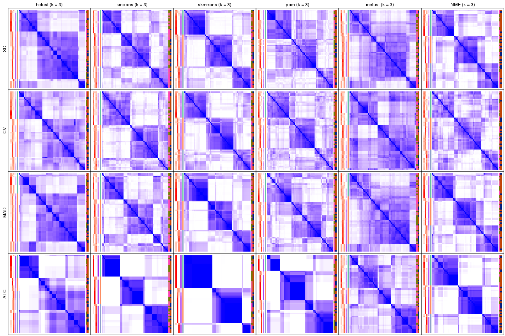
collect_plots(res_list, k = 4, fun = consensus_heatmap, mc.cores = 4)
collect_plots(res_list, k = 5, fun = consensus_heatmap, mc.cores = 4)
collect_plots(res_list, k = 6, fun = consensus_heatmap, mc.cores = 4)
Membership heatmaps for all methods. (What is a membership heatmap?)
collect_plots(res_list, k = 2, fun = membership_heatmap, mc.cores = 4)
collect_plots(res_list, k = 3, fun = membership_heatmap, mc.cores = 4)
collect_plots(res_list, k = 4, fun = membership_heatmap, mc.cores = 4)
collect_plots(res_list, k = 5, fun = membership_heatmap, mc.cores = 4)
collect_plots(res_list, k = 6, fun = membership_heatmap, mc.cores = 4)

Signature heatmaps for all methods. (What is a signature heatmap?)
Note in following heatmaps, rows are scaled.
collect_plots(res_list, k = 2, fun = get_signatures, mc.cores = 4)
collect_plots(res_list, k = 3, fun = get_signatures, mc.cores = 4)
collect_plots(res_list, k = 4, fun = get_signatures, mc.cores = 4)
collect_plots(res_list, k = 5, fun = get_signatures, mc.cores = 4)

collect_plots(res_list, k = 6, fun = get_signatures, mc.cores = 4)
The statistics used for measuring the stability of consensus partitioning. (How are they defined?)
get_stats(res_list, k = 2)
#> k 1-PAC mean_silhouette concordance area_increased Rand Jaccard
#> SD:NMF 2 0.411 0.676 0.863 0.501 0.491 0.491
#> CV:NMF 2 0.379 0.701 0.872 0.503 0.491 0.491
#> MAD:NMF 2 0.474 0.717 0.882 0.504 0.491 0.491
#> ATC:NMF 2 0.922 0.924 0.970 0.507 0.491 0.491
#> SD:skmeans 2 0.493 0.760 0.900 0.505 0.493 0.493
#> CV:skmeans 2 0.771 0.875 0.946 0.509 0.493 0.493
#> MAD:skmeans 2 0.569 0.807 0.917 0.507 0.497 0.497
#> ATC:skmeans 2 1.000 0.992 0.996 0.509 0.491 0.491
#> SD:mclust 2 0.354 0.778 0.838 0.407 0.547 0.547
#> CV:mclust 2 0.424 0.835 0.833 0.395 0.547 0.547
#> MAD:mclust 2 0.456 0.788 0.884 0.407 0.535 0.535
#> ATC:mclust 2 0.209 0.365 0.627 0.390 0.743 0.743
#> SD:kmeans 2 0.543 0.786 0.892 0.496 0.508 0.508
#> CV:kmeans 2 0.617 0.836 0.926 0.501 0.493 0.493
#> MAD:kmeans 2 0.508 0.856 0.920 0.498 0.508 0.508
#> ATC:kmeans 2 0.999 0.967 0.985 0.505 0.497 0.497
#> SD:pam 2 0.201 0.693 0.785 0.475 0.497 0.497
#> CV:pam 2 0.185 0.560 0.803 0.498 0.493 0.493
#> MAD:pam 2 0.341 0.623 0.827 0.477 0.497 0.497
#> ATC:pam 2 0.817 0.831 0.941 0.501 0.493 0.493
#> SD:hclust 2 0.223 0.800 0.846 0.454 0.525 0.525
#> CV:hclust 2 0.275 0.716 0.844 0.426 0.535 0.535
#> MAD:hclust 2 0.297 0.799 0.873 0.454 0.525 0.525
#> ATC:hclust 2 0.308 0.670 0.824 0.425 0.508 0.508
get_stats(res_list, k = 3)
#> k 1-PAC mean_silhouette concordance area_increased Rand Jaccard
#> SD:NMF 3 0.405 0.592 0.802 0.335 0.679 0.434
#> CV:NMF 3 0.291 0.360 0.650 0.316 0.740 0.520
#> MAD:NMF 3 0.441 0.625 0.815 0.330 0.646 0.393
#> ATC:NMF 3 0.608 0.746 0.855 0.313 0.784 0.585
#> SD:skmeans 3 0.547 0.743 0.843 0.331 0.739 0.518
#> CV:skmeans 3 0.445 0.615 0.781 0.319 0.748 0.532
#> MAD:skmeans 3 0.536 0.692 0.829 0.326 0.683 0.444
#> ATC:skmeans 3 0.920 0.898 0.955 0.240 0.879 0.757
#> SD:mclust 3 0.187 0.460 0.700 0.393 0.785 0.632
#> CV:mclust 3 0.129 0.196 0.601 0.289 0.808 0.685
#> MAD:mclust 3 0.181 0.502 0.682 0.360 0.885 0.793
#> ATC:mclust 3 0.221 0.550 0.686 0.573 0.572 0.436
#> SD:kmeans 3 0.390 0.588 0.735 0.335 0.727 0.510
#> CV:kmeans 3 0.351 0.447 0.688 0.325 0.863 0.727
#> MAD:kmeans 3 0.387 0.436 0.700 0.335 0.743 0.537
#> ATC:kmeans 3 0.763 0.859 0.926 0.324 0.724 0.497
#> SD:pam 3 0.311 0.558 0.753 0.348 0.760 0.549
#> CV:pam 3 0.251 0.474 0.739 0.306 0.732 0.507
#> MAD:pam 3 0.302 0.373 0.721 0.357 0.667 0.439
#> ATC:pam 3 0.653 0.701 0.873 0.276 0.729 0.513
#> SD:hclust 3 0.333 0.679 0.762 0.259 0.921 0.851
#> CV:hclust 3 0.191 0.353 0.633 0.459 0.836 0.695
#> MAD:hclust 3 0.255 0.501 0.694 0.295 0.904 0.821
#> ATC:hclust 3 0.449 0.645 0.828 0.424 0.594 0.379
get_stats(res_list, k = 4)
#> k 1-PAC mean_silhouette concordance area_increased Rand Jaccard
#> SD:NMF 4 0.439 0.515 0.723 0.1264 0.825 0.527
#> CV:NMF 4 0.515 0.618 0.793 0.1373 0.697 0.308
#> MAD:NMF 4 0.442 0.471 0.698 0.1265 0.806 0.487
#> ATC:NMF 4 0.616 0.702 0.830 0.0982 0.818 0.532
#> SD:skmeans 4 0.502 0.607 0.777 0.1280 0.845 0.573
#> CV:skmeans 4 0.445 0.488 0.703 0.1270 0.818 0.517
#> MAD:skmeans 4 0.547 0.584 0.791 0.1287 0.849 0.580
#> ATC:skmeans 4 0.998 0.936 0.975 0.1042 0.908 0.764
#> SD:mclust 4 0.355 0.426 0.726 0.2059 0.834 0.618
#> CV:mclust 4 0.180 0.379 0.612 0.2646 0.581 0.271
#> MAD:mclust 4 0.301 0.551 0.735 0.2673 0.707 0.429
#> ATC:mclust 4 0.497 0.677 0.763 0.1651 0.859 0.636
#> SD:kmeans 4 0.471 0.517 0.706 0.1301 0.811 0.507
#> CV:kmeans 4 0.433 0.461 0.663 0.1272 0.780 0.478
#> MAD:kmeans 4 0.471 0.465 0.710 0.1276 0.811 0.515
#> ATC:kmeans 4 0.702 0.716 0.848 0.1282 0.817 0.509
#> SD:pam 4 0.409 0.495 0.702 0.1517 0.841 0.569
#> CV:pam 4 0.377 0.336 0.621 0.1289 0.848 0.595
#> MAD:pam 4 0.385 0.403 0.697 0.1399 0.746 0.408
#> ATC:pam 4 0.849 0.860 0.935 0.1761 0.758 0.426
#> SD:hclust 4 0.420 0.532 0.688 0.2189 0.758 0.499
#> CV:hclust 4 0.333 0.479 0.679 0.1535 0.825 0.567
#> MAD:hclust 4 0.412 0.348 0.622 0.2012 0.806 0.586
#> ATC:hclust 4 0.561 0.660 0.814 0.1908 0.783 0.506
get_stats(res_list, k = 5)
#> k 1-PAC mean_silhouette concordance area_increased Rand Jaccard
#> SD:NMF 5 0.584 0.515 0.732 0.0704 0.921 0.696
#> CV:NMF 5 0.579 0.589 0.773 0.0678 0.871 0.547
#> MAD:NMF 5 0.591 0.480 0.690 0.0668 0.870 0.538
#> ATC:NMF 5 0.648 0.569 0.784 0.0615 0.970 0.890
#> SD:skmeans 5 0.515 0.391 0.634 0.0627 0.929 0.725
#> CV:skmeans 5 0.506 0.414 0.661 0.0648 0.888 0.590
#> MAD:skmeans 5 0.544 0.375 0.640 0.0633 0.906 0.651
#> ATC:skmeans 5 0.791 0.770 0.856 0.0699 0.982 0.943
#> SD:mclust 5 0.508 0.563 0.689 0.1262 0.844 0.543
#> CV:mclust 5 0.362 0.417 0.653 0.1706 0.881 0.605
#> MAD:mclust 5 0.508 0.553 0.691 0.1111 0.913 0.703
#> ATC:mclust 5 0.787 0.712 0.836 0.0854 0.952 0.838
#> SD:kmeans 5 0.533 0.486 0.689 0.0666 0.915 0.683
#> CV:kmeans 5 0.520 0.361 0.625 0.0678 0.920 0.702
#> MAD:kmeans 5 0.544 0.462 0.673 0.0677 0.919 0.694
#> ATC:kmeans 5 0.707 0.673 0.749 0.0627 0.877 0.554
#> SD:pam 5 0.500 0.375 0.671 0.0799 0.869 0.543
#> CV:pam 5 0.504 0.451 0.692 0.0780 0.793 0.393
#> MAD:pam 5 0.483 0.309 0.652 0.0773 0.869 0.541
#> ATC:pam 5 0.951 0.931 0.970 0.0772 0.894 0.613
#> SD:hclust 5 0.496 0.519 0.631 0.0892 0.927 0.768
#> CV:hclust 5 0.422 0.500 0.673 0.0652 0.972 0.894
#> MAD:hclust 5 0.510 0.430 0.674 0.0881 0.840 0.570
#> ATC:hclust 5 0.687 0.659 0.816 0.0830 0.950 0.814
get_stats(res_list, k = 6)
#> k 1-PAC mean_silhouette concordance area_increased Rand Jaccard
#> SD:NMF 6 0.630 0.509 0.694 0.0388 0.899 0.565
#> CV:NMF 6 0.624 0.471 0.696 0.0410 0.929 0.680
#> MAD:NMF 6 0.653 0.484 0.660 0.0408 0.892 0.532
#> ATC:NMF 6 0.591 0.465 0.721 0.0441 0.932 0.741
#> SD:skmeans 6 0.588 0.334 0.607 0.0411 0.899 0.572
#> CV:skmeans 6 0.565 0.354 0.594 0.0398 0.927 0.658
#> MAD:skmeans 6 0.578 0.357 0.616 0.0393 0.901 0.576
#> ATC:skmeans 6 0.769 0.639 0.801 0.0429 0.892 0.664
#> SD:mclust 6 0.561 0.448 0.671 0.0520 0.881 0.566
#> CV:mclust 6 0.619 0.489 0.704 0.0818 0.925 0.689
#> MAD:mclust 6 0.546 0.356 0.652 0.0425 0.809 0.361
#> ATC:mclust 6 0.743 0.623 0.770 0.0567 0.871 0.523
#> SD:kmeans 6 0.605 0.446 0.669 0.0422 0.889 0.544
#> CV:kmeans 6 0.625 0.412 0.657 0.0428 0.874 0.492
#> MAD:kmeans 6 0.604 0.416 0.632 0.0430 0.920 0.643
#> ATC:kmeans 6 0.849 0.861 0.882 0.0438 0.938 0.701
#> SD:pam 6 0.598 0.363 0.651 0.0419 0.804 0.302
#> CV:pam 6 0.576 0.362 0.558 0.0467 0.789 0.265
#> MAD:pam 6 0.607 0.273 0.596 0.0475 0.841 0.392
#> ATC:pam 6 0.895 0.838 0.915 0.0356 0.962 0.801
#> SD:hclust 6 0.623 0.539 0.649 0.0459 0.866 0.553
#> CV:hclust 6 0.526 0.398 0.620 0.0522 0.914 0.656
#> MAD:hclust 6 0.582 0.499 0.638 0.0433 0.853 0.539
#> ATC:hclust 6 0.712 0.582 0.738 0.0488 0.940 0.751
Following heatmap plots the partition for each combination of methods and the lightness correspond to the silhouette scores for samples in each method. On top the consensus subgroup is inferred from all methods by taking the mean silhouette scores as weight.
collect_stats(res_list, k = 2)
collect_stats(res_list, k = 3)
collect_stats(res_list, k = 4)
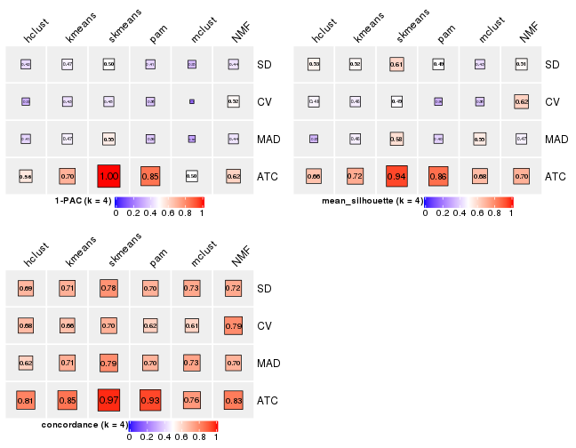
collect_stats(res_list, k = 5)
collect_stats(res_list, k = 6)
Collect partitions from all methods:
collect_classes(res_list, k = 2)
collect_classes(res_list, k = 3)
collect_classes(res_list, k = 4)
collect_classes(res_list, k = 5)
collect_classes(res_list, k = 6)
Overlap of top rows from different top-row methods:
top_rows_overlap(res_list, top_n = 1000, method = "euler")
top_rows_overlap(res_list, top_n = 2000, method = "euler")
top_rows_overlap(res_list, top_n = 3000, method = "euler")
top_rows_overlap(res_list, top_n = 4000, method = "euler")
top_rows_overlap(res_list, top_n = 5000, method = "euler")
Also visualize the correspondance of rankings between different top-row methods:
top_rows_overlap(res_list, top_n = 1000, method = "correspondance")
top_rows_overlap(res_list, top_n = 2000, method = "correspondance")
top_rows_overlap(res_list, top_n = 3000, method = "correspondance")
top_rows_overlap(res_list, top_n = 4000, method = "correspondance")
top_rows_overlap(res_list, top_n = 5000, method = "correspondance")
Heatmaps of the top rows:
top_rows_heatmap(res_list, top_n = 1000)
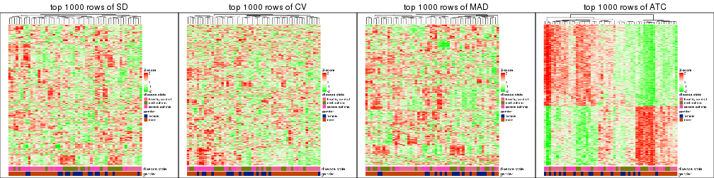
top_rows_heatmap(res_list, top_n = 2000)

top_rows_heatmap(res_list, top_n = 3000)
top_rows_heatmap(res_list, top_n = 4000)
top_rows_heatmap(res_list, top_n = 5000)
Test correlation between subgroups and known annotations. If the known annotation is numeric, one-way ANOVA test is applied, and if the known annotation is discrete, chi-squared contingency table test is applied.
test_to_known_factors(res_list, k = 2)
#> n disease.state(p) gender(p) k
#> SD:NMF 42 0.1029 0.04521 2
#> CV:NMF 45 0.0640 0.04515 2
#> MAD:NMF 45 0.2068 0.01531 2
#> ATC:NMF 52 0.3433 0.03544 2
#> SD:skmeans 48 0.3677 0.01849 2
#> CV:skmeans 50 0.1017 0.03382 2
#> MAD:skmeans 48 0.3677 0.03492 2
#> ATC:skmeans 54 0.4665 0.05192 2
#> SD:mclust 50 0.1942 0.10320 2
#> CV:mclust 53 0.1847 0.21825 2
#> MAD:mclust 50 0.1466 0.10320 2
#> ATC:mclust 8 NA NA 2
#> SD:kmeans 52 0.3764 0.02715 2
#> CV:kmeans 51 0.3081 0.09955 2
#> MAD:kmeans 53 0.4815 0.03366 2
#> ATC:kmeans 53 0.5148 0.05042 2
#> SD:pam 50 0.2017 0.19375 2
#> CV:pam 40 0.5847 0.00158 2
#> MAD:pam 44 0.1510 0.16437 2
#> ATC:pam 47 0.1837 0.14985 2
#> SD:hclust 52 0.7509 0.09598 2
#> CV:hclust 45 0.0653 0.13888 2
#> MAD:hclust 52 0.7509 0.09598 2
#> ATC:hclust 44 0.3425 0.19512 2
test_to_known_factors(res_list, k = 3)
#> n disease.state(p) gender(p) k
#> SD:NMF 40 0.32146 0.03819 3
#> CV:NMF 15 0.14363 0.32465 3
#> MAD:NMF 45 0.10211 0.01144 3
#> ATC:NMF 49 0.10410 0.05569 3
#> SD:skmeans 50 0.01004 0.09980 3
#> CV:skmeans 41 0.16447 0.08693 3
#> MAD:skmeans 49 0.01027 0.04573 3
#> ATC:skmeans 51 0.13373 0.04664 3
#> SD:mclust 27 0.46235 0.36806 3
#> CV:mclust 2 NA NA 3
#> MAD:mclust 35 0.03463 0.53033 3
#> ATC:mclust 38 0.01548 0.41249 3
#> SD:kmeans 36 0.52551 0.03115 3
#> CV:kmeans 28 0.80352 0.02747 3
#> MAD:kmeans 33 0.44869 0.05862 3
#> ATC:kmeans 51 0.70246 0.12182 3
#> SD:pam 39 0.00281 0.36664 3
#> CV:pam 29 0.97880 0.00577 3
#> MAD:pam 23 0.03575 0.25016 3
#> ATC:pam 41 0.21146 0.15633 3
#> SD:hclust 51 0.17876 0.17274 3
#> CV:hclust 14 NA NA 3
#> MAD:hclust 39 0.18716 0.30649 3
#> ATC:hclust 41 0.93931 0.05398 3
test_to_known_factors(res_list, k = 4)
#> n disease.state(p) gender(p) k
#> SD:NMF 32 0.03017 0.0205 4
#> CV:NMF 44 0.00300 0.0187 4
#> MAD:NMF 31 0.03320 0.0390 4
#> ATC:NMF 48 0.56391 0.1736 4
#> SD:skmeans 42 0.05643 0.6647 4
#> CV:skmeans 31 0.05645 0.5930 4
#> MAD:skmeans 41 0.02359 0.7202 4
#> ATC:skmeans 53 0.03503 0.1963 4
#> SD:mclust 30 0.02034 0.1594 4
#> CV:mclust 22 0.06951 0.4411 4
#> MAD:mclust 37 0.05307 0.1842 4
#> ATC:mclust 44 0.11959 0.3495 4
#> SD:kmeans 35 0.11344 0.4017 4
#> CV:kmeans 27 0.02149 0.2668 4
#> MAD:kmeans 30 0.00921 0.4944 4
#> ATC:kmeans 47 0.22020 0.4502 4
#> SD:pam 38 0.39227 0.2911 4
#> CV:pam 19 0.84533 0.1871 4
#> MAD:pam 23 0.07623 0.7833 4
#> ATC:pam 52 0.17779 0.3925 4
#> SD:hclust 37 0.08088 0.1099 4
#> CV:hclust 26 0.04612 0.1314 4
#> MAD:hclust 21 0.41083 0.1893 4
#> ATC:hclust 44 0.17661 0.0629 4
test_to_known_factors(res_list, k = 5)
#> n disease.state(p) gender(p) k
#> SD:NMF 32 0.022341 0.0132 5
#> CV:NMF 42 0.000161 0.0335 5
#> MAD:NMF 26 0.013306 0.2336 5
#> ATC:NMF 39 0.297493 0.1419 5
#> SD:skmeans 21 0.008944 0.2054 5
#> CV:skmeans 22 0.030500 0.4502 5
#> MAD:skmeans 23 0.005856 0.5103 5
#> ATC:skmeans 52 0.042518 0.2337 5
#> SD:mclust 39 0.356899 0.0925 5
#> CV:mclust 30 0.019018 0.2105 5
#> MAD:mclust 40 0.243167 0.0452 5
#> ATC:mclust 46 0.198462 0.3049 5
#> SD:kmeans 31 0.162686 0.2858 5
#> CV:kmeans 17 0.054672 0.3942 5
#> MAD:kmeans 28 0.052718 0.3534 5
#> ATC:kmeans 44 0.198545 0.4549 5
#> SD:pam 18 0.019607 0.8040 5
#> CV:pam 25 0.139902 0.8839 5
#> MAD:pam 9 0.486752 1.0000 5
#> ATC:pam 53 0.584822 0.1591 5
#> SD:hclust 35 0.014383 0.2625 5
#> CV:hclust 28 0.038478 0.3591 5
#> MAD:hclust 25 0.007677 0.0812 5
#> ATC:hclust 41 0.001749 0.0569 5
test_to_known_factors(res_list, k = 6)
#> n disease.state(p) gender(p) k
#> SD:NMF 30 0.01290 0.0170 6
#> CV:NMF 32 0.01142 0.0316 6
#> MAD:NMF 28 0.02847 0.0299 6
#> ATC:NMF 30 0.26481 0.1328 6
#> SD:skmeans 13 0.38785 0.6395 6
#> CV:skmeans 16 0.01473 0.0931 6
#> MAD:skmeans 11 0.41542 0.3000 6
#> ATC:skmeans 45 0.01276 0.5437 6
#> SD:mclust 27 0.07116 0.3944 6
#> CV:mclust 37 0.00645 0.2929 6
#> MAD:mclust 16 0.11879 0.5336 6
#> ATC:mclust 39 0.28252 0.3027 6
#> SD:kmeans 27 0.00961 0.2312 6
#> CV:kmeans 28 0.08788 0.4987 6
#> MAD:kmeans 26 0.00662 0.2762 6
#> ATC:kmeans 53 0.06387 0.5038 6
#> SD:pam 21 0.00792 0.7801 6
#> CV:pam 18 0.17584 0.7104 6
#> MAD:pam 20 0.04348 0.3088 6
#> ATC:pam 52 0.26961 0.2302 6
#> SD:hclust 36 0.00868 0.1799 6
#> CV:hclust 19 0.00313 0.1663 6
#> MAD:hclust 22 0.01856 0.1976 6
#> ATC:hclust 38 0.06858 0.1003 6
The object with results only for a single top-value method and a single partition method can be extracted as:
res = res_list["SD", "hclust"]
# you can also extract it by
# res = res_list["SD:hclust"]
A summary of res and all the functions that can be applied to it:
res
#> A 'ConsensusPartition' object with k = 2, 3, 4, 5, 6.
#> On a matrix with 26819 rows and 54 columns.
#> Top rows (1000, 2000, 3000, 4000, 5000) are extracted by 'SD' method.
#> Subgroups are detected by 'hclust' method.
#> Performed in total 1250 partitions by row resampling.
#> Best k for subgroups seems to be 2.
#>
#> Following methods can be applied to this 'ConsensusPartition' object:
#> [1] "cola_report" "collect_classes" "collect_plots"
#> [4] "collect_stats" "colnames" "compare_signatures"
#> [7] "consensus_heatmap" "dimension_reduction" "functional_enrichment"
#> [10] "get_anno_col" "get_anno" "get_classes"
#> [13] "get_consensus" "get_matrix" "get_membership"
#> [16] "get_param" "get_signatures" "get_stats"
#> [19] "is_best_k" "is_stable_k" "membership_heatmap"
#> [22] "ncol" "nrow" "plot_ecdf"
#> [25] "rownames" "select_partition_number" "show"
#> [28] "suggest_best_k" "test_to_known_factors"
collect_plots() function collects all the plots made from res for all k (number of partitions)
into one single page to provide an easy and fast comparison between different k.
collect_plots(res)
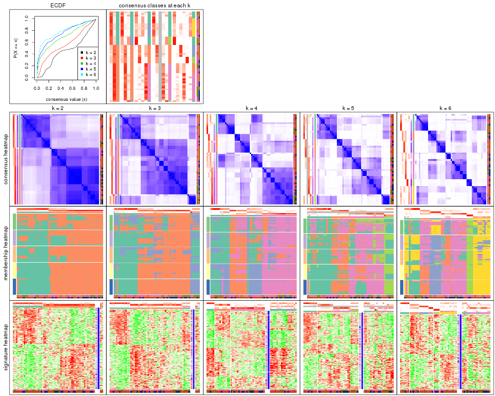
The plots are:
k and the heatmap of
predicted classes for each k.k.k.k.All the plots in panels can be made by individual functions and they are plotted later in this section.
select_partition_number() produces several plots showing different
statistics for choosing “optimized” k. There are following statistics:
k;k, the area increased is defined as \(A_k - A_{k-1}\).The detailed explanations of these statistics can be found in the cola vignette.
Generally speaking, lower PAC score, higher mean silhouette score or higher
concordance corresponds to better partition. Rand index and Jaccard index
measure how similar the current partition is compared to partition with k-1.
If they are too similar, we won't accept k is better than k-1.
select_partition_number(res)
The numeric values for all these statistics can be obtained by get_stats().
get_stats(res)
#> k 1-PAC mean_silhouette concordance area_increased Rand Jaccard
#> 2 2 0.223 0.800 0.846 0.4539 0.525 0.525
#> 3 3 0.333 0.679 0.762 0.2586 0.921 0.851
#> 4 4 0.420 0.532 0.688 0.2189 0.758 0.499
#> 5 5 0.496 0.519 0.631 0.0892 0.927 0.768
#> 6 6 0.623 0.539 0.649 0.0459 0.866 0.553
suggest_best_k() suggests the best \(k\) based on these statistics. The rules are as follows:
suggest_best_k(res)
#> [1] 2
Following shows the table of the partitions (You need to click the show/hide
code output link to see it). The membership matrix (columns with name p*)
is inferred by
clue::cl_consensus()
function with the SE method. Basically the value in the membership matrix
represents the probability to belong to a certain group. The finall class
label for an item is determined with the group with highest probability it
belongs to.
In get_classes() function, the entropy is calculated from the membership
matrix and the silhouette score is calculated from the consensus matrix.
cbind(get_classes(res, k = 2), get_membership(res, k = 2))
#> class entropy silhouette p1 p2
#> GSM665386 2 0.204 0.853 0.032 0.968
#> GSM665389 2 0.184 0.834 0.028 0.972
#> GSM665390 2 0.946 0.200 0.364 0.636
#> GSM665391 1 0.821 0.804 0.744 0.256
#> GSM665392 2 0.443 0.825 0.092 0.908
#> GSM665393 1 0.738 0.813 0.792 0.208
#> GSM665394 2 0.204 0.853 0.032 0.968
#> GSM665395 1 0.625 0.855 0.844 0.156
#> GSM665396 2 0.184 0.834 0.028 0.972
#> GSM665398 2 0.844 0.713 0.272 0.728
#> GSM665399 1 0.730 0.815 0.796 0.204
#> GSM665400 2 0.855 0.702 0.280 0.720
#> GSM665401 2 0.844 0.713 0.272 0.728
#> GSM665402 1 0.745 0.810 0.788 0.212
#> GSM665403 2 0.760 0.767 0.220 0.780
#> GSM665387 2 0.204 0.853 0.032 0.968
#> GSM665388 2 0.443 0.825 0.092 0.908
#> GSM665397 2 0.163 0.858 0.024 0.976
#> GSM665404 1 0.416 0.867 0.916 0.084
#> GSM665405 2 0.311 0.860 0.056 0.944
#> GSM665406 2 0.295 0.861 0.052 0.948
#> GSM665407 2 0.827 0.726 0.260 0.740
#> GSM665409 1 0.373 0.861 0.928 0.072
#> GSM665413 2 0.456 0.847 0.096 0.904
#> GSM665416 1 0.760 0.827 0.780 0.220
#> GSM665417 1 0.745 0.831 0.788 0.212
#> GSM665418 1 0.949 0.404 0.632 0.368
#> GSM665419 1 0.494 0.864 0.892 0.108
#> GSM665421 1 0.760 0.827 0.780 0.220
#> GSM665422 2 0.529 0.819 0.120 0.880
#> GSM665408 2 0.311 0.860 0.056 0.944
#> GSM665410 2 0.311 0.860 0.056 0.944
#> GSM665411 2 0.163 0.858 0.024 0.976
#> GSM665412 2 0.295 0.861 0.052 0.948
#> GSM665414 2 0.224 0.858 0.036 0.964
#> GSM665415 1 0.738 0.831 0.792 0.208
#> GSM665420 2 0.295 0.861 0.052 0.948
#> GSM665424 1 0.430 0.862 0.912 0.088
#> GSM665425 2 0.861 0.689 0.284 0.716
#> GSM665429 1 0.430 0.862 0.912 0.088
#> GSM665430 2 0.895 0.649 0.312 0.688
#> GSM665431 2 0.781 0.758 0.232 0.768
#> GSM665432 1 0.260 0.850 0.956 0.044
#> GSM665433 1 0.767 0.829 0.776 0.224
#> GSM665434 1 0.416 0.867 0.916 0.084
#> GSM665435 2 0.311 0.861 0.056 0.944
#> GSM665436 2 0.295 0.861 0.052 0.948
#> GSM665423 2 0.295 0.861 0.052 0.948
#> GSM665426 2 0.416 0.852 0.084 0.916
#> GSM665427 2 0.443 0.825 0.092 0.908
#> GSM665428 1 0.574 0.837 0.864 0.136
#> GSM665437 2 0.895 0.649 0.312 0.688
#> GSM665438 2 0.861 0.689 0.284 0.716
#> GSM665439 1 0.327 0.859 0.940 0.060
cbind(get_classes(res, k = 3), get_membership(res, k = 3))
#> class entropy silhouette p1 p2 p3
#> GSM665386 2 0.566 0.769 0.028 0.772 0.200
#> GSM665389 2 0.611 0.613 0.000 0.604 0.396
#> GSM665390 3 0.304 0.335 0.000 0.104 0.896
#> GSM665391 3 0.782 0.714 0.440 0.052 0.508
#> GSM665392 2 0.494 0.749 0.056 0.840 0.104
#> GSM665393 1 0.571 0.624 0.804 0.116 0.080
#> GSM665394 2 0.566 0.769 0.028 0.772 0.200
#> GSM665395 1 0.383 0.665 0.868 0.124 0.008
#> GSM665396 2 0.581 0.684 0.000 0.664 0.336
#> GSM665398 2 0.745 0.677 0.280 0.652 0.068
#> GSM665399 1 0.538 0.628 0.820 0.112 0.068
#> GSM665400 2 0.751 0.667 0.288 0.644 0.068
#> GSM665401 2 0.753 0.676 0.280 0.648 0.072
#> GSM665402 1 0.578 0.619 0.800 0.120 0.080
#> GSM665403 2 0.573 0.734 0.228 0.752 0.020
#> GSM665387 2 0.566 0.769 0.028 0.772 0.200
#> GSM665388 2 0.494 0.749 0.056 0.840 0.104
#> GSM665397 2 0.414 0.807 0.032 0.872 0.096
#> GSM665404 1 0.258 0.678 0.928 0.008 0.064
#> GSM665405 2 0.369 0.812 0.048 0.896 0.056
#> GSM665406 2 0.348 0.813 0.044 0.904 0.052
#> GSM665407 2 0.737 0.688 0.260 0.668 0.072
#> GSM665409 1 0.103 0.705 0.976 0.000 0.024
#> GSM665413 2 0.401 0.809 0.096 0.876 0.028
#> GSM665416 3 0.717 0.754 0.460 0.024 0.516
#> GSM665417 3 0.682 0.740 0.472 0.012 0.516
#> GSM665418 1 0.851 0.118 0.596 0.264 0.140
#> GSM665419 1 0.420 0.548 0.852 0.012 0.136
#> GSM665421 3 0.717 0.754 0.460 0.024 0.516
#> GSM665422 2 0.756 0.692 0.096 0.672 0.232
#> GSM665408 2 0.369 0.812 0.048 0.896 0.056
#> GSM665410 2 0.369 0.812 0.048 0.896 0.056
#> GSM665411 2 0.414 0.807 0.032 0.872 0.096
#> GSM665412 2 0.348 0.813 0.044 0.904 0.052
#> GSM665414 2 0.355 0.809 0.036 0.900 0.064
#> GSM665415 3 0.695 0.739 0.472 0.016 0.512
#> GSM665420 2 0.206 0.811 0.044 0.948 0.008
#> GSM665424 1 0.175 0.713 0.960 0.028 0.012
#> GSM665425 2 0.718 0.634 0.248 0.684 0.068
#> GSM665429 1 0.175 0.713 0.960 0.028 0.012
#> GSM665430 2 0.759 0.577 0.300 0.632 0.068
#> GSM665431 2 0.594 0.727 0.236 0.740 0.024
#> GSM665432 1 0.129 0.692 0.968 0.000 0.032
#> GSM665433 1 0.752 -0.532 0.540 0.040 0.420
#> GSM665434 1 0.258 0.678 0.928 0.008 0.064
#> GSM665435 2 0.249 0.813 0.048 0.936 0.016
#> GSM665436 2 0.206 0.811 0.044 0.948 0.008
#> GSM665423 2 0.253 0.812 0.044 0.936 0.020
#> GSM665426 2 0.491 0.803 0.068 0.844 0.088
#> GSM665427 2 0.494 0.749 0.056 0.840 0.104
#> GSM665428 1 0.497 0.592 0.840 0.060 0.100
#> GSM665437 2 0.759 0.577 0.300 0.632 0.068
#> GSM665438 2 0.718 0.634 0.248 0.684 0.068
#> GSM665439 1 0.188 0.687 0.952 0.004 0.044
cbind(get_classes(res, k = 4), get_membership(res, k = 4))
#> class entropy silhouette p1 p2 p3 p4
#> GSM665386 4 0.4788 0.7386 0.036 0.008 0.180 0.776
#> GSM665389 4 0.6079 0.5561 0.052 0.000 0.380 0.568
#> GSM665390 3 0.5512 -0.1895 0.488 0.000 0.496 0.016
#> GSM665391 1 0.1888 0.5026 0.940 0.000 0.016 0.044
#> GSM665392 4 0.4687 0.6173 0.004 0.288 0.004 0.704
#> GSM665393 3 0.9677 0.4464 0.276 0.164 0.360 0.200
#> GSM665394 4 0.4788 0.7386 0.036 0.008 0.180 0.776
#> GSM665395 3 0.9136 0.4149 0.304 0.120 0.424 0.152
#> GSM665396 4 0.5847 0.6232 0.052 0.000 0.320 0.628
#> GSM665398 2 0.6196 0.7083 0.024 0.608 0.028 0.340
#> GSM665399 3 0.9711 0.4510 0.260 0.180 0.364 0.196
#> GSM665400 2 0.6357 0.7072 0.032 0.604 0.028 0.336
#> GSM665401 2 0.6299 0.7048 0.024 0.600 0.032 0.344
#> GSM665402 3 0.9699 0.4425 0.276 0.168 0.356 0.200
#> GSM665403 2 0.5797 0.6560 0.024 0.624 0.012 0.340
#> GSM665387 4 0.4788 0.7386 0.036 0.008 0.180 0.776
#> GSM665388 4 0.4687 0.6173 0.004 0.288 0.004 0.704
#> GSM665397 4 0.4412 0.7761 0.016 0.052 0.104 0.828
#> GSM665404 1 0.5313 0.0756 0.536 0.004 0.456 0.004
#> GSM665405 4 0.0524 0.7759 0.008 0.004 0.000 0.988
#> GSM665406 4 0.1661 0.7575 0.004 0.052 0.000 0.944
#> GSM665407 2 0.6449 0.6878 0.028 0.580 0.032 0.360
#> GSM665409 3 0.6837 0.1647 0.428 0.100 0.472 0.000
#> GSM665413 2 0.6103 0.2857 0.024 0.484 0.012 0.480
#> GSM665416 1 0.0817 0.5333 0.976 0.000 0.000 0.024
#> GSM665417 1 0.0469 0.5334 0.988 0.000 0.000 0.012
#> GSM665418 1 0.6896 0.1695 0.596 0.004 0.140 0.260
#> GSM665419 1 0.5139 0.2176 0.612 0.004 0.380 0.004
#> GSM665421 1 0.0817 0.5333 0.976 0.000 0.000 0.024
#> GSM665422 4 0.8121 0.5507 0.112 0.112 0.196 0.580
#> GSM665408 4 0.0524 0.7759 0.008 0.004 0.000 0.988
#> GSM665410 4 0.0524 0.7759 0.008 0.004 0.000 0.988
#> GSM665411 4 0.4412 0.7761 0.016 0.052 0.104 0.828
#> GSM665412 4 0.1661 0.7575 0.004 0.052 0.000 0.944
#> GSM665414 4 0.4986 0.7677 0.024 0.108 0.068 0.800
#> GSM665415 1 0.0707 0.5336 0.980 0.000 0.000 0.020
#> GSM665420 4 0.3219 0.7077 0.000 0.164 0.000 0.836
#> GSM665424 3 0.7600 0.2956 0.380 0.112 0.484 0.024
#> GSM665425 2 0.2353 0.6113 0.008 0.924 0.012 0.056
#> GSM665429 3 0.7600 0.2956 0.380 0.112 0.484 0.024
#> GSM665430 2 0.2901 0.5710 0.036 0.908 0.040 0.016
#> GSM665431 2 0.5742 0.6671 0.024 0.636 0.012 0.328
#> GSM665432 1 0.5167 0.0417 0.508 0.004 0.488 0.000
#> GSM665433 1 0.4908 0.4378 0.796 0.076 0.116 0.012
#> GSM665434 1 0.5313 0.0756 0.536 0.004 0.456 0.004
#> GSM665435 4 0.2944 0.7497 0.004 0.128 0.000 0.868
#> GSM665436 4 0.3105 0.7330 0.004 0.140 0.000 0.856
#> GSM665423 4 0.3217 0.7500 0.012 0.128 0.000 0.860
#> GSM665426 4 0.2840 0.7698 0.044 0.000 0.056 0.900
#> GSM665427 4 0.4687 0.6173 0.004 0.288 0.004 0.704
#> GSM665428 3 0.7741 0.2581 0.296 0.264 0.440 0.000
#> GSM665437 2 0.2901 0.5710 0.036 0.908 0.040 0.016
#> GSM665438 2 0.2353 0.6113 0.008 0.924 0.012 0.056
#> GSM665439 1 0.5330 0.0651 0.516 0.004 0.476 0.004
cbind(get_classes(res, k = 5), get_membership(res, k = 5))
#> class entropy silhouette p1 p2 p3 p4 p5
#> GSM665386 4 0.3631 0.615 0.004 0.008 NA 0.792 0.192
#> GSM665389 4 0.5173 0.512 0.000 0.020 NA 0.568 0.396
#> GSM665390 5 0.1818 0.314 0.000 0.044 NA 0.024 0.932
#> GSM665391 5 0.5402 0.740 0.420 0.004 NA 0.048 0.528
#> GSM665392 4 0.4803 0.399 0.000 0.012 NA 0.500 0.004
#> GSM665393 1 0.6226 0.500 0.584 0.276 NA 0.120 0.020
#> GSM665394 4 0.3631 0.615 0.004 0.008 NA 0.792 0.192
#> GSM665395 1 0.5195 0.564 0.692 0.212 NA 0.088 0.000
#> GSM665396 4 0.4989 0.544 0.000 0.020 NA 0.628 0.336
#> GSM665398 2 0.2719 0.676 0.000 0.852 NA 0.144 0.004
#> GSM665399 1 0.5961 0.496 0.576 0.308 NA 0.108 0.008
#> GSM665400 2 0.3001 0.675 0.008 0.844 NA 0.144 0.004
#> GSM665401 2 0.2886 0.673 0.000 0.844 NA 0.148 0.008
#> GSM665402 1 0.6245 0.495 0.580 0.280 NA 0.120 0.020
#> GSM665403 2 0.4036 0.640 0.000 0.788 NA 0.144 0.000
#> GSM665387 4 0.3631 0.615 0.004 0.008 NA 0.792 0.192
#> GSM665388 4 0.4803 0.399 0.000 0.012 NA 0.500 0.004
#> GSM665397 4 0.4179 0.623 0.000 0.076 NA 0.800 0.112
#> GSM665404 1 0.1285 0.557 0.956 0.004 NA 0.004 0.036
#> GSM665405 4 0.1978 0.622 0.004 0.044 NA 0.928 0.000
#> GSM665406 4 0.5817 0.430 0.000 0.184 NA 0.612 0.000
#> GSM665407 2 0.3163 0.662 0.000 0.824 NA 0.164 0.012
#> GSM665409 1 0.2909 0.613 0.848 0.140 NA 0.000 0.012
#> GSM665413 2 0.5849 0.330 0.000 0.596 NA 0.316 0.028
#> GSM665416 5 0.4961 0.778 0.448 0.000 NA 0.028 0.524
#> GSM665417 5 0.4735 0.766 0.460 0.000 NA 0.016 0.524
#> GSM665418 1 0.6259 -0.134 0.580 0.008 NA 0.264 0.144
#> GSM665419 1 0.3202 0.360 0.836 0.008 NA 0.004 0.148
#> GSM665421 5 0.4961 0.778 0.448 0.000 NA 0.028 0.524
#> GSM665422 4 0.7936 0.395 0.068 0.016 NA 0.464 0.220
#> GSM665408 4 0.1978 0.622 0.004 0.044 NA 0.928 0.000
#> GSM665410 4 0.1978 0.622 0.004 0.044 NA 0.928 0.000
#> GSM665411 4 0.4179 0.623 0.000 0.076 NA 0.800 0.112
#> GSM665412 4 0.5817 0.430 0.000 0.184 NA 0.612 0.000
#> GSM665414 4 0.6916 0.490 0.000 0.188 NA 0.584 0.080
#> GSM665415 5 0.4894 0.769 0.456 0.000 NA 0.024 0.520
#> GSM665420 4 0.6345 0.332 0.000 0.252 NA 0.524 0.000
#> GSM665424 1 0.3320 0.618 0.828 0.152 NA 0.008 0.000
#> GSM665425 2 0.5522 0.574 0.008 0.544 NA 0.028 0.012
#> GSM665429 1 0.3320 0.618 0.828 0.152 NA 0.008 0.000
#> GSM665430 2 0.5736 0.540 0.060 0.536 NA 0.000 0.012
#> GSM665431 2 0.3906 0.648 0.000 0.800 NA 0.132 0.000
#> GSM665432 1 0.0162 0.562 0.996 0.000 NA 0.000 0.004
#> GSM665433 1 0.6438 -0.586 0.452 0.060 NA 0.008 0.448
#> GSM665434 1 0.1285 0.557 0.956 0.004 NA 0.004 0.036
#> GSM665435 4 0.6083 0.407 0.000 0.204 NA 0.572 0.000
#> GSM665436 4 0.6400 0.349 0.000 0.228 NA 0.512 0.000
#> GSM665423 4 0.6392 0.396 0.000 0.208 NA 0.556 0.008
#> GSM665426 4 0.3319 0.625 0.028 0.028 NA 0.872 0.064
#> GSM665427 4 0.4891 0.398 0.000 0.016 NA 0.500 0.004
#> GSM665428 1 0.4587 0.539 0.728 0.068 NA 0.000 0.000
#> GSM665437 2 0.5736 0.540 0.060 0.536 NA 0.000 0.012
#> GSM665438 2 0.5522 0.574 0.008 0.544 NA 0.028 0.012
#> GSM665439 1 0.1717 0.530 0.936 0.008 NA 0.004 0.052
cbind(get_classes(res, k = 6), get_membership(res, k = 6))
#> class entropy silhouette p1 p2 p3 p4 p5 p6
#> GSM665386 4 0.0951 0.510 0.008 0.000 0.020 0.968 0.000 0.004
#> GSM665389 4 0.4338 0.448 0.036 0.136 0.004 0.768 0.000 0.056
#> GSM665390 1 0.7378 0.127 0.456 0.224 0.036 0.220 0.000 0.064
#> GSM665391 1 0.1434 0.610 0.940 0.012 0.000 0.048 0.000 0.000
#> GSM665392 4 0.6715 0.358 0.000 0.232 0.000 0.372 0.040 0.356
#> GSM665393 6 0.7724 0.567 0.240 0.004 0.296 0.052 0.044 0.364
#> GSM665394 4 0.0951 0.510 0.008 0.000 0.020 0.968 0.000 0.004
#> GSM665395 6 0.6507 0.635 0.264 0.000 0.268 0.028 0.000 0.440
#> GSM665396 4 0.3255 0.485 0.036 0.128 0.004 0.828 0.000 0.004
#> GSM665398 3 0.1934 0.854 0.000 0.000 0.916 0.040 0.044 0.000
#> GSM665399 6 0.7441 0.566 0.220 0.000 0.332 0.040 0.044 0.364
#> GSM665400 3 0.2221 0.850 0.004 0.000 0.908 0.040 0.044 0.004
#> GSM665401 3 0.2070 0.855 0.000 0.000 0.908 0.048 0.044 0.000
#> GSM665402 6 0.7849 0.560 0.236 0.008 0.296 0.056 0.044 0.360
#> GSM665403 3 0.2596 0.816 0.000 0.056 0.892 0.032 0.008 0.012
#> GSM665387 4 0.0951 0.510 0.008 0.000 0.020 0.968 0.000 0.004
#> GSM665388 4 0.6715 0.358 0.000 0.232 0.000 0.372 0.040 0.356
#> GSM665397 4 0.3432 0.363 0.000 0.148 0.052 0.800 0.000 0.000
#> GSM665404 6 0.4245 0.514 0.460 0.000 0.004 0.004 0.004 0.528
#> GSM665405 4 0.4691 0.312 0.012 0.152 0.072 0.744 0.012 0.008
#> GSM665406 2 0.5902 0.750 0.008 0.480 0.096 0.400 0.012 0.004
#> GSM665407 3 0.2575 0.847 0.000 0.004 0.880 0.072 0.044 0.000
#> GSM665409 6 0.5761 0.651 0.336 0.000 0.136 0.000 0.012 0.516
#> GSM665413 3 0.5072 0.316 0.000 0.108 0.640 0.244 0.008 0.000
#> GSM665416 1 0.0692 0.629 0.976 0.004 0.000 0.020 0.000 0.000
#> GSM665417 1 0.0363 0.626 0.988 0.000 0.000 0.012 0.000 0.000
#> GSM665418 1 0.5728 0.226 0.592 0.004 0.004 0.252 0.012 0.136
#> GSM665419 1 0.4161 -0.233 0.608 0.000 0.004 0.000 0.012 0.376
#> GSM665421 1 0.0692 0.629 0.976 0.004 0.000 0.020 0.000 0.000
#> GSM665422 4 0.7361 0.402 0.108 0.268 0.008 0.480 0.024 0.112
#> GSM665408 4 0.4691 0.312 0.012 0.152 0.072 0.744 0.012 0.008
#> GSM665410 4 0.4691 0.312 0.012 0.152 0.072 0.744 0.012 0.008
#> GSM665411 4 0.3432 0.363 0.000 0.148 0.052 0.800 0.000 0.000
#> GSM665412 2 0.5902 0.750 0.008 0.480 0.096 0.400 0.012 0.004
#> GSM665414 4 0.5290 -0.583 0.000 0.392 0.104 0.504 0.000 0.000
#> GSM665415 1 0.0520 0.627 0.984 0.008 0.000 0.008 0.000 0.000
#> GSM665420 2 0.5825 0.834 0.004 0.524 0.168 0.300 0.004 0.000
#> GSM665424 6 0.5758 0.673 0.280 0.000 0.148 0.000 0.016 0.556
#> GSM665425 5 0.1049 0.956 0.000 0.032 0.008 0.000 0.960 0.000
#> GSM665429 6 0.5758 0.673 0.280 0.000 0.148 0.000 0.016 0.556
#> GSM665430 5 0.1230 0.954 0.008 0.000 0.008 0.000 0.956 0.028
#> GSM665431 3 0.2542 0.817 0.000 0.056 0.896 0.024 0.012 0.012
#> GSM665432 6 0.4051 0.519 0.432 0.000 0.000 0.000 0.008 0.560
#> GSM665433 1 0.4561 0.514 0.776 0.016 0.008 0.024 0.100 0.076
#> GSM665434 6 0.4245 0.514 0.460 0.000 0.004 0.004 0.004 0.528
#> GSM665435 2 0.5671 0.839 0.004 0.516 0.128 0.348 0.004 0.000
#> GSM665436 2 0.5586 0.836 0.004 0.564 0.140 0.288 0.004 0.000
#> GSM665423 2 0.5852 0.844 0.012 0.520 0.132 0.332 0.004 0.000
#> GSM665426 4 0.4867 0.405 0.048 0.124 0.056 0.752 0.012 0.008
#> GSM665427 4 0.6763 0.356 0.000 0.232 0.000 0.372 0.044 0.352
#> GSM665428 6 0.6438 0.557 0.276 0.064 0.060 0.000 0.040 0.560
#> GSM665437 5 0.1149 0.956 0.008 0.000 0.008 0.000 0.960 0.024
#> GSM665438 5 0.1049 0.956 0.000 0.032 0.008 0.000 0.960 0.000
#> GSM665439 1 0.4407 -0.507 0.496 0.000 0.000 0.000 0.024 0.480
Heatmaps for the consensus matrix. It visualizes the probability of two samples to be in a same group.
consensus_heatmap(res, k = 2)
consensus_heatmap(res, k = 3)
consensus_heatmap(res, k = 4)
consensus_heatmap(res, k = 5)
consensus_heatmap(res, k = 6)
Heatmaps for the membership of samples in all partitions to see how consistent they are:
membership_heatmap(res, k = 2)
membership_heatmap(res, k = 3)

membership_heatmap(res, k = 4)
membership_heatmap(res, k = 5)
membership_heatmap(res, k = 6)
As soon as we have had the classes for columns, we can look for signatures which are significantly different between classes which can be candidate marks for certain classes. Following are the heatmaps for signatures.
Signature heatmaps where rows are scaled:
get_signatures(res, k = 2)
get_signatures(res, k = 3)
get_signatures(res, k = 4)
get_signatures(res, k = 5)
get_signatures(res, k = 6)
Signature heatmaps where rows are not scaled:
get_signatures(res, k = 2, scale_rows = FALSE)
get_signatures(res, k = 3, scale_rows = FALSE)
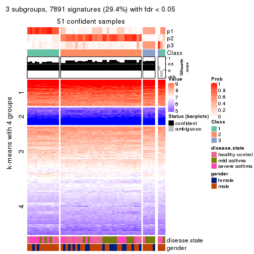
get_signatures(res, k = 4, scale_rows = FALSE)
get_signatures(res, k = 5, scale_rows = FALSE)
get_signatures(res, k = 6, scale_rows = FALSE)
Compare the overlap of signatures from different k:
compare_signatures(res)
get_signature() returns a data frame invisibly. TO get the list of signatures, the function
call should be assigned to a variable explicitly. In following code, if plot argument is set
to FALSE, no heatmap is plotted while only the differential analysis is performed.
# code only for demonstration
tb = get_signature(res, k = ..., plot = FALSE)
An example of the output of tb is:
#> which_row fdr mean_1 mean_2 scaled_mean_1 scaled_mean_2 km
#> 1 38 0.042760348 8.373488 9.131774 -0.5533452 0.5164555 1
#> 2 40 0.018707592 7.106213 8.469186 -0.6173731 0.5762149 1
#> 3 55 0.019134737 10.221463 11.207825 -0.6159697 0.5749050 1
#> 4 59 0.006059896 5.921854 7.869574 -0.6899429 0.6439467 1
#> 5 60 0.018055526 8.928898 10.211722 -0.6204761 0.5791110 1
#> 6 98 0.009384629 15.714769 14.887706 0.6635654 -0.6193277 2
...
The columns in tb are:
which_row: row indices corresponding to the input matrix.fdr: FDR for the differential test. mean_x: The mean value in group x.scaled_mean_x: The mean value in group x after rows are scaled.km: Row groups if k-means clustering is applied to rows.UMAP plot which shows how samples are separated.
dimension_reduction(res, k = 2, method = "UMAP")
dimension_reduction(res, k = 3, method = "UMAP")
dimension_reduction(res, k = 4, method = "UMAP")
dimension_reduction(res, k = 5, method = "UMAP")
dimension_reduction(res, k = 6, method = "UMAP")
Following heatmap shows how subgroups are split when increasing k:
collect_classes(res)
Test correlation between subgroups and known annotations. If the known annotation is numeric, one-way ANOVA test is applied, and if the known annotation is discrete, chi-squared contingency table test is applied.
test_to_known_factors(res)
#> n disease.state(p) gender(p) k
#> SD:hclust 52 0.75090 0.096 2
#> SD:hclust 51 0.17876 0.173 3
#> SD:hclust 37 0.08088 0.110 4
#> SD:hclust 35 0.01438 0.262 5
#> SD:hclust 36 0.00868 0.180 6
If matrix rows can be associated to genes, consider to use functional_enrichment(res,
...) to perform function enrichment for the signature genes. See this vignette for more detailed explanations.
The object with results only for a single top-value method and a single partition method can be extracted as:
res = res_list["SD", "kmeans"]
# you can also extract it by
# res = res_list["SD:kmeans"]
A summary of res and all the functions that can be applied to it:
res
#> A 'ConsensusPartition' object with k = 2, 3, 4, 5, 6.
#> On a matrix with 26819 rows and 54 columns.
#> Top rows (1000, 2000, 3000, 4000, 5000) are extracted by 'SD' method.
#> Subgroups are detected by 'kmeans' method.
#> Performed in total 1250 partitions by row resampling.
#> Best k for subgroups seems to be 2.
#>
#> Following methods can be applied to this 'ConsensusPartition' object:
#> [1] "cola_report" "collect_classes" "collect_plots"
#> [4] "collect_stats" "colnames" "compare_signatures"
#> [7] "consensus_heatmap" "dimension_reduction" "functional_enrichment"
#> [10] "get_anno_col" "get_anno" "get_classes"
#> [13] "get_consensus" "get_matrix" "get_membership"
#> [16] "get_param" "get_signatures" "get_stats"
#> [19] "is_best_k" "is_stable_k" "membership_heatmap"
#> [22] "ncol" "nrow" "plot_ecdf"
#> [25] "rownames" "select_partition_number" "show"
#> [28] "suggest_best_k" "test_to_known_factors"
collect_plots() function collects all the plots made from res for all k (number of partitions)
into one single page to provide an easy and fast comparison between different k.
collect_plots(res)
The plots are:
k and the heatmap of
predicted classes for each k.k.k.k.All the plots in panels can be made by individual functions and they are plotted later in this section.
select_partition_number() produces several plots showing different
statistics for choosing “optimized” k. There are following statistics:
k;k, the area increased is defined as \(A_k - A_{k-1}\).The detailed explanations of these statistics can be found in the cola vignette.
Generally speaking, lower PAC score, higher mean silhouette score or higher
concordance corresponds to better partition. Rand index and Jaccard index
measure how similar the current partition is compared to partition with k-1.
If they are too similar, we won't accept k is better than k-1.
select_partition_number(res)
The numeric values for all these statistics can be obtained by get_stats().
get_stats(res)
#> k 1-PAC mean_silhouette concordance area_increased Rand Jaccard
#> 2 2 0.543 0.786 0.892 0.4962 0.508 0.508
#> 3 3 0.390 0.588 0.735 0.3350 0.727 0.510
#> 4 4 0.471 0.517 0.706 0.1301 0.811 0.507
#> 5 5 0.533 0.486 0.689 0.0666 0.915 0.683
#> 6 6 0.605 0.446 0.669 0.0422 0.889 0.544
suggest_best_k() suggests the best \(k\) based on these statistics. The rules are as follows:
suggest_best_k(res)
#> [1] 2
Following shows the table of the partitions (You need to click the show/hide
code output link to see it). The membership matrix (columns with name p*)
is inferred by
clue::cl_consensus()
function with the SE method. Basically the value in the membership matrix
represents the probability to belong to a certain group. The finall class
label for an item is determined with the group with highest probability it
belongs to.
In get_classes() function, the entropy is calculated from the membership
matrix and the silhouette score is calculated from the consensus matrix.
cbind(get_classes(res, k = 2), get_membership(res, k = 2))
#> class entropy silhouette p1 p2
#> GSM665386 2 0.0376 0.8676 0.004 0.996
#> GSM665389 2 0.0000 0.8685 0.000 1.000
#> GSM665390 2 0.6343 0.7265 0.160 0.840
#> GSM665391 1 0.8955 0.6595 0.688 0.312
#> GSM665392 2 0.8386 0.6732 0.268 0.732
#> GSM665393 1 0.8386 0.7287 0.732 0.268
#> GSM665394 2 0.0376 0.8676 0.004 0.996
#> GSM665395 1 0.1414 0.8625 0.980 0.020
#> GSM665396 2 0.0376 0.8676 0.004 0.996
#> GSM665398 2 0.1184 0.8623 0.016 0.984
#> GSM665399 1 0.0672 0.8644 0.992 0.008
#> GSM665400 1 0.1633 0.8613 0.976 0.024
#> GSM665401 2 0.8386 0.6732 0.268 0.732
#> GSM665402 1 0.8443 0.7245 0.728 0.272
#> GSM665403 2 0.1184 0.8623 0.016 0.984
#> GSM665387 2 0.0000 0.8685 0.000 1.000
#> GSM665388 2 0.8909 0.6356 0.308 0.692
#> GSM665397 2 0.0000 0.8685 0.000 1.000
#> GSM665404 1 0.8144 0.7383 0.748 0.252
#> GSM665405 2 0.9775 0.0787 0.412 0.588
#> GSM665406 2 0.0000 0.8685 0.000 1.000
#> GSM665407 2 0.0376 0.8676 0.004 0.996
#> GSM665409 1 0.0000 0.8636 1.000 0.000
#> GSM665413 2 0.0000 0.8685 0.000 1.000
#> GSM665416 1 0.8267 0.7316 0.740 0.260
#> GSM665417 1 0.8144 0.7383 0.748 0.252
#> GSM665418 1 0.1184 0.8655 0.984 0.016
#> GSM665419 1 0.1184 0.8655 0.984 0.016
#> GSM665421 1 0.8861 0.6710 0.696 0.304
#> GSM665422 2 0.9427 0.5771 0.360 0.640
#> GSM665408 2 0.0000 0.8685 0.000 1.000
#> GSM665410 2 0.0376 0.8676 0.004 0.996
#> GSM665411 2 0.1633 0.8602 0.024 0.976
#> GSM665412 2 0.0000 0.8685 0.000 1.000
#> GSM665414 2 0.0000 0.8685 0.000 1.000
#> GSM665415 2 0.4431 0.8152 0.092 0.908
#> GSM665420 2 0.0000 0.8685 0.000 1.000
#> GSM665424 1 0.1184 0.8628 0.984 0.016
#> GSM665425 2 0.9833 0.4542 0.424 0.576
#> GSM665429 1 0.1184 0.8628 0.984 0.016
#> GSM665430 1 0.0672 0.8636 0.992 0.008
#> GSM665431 2 0.9460 0.5575 0.364 0.636
#> GSM665432 1 0.0000 0.8636 1.000 0.000
#> GSM665433 1 0.1184 0.8655 0.984 0.016
#> GSM665434 1 0.7602 0.7600 0.780 0.220
#> GSM665435 2 0.3584 0.8349 0.068 0.932
#> GSM665436 2 0.0000 0.8685 0.000 1.000
#> GSM665423 2 0.0672 0.8656 0.008 0.992
#> GSM665426 2 0.3274 0.8351 0.060 0.940
#> GSM665427 2 0.9087 0.6164 0.324 0.676
#> GSM665428 1 0.1184 0.8628 0.984 0.016
#> GSM665437 1 0.0672 0.8636 0.992 0.008
#> GSM665438 2 0.8763 0.6419 0.296 0.704
#> GSM665439 1 0.1184 0.8655 0.984 0.016
cbind(get_classes(res, k = 3), get_membership(res, k = 3))
#> class entropy silhouette p1 p2 p3
#> GSM665386 2 0.6102 0.7034 0.008 0.672 0.320
#> GSM665389 2 0.5024 0.7325 0.004 0.776 0.220
#> GSM665390 2 0.9581 0.4729 0.252 0.480 0.268
#> GSM665391 1 0.6112 0.7347 0.784 0.108 0.108
#> GSM665392 3 0.4808 0.3980 0.008 0.188 0.804
#> GSM665393 1 0.6266 0.7317 0.768 0.076 0.156
#> GSM665394 2 0.6047 0.7056 0.008 0.680 0.312
#> GSM665395 3 0.5873 0.5015 0.312 0.004 0.684
#> GSM665396 2 0.6047 0.7031 0.008 0.680 0.312
#> GSM665398 2 0.4796 0.5477 0.000 0.780 0.220
#> GSM665399 1 0.5650 0.3731 0.688 0.000 0.312
#> GSM665400 3 0.7175 0.3529 0.376 0.032 0.592
#> GSM665401 3 0.3192 0.4765 0.000 0.112 0.888
#> GSM665402 1 0.6488 0.7247 0.756 0.084 0.160
#> GSM665403 2 0.4346 0.5876 0.000 0.816 0.184
#> GSM665387 2 0.5098 0.7322 0.000 0.752 0.248
#> GSM665388 3 0.5899 0.3470 0.020 0.244 0.736
#> GSM665397 2 0.4645 0.7379 0.008 0.816 0.176
#> GSM665404 1 0.5179 0.7586 0.832 0.080 0.088
#> GSM665405 2 0.9985 0.2769 0.324 0.360 0.316
#> GSM665406 2 0.3425 0.6511 0.004 0.884 0.112
#> GSM665407 2 0.6865 0.6956 0.020 0.596 0.384
#> GSM665409 1 0.3551 0.6502 0.868 0.000 0.132
#> GSM665413 2 0.3272 0.6595 0.004 0.892 0.104
#> GSM665416 1 0.5639 0.7544 0.808 0.080 0.112
#> GSM665417 1 0.3921 0.7675 0.884 0.036 0.080
#> GSM665418 1 0.3340 0.7274 0.880 0.000 0.120
#> GSM665419 1 0.0892 0.7504 0.980 0.000 0.020
#> GSM665421 1 0.5737 0.7528 0.804 0.092 0.104
#> GSM665422 3 0.9299 0.0633 0.324 0.180 0.496
#> GSM665408 2 0.5845 0.7184 0.004 0.688 0.308
#> GSM665410 2 0.5541 0.7284 0.008 0.740 0.252
#> GSM665411 2 0.8513 0.6386 0.140 0.596 0.264
#> GSM665412 2 0.2772 0.6722 0.004 0.916 0.080
#> GSM665414 2 0.5061 0.7389 0.008 0.784 0.208
#> GSM665415 1 0.9571 0.0747 0.472 0.304 0.224
#> GSM665420 2 0.3213 0.6604 0.008 0.900 0.092
#> GSM665424 3 0.6062 0.4696 0.384 0.000 0.616
#> GSM665425 3 0.8635 0.4672 0.112 0.356 0.532
#> GSM665429 3 0.6026 0.4903 0.376 0.000 0.624
#> GSM665430 3 0.6274 0.4083 0.456 0.000 0.544
#> GSM665431 3 0.6434 0.4173 0.008 0.380 0.612
#> GSM665432 1 0.2356 0.7071 0.928 0.000 0.072
#> GSM665433 1 0.2176 0.7598 0.948 0.020 0.032
#> GSM665434 1 0.0592 0.7639 0.988 0.012 0.000
#> GSM665435 2 0.5852 0.5446 0.180 0.776 0.044
#> GSM665436 2 0.0983 0.6952 0.004 0.980 0.016
#> GSM665423 2 0.1163 0.6930 0.028 0.972 0.000
#> GSM665426 2 0.8543 0.6310 0.128 0.580 0.292
#> GSM665427 3 0.6423 0.3972 0.044 0.228 0.728
#> GSM665428 3 0.6095 0.4775 0.392 0.000 0.608
#> GSM665437 3 0.6308 0.3511 0.492 0.000 0.508
#> GSM665438 3 0.7158 0.4497 0.032 0.372 0.596
#> GSM665439 1 0.0892 0.7504 0.980 0.000 0.020
cbind(get_classes(res, k = 4), get_membership(res, k = 4))
#> class entropy silhouette p1 p2 p3 p4
#> GSM665386 4 0.431 0.5990 0.024 0.192 0.000 0.784
#> GSM665389 4 0.517 0.5758 0.028 0.260 0.004 0.708
#> GSM665390 4 0.705 0.4096 0.328 0.124 0.004 0.544
#> GSM665391 1 0.360 0.7280 0.848 0.028 0.000 0.124
#> GSM665392 4 0.561 0.0257 0.000 0.024 0.412 0.564
#> GSM665393 1 0.667 0.6165 0.704 0.088 0.132 0.076
#> GSM665394 4 0.467 0.5969 0.028 0.200 0.004 0.768
#> GSM665395 3 0.338 0.6617 0.032 0.068 0.884 0.016
#> GSM665396 4 0.463 0.5999 0.028 0.196 0.004 0.772
#> GSM665398 2 0.442 0.6523 0.004 0.804 0.152 0.040
#> GSM665399 3 0.662 -0.1467 0.452 0.036 0.488 0.024
#> GSM665400 3 0.767 0.4340 0.212 0.188 0.572 0.028
#> GSM665401 3 0.662 0.3974 0.012 0.096 0.632 0.260
#> GSM665402 1 0.623 0.6657 0.732 0.076 0.064 0.128
#> GSM665403 2 0.380 0.6807 0.004 0.848 0.112 0.036
#> GSM665387 4 0.508 0.3520 0.000 0.420 0.004 0.576
#> GSM665388 4 0.568 0.1115 0.008 0.020 0.364 0.608
#> GSM665397 4 0.577 0.3150 0.016 0.440 0.008 0.536
#> GSM665404 1 0.337 0.7434 0.876 0.016 0.016 0.092
#> GSM665405 4 0.787 0.3882 0.304 0.188 0.016 0.492
#> GSM665406 2 0.164 0.7205 0.008 0.952 0.004 0.036
#> GSM665407 2 0.895 -0.0240 0.124 0.444 0.124 0.308
#> GSM665409 1 0.534 0.2319 0.564 0.000 0.424 0.012
#> GSM665413 2 0.236 0.7200 0.012 0.920 0.004 0.064
#> GSM665416 1 0.382 0.7393 0.864 0.056 0.016 0.064
#> GSM665417 1 0.197 0.7474 0.932 0.008 0.000 0.060
#> GSM665418 1 0.551 0.6300 0.744 0.008 0.164 0.084
#> GSM665419 1 0.316 0.6896 0.864 0.000 0.124 0.012
#> GSM665421 1 0.380 0.7372 0.860 0.068 0.008 0.064
#> GSM665422 4 0.475 0.5119 0.128 0.016 0.052 0.804
#> GSM665408 4 0.603 0.4422 0.016 0.404 0.020 0.560
#> GSM665410 4 0.573 0.5434 0.036 0.324 0.004 0.636
#> GSM665411 4 0.664 0.5308 0.164 0.192 0.004 0.640
#> GSM665412 2 0.238 0.7119 0.008 0.920 0.008 0.064
#> GSM665414 4 0.597 0.3514 0.040 0.428 0.000 0.532
#> GSM665415 1 0.671 0.4681 0.648 0.116 0.016 0.220
#> GSM665420 2 0.238 0.7213 0.016 0.928 0.016 0.040
#> GSM665424 3 0.202 0.6752 0.056 0.012 0.932 0.000
#> GSM665425 3 0.888 0.3716 0.116 0.308 0.452 0.124
#> GSM665429 3 0.206 0.6767 0.052 0.000 0.932 0.016
#> GSM665430 3 0.529 0.6150 0.156 0.008 0.760 0.076
#> GSM665431 2 0.535 0.3268 0.000 0.640 0.336 0.024
#> GSM665432 1 0.482 0.4794 0.692 0.000 0.296 0.012
#> GSM665433 1 0.559 0.6106 0.740 0.012 0.172 0.076
#> GSM665434 1 0.131 0.7354 0.960 0.000 0.036 0.004
#> GSM665435 2 0.574 0.5924 0.152 0.736 0.012 0.100
#> GSM665436 2 0.411 0.6089 0.004 0.804 0.016 0.176
#> GSM665423 2 0.455 0.6302 0.040 0.812 0.016 0.132
#> GSM665426 4 0.649 0.5500 0.156 0.184 0.004 0.656
#> GSM665427 4 0.556 -0.0589 0.004 0.012 0.456 0.528
#> GSM665428 3 0.352 0.6662 0.052 0.000 0.864 0.084
#> GSM665437 3 0.671 0.5616 0.196 0.024 0.664 0.116
#> GSM665438 3 0.759 0.3259 0.020 0.344 0.508 0.128
#> GSM665439 1 0.316 0.6896 0.864 0.000 0.124 0.012
cbind(get_classes(res, k = 5), get_membership(res, k = 5))
#> class entropy silhouette p1 p2 p3 p4 p5
#> GSM665386 4 0.243 0.6165 0.008 0.024 0.012 0.916 0.040
#> GSM665389 4 0.273 0.6382 0.000 0.068 0.004 0.888 0.040
#> GSM665390 4 0.456 0.5609 0.220 0.004 0.004 0.732 0.040
#> GSM665391 1 0.265 0.6868 0.868 0.004 0.000 0.124 0.004
#> GSM665392 5 0.703 0.3860 0.000 0.012 0.272 0.296 0.420
#> GSM665393 1 0.634 0.3498 0.620 0.052 0.260 0.016 0.052
#> GSM665394 4 0.246 0.6164 0.004 0.020 0.016 0.912 0.048
#> GSM665395 3 0.220 0.5357 0.016 0.028 0.928 0.012 0.016
#> GSM665396 4 0.287 0.6117 0.000 0.032 0.012 0.884 0.072
#> GSM665398 2 0.618 0.5340 0.004 0.616 0.260 0.032 0.088
#> GSM665399 3 0.463 0.2808 0.376 0.012 0.608 0.000 0.004
#> GSM665400 3 0.746 0.3879 0.152 0.144 0.572 0.016 0.116
#> GSM665401 3 0.540 0.3151 0.000 0.052 0.728 0.100 0.120
#> GSM665402 1 0.663 0.5079 0.656 0.036 0.148 0.116 0.044
#> GSM665403 2 0.586 0.5901 0.004 0.660 0.224 0.032 0.080
#> GSM665387 4 0.452 0.5828 0.004 0.184 0.016 0.760 0.036
#> GSM665388 5 0.713 0.2954 0.004 0.016 0.208 0.356 0.416
#> GSM665397 4 0.514 0.4251 0.004 0.336 0.004 0.620 0.036
#> GSM665404 1 0.179 0.7100 0.932 0.000 0.008 0.056 0.004
#> GSM665405 4 0.831 0.3925 0.240 0.108 0.052 0.484 0.116
#> GSM665406 2 0.357 0.7156 0.008 0.856 0.016 0.056 0.064
#> GSM665407 4 0.968 0.0559 0.136 0.196 0.260 0.284 0.124
#> GSM665409 3 0.559 0.1099 0.432 0.000 0.496 0.000 0.072
#> GSM665413 2 0.293 0.7269 0.004 0.880 0.004 0.076 0.036
#> GSM665416 1 0.310 0.6966 0.888 0.028 0.016 0.024 0.044
#> GSM665417 1 0.163 0.7147 0.948 0.004 0.004 0.020 0.024
#> GSM665418 1 0.588 0.4610 0.560 0.000 0.064 0.020 0.356
#> GSM665419 1 0.355 0.6590 0.824 0.000 0.052 0.000 0.124
#> GSM665421 1 0.245 0.7055 0.912 0.048 0.004 0.024 0.012
#> GSM665422 4 0.666 0.1518 0.084 0.012 0.032 0.536 0.336
#> GSM665408 4 0.780 0.3718 0.020 0.248 0.052 0.476 0.204
#> GSM665410 4 0.545 0.6044 0.020 0.132 0.012 0.724 0.112
#> GSM665411 4 0.605 0.5835 0.144 0.100 0.004 0.684 0.068
#> GSM665412 2 0.502 0.6605 0.008 0.756 0.020 0.100 0.116
#> GSM665414 4 0.532 0.4275 0.016 0.340 0.004 0.612 0.028
#> GSM665415 1 0.622 0.4480 0.652 0.080 0.004 0.200 0.064
#> GSM665420 2 0.207 0.7250 0.004 0.924 0.000 0.044 0.028
#> GSM665424 3 0.212 0.5469 0.028 0.008 0.924 0.000 0.040
#> GSM665425 5 0.714 0.2136 0.060 0.212 0.192 0.000 0.536
#> GSM665429 3 0.240 0.5129 0.024 0.000 0.904 0.004 0.068
#> GSM665430 3 0.576 0.0817 0.068 0.008 0.524 0.000 0.400
#> GSM665431 2 0.548 0.5043 0.000 0.628 0.296 0.012 0.064
#> GSM665432 1 0.551 0.4329 0.636 0.000 0.244 0.000 0.120
#> GSM665433 1 0.697 0.3286 0.480 0.008 0.096 0.044 0.372
#> GSM665434 1 0.179 0.7044 0.932 0.004 0.008 0.000 0.056
#> GSM665435 2 0.509 0.6109 0.100 0.744 0.000 0.124 0.032
#> GSM665436 2 0.348 0.6658 0.000 0.828 0.000 0.124 0.048
#> GSM665423 2 0.406 0.6342 0.016 0.796 0.000 0.152 0.036
#> GSM665426 4 0.521 0.6046 0.076 0.092 0.004 0.756 0.072
#> GSM665427 5 0.698 0.3844 0.000 0.012 0.280 0.268 0.440
#> GSM665428 3 0.436 0.3475 0.020 0.012 0.768 0.012 0.188
#> GSM665437 5 0.677 -0.0395 0.100 0.032 0.348 0.008 0.512
#> GSM665438 5 0.678 0.2384 0.008 0.260 0.204 0.008 0.520
#> GSM665439 1 0.388 0.6452 0.804 0.000 0.072 0.000 0.124
cbind(get_classes(res, k = 6), get_membership(res, k = 6))
#> class entropy silhouette p1 p2 p3 p4 p5 p6
#> GSM665386 4 0.348 5.77e-01 0.000 0.020 0.024 0.808 0.000 0.148
#> GSM665389 4 0.228 6.12e-01 0.004 0.048 0.012 0.908 0.000 0.028
#> GSM665390 4 0.363 5.65e-01 0.128 0.024 0.020 0.816 0.000 0.012
#> GSM665391 1 0.310 6.24e-01 0.856 0.016 0.036 0.088 0.000 0.004
#> GSM665392 6 0.204 6.75e-01 0.000 0.004 0.004 0.084 0.004 0.904
#> GSM665393 1 0.461 2.32e-01 0.524 0.008 0.448 0.016 0.000 0.004
#> GSM665394 4 0.338 5.79e-01 0.000 0.008 0.036 0.812 0.000 0.144
#> GSM665395 3 0.564 4.02e-01 0.008 0.004 0.584 0.000 0.248 0.156
#> GSM665396 4 0.288 5.84e-01 0.004 0.012 0.024 0.864 0.000 0.096
#> GSM665398 3 0.406 2.22e-01 0.004 0.332 0.652 0.008 0.000 0.004
#> GSM665399 3 0.656 4.21e-02 0.372 0.000 0.424 0.000 0.148 0.056
#> GSM665400 3 0.432 4.90e-01 0.064 0.068 0.788 0.000 0.072 0.008
#> GSM665401 3 0.474 4.12e-01 0.000 0.016 0.712 0.008 0.068 0.196
#> GSM665402 1 0.565 4.04e-01 0.572 0.000 0.312 0.068 0.000 0.048
#> GSM665403 3 0.436 8.79e-02 0.004 0.404 0.576 0.012 0.000 0.004
#> GSM665387 4 0.505 5.59e-01 0.000 0.140 0.032 0.696 0.000 0.132
#> GSM665388 6 0.226 6.69e-01 0.000 0.008 0.000 0.104 0.004 0.884
#> GSM665397 4 0.514 3.16e-01 0.004 0.400 0.012 0.536 0.000 0.048
#> GSM665404 1 0.148 6.45e-01 0.944 0.000 0.020 0.032 0.004 0.000
#> GSM665405 4 0.854 2.53e-01 0.244 0.112 0.204 0.356 0.016 0.068
#> GSM665406 2 0.464 6.28e-01 0.008 0.744 0.172 0.044 0.016 0.016
#> GSM665407 3 0.554 3.29e-01 0.084 0.064 0.672 0.172 0.000 0.008
#> GSM665409 1 0.685 -1.80e-06 0.368 0.008 0.316 0.000 0.280 0.028
#> GSM665413 2 0.381 6.76e-01 0.008 0.784 0.160 0.044 0.000 0.004
#> GSM665416 1 0.260 6.28e-01 0.884 0.016 0.080 0.016 0.004 0.000
#> GSM665417 1 0.182 6.33e-01 0.924 0.008 0.000 0.012 0.056 0.000
#> GSM665418 5 0.578 -7.06e-02 0.432 0.016 0.008 0.020 0.480 0.044
#> GSM665419 1 0.367 5.02e-01 0.728 0.000 0.008 0.000 0.256 0.008
#> GSM665421 1 0.195 6.38e-01 0.924 0.028 0.032 0.016 0.000 0.000
#> GSM665422 6 0.583 1.40e-01 0.064 0.012 0.008 0.388 0.016 0.512
#> GSM665408 4 0.831 1.64e-01 0.020 0.244 0.196 0.336 0.016 0.188
#> GSM665410 4 0.582 5.29e-01 0.020 0.112 0.136 0.680 0.016 0.036
#> GSM665411 4 0.662 4.97e-01 0.116 0.168 0.084 0.596 0.000 0.036
#> GSM665412 2 0.618 5.17e-01 0.016 0.604 0.236 0.100 0.016 0.028
#> GSM665414 4 0.507 3.77e-01 0.020 0.368 0.016 0.576 0.000 0.020
#> GSM665415 1 0.579 4.00e-01 0.644 0.140 0.040 0.164 0.012 0.000
#> GSM665420 2 0.175 7.54e-01 0.008 0.940 0.024 0.016 0.004 0.008
#> GSM665424 3 0.618 3.46e-01 0.016 0.008 0.504 0.000 0.312 0.160
#> GSM665425 5 0.580 5.28e-01 0.008 0.136 0.092 0.000 0.660 0.104
#> GSM665429 3 0.638 3.17e-01 0.024 0.008 0.476 0.000 0.328 0.164
#> GSM665430 5 0.437 3.82e-01 0.016 0.008 0.124 0.000 0.764 0.088
#> GSM665431 3 0.504 1.14e-01 0.000 0.436 0.508 0.000 0.036 0.020
#> GSM665432 1 0.589 2.72e-01 0.516 0.008 0.048 0.000 0.372 0.056
#> GSM665433 5 0.499 4.08e-01 0.236 0.008 0.008 0.056 0.680 0.012
#> GSM665434 1 0.328 5.89e-01 0.820 0.000 0.016 0.004 0.148 0.012
#> GSM665435 2 0.450 6.69e-01 0.112 0.776 0.024 0.068 0.012 0.008
#> GSM665436 2 0.247 7.38e-01 0.012 0.892 0.000 0.076 0.012 0.008
#> GSM665423 2 0.286 7.22e-01 0.020 0.868 0.000 0.092 0.012 0.008
#> GSM665426 4 0.573 5.46e-01 0.056 0.116 0.028 0.712 0.036 0.052
#> GSM665427 6 0.309 6.59e-01 0.000 0.008 0.024 0.072 0.032 0.864
#> GSM665428 6 0.645 -8.79e-03 0.016 0.008 0.248 0.000 0.260 0.468
#> GSM665437 5 0.239 5.62e-01 0.008 0.020 0.016 0.000 0.904 0.052
#> GSM665438 5 0.648 4.65e-01 0.004 0.172 0.084 0.012 0.596 0.132
#> GSM665439 1 0.371 4.95e-01 0.720 0.000 0.008 0.000 0.264 0.008
Heatmaps for the consensus matrix. It visualizes the probability of two samples to be in a same group.
consensus_heatmap(res, k = 2)
consensus_heatmap(res, k = 3)
consensus_heatmap(res, k = 4)
consensus_heatmap(res, k = 5)
consensus_heatmap(res, k = 6)
Heatmaps for the membership of samples in all partitions to see how consistent they are:
membership_heatmap(res, k = 2)
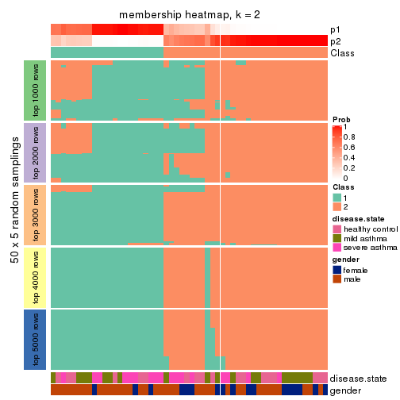
membership_heatmap(res, k = 3)
membership_heatmap(res, k = 4)
membership_heatmap(res, k = 5)
membership_heatmap(res, k = 6)

As soon as we have had the classes for columns, we can look for signatures which are significantly different between classes which can be candidate marks for certain classes. Following are the heatmaps for signatures.
Signature heatmaps where rows are scaled:
get_signatures(res, k = 2)
get_signatures(res, k = 3)
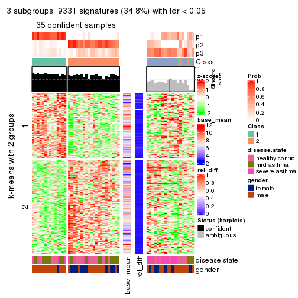
get_signatures(res, k = 4)
get_signatures(res, k = 5)
get_signatures(res, k = 6)

Signature heatmaps where rows are not scaled:
get_signatures(res, k = 2, scale_rows = FALSE)
get_signatures(res, k = 3, scale_rows = FALSE)

get_signatures(res, k = 4, scale_rows = FALSE)
get_signatures(res, k = 5, scale_rows = FALSE)
get_signatures(res, k = 6, scale_rows = FALSE)
Compare the overlap of signatures from different k:
compare_signatures(res)
get_signature() returns a data frame invisibly. TO get the list of signatures, the function
call should be assigned to a variable explicitly. In following code, if plot argument is set
to FALSE, no heatmap is plotted while only the differential analysis is performed.
# code only for demonstration
tb = get_signature(res, k = ..., plot = FALSE)
An example of the output of tb is:
#> which_row fdr mean_1 mean_2 scaled_mean_1 scaled_mean_2 km
#> 1 38 0.042760348 8.373488 9.131774 -0.5533452 0.5164555 1
#> 2 40 0.018707592 7.106213 8.469186 -0.6173731 0.5762149 1
#> 3 55 0.019134737 10.221463 11.207825 -0.6159697 0.5749050 1
#> 4 59 0.006059896 5.921854 7.869574 -0.6899429 0.6439467 1
#> 5 60 0.018055526 8.928898 10.211722 -0.6204761 0.5791110 1
#> 6 98 0.009384629 15.714769 14.887706 0.6635654 -0.6193277 2
...
The columns in tb are:
which_row: row indices corresponding to the input matrix.fdr: FDR for the differential test. mean_x: The mean value in group x.scaled_mean_x: The mean value in group x after rows are scaled.km: Row groups if k-means clustering is applied to rows.UMAP plot which shows how samples are separated.
dimension_reduction(res, k = 2, method = "UMAP")
dimension_reduction(res, k = 3, method = "UMAP")
dimension_reduction(res, k = 4, method = "UMAP")
dimension_reduction(res, k = 5, method = "UMAP")
dimension_reduction(res, k = 6, method = "UMAP")
Following heatmap shows how subgroups are split when increasing k:
collect_classes(res)

Test correlation between subgroups and known annotations. If the known annotation is numeric, one-way ANOVA test is applied, and if the known annotation is discrete, chi-squared contingency table test is applied.
test_to_known_factors(res)
#> n disease.state(p) gender(p) k
#> SD:kmeans 52 0.37637 0.0271 2
#> SD:kmeans 36 0.52551 0.0311 3
#> SD:kmeans 35 0.11344 0.4017 4
#> SD:kmeans 31 0.16269 0.2858 5
#> SD:kmeans 27 0.00961 0.2312 6
If matrix rows can be associated to genes, consider to use functional_enrichment(res,
...) to perform function enrichment for the signature genes. See this vignette for more detailed explanations.
The object with results only for a single top-value method and a single partition method can be extracted as:
res = res_list["SD", "skmeans"]
# you can also extract it by
# res = res_list["SD:skmeans"]
A summary of res and all the functions that can be applied to it:
res
#> A 'ConsensusPartition' object with k = 2, 3, 4, 5, 6.
#> On a matrix with 26819 rows and 54 columns.
#> Top rows (1000, 2000, 3000, 4000, 5000) are extracted by 'SD' method.
#> Subgroups are detected by 'skmeans' method.
#> Performed in total 1250 partitions by row resampling.
#> Best k for subgroups seems to be 2.
#>
#> Following methods can be applied to this 'ConsensusPartition' object:
#> [1] "cola_report" "collect_classes" "collect_plots"
#> [4] "collect_stats" "colnames" "compare_signatures"
#> [7] "consensus_heatmap" "dimension_reduction" "functional_enrichment"
#> [10] "get_anno_col" "get_anno" "get_classes"
#> [13] "get_consensus" "get_matrix" "get_membership"
#> [16] "get_param" "get_signatures" "get_stats"
#> [19] "is_best_k" "is_stable_k" "membership_heatmap"
#> [22] "ncol" "nrow" "plot_ecdf"
#> [25] "rownames" "select_partition_number" "show"
#> [28] "suggest_best_k" "test_to_known_factors"
collect_plots() function collects all the plots made from res for all k (number of partitions)
into one single page to provide an easy and fast comparison between different k.
collect_plots(res)
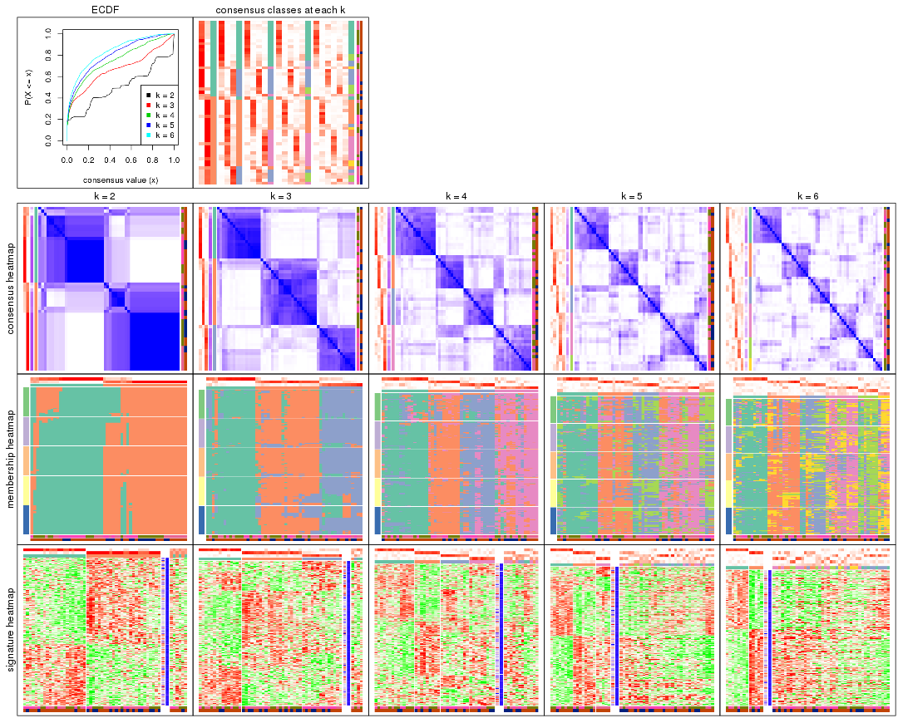
The plots are:
k and the heatmap of
predicted classes for each k.k.k.k.All the plots in panels can be made by individual functions and they are plotted later in this section.
select_partition_number() produces several plots showing different
statistics for choosing “optimized” k. There are following statistics:
k;k, the area increased is defined as \(A_k - A_{k-1}\).The detailed explanations of these statistics can be found in the cola vignette.
Generally speaking, lower PAC score, higher mean silhouette score or higher
concordance corresponds to better partition. Rand index and Jaccard index
measure how similar the current partition is compared to partition with k-1.
If they are too similar, we won't accept k is better than k-1.
select_partition_number(res)
The numeric values for all these statistics can be obtained by get_stats().
get_stats(res)
#> k 1-PAC mean_silhouette concordance area_increased Rand Jaccard
#> 2 2 0.493 0.760 0.900 0.5054 0.493 0.493
#> 3 3 0.547 0.743 0.843 0.3306 0.739 0.518
#> 4 4 0.502 0.607 0.777 0.1280 0.845 0.573
#> 5 5 0.515 0.391 0.634 0.0627 0.929 0.725
#> 6 6 0.588 0.334 0.607 0.0411 0.899 0.572
suggest_best_k() suggests the best \(k\) based on these statistics. The rules are as follows:
suggest_best_k(res)
#> [1] 2
Following shows the table of the partitions (You need to click the show/hide
code output link to see it). The membership matrix (columns with name p*)
is inferred by
clue::cl_consensus()
function with the SE method. Basically the value in the membership matrix
represents the probability to belong to a certain group. The finall class
label for an item is determined with the group with highest probability it
belongs to.
In get_classes() function, the entropy is calculated from the membership
matrix and the silhouette score is calculated from the consensus matrix.
cbind(get_classes(res, k = 2), get_membership(res, k = 2))
#> class entropy silhouette p1 p2
#> GSM665386 2 0.000 0.882 0.000 1.000
#> GSM665389 2 0.000 0.882 0.000 1.000
#> GSM665390 2 0.946 0.298 0.364 0.636
#> GSM665391 1 0.767 0.726 0.776 0.224
#> GSM665392 2 0.760 0.712 0.220 0.780
#> GSM665393 1 0.680 0.772 0.820 0.180
#> GSM665394 2 0.000 0.882 0.000 1.000
#> GSM665395 1 0.000 0.863 1.000 0.000
#> GSM665396 2 0.000 0.882 0.000 1.000
#> GSM665398 2 0.000 0.882 0.000 1.000
#> GSM665399 1 0.000 0.863 1.000 0.000
#> GSM665400 1 0.000 0.863 1.000 0.000
#> GSM665401 2 0.760 0.712 0.220 0.780
#> GSM665402 1 0.662 0.779 0.828 0.172
#> GSM665403 2 0.000 0.882 0.000 1.000
#> GSM665387 2 0.000 0.882 0.000 1.000
#> GSM665388 2 0.788 0.696 0.236 0.764
#> GSM665397 2 0.000 0.882 0.000 1.000
#> GSM665404 1 0.680 0.772 0.820 0.180
#> GSM665405 1 0.980 0.396 0.584 0.416
#> GSM665406 2 0.000 0.882 0.000 1.000
#> GSM665407 2 0.000 0.882 0.000 1.000
#> GSM665409 1 0.000 0.863 1.000 0.000
#> GSM665413 2 0.000 0.882 0.000 1.000
#> GSM665416 1 0.730 0.748 0.796 0.204
#> GSM665417 1 0.653 0.781 0.832 0.168
#> GSM665418 1 0.000 0.863 1.000 0.000
#> GSM665419 1 0.000 0.863 1.000 0.000
#> GSM665421 1 0.760 0.730 0.780 0.220
#> GSM665422 1 1.000 -0.182 0.504 0.496
#> GSM665408 2 0.000 0.882 0.000 1.000
#> GSM665410 2 0.000 0.882 0.000 1.000
#> GSM665411 2 0.000 0.882 0.000 1.000
#> GSM665412 2 0.000 0.882 0.000 1.000
#> GSM665414 2 0.000 0.882 0.000 1.000
#> GSM665415 2 0.983 0.126 0.424 0.576
#> GSM665420 2 0.000 0.882 0.000 1.000
#> GSM665424 1 0.000 0.863 1.000 0.000
#> GSM665425 1 0.981 0.108 0.580 0.420
#> GSM665429 1 0.000 0.863 1.000 0.000
#> GSM665430 1 0.000 0.863 1.000 0.000
#> GSM665431 2 0.971 0.424 0.400 0.600
#> GSM665432 1 0.000 0.863 1.000 0.000
#> GSM665433 1 0.000 0.863 1.000 0.000
#> GSM665434 1 0.204 0.851 0.968 0.032
#> GSM665435 2 0.730 0.668 0.204 0.796
#> GSM665436 2 0.000 0.882 0.000 1.000
#> GSM665423 2 0.000 0.882 0.000 1.000
#> GSM665426 2 0.689 0.687 0.184 0.816
#> GSM665427 2 0.795 0.692 0.240 0.760
#> GSM665428 1 0.000 0.863 1.000 0.000
#> GSM665437 1 0.000 0.863 1.000 0.000
#> GSM665438 2 0.760 0.712 0.220 0.780
#> GSM665439 1 0.000 0.863 1.000 0.000
cbind(get_classes(res, k = 3), get_membership(res, k = 3))
#> class entropy silhouette p1 p2 p3
#> GSM665386 2 0.4521 0.795 0.004 0.816 0.180
#> GSM665389 2 0.3715 0.815 0.004 0.868 0.128
#> GSM665390 2 0.8909 0.286 0.376 0.496 0.128
#> GSM665391 1 0.1525 0.860 0.964 0.032 0.004
#> GSM665392 3 0.1711 0.754 0.008 0.032 0.960
#> GSM665393 1 0.3030 0.824 0.904 0.004 0.092
#> GSM665394 2 0.4465 0.796 0.004 0.820 0.176
#> GSM665395 3 0.4121 0.775 0.168 0.000 0.832
#> GSM665396 2 0.4409 0.796 0.004 0.824 0.172
#> GSM665398 2 0.5058 0.664 0.000 0.756 0.244
#> GSM665399 1 0.5529 0.488 0.704 0.000 0.296
#> GSM665400 3 0.6252 0.659 0.268 0.024 0.708
#> GSM665401 3 0.0747 0.767 0.000 0.016 0.984
#> GSM665402 1 0.2703 0.847 0.928 0.016 0.056
#> GSM665403 2 0.3816 0.773 0.000 0.852 0.148
#> GSM665387 2 0.3573 0.831 0.004 0.876 0.120
#> GSM665388 3 0.3695 0.714 0.012 0.108 0.880
#> GSM665397 2 0.2200 0.832 0.004 0.940 0.056
#> GSM665404 1 0.1015 0.869 0.980 0.008 0.012
#> GSM665405 1 0.8769 0.178 0.528 0.348 0.124
#> GSM665406 2 0.2537 0.814 0.000 0.920 0.080
#> GSM665407 2 0.4228 0.789 0.008 0.844 0.148
#> GSM665409 1 0.4750 0.630 0.784 0.000 0.216
#> GSM665413 2 0.2537 0.814 0.000 0.920 0.080
#> GSM665416 1 0.1182 0.868 0.976 0.012 0.012
#> GSM665417 1 0.0237 0.870 0.996 0.004 0.000
#> GSM665418 1 0.2261 0.824 0.932 0.000 0.068
#> GSM665419 1 0.0237 0.870 0.996 0.000 0.004
#> GSM665421 1 0.1315 0.866 0.972 0.020 0.008
#> GSM665422 3 0.8526 0.204 0.376 0.100 0.524
#> GSM665408 2 0.4399 0.817 0.000 0.812 0.188
#> GSM665410 2 0.3412 0.817 0.000 0.876 0.124
#> GSM665411 2 0.7462 0.706 0.180 0.696 0.124
#> GSM665412 2 0.2356 0.816 0.000 0.928 0.072
#> GSM665414 2 0.1411 0.832 0.000 0.964 0.036
#> GSM665415 1 0.6161 0.579 0.708 0.272 0.020
#> GSM665420 2 0.2066 0.821 0.000 0.940 0.060
#> GSM665424 3 0.4931 0.748 0.232 0.000 0.768
#> GSM665425 3 0.5791 0.737 0.048 0.168 0.784
#> GSM665429 3 0.4654 0.764 0.208 0.000 0.792
#> GSM665430 3 0.5138 0.739 0.252 0.000 0.748
#> GSM665431 3 0.4291 0.720 0.000 0.180 0.820
#> GSM665432 1 0.0424 0.870 0.992 0.000 0.008
#> GSM665433 1 0.1163 0.865 0.972 0.000 0.028
#> GSM665434 1 0.0237 0.870 0.996 0.000 0.004
#> GSM665435 2 0.6143 0.519 0.304 0.684 0.012
#> GSM665436 2 0.0592 0.827 0.000 0.988 0.012
#> GSM665423 2 0.1711 0.825 0.032 0.960 0.008
#> GSM665426 2 0.8478 0.589 0.240 0.608 0.152
#> GSM665427 3 0.3550 0.745 0.024 0.080 0.896
#> GSM665428 3 0.4702 0.764 0.212 0.000 0.788
#> GSM665437 3 0.5591 0.688 0.304 0.000 0.696
#> GSM665438 3 0.4634 0.738 0.012 0.164 0.824
#> GSM665439 1 0.0237 0.870 0.996 0.000 0.004
cbind(get_classes(res, k = 4), get_membership(res, k = 4))
#> class entropy silhouette p1 p2 p3 p4
#> GSM665386 4 0.1585 0.6522 0.004 0.040 0.004 0.952
#> GSM665389 4 0.3024 0.6259 0.000 0.148 0.000 0.852
#> GSM665390 4 0.4682 0.5748 0.236 0.016 0.004 0.744
#> GSM665391 1 0.3221 0.7739 0.876 0.020 0.004 0.100
#> GSM665392 3 0.5857 0.1978 0.004 0.024 0.508 0.464
#> GSM665393 1 0.5540 0.6973 0.744 0.092 0.156 0.008
#> GSM665394 4 0.1545 0.6538 0.008 0.040 0.000 0.952
#> GSM665395 3 0.2904 0.7471 0.024 0.060 0.904 0.012
#> GSM665396 4 0.1356 0.6505 0.000 0.032 0.008 0.960
#> GSM665398 2 0.3679 0.7068 0.004 0.840 0.140 0.016
#> GSM665399 1 0.6223 0.4284 0.552 0.048 0.396 0.004
#> GSM665400 3 0.6455 0.5539 0.140 0.184 0.668 0.008
#> GSM665401 3 0.5288 0.6862 0.012 0.080 0.768 0.140
#> GSM665402 1 0.6161 0.7269 0.740 0.068 0.084 0.108
#> GSM665403 2 0.2981 0.7380 0.004 0.888 0.092 0.016
#> GSM665387 4 0.5203 0.2267 0.000 0.416 0.008 0.576
#> GSM665388 4 0.5680 0.0275 0.012 0.012 0.392 0.584
#> GSM665397 4 0.4877 0.2949 0.000 0.408 0.000 0.592
#> GSM665404 1 0.2300 0.7972 0.920 0.000 0.016 0.064
#> GSM665405 4 0.7580 0.2823 0.352 0.108 0.028 0.512
#> GSM665406 2 0.1970 0.7751 0.000 0.932 0.008 0.060
#> GSM665407 2 0.7938 0.3816 0.084 0.584 0.112 0.220
#> GSM665409 1 0.5872 0.4649 0.584 0.032 0.380 0.004
#> GSM665413 2 0.2053 0.7745 0.000 0.924 0.004 0.072
#> GSM665416 1 0.2099 0.8007 0.936 0.044 0.012 0.008
#> GSM665417 1 0.0844 0.8059 0.980 0.012 0.004 0.004
#> GSM665418 1 0.4776 0.7043 0.772 0.004 0.184 0.040
#> GSM665419 1 0.1978 0.7969 0.928 0.004 0.068 0.000
#> GSM665421 1 0.2053 0.7948 0.924 0.072 0.004 0.000
#> GSM665422 4 0.5661 0.5036 0.108 0.012 0.136 0.744
#> GSM665408 4 0.6438 0.1610 0.004 0.452 0.056 0.488
#> GSM665410 4 0.4372 0.5519 0.004 0.268 0.000 0.728
#> GSM665411 4 0.5406 0.6123 0.128 0.116 0.004 0.752
#> GSM665412 2 0.3216 0.7446 0.004 0.864 0.008 0.124
#> GSM665414 4 0.5165 0.1073 0.004 0.484 0.000 0.512
#> GSM665415 1 0.5760 0.5816 0.724 0.140 0.004 0.132
#> GSM665420 2 0.2076 0.7766 0.004 0.932 0.008 0.056
#> GSM665424 3 0.2297 0.7528 0.044 0.024 0.928 0.004
#> GSM665425 3 0.6149 0.6151 0.072 0.228 0.684 0.016
#> GSM665429 3 0.1843 0.7635 0.028 0.008 0.948 0.016
#> GSM665430 3 0.2401 0.7398 0.092 0.004 0.904 0.000
#> GSM665431 2 0.4920 0.3231 0.004 0.628 0.368 0.000
#> GSM665432 1 0.3306 0.7655 0.840 0.004 0.156 0.000
#> GSM665433 1 0.6334 0.6007 0.664 0.016 0.244 0.076
#> GSM665434 1 0.1139 0.8072 0.972 0.008 0.008 0.012
#> GSM665435 2 0.4860 0.6871 0.128 0.796 0.012 0.064
#> GSM665436 2 0.3441 0.7179 0.004 0.840 0.004 0.152
#> GSM665423 2 0.3681 0.7310 0.024 0.848 0.004 0.124
#> GSM665426 4 0.5948 0.5988 0.156 0.112 0.012 0.720
#> GSM665427 3 0.6273 0.4131 0.028 0.024 0.588 0.360
#> GSM665428 3 0.1798 0.7623 0.040 0.000 0.944 0.016
#> GSM665437 3 0.4286 0.6938 0.152 0.028 0.812 0.008
#> GSM665438 3 0.5749 0.6102 0.036 0.236 0.704 0.024
#> GSM665439 1 0.2053 0.7959 0.924 0.004 0.072 0.000
cbind(get_classes(res, k = 5), get_membership(res, k = 5))
#> class entropy silhouette p1 p2 p3 p4 p5
#> GSM665386 4 0.2747 0.5519 0.000 0.036 0.020 0.896 0.048
#> GSM665389 4 0.3477 0.5466 0.000 0.136 0.000 0.824 0.040
#> GSM665390 4 0.5130 0.5022 0.228 0.040 0.000 0.700 0.032
#> GSM665391 1 0.2604 0.6795 0.896 0.012 0.000 0.072 0.020
#> GSM665392 5 0.6918 0.1924 0.000 0.004 0.280 0.344 0.372
#> GSM665393 1 0.6394 0.3528 0.604 0.040 0.256 0.004 0.096
#> GSM665394 4 0.1834 0.5670 0.004 0.016 0.008 0.940 0.032
#> GSM665395 3 0.1569 0.4215 0.008 0.012 0.948 0.000 0.032
#> GSM665396 4 0.1646 0.5670 0.000 0.020 0.004 0.944 0.032
#> GSM665398 2 0.7220 0.4611 0.012 0.524 0.236 0.032 0.196
#> GSM665399 3 0.5264 0.0587 0.392 0.000 0.556 0.000 0.052
#> GSM665400 3 0.7096 0.2524 0.068 0.164 0.568 0.004 0.196
#> GSM665401 3 0.5537 0.2076 0.004 0.036 0.700 0.068 0.192
#> GSM665402 1 0.6776 0.4653 0.624 0.008 0.172 0.104 0.092
#> GSM665403 2 0.6085 0.5710 0.012 0.648 0.176 0.012 0.152
#> GSM665387 4 0.5406 0.2631 0.000 0.348 0.008 0.592 0.052
#> GSM665388 4 0.6857 -0.2546 0.000 0.008 0.220 0.420 0.352
#> GSM665397 4 0.4830 0.0265 0.000 0.488 0.000 0.492 0.020
#> GSM665404 1 0.2649 0.6949 0.900 0.000 0.036 0.048 0.016
#> GSM665405 4 0.8259 0.2959 0.276 0.076 0.024 0.420 0.204
#> GSM665406 2 0.3456 0.6176 0.012 0.844 0.000 0.036 0.108
#> GSM665407 2 0.9689 0.1501 0.092 0.256 0.216 0.188 0.248
#> GSM665409 3 0.6064 -0.1112 0.420 0.000 0.460 0.000 0.120
#> GSM665413 2 0.2784 0.6348 0.000 0.888 0.012 0.028 0.072
#> GSM665416 1 0.2243 0.6842 0.916 0.016 0.012 0.000 0.056
#> GSM665417 1 0.1026 0.6974 0.968 0.004 0.000 0.004 0.024
#> GSM665418 1 0.6445 0.3258 0.496 0.008 0.100 0.012 0.384
#> GSM665419 1 0.4123 0.6473 0.788 0.000 0.104 0.000 0.108
#> GSM665421 1 0.2036 0.6880 0.928 0.036 0.008 0.000 0.028
#> GSM665422 4 0.6508 0.1973 0.064 0.004 0.052 0.548 0.332
#> GSM665408 4 0.7950 0.1252 0.020 0.312 0.032 0.336 0.300
#> GSM665410 4 0.6199 0.4426 0.024 0.156 0.000 0.620 0.200
#> GSM665411 4 0.7261 0.4361 0.156 0.180 0.004 0.564 0.096
#> GSM665412 2 0.5455 0.5159 0.016 0.688 0.000 0.108 0.188
#> GSM665414 2 0.4851 0.0632 0.012 0.560 0.000 0.420 0.008
#> GSM665415 1 0.6398 0.3817 0.636 0.172 0.000 0.128 0.064
#> GSM665420 2 0.0912 0.6257 0.000 0.972 0.000 0.012 0.016
#> GSM665424 3 0.1630 0.4297 0.016 0.004 0.944 0.000 0.036
#> GSM665425 5 0.6596 0.3236 0.016 0.168 0.288 0.000 0.528
#> GSM665429 3 0.2439 0.3478 0.004 0.000 0.876 0.000 0.120
#> GSM665430 3 0.4734 -0.0620 0.024 0.000 0.604 0.000 0.372
#> GSM665431 2 0.5946 0.4370 0.004 0.588 0.276 0.000 0.132
#> GSM665432 1 0.5513 0.4915 0.632 0.000 0.252 0.000 0.116
#> GSM665433 1 0.7863 0.1520 0.376 0.004 0.176 0.080 0.364
#> GSM665434 1 0.3491 0.6843 0.852 0.008 0.060 0.004 0.076
#> GSM665435 2 0.5400 0.5319 0.104 0.748 0.012 0.056 0.080
#> GSM665436 2 0.3482 0.5547 0.012 0.844 0.000 0.104 0.040
#> GSM665423 2 0.3609 0.5644 0.032 0.848 0.000 0.080 0.040
#> GSM665426 4 0.6907 0.4835 0.144 0.092 0.000 0.592 0.172
#> GSM665427 5 0.7266 0.3019 0.000 0.024 0.364 0.244 0.368
#> GSM665428 3 0.3643 0.2197 0.008 0.000 0.776 0.004 0.212
#> GSM665437 5 0.6075 0.1045 0.052 0.032 0.432 0.000 0.484
#> GSM665438 5 0.6424 0.3391 0.004 0.168 0.328 0.000 0.500
#> GSM665439 1 0.4171 0.6428 0.784 0.000 0.112 0.000 0.104
cbind(get_classes(res, k = 6), get_membership(res, k = 6))
#> class entropy silhouette p1 p2 p3 p4 p5 p6
#> GSM665386 4 0.2345 0.4369 0.004 0.016 0.012 0.912 0.016 0.040
#> GSM665389 4 0.3999 0.3380 0.000 0.072 0.000 0.760 0.004 0.164
#> GSM665390 4 0.6097 0.2553 0.160 0.024 0.004 0.624 0.028 0.160
#> GSM665391 1 0.4107 0.6531 0.800 0.008 0.008 0.108 0.020 0.056
#> GSM665392 4 0.7563 0.1268 0.000 0.000 0.188 0.348 0.200 0.264
#> GSM665393 1 0.6596 0.2033 0.480 0.012 0.336 0.008 0.028 0.136
#> GSM665394 4 0.3277 0.3918 0.000 0.016 0.008 0.832 0.016 0.128
#> GSM665395 3 0.2703 0.4350 0.000 0.008 0.860 0.000 0.116 0.016
#> GSM665396 4 0.3158 0.3647 0.000 0.004 0.000 0.812 0.020 0.164
#> GSM665398 3 0.7232 -0.2297 0.004 0.324 0.328 0.008 0.048 0.288
#> GSM665399 3 0.5064 0.1121 0.328 0.000 0.600 0.000 0.048 0.024
#> GSM665400 3 0.6499 0.3208 0.028 0.060 0.604 0.004 0.128 0.176
#> GSM665401 3 0.5195 0.3604 0.000 0.016 0.700 0.060 0.044 0.180
#> GSM665402 1 0.7548 0.3158 0.480 0.004 0.244 0.096 0.048 0.128
#> GSM665403 2 0.6797 0.1925 0.000 0.448 0.236 0.012 0.032 0.272
#> GSM665387 4 0.5527 0.2791 0.000 0.220 0.020 0.656 0.036 0.068
#> GSM665388 4 0.7279 0.2343 0.004 0.004 0.096 0.440 0.220 0.236
#> GSM665397 2 0.5416 0.0441 0.000 0.480 0.000 0.432 0.016 0.072
#> GSM665404 1 0.3530 0.6928 0.848 0.000 0.032 0.052 0.028 0.040
#> GSM665405 6 0.7221 0.3147 0.224 0.032 0.016 0.216 0.028 0.484
#> GSM665406 2 0.4777 0.4195 0.004 0.692 0.036 0.008 0.020 0.240
#> GSM665407 6 0.8170 0.0963 0.048 0.144 0.244 0.088 0.036 0.440
#> GSM665409 3 0.6311 -0.0673 0.376 0.000 0.428 0.000 0.168 0.028
#> GSM665413 2 0.3905 0.5511 0.000 0.820 0.024 0.036 0.036 0.084
#> GSM665416 1 0.3005 0.6814 0.860 0.012 0.036 0.000 0.004 0.088
#> GSM665417 1 0.1440 0.6945 0.948 0.004 0.004 0.000 0.032 0.012
#> GSM665418 5 0.5677 0.1250 0.380 0.008 0.016 0.008 0.528 0.060
#> GSM665419 1 0.3332 0.6480 0.808 0.000 0.048 0.000 0.144 0.000
#> GSM665421 1 0.2674 0.6866 0.884 0.068 0.008 0.000 0.008 0.032
#> GSM665422 4 0.7668 0.2441 0.044 0.016 0.032 0.404 0.264 0.240
#> GSM665408 6 0.6613 0.3771 0.016 0.148 0.036 0.168 0.032 0.600
#> GSM665410 6 0.5421 0.2090 0.008 0.080 0.004 0.392 0.000 0.516
#> GSM665411 4 0.7588 0.2253 0.088 0.172 0.004 0.444 0.032 0.260
#> GSM665412 2 0.5757 0.0901 0.008 0.504 0.020 0.044 0.016 0.408
#> GSM665414 2 0.5442 0.1151 0.004 0.500 0.000 0.408 0.008 0.080
#> GSM665415 1 0.6945 0.2850 0.540 0.228 0.004 0.056 0.036 0.136
#> GSM665420 2 0.0622 0.5818 0.000 0.980 0.000 0.008 0.012 0.000
#> GSM665424 3 0.3264 0.4019 0.012 0.000 0.796 0.000 0.184 0.008
#> GSM665425 5 0.4300 0.4920 0.032 0.068 0.076 0.000 0.796 0.028
#> GSM665429 3 0.4547 0.3302 0.012 0.000 0.712 0.004 0.212 0.060
#> GSM665430 5 0.4901 0.0993 0.032 0.000 0.428 0.000 0.524 0.016
#> GSM665431 2 0.6680 0.2445 0.000 0.484 0.296 0.000 0.116 0.104
#> GSM665432 1 0.5569 0.4498 0.596 0.000 0.244 0.000 0.144 0.016
#> GSM665433 5 0.5775 0.3993 0.228 0.008 0.032 0.064 0.644 0.024
#> GSM665434 1 0.3726 0.6820 0.828 0.004 0.044 0.016 0.092 0.016
#> GSM665435 2 0.4569 0.5306 0.044 0.792 0.012 0.044 0.076 0.032
#> GSM665436 2 0.2101 0.5737 0.000 0.912 0.000 0.052 0.008 0.028
#> GSM665423 2 0.2183 0.5695 0.000 0.912 0.000 0.040 0.020 0.028
#> GSM665426 4 0.8178 -0.1874 0.108 0.084 0.000 0.344 0.152 0.312
#> GSM665427 5 0.8160 -0.1589 0.000 0.024 0.208 0.260 0.264 0.244
#> GSM665428 3 0.5075 0.2632 0.008 0.000 0.672 0.012 0.216 0.092
#> GSM665437 5 0.3970 0.4760 0.044 0.020 0.148 0.000 0.784 0.004
#> GSM665438 5 0.5303 0.4553 0.000 0.080 0.112 0.012 0.712 0.084
#> GSM665439 1 0.4099 0.6157 0.748 0.000 0.072 0.000 0.176 0.004
Heatmaps for the consensus matrix. It visualizes the probability of two samples to be in a same group.
consensus_heatmap(res, k = 2)
consensus_heatmap(res, k = 3)
consensus_heatmap(res, k = 4)

consensus_heatmap(res, k = 5)
consensus_heatmap(res, k = 6)
Heatmaps for the membership of samples in all partitions to see how consistent they are:
membership_heatmap(res, k = 2)
membership_heatmap(res, k = 3)
membership_heatmap(res, k = 4)

membership_heatmap(res, k = 5)
membership_heatmap(res, k = 6)
As soon as we have had the classes for columns, we can look for signatures which are significantly different between classes which can be candidate marks for certain classes. Following are the heatmaps for signatures.
Signature heatmaps where rows are scaled:
get_signatures(res, k = 2)
get_signatures(res, k = 3)
get_signatures(res, k = 4)
get_signatures(res, k = 5)
get_signatures(res, k = 6)
Signature heatmaps where rows are not scaled:
get_signatures(res, k = 2, scale_rows = FALSE)

get_signatures(res, k = 3, scale_rows = FALSE)
get_signatures(res, k = 4, scale_rows = FALSE)
get_signatures(res, k = 5, scale_rows = FALSE)
get_signatures(res, k = 6, scale_rows = FALSE)
Compare the overlap of signatures from different k:
compare_signatures(res)
get_signature() returns a data frame invisibly. TO get the list of signatures, the function
call should be assigned to a variable explicitly. In following code, if plot argument is set
to FALSE, no heatmap is plotted while only the differential analysis is performed.
# code only for demonstration
tb = get_signature(res, k = ..., plot = FALSE)
An example of the output of tb is:
#> which_row fdr mean_1 mean_2 scaled_mean_1 scaled_mean_2 km
#> 1 38 0.042760348 8.373488 9.131774 -0.5533452 0.5164555 1
#> 2 40 0.018707592 7.106213 8.469186 -0.6173731 0.5762149 1
#> 3 55 0.019134737 10.221463 11.207825 -0.6159697 0.5749050 1
#> 4 59 0.006059896 5.921854 7.869574 -0.6899429 0.6439467 1
#> 5 60 0.018055526 8.928898 10.211722 -0.6204761 0.5791110 1
#> 6 98 0.009384629 15.714769 14.887706 0.6635654 -0.6193277 2
...
The columns in tb are:
which_row: row indices corresponding to the input matrix.fdr: FDR for the differential test. mean_x: The mean value in group x.scaled_mean_x: The mean value in group x after rows are scaled.km: Row groups if k-means clustering is applied to rows.UMAP plot which shows how samples are separated.
dimension_reduction(res, k = 2, method = "UMAP")
dimension_reduction(res, k = 3, method = "UMAP")
dimension_reduction(res, k = 4, method = "UMAP")
dimension_reduction(res, k = 5, method = "UMAP")

dimension_reduction(res, k = 6, method = "UMAP")
Following heatmap shows how subgroups are split when increasing k:
collect_classes(res)
Test correlation between subgroups and known annotations. If the known annotation is numeric, one-way ANOVA test is applied, and if the known annotation is discrete, chi-squared contingency table test is applied.
test_to_known_factors(res)
#> n disease.state(p) gender(p) k
#> SD:skmeans 48 0.36767 0.0185 2
#> SD:skmeans 50 0.01004 0.0998 3
#> SD:skmeans 42 0.05643 0.6647 4
#> SD:skmeans 21 0.00894 0.2054 5
#> SD:skmeans 13 0.38785 0.6395 6
If matrix rows can be associated to genes, consider to use functional_enrichment(res,
...) to perform function enrichment for the signature genes. See this vignette for more detailed explanations.
The object with results only for a single top-value method and a single partition method can be extracted as:
res = res_list["SD", "pam"]
# you can also extract it by
# res = res_list["SD:pam"]
A summary of res and all the functions that can be applied to it:
res
#> A 'ConsensusPartition' object with k = 2, 3, 4, 5, 6.
#> On a matrix with 26819 rows and 54 columns.
#> Top rows (1000, 2000, 3000, 4000, 5000) are extracted by 'SD' method.
#> Subgroups are detected by 'pam' method.
#> Performed in total 1250 partitions by row resampling.
#> Best k for subgroups seems to be 2.
#>
#> Following methods can be applied to this 'ConsensusPartition' object:
#> [1] "cola_report" "collect_classes" "collect_plots"
#> [4] "collect_stats" "colnames" "compare_signatures"
#> [7] "consensus_heatmap" "dimension_reduction" "functional_enrichment"
#> [10] "get_anno_col" "get_anno" "get_classes"
#> [13] "get_consensus" "get_matrix" "get_membership"
#> [16] "get_param" "get_signatures" "get_stats"
#> [19] "is_best_k" "is_stable_k" "membership_heatmap"
#> [22] "ncol" "nrow" "plot_ecdf"
#> [25] "rownames" "select_partition_number" "show"
#> [28] "suggest_best_k" "test_to_known_factors"
collect_plots() function collects all the plots made from res for all k (number of partitions)
into one single page to provide an easy and fast comparison between different k.
collect_plots(res)
The plots are:
k and the heatmap of
predicted classes for each k.k.k.k.All the plots in panels can be made by individual functions and they are plotted later in this section.
select_partition_number() produces several plots showing different
statistics for choosing “optimized” k. There are following statistics:
k;k, the area increased is defined as \(A_k - A_{k-1}\).The detailed explanations of these statistics can be found in the cola vignette.
Generally speaking, lower PAC score, higher mean silhouette score or higher
concordance corresponds to better partition. Rand index and Jaccard index
measure how similar the current partition is compared to partition with k-1.
If they are too similar, we won't accept k is better than k-1.
select_partition_number(res)
The numeric values for all these statistics can be obtained by get_stats().
get_stats(res)
#> k 1-PAC mean_silhouette concordance area_increased Rand Jaccard
#> 2 2 0.201 0.693 0.785 0.4749 0.497 0.497
#> 3 3 0.311 0.558 0.753 0.3484 0.760 0.549
#> 4 4 0.409 0.495 0.702 0.1517 0.841 0.569
#> 5 5 0.500 0.375 0.671 0.0799 0.869 0.543
#> 6 6 0.598 0.363 0.651 0.0419 0.804 0.302
suggest_best_k() suggests the best \(k\) based on these statistics. The rules are as follows:
suggest_best_k(res)
#> [1] 2
Following shows the table of the partitions (You need to click the show/hide
code output link to see it). The membership matrix (columns with name p*)
is inferred by
clue::cl_consensus()
function with the SE method. Basically the value in the membership matrix
represents the probability to belong to a certain group. The finall class
label for an item is determined with the group with highest probability it
belongs to.
In get_classes() function, the entropy is calculated from the membership
matrix and the silhouette score is calculated from the consensus matrix.
cbind(get_classes(res, k = 2), get_membership(res, k = 2))
#> class entropy silhouette p1 p2
#> GSM665386 2 0.5059 0.757 0.112 0.888
#> GSM665389 2 0.0000 0.793 0.000 1.000
#> GSM665390 2 0.0000 0.793 0.000 1.000
#> GSM665391 1 0.7883 0.766 0.764 0.236
#> GSM665392 2 0.5946 0.761 0.144 0.856
#> GSM665393 1 0.7950 0.763 0.760 0.240
#> GSM665394 1 0.9944 0.531 0.544 0.456
#> GSM665395 1 0.6343 0.767 0.840 0.160
#> GSM665396 2 0.0000 0.793 0.000 1.000
#> GSM665398 2 0.9977 0.192 0.472 0.528
#> GSM665399 1 0.4022 0.779 0.920 0.080
#> GSM665400 1 0.6343 0.767 0.840 0.160
#> GSM665401 2 0.6531 0.753 0.168 0.832
#> GSM665402 1 0.7674 0.773 0.776 0.224
#> GSM665403 2 0.9944 -0.164 0.456 0.544
#> GSM665387 1 0.9754 0.611 0.592 0.408
#> GSM665388 1 0.9635 0.634 0.612 0.388
#> GSM665397 2 0.0672 0.794 0.008 0.992
#> GSM665404 1 0.7602 0.778 0.780 0.220
#> GSM665405 2 0.9358 0.561 0.352 0.648
#> GSM665406 2 0.9427 0.341 0.360 0.640
#> GSM665407 2 0.4815 0.773 0.104 0.896
#> GSM665409 1 0.0376 0.757 0.996 0.004
#> GSM665413 2 0.6531 0.686 0.168 0.832
#> GSM665416 1 0.1414 0.765 0.980 0.020
#> GSM665417 1 0.4022 0.777 0.920 0.080
#> GSM665418 1 0.3114 0.776 0.944 0.056
#> GSM665419 1 0.0376 0.757 0.996 0.004
#> GSM665421 1 0.7883 0.766 0.764 0.236
#> GSM665422 2 0.7219 0.683 0.200 0.800
#> GSM665408 2 0.6148 0.756 0.152 0.848
#> GSM665410 2 0.0000 0.793 0.000 1.000
#> GSM665411 2 0.2236 0.793 0.036 0.964
#> GSM665412 2 0.5629 0.745 0.132 0.868
#> GSM665414 2 0.8813 0.361 0.300 0.700
#> GSM665415 1 0.8267 0.755 0.740 0.260
#> GSM665420 2 0.4161 0.770 0.084 0.916
#> GSM665424 1 0.0376 0.757 0.996 0.004
#> GSM665425 1 0.1414 0.754 0.980 0.020
#> GSM665429 1 0.8763 0.684 0.704 0.296
#> GSM665430 1 0.3584 0.756 0.932 0.068
#> GSM665431 1 0.9522 0.654 0.628 0.372
#> GSM665432 1 0.0000 0.755 1.000 0.000
#> GSM665433 1 0.6623 0.756 0.828 0.172
#> GSM665434 1 0.4298 0.778 0.912 0.088
#> GSM665435 1 0.9358 0.685 0.648 0.352
#> GSM665436 2 0.0672 0.793 0.008 0.992
#> GSM665423 1 0.9909 0.555 0.556 0.444
#> GSM665426 2 0.8267 0.515 0.260 0.740
#> GSM665427 2 0.3274 0.795 0.060 0.940
#> GSM665428 1 0.8443 0.702 0.728 0.272
#> GSM665437 1 0.7674 0.708 0.776 0.224
#> GSM665438 2 0.4431 0.767 0.092 0.908
#> GSM665439 1 0.4431 0.777 0.908 0.092
cbind(get_classes(res, k = 3), get_membership(res, k = 3))
#> class entropy silhouette p1 p2 p3
#> GSM665386 2 0.4179 0.7122 0.072 0.876 0.052
#> GSM665389 2 0.0892 0.7470 0.000 0.980 0.020
#> GSM665390 2 0.0892 0.7440 0.020 0.980 0.000
#> GSM665391 1 0.6034 0.7025 0.752 0.212 0.036
#> GSM665392 2 0.6952 0.0875 0.016 0.504 0.480
#> GSM665393 1 0.7396 0.6478 0.704 0.144 0.152
#> GSM665394 1 0.6286 0.4962 0.536 0.464 0.000
#> GSM665395 3 0.5882 0.4817 0.348 0.000 0.652
#> GSM665396 2 0.0983 0.7471 0.004 0.980 0.016
#> GSM665398 3 0.9825 0.0599 0.268 0.308 0.424
#> GSM665399 3 0.6235 0.4176 0.436 0.000 0.564
#> GSM665400 3 0.5835 0.4886 0.340 0.000 0.660
#> GSM665401 3 0.6081 0.2807 0.004 0.344 0.652
#> GSM665402 1 0.6171 0.6808 0.776 0.144 0.080
#> GSM665403 1 0.8405 0.3566 0.460 0.456 0.084
#> GSM665387 1 0.8296 0.5123 0.508 0.412 0.080
#> GSM665388 1 0.8058 0.5633 0.552 0.376 0.072
#> GSM665397 2 0.0747 0.7453 0.016 0.984 0.000
#> GSM665404 1 0.5850 0.6955 0.772 0.188 0.040
#> GSM665405 2 0.8625 0.4002 0.252 0.592 0.156
#> GSM665406 2 0.7420 -0.0341 0.420 0.544 0.036
#> GSM665407 2 0.5136 0.6916 0.044 0.824 0.132
#> GSM665409 3 0.6305 0.3672 0.484 0.000 0.516
#> GSM665413 2 0.6731 0.5225 0.172 0.740 0.088
#> GSM665416 1 0.1753 0.5997 0.952 0.000 0.048
#> GSM665417 1 0.0892 0.5869 0.980 0.000 0.020
#> GSM665418 1 0.1529 0.5726 0.960 0.000 0.040
#> GSM665419 1 0.0892 0.5869 0.980 0.000 0.020
#> GSM665421 1 0.6559 0.6844 0.708 0.252 0.040
#> GSM665422 2 0.7317 0.5240 0.208 0.696 0.096
#> GSM665408 2 0.6606 0.5274 0.048 0.716 0.236
#> GSM665410 2 0.0892 0.7470 0.000 0.980 0.020
#> GSM665411 2 0.2689 0.7390 0.036 0.932 0.032
#> GSM665412 2 0.5047 0.6683 0.140 0.824 0.036
#> GSM665414 2 0.5591 0.2747 0.304 0.696 0.000
#> GSM665415 1 0.6522 0.6806 0.696 0.272 0.032
#> GSM665420 2 0.4768 0.6630 0.100 0.848 0.052
#> GSM665424 3 0.2165 0.6668 0.064 0.000 0.936
#> GSM665425 3 0.5356 0.6269 0.196 0.020 0.784
#> GSM665429 3 0.2486 0.6720 0.060 0.008 0.932
#> GSM665430 3 0.4452 0.6471 0.192 0.000 0.808
#> GSM665431 1 0.9041 0.5297 0.488 0.372 0.140
#> GSM665432 3 0.6079 0.5525 0.388 0.000 0.612
#> GSM665433 1 0.2550 0.5889 0.936 0.040 0.024
#> GSM665434 1 0.0983 0.5914 0.980 0.004 0.016
#> GSM665435 1 0.6908 0.6558 0.656 0.308 0.036
#> GSM665436 2 0.1999 0.7363 0.012 0.952 0.036
#> GSM665423 1 0.7493 0.4560 0.488 0.476 0.036
#> GSM665426 2 0.5325 0.4995 0.248 0.748 0.004
#> GSM665427 2 0.4645 0.6901 0.008 0.816 0.176
#> GSM665428 3 0.3678 0.6669 0.080 0.028 0.892
#> GSM665437 3 0.8859 0.4434 0.376 0.124 0.500
#> GSM665438 3 0.4589 0.5733 0.008 0.172 0.820
#> GSM665439 1 0.0892 0.5869 0.980 0.000 0.020
cbind(get_classes(res, k = 4), get_membership(res, k = 4))
#> class entropy silhouette p1 p2 p3 p4
#> GSM665386 4 0.3858 0.5101 0.048 0.044 0.040 0.868
#> GSM665389 4 0.3486 0.6399 0.000 0.188 0.000 0.812
#> GSM665390 4 0.1474 0.6177 0.000 0.052 0.000 0.948
#> GSM665391 1 0.6520 0.5851 0.624 0.040 0.036 0.300
#> GSM665392 4 0.7398 0.2996 0.000 0.168 0.376 0.456
#> GSM665393 1 0.7986 0.5677 0.584 0.076 0.140 0.200
#> GSM665394 1 0.5897 0.4404 0.504 0.020 0.008 0.468
#> GSM665395 3 0.5256 0.5984 0.260 0.040 0.700 0.000
#> GSM665396 4 0.3486 0.6399 0.000 0.188 0.000 0.812
#> GSM665398 2 0.5666 0.4011 0.020 0.668 0.292 0.020
#> GSM665399 3 0.5697 0.5751 0.280 0.056 0.664 0.000
#> GSM665400 3 0.6548 0.6068 0.176 0.188 0.636 0.000
#> GSM665401 3 0.5855 0.5213 0.000 0.100 0.692 0.208
#> GSM665402 1 0.7131 0.6129 0.660 0.056 0.128 0.156
#> GSM665403 2 0.7095 0.5701 0.156 0.632 0.024 0.188
#> GSM665387 2 0.7668 0.3952 0.092 0.440 0.036 0.432
#> GSM665388 1 0.7846 0.4220 0.448 0.024 0.136 0.392
#> GSM665397 4 0.1042 0.5759 0.000 0.020 0.008 0.972
#> GSM665404 1 0.6201 0.6224 0.704 0.116 0.016 0.164
#> GSM665405 4 0.7787 0.5115 0.080 0.272 0.080 0.568
#> GSM665406 2 0.6025 0.5502 0.172 0.688 0.000 0.140
#> GSM665407 4 0.6282 0.6053 0.028 0.208 0.072 0.692
#> GSM665409 3 0.6483 0.5737 0.324 0.092 0.584 0.000
#> GSM665413 2 0.4483 0.5714 0.004 0.712 0.000 0.284
#> GSM665416 1 0.1929 0.6349 0.940 0.036 0.024 0.000
#> GSM665417 1 0.0000 0.6316 1.000 0.000 0.000 0.000
#> GSM665418 1 0.1716 0.5934 0.936 0.064 0.000 0.000
#> GSM665419 1 0.0000 0.6316 1.000 0.000 0.000 0.000
#> GSM665421 1 0.7463 0.5370 0.604 0.176 0.032 0.188
#> GSM665422 4 0.7419 0.5228 0.148 0.216 0.032 0.604
#> GSM665408 4 0.6339 0.4846 0.016 0.364 0.040 0.580
#> GSM665410 4 0.3486 0.6399 0.000 0.188 0.000 0.812
#> GSM665411 4 0.2021 0.5699 0.000 0.040 0.024 0.936
#> GSM665412 2 0.4761 0.3798 0.048 0.768 0.000 0.184
#> GSM665414 4 0.4963 0.1448 0.284 0.020 0.000 0.696
#> GSM665415 1 0.6756 0.5707 0.604 0.092 0.012 0.292
#> GSM665420 4 0.5925 -0.4277 0.036 0.452 0.000 0.512
#> GSM665424 3 0.0592 0.6648 0.000 0.016 0.984 0.000
#> GSM665425 2 0.6966 0.0912 0.132 0.540 0.328 0.000
#> GSM665429 3 0.1256 0.6636 0.008 0.000 0.964 0.028
#> GSM665430 3 0.3948 0.6294 0.136 0.036 0.828 0.000
#> GSM665431 2 0.6393 0.5215 0.000 0.616 0.100 0.284
#> GSM665432 3 0.4955 0.3793 0.444 0.000 0.556 0.000
#> GSM665433 1 0.3052 0.5695 0.880 0.104 0.012 0.004
#> GSM665434 1 0.0188 0.6314 0.996 0.004 0.000 0.000
#> GSM665435 1 0.6506 0.5381 0.580 0.040 0.024 0.356
#> GSM665436 2 0.4452 0.4330 0.008 0.732 0.000 0.260
#> GSM665423 2 0.7800 0.3168 0.248 0.376 0.000 0.376
#> GSM665426 4 0.7091 0.4584 0.248 0.188 0.000 0.564
#> GSM665427 4 0.4095 0.5196 0.000 0.024 0.172 0.804
#> GSM665428 3 0.1661 0.6533 0.004 0.000 0.944 0.052
#> GSM665437 1 0.7529 -0.2306 0.496 0.116 0.368 0.020
#> GSM665438 2 0.5639 0.3280 0.000 0.636 0.324 0.040
#> GSM665439 1 0.0000 0.6316 1.000 0.000 0.000 0.000
cbind(get_classes(res, k = 5), get_membership(res, k = 5))
#> class entropy silhouette p1 p2 p3 p4 p5
#> GSM665386 4 0.6589 0.1598 0.044 0.404 0.012 0.488 0.052
#> GSM665389 4 0.0000 0.6322 0.000 0.000 0.000 1.000 0.000
#> GSM665390 4 0.3814 0.4576 0.000 0.276 0.000 0.720 0.004
#> GSM665391 1 0.7144 0.5029 0.584 0.132 0.012 0.076 0.196
#> GSM665392 5 0.7285 0.0774 0.000 0.020 0.340 0.296 0.344
#> GSM665393 5 0.4731 -0.3532 0.456 0.000 0.016 0.000 0.528
#> GSM665394 2 0.7564 0.1142 0.332 0.400 0.000 0.216 0.052
#> GSM665395 3 0.6783 0.4180 0.208 0.076 0.592 0.000 0.124
#> GSM665396 4 0.0000 0.6322 0.000 0.000 0.000 1.000 0.000
#> GSM665398 5 0.6750 0.1095 0.012 0.416 0.132 0.008 0.432
#> GSM665399 3 0.6530 0.3027 0.200 0.000 0.440 0.000 0.360
#> GSM665400 5 0.1205 0.3444 0.004 0.000 0.040 0.000 0.956
#> GSM665401 3 0.6102 0.3503 0.000 0.000 0.520 0.140 0.340
#> GSM665402 1 0.4752 0.4028 0.556 0.004 0.012 0.000 0.428
#> GSM665403 2 0.4364 0.3338 0.120 0.768 0.000 0.000 0.112
#> GSM665387 2 0.4196 0.4203 0.000 0.776 0.012 0.176 0.036
#> GSM665388 2 0.9172 0.1296 0.252 0.356 0.212 0.100 0.080
#> GSM665397 4 0.4817 0.2825 0.000 0.404 0.000 0.572 0.024
#> GSM665404 1 0.5559 0.5872 0.704 0.036 0.000 0.112 0.148
#> GSM665405 4 0.4181 0.5607 0.060 0.076 0.008 0.824 0.032
#> GSM665406 2 0.5500 0.3154 0.160 0.684 0.000 0.144 0.012
#> GSM665407 4 0.3698 0.5593 0.012 0.004 0.020 0.820 0.144
#> GSM665409 3 0.6622 0.3174 0.220 0.000 0.416 0.000 0.364
#> GSM665413 2 0.1117 0.4720 0.000 0.964 0.000 0.020 0.016
#> GSM665416 1 0.3421 0.5894 0.788 0.000 0.008 0.000 0.204
#> GSM665417 1 0.0000 0.6057 1.000 0.000 0.000 0.000 0.000
#> GSM665418 1 0.3730 0.2169 0.712 0.000 0.000 0.000 0.288
#> GSM665419 1 0.0162 0.6040 0.996 0.000 0.000 0.000 0.004
#> GSM665421 1 0.6491 0.4889 0.552 0.208 0.012 0.000 0.228
#> GSM665422 4 0.3333 0.5839 0.096 0.000 0.020 0.856 0.028
#> GSM665408 4 0.2891 0.5245 0.000 0.176 0.000 0.824 0.000
#> GSM665410 4 0.0000 0.6322 0.000 0.000 0.000 1.000 0.000
#> GSM665411 4 0.5395 0.3298 0.000 0.356 0.000 0.576 0.068
#> GSM665412 2 0.4527 0.1629 0.000 0.596 0.000 0.392 0.012
#> GSM665414 2 0.6978 -0.0380 0.184 0.400 0.000 0.396 0.020
#> GSM665415 1 0.7090 0.4236 0.552 0.108 0.000 0.240 0.100
#> GSM665420 2 0.2583 0.4695 0.004 0.864 0.000 0.132 0.000
#> GSM665424 3 0.2074 0.5736 0.000 0.000 0.896 0.000 0.104
#> GSM665425 5 0.5163 0.3531 0.096 0.076 0.076 0.000 0.752
#> GSM665429 3 0.0404 0.5748 0.000 0.012 0.988 0.000 0.000
#> GSM665430 3 0.1197 0.5742 0.048 0.000 0.952 0.000 0.000
#> GSM665431 5 0.4096 0.3650 0.000 0.176 0.000 0.052 0.772
#> GSM665432 3 0.4425 0.3012 0.452 0.000 0.544 0.000 0.004
#> GSM665433 1 0.4440 -0.1006 0.528 0.000 0.004 0.000 0.468
#> GSM665434 1 0.0000 0.6057 1.000 0.000 0.000 0.000 0.000
#> GSM665435 1 0.7260 0.3176 0.536 0.236 0.000 0.128 0.100
#> GSM665436 2 0.4336 0.3019 0.008 0.700 0.000 0.280 0.012
#> GSM665423 2 0.4334 0.4709 0.156 0.764 0.000 0.080 0.000
#> GSM665426 4 0.4325 0.4692 0.168 0.032 0.000 0.776 0.024
#> GSM665427 4 0.7653 0.1373 0.000 0.308 0.276 0.368 0.048
#> GSM665428 3 0.0000 0.5769 0.000 0.000 1.000 0.000 0.000
#> GSM665437 5 0.6582 0.1562 0.344 0.000 0.216 0.000 0.440
#> GSM665438 5 0.7068 0.2221 0.000 0.276 0.272 0.016 0.436
#> GSM665439 1 0.0162 0.6040 0.996 0.000 0.000 0.000 0.004
cbind(get_classes(res, k = 6), get_membership(res, k = 6))
#> class entropy silhouette p1 p2 p3 p4 p5 p6
#> GSM665386 4 0.2957 0.57164 0.012 0.000 0.020 0.860 0.008 0.100
#> GSM665389 6 0.1267 0.81326 0.000 0.000 0.000 0.060 0.000 0.940
#> GSM665390 4 0.3547 0.37611 0.000 0.000 0.000 0.668 0.000 0.332
#> GSM665391 3 0.6311 0.04253 0.360 0.008 0.424 0.200 0.000 0.008
#> GSM665392 4 0.8668 -0.00733 0.000 0.236 0.136 0.308 0.196 0.124
#> GSM665393 3 0.3711 0.30950 0.260 0.000 0.720 0.020 0.000 0.000
#> GSM665394 4 0.2609 0.55994 0.096 0.000 0.000 0.868 0.000 0.036
#> GSM665395 5 0.7057 0.32765 0.120 0.072 0.184 0.024 0.572 0.028
#> GSM665396 6 0.1501 0.80876 0.000 0.000 0.000 0.076 0.000 0.924
#> GSM665398 3 0.5026 0.03925 0.000 0.220 0.688 0.020 0.052 0.020
#> GSM665399 3 0.5588 0.27077 0.132 0.000 0.596 0.020 0.252 0.000
#> GSM665400 3 0.4139 0.28151 0.000 0.336 0.644 0.008 0.012 0.000
#> GSM665401 3 0.5754 -0.03789 0.000 0.080 0.476 0.000 0.412 0.032
#> GSM665402 3 0.4883 0.18113 0.356 0.008 0.592 0.036 0.000 0.008
#> GSM665403 3 0.7269 -0.25163 0.024 0.332 0.412 0.176 0.004 0.052
#> GSM665387 4 0.2563 0.53696 0.000 0.028 0.084 0.880 0.008 0.000
#> GSM665388 4 0.5985 0.33317 0.000 0.104 0.136 0.624 0.136 0.000
#> GSM665397 4 0.3221 0.49565 0.000 0.000 0.000 0.736 0.000 0.264
#> GSM665404 1 0.6187 0.22268 0.584 0.004 0.224 0.120 0.000 0.068
#> GSM665405 6 0.0692 0.80729 0.000 0.000 0.020 0.000 0.004 0.976
#> GSM665406 2 0.8024 0.19496 0.028 0.336 0.244 0.148 0.000 0.244
#> GSM665407 6 0.1887 0.79997 0.000 0.000 0.048 0.016 0.012 0.924
#> GSM665409 3 0.6947 0.01537 0.176 0.084 0.412 0.000 0.328 0.000
#> GSM665413 4 0.6705 -0.00566 0.000 0.308 0.244 0.408 0.000 0.040
#> GSM665416 1 0.4595 0.13501 0.588 0.008 0.380 0.016 0.000 0.008
#> GSM665417 1 0.0260 0.62115 0.992 0.008 0.000 0.000 0.000 0.000
#> GSM665418 1 0.2378 0.53554 0.848 0.152 0.000 0.000 0.000 0.000
#> GSM665419 1 0.0000 0.62339 1.000 0.000 0.000 0.000 0.000 0.000
#> GSM665421 3 0.6698 0.09652 0.360 0.084 0.468 0.060 0.000 0.028
#> GSM665422 6 0.3900 0.71546 0.040 0.016 0.008 0.120 0.008 0.808
#> GSM665408 6 0.0260 0.80086 0.000 0.008 0.000 0.000 0.000 0.992
#> GSM665410 6 0.1349 0.81437 0.000 0.000 0.000 0.056 0.004 0.940
#> GSM665411 4 0.4757 0.12963 0.000 0.000 0.048 0.484 0.000 0.468
#> GSM665412 6 0.6481 -0.27064 0.000 0.328 0.236 0.024 0.000 0.412
#> GSM665414 4 0.2934 0.57198 0.044 0.000 0.000 0.844 0.000 0.112
#> GSM665415 1 0.7661 -0.03912 0.360 0.004 0.212 0.240 0.000 0.184
#> GSM665420 4 0.5538 0.31931 0.004 0.180 0.216 0.596 0.000 0.004
#> GSM665424 5 0.1714 0.77205 0.000 0.000 0.092 0.000 0.908 0.000
#> GSM665425 2 0.4764 0.06812 0.040 0.664 0.268 0.000 0.028 0.000
#> GSM665429 5 0.0000 0.82168 0.000 0.000 0.000 0.000 1.000 0.000
#> GSM665430 5 0.1049 0.80207 0.032 0.008 0.000 0.000 0.960 0.000
#> GSM665431 3 0.5583 0.16496 0.000 0.348 0.500 0.152 0.000 0.000
#> GSM665432 1 0.3634 0.14089 0.644 0.000 0.000 0.000 0.356 0.000
#> GSM665433 1 0.4938 0.15115 0.488 0.464 0.028 0.020 0.000 0.000
#> GSM665434 1 0.0260 0.62229 0.992 0.008 0.000 0.000 0.000 0.000
#> GSM665435 4 0.5819 0.11772 0.356 0.020 0.092 0.524 0.000 0.008
#> GSM665436 2 0.7454 0.19060 0.004 0.348 0.232 0.112 0.000 0.304
#> GSM665423 4 0.7023 0.32698 0.136 0.176 0.116 0.544 0.000 0.028
#> GSM665426 6 0.3838 0.66571 0.116 0.000 0.004 0.096 0.000 0.784
#> GSM665427 4 0.6462 0.26943 0.000 0.104 0.044 0.560 0.260 0.032
#> GSM665428 5 0.0000 0.82168 0.000 0.000 0.000 0.000 1.000 0.000
#> GSM665437 2 0.5750 0.00641 0.184 0.480 0.000 0.000 0.336 0.000
#> GSM665438 2 0.3361 0.30061 0.000 0.788 0.000 0.004 0.188 0.020
#> GSM665439 1 0.0000 0.62339 1.000 0.000 0.000 0.000 0.000 0.000
Heatmaps for the consensus matrix. It visualizes the probability of two samples to be in a same group.
consensus_heatmap(res, k = 2)
consensus_heatmap(res, k = 3)
consensus_heatmap(res, k = 4)
consensus_heatmap(res, k = 5)
consensus_heatmap(res, k = 6)
Heatmaps for the membership of samples in all partitions to see how consistent they are:
membership_heatmap(res, k = 2)
membership_heatmap(res, k = 3)
membership_heatmap(res, k = 4)

membership_heatmap(res, k = 5)
membership_heatmap(res, k = 6)
As soon as we have had the classes for columns, we can look for signatures which are significantly different between classes which can be candidate marks for certain classes. Following are the heatmaps for signatures.
Signature heatmaps where rows are scaled:
get_signatures(res, k = 2)

get_signatures(res, k = 3)
get_signatures(res, k = 4)
get_signatures(res, k = 5)
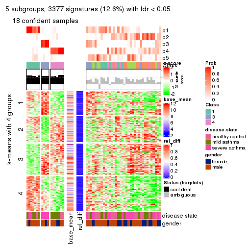
get_signatures(res, k = 6)
Signature heatmaps where rows are not scaled:
get_signatures(res, k = 2, scale_rows = FALSE)
get_signatures(res, k = 3, scale_rows = FALSE)
get_signatures(res, k = 4, scale_rows = FALSE)
get_signatures(res, k = 5, scale_rows = FALSE)
get_signatures(res, k = 6, scale_rows = FALSE)
Compare the overlap of signatures from different k:
compare_signatures(res)

get_signature() returns a data frame invisibly. TO get the list of signatures, the function
call should be assigned to a variable explicitly. In following code, if plot argument is set
to FALSE, no heatmap is plotted while only the differential analysis is performed.
# code only for demonstration
tb = get_signature(res, k = ..., plot = FALSE)
An example of the output of tb is:
#> which_row fdr mean_1 mean_2 scaled_mean_1 scaled_mean_2 km
#> 1 38 0.042760348 8.373488 9.131774 -0.5533452 0.5164555 1
#> 2 40 0.018707592 7.106213 8.469186 -0.6173731 0.5762149 1
#> 3 55 0.019134737 10.221463 11.207825 -0.6159697 0.5749050 1
#> 4 59 0.006059896 5.921854 7.869574 -0.6899429 0.6439467 1
#> 5 60 0.018055526 8.928898 10.211722 -0.6204761 0.5791110 1
#> 6 98 0.009384629 15.714769 14.887706 0.6635654 -0.6193277 2
...
The columns in tb are:
which_row: row indices corresponding to the input matrix.fdr: FDR for the differential test. mean_x: The mean value in group x.scaled_mean_x: The mean value in group x after rows are scaled.km: Row groups if k-means clustering is applied to rows.UMAP plot which shows how samples are separated.
dimension_reduction(res, k = 2, method = "UMAP")
dimension_reduction(res, k = 3, method = "UMAP")
dimension_reduction(res, k = 4, method = "UMAP")
dimension_reduction(res, k = 5, method = "UMAP")

dimension_reduction(res, k = 6, method = "UMAP")
Following heatmap shows how subgroups are split when increasing k:
collect_classes(res)
Test correlation between subgroups and known annotations. If the known annotation is numeric, one-way ANOVA test is applied, and if the known annotation is discrete, chi-squared contingency table test is applied.
test_to_known_factors(res)
#> n disease.state(p) gender(p) k
#> SD:pam 50 0.20174 0.194 2
#> SD:pam 39 0.00281 0.367 3
#> SD:pam 38 0.39227 0.291 4
#> SD:pam 18 0.01961 0.804 5
#> SD:pam 21 0.00792 0.780 6
If matrix rows can be associated to genes, consider to use functional_enrichment(res,
...) to perform function enrichment for the signature genes. See this vignette for more detailed explanations.
The object with results only for a single top-value method and a single partition method can be extracted as:
res = res_list["SD", "mclust"]
# you can also extract it by
# res = res_list["SD:mclust"]
A summary of res and all the functions that can be applied to it:
res
#> A 'ConsensusPartition' object with k = 2, 3, 4, 5, 6.
#> On a matrix with 26819 rows and 54 columns.
#> Top rows (1000, 2000, 3000, 4000, 5000) are extracted by 'SD' method.
#> Subgroups are detected by 'mclust' method.
#> Performed in total 1250 partitions by row resampling.
#> Best k for subgroups seems to be 2.
#>
#> Following methods can be applied to this 'ConsensusPartition' object:
#> [1] "cola_report" "collect_classes" "collect_plots"
#> [4] "collect_stats" "colnames" "compare_signatures"
#> [7] "consensus_heatmap" "dimension_reduction" "functional_enrichment"
#> [10] "get_anno_col" "get_anno" "get_classes"
#> [13] "get_consensus" "get_matrix" "get_membership"
#> [16] "get_param" "get_signatures" "get_stats"
#> [19] "is_best_k" "is_stable_k" "membership_heatmap"
#> [22] "ncol" "nrow" "plot_ecdf"
#> [25] "rownames" "select_partition_number" "show"
#> [28] "suggest_best_k" "test_to_known_factors"
collect_plots() function collects all the plots made from res for all k (number of partitions)
into one single page to provide an easy and fast comparison between different k.
collect_plots(res)
The plots are:
k and the heatmap of
predicted classes for each k.k.k.k.All the plots in panels can be made by individual functions and they are plotted later in this section.
select_partition_number() produces several plots showing different
statistics for choosing “optimized” k. There are following statistics:
k;k, the area increased is defined as \(A_k - A_{k-1}\).The detailed explanations of these statistics can be found in the cola vignette.
Generally speaking, lower PAC score, higher mean silhouette score or higher
concordance corresponds to better partition. Rand index and Jaccard index
measure how similar the current partition is compared to partition with k-1.
If they are too similar, we won't accept k is better than k-1.
select_partition_number(res)
The numeric values for all these statistics can be obtained by get_stats().
get_stats(res)
#> k 1-PAC mean_silhouette concordance area_increased Rand Jaccard
#> 2 2 0.354 0.778 0.838 0.407 0.547 0.547
#> 3 3 0.187 0.460 0.700 0.393 0.785 0.632
#> 4 4 0.355 0.426 0.726 0.206 0.834 0.618
#> 5 5 0.508 0.563 0.689 0.126 0.844 0.543
#> 6 6 0.561 0.448 0.671 0.052 0.881 0.566
suggest_best_k() suggests the best \(k\) based on these statistics. The rules are as follows:
suggest_best_k(res)
#> [1] 2
Following shows the table of the partitions (You need to click the show/hide
code output link to see it). The membership matrix (columns with name p*)
is inferred by
clue::cl_consensus()
function with the SE method. Basically the value in the membership matrix
represents the probability to belong to a certain group. The finall class
label for an item is determined with the group with highest probability it
belongs to.
In get_classes() function, the entropy is calculated from the membership
matrix and the silhouette score is calculated from the consensus matrix.
cbind(get_classes(res, k = 2), get_membership(res, k = 2))
#> class entropy silhouette p1 p2
#> GSM665386 2 0.1414 0.846 0.020 0.980
#> GSM665389 2 0.1843 0.839 0.028 0.972
#> GSM665390 2 0.4022 0.865 0.080 0.920
#> GSM665391 1 0.9491 0.606 0.632 0.368
#> GSM665392 2 0.5294 0.866 0.120 0.880
#> GSM665393 1 0.9580 0.537 0.620 0.380
#> GSM665394 2 0.1633 0.843 0.024 0.976
#> GSM665395 1 0.9087 0.635 0.676 0.324
#> GSM665396 2 0.1633 0.843 0.024 0.976
#> GSM665398 2 0.5294 0.866 0.120 0.880
#> GSM665399 1 0.3733 0.828 0.928 0.072
#> GSM665400 2 0.9358 0.455 0.352 0.648
#> GSM665401 2 0.5629 0.864 0.132 0.868
#> GSM665402 2 0.9427 0.410 0.360 0.640
#> GSM665403 2 0.5519 0.865 0.128 0.872
#> GSM665387 2 0.0938 0.865 0.012 0.988
#> GSM665388 2 0.5294 0.866 0.120 0.880
#> GSM665397 2 0.2603 0.853 0.044 0.956
#> GSM665404 1 0.8267 0.738 0.740 0.260
#> GSM665405 2 0.3431 0.863 0.064 0.936
#> GSM665406 2 0.1633 0.866 0.024 0.976
#> GSM665407 2 0.5294 0.866 0.120 0.880
#> GSM665409 1 0.3879 0.829 0.924 0.076
#> GSM665413 2 0.0672 0.860 0.008 0.992
#> GSM665416 1 0.9358 0.613 0.648 0.352
#> GSM665417 1 0.7299 0.787 0.796 0.204
#> GSM665418 2 0.9580 0.417 0.380 0.620
#> GSM665419 1 0.2948 0.815 0.948 0.052
#> GSM665421 2 0.9993 -0.121 0.484 0.516
#> GSM665422 2 0.5294 0.866 0.120 0.880
#> GSM665408 2 0.0000 0.859 0.000 1.000
#> GSM665410 2 0.0938 0.852 0.012 0.988
#> GSM665411 2 0.4161 0.874 0.084 0.916
#> GSM665412 2 0.0376 0.857 0.004 0.996
#> GSM665414 2 0.0672 0.855 0.008 0.992
#> GSM665415 2 0.5294 0.866 0.120 0.880
#> GSM665420 2 0.4022 0.876 0.080 0.920
#> GSM665424 1 0.3274 0.822 0.940 0.060
#> GSM665425 2 0.5519 0.863 0.128 0.872
#> GSM665429 1 0.8661 0.635 0.712 0.288
#> GSM665430 1 0.3879 0.829 0.924 0.076
#> GSM665431 2 0.5737 0.858 0.136 0.864
#> GSM665432 1 0.3879 0.829 0.924 0.076
#> GSM665433 1 0.9710 0.512 0.600 0.400
#> GSM665434 1 0.5629 0.821 0.868 0.132
#> GSM665435 2 0.5294 0.866 0.120 0.880
#> GSM665436 2 0.3879 0.870 0.076 0.924
#> GSM665423 2 0.3879 0.875 0.076 0.924
#> GSM665426 2 0.3733 0.875 0.072 0.928
#> GSM665427 2 0.6343 0.839 0.160 0.840
#> GSM665428 1 0.3584 0.826 0.932 0.068
#> GSM665437 1 0.5629 0.816 0.868 0.132
#> GSM665438 2 0.5294 0.866 0.120 0.880
#> GSM665439 1 0.2948 0.815 0.948 0.052
cbind(get_classes(res, k = 3), get_membership(res, k = 3))
#> class entropy silhouette p1 p2 p3
#> GSM665386 2 0.2486 0.7056 0.008 0.932 0.060
#> GSM665389 2 0.3406 0.7172 0.028 0.904 0.068
#> GSM665390 2 0.6333 0.4110 0.332 0.656 0.012
#> GSM665391 1 0.5902 0.4895 0.680 0.316 0.004
#> GSM665392 2 0.8756 0.2644 0.128 0.540 0.332
#> GSM665393 1 0.6381 0.4401 0.648 0.340 0.012
#> GSM665394 2 0.2902 0.7075 0.016 0.920 0.064
#> GSM665395 3 0.8138 0.3231 0.452 0.068 0.480
#> GSM665396 2 0.2774 0.7040 0.008 0.920 0.072
#> GSM665398 2 0.8102 0.5002 0.076 0.556 0.368
#> GSM665399 1 0.7230 -0.0895 0.616 0.040 0.344
#> GSM665400 1 0.9623 -0.0424 0.464 0.304 0.232
#> GSM665401 2 0.8525 0.3901 0.148 0.600 0.252
#> GSM665402 2 0.6897 -0.0065 0.436 0.548 0.016
#> GSM665403 2 0.7847 0.5327 0.068 0.588 0.344
#> GSM665387 2 0.1832 0.7223 0.008 0.956 0.036
#> GSM665388 2 0.8712 0.3180 0.132 0.556 0.312
#> GSM665397 2 0.3832 0.7231 0.036 0.888 0.076
#> GSM665404 1 0.4883 0.5271 0.788 0.208 0.004
#> GSM665405 2 0.4206 0.7030 0.088 0.872 0.040
#> GSM665406 2 0.7107 0.5325 0.036 0.624 0.340
#> GSM665407 2 0.6012 0.6934 0.124 0.788 0.088
#> GSM665409 1 0.3445 0.4411 0.896 0.016 0.088
#> GSM665413 2 0.6473 0.5537 0.020 0.668 0.312
#> GSM665416 1 0.5785 0.4944 0.696 0.300 0.004
#> GSM665417 1 0.2096 0.5208 0.944 0.052 0.004
#> GSM665418 1 0.7328 0.1902 0.612 0.344 0.044
#> GSM665419 1 0.1482 0.4967 0.968 0.020 0.012
#> GSM665421 1 0.6081 0.4654 0.652 0.344 0.004
#> GSM665422 2 0.6222 0.6544 0.132 0.776 0.092
#> GSM665408 2 0.2486 0.7117 0.008 0.932 0.060
#> GSM665410 2 0.0592 0.7216 0.012 0.988 0.000
#> GSM665411 2 0.3539 0.7197 0.100 0.888 0.012
#> GSM665412 2 0.5678 0.6526 0.032 0.776 0.192
#> GSM665414 2 0.3028 0.7185 0.032 0.920 0.048
#> GSM665415 2 0.5277 0.6779 0.180 0.796 0.024
#> GSM665420 2 0.8054 0.5220 0.076 0.568 0.356
#> GSM665424 3 0.7996 0.3174 0.464 0.060 0.476
#> GSM665425 3 0.8991 -0.1620 0.132 0.392 0.476
#> GSM665429 3 0.7990 0.3336 0.452 0.060 0.488
#> GSM665430 3 0.7292 0.2859 0.472 0.028 0.500
#> GSM665431 3 0.8823 0.2094 0.156 0.280 0.564
#> GSM665432 1 0.3690 0.4294 0.884 0.016 0.100
#> GSM665433 1 0.6625 0.4719 0.660 0.316 0.024
#> GSM665434 1 0.1765 0.5165 0.956 0.040 0.004
#> GSM665435 2 0.6372 0.6764 0.152 0.764 0.084
#> GSM665436 2 0.7396 0.5953 0.060 0.644 0.296
#> GSM665423 2 0.5403 0.7094 0.060 0.816 0.124
#> GSM665426 2 0.5042 0.7075 0.104 0.836 0.060
#> GSM665427 2 0.8913 0.1726 0.132 0.508 0.360
#> GSM665428 3 0.7984 0.3201 0.444 0.060 0.496
#> GSM665437 1 0.8046 -0.2397 0.536 0.068 0.396
#> GSM665438 3 0.8572 0.1812 0.132 0.288 0.580
#> GSM665439 1 0.1482 0.4967 0.968 0.020 0.012
cbind(get_classes(res, k = 4), get_membership(res, k = 4))
#> class entropy silhouette p1 p2 p3 p4
#> GSM665386 4 0.0336 0.6202 0.000 0.000 0.008 0.992
#> GSM665389 4 0.2473 0.5905 0.000 0.080 0.012 0.908
#> GSM665390 4 0.4817 0.1252 0.388 0.000 0.000 0.612
#> GSM665391 1 0.5095 0.4314 0.624 0.004 0.004 0.368
#> GSM665392 4 0.5953 0.1946 0.012 0.020 0.420 0.548
#> GSM665393 1 0.7582 0.3755 0.512 0.252 0.004 0.232
#> GSM665394 4 0.1114 0.6201 0.004 0.016 0.008 0.972
#> GSM665395 3 0.5723 0.7324 0.004 0.340 0.624 0.032
#> GSM665396 4 0.0376 0.6206 0.004 0.004 0.000 0.992
#> GSM665398 2 0.3157 0.5866 0.000 0.852 0.004 0.144
#> GSM665399 3 0.8085 0.5629 0.232 0.328 0.428 0.012
#> GSM665400 2 0.5427 0.4312 0.040 0.780 0.072 0.108
#> GSM665401 4 0.7468 -0.0571 0.004 0.356 0.160 0.480
#> GSM665402 4 0.6237 -0.1190 0.448 0.044 0.004 0.504
#> GSM665403 2 0.4018 0.6085 0.000 0.772 0.004 0.224
#> GSM665387 4 0.1109 0.6186 0.004 0.028 0.000 0.968
#> GSM665388 4 0.5798 0.1676 0.012 0.012 0.452 0.524
#> GSM665397 4 0.3182 0.5769 0.000 0.096 0.028 0.876
#> GSM665404 1 0.3933 0.6328 0.836 0.024 0.008 0.132
#> GSM665405 4 0.2300 0.6122 0.028 0.048 0.000 0.924
#> GSM665406 2 0.4800 0.4767 0.004 0.656 0.000 0.340
#> GSM665407 2 0.7385 0.1464 0.140 0.432 0.004 0.424
#> GSM665409 1 0.5869 0.3820 0.724 0.100 0.164 0.012
#> GSM665413 2 0.5161 0.4100 0.008 0.592 0.000 0.400
#> GSM665416 1 0.5521 0.5170 0.664 0.032 0.004 0.300
#> GSM665417 1 0.1471 0.6168 0.960 0.004 0.012 0.024
#> GSM665418 1 0.7270 0.3247 0.536 0.012 0.120 0.332
#> GSM665419 1 0.0937 0.6082 0.976 0.000 0.012 0.012
#> GSM665421 1 0.5689 0.3008 0.564 0.020 0.004 0.412
#> GSM665422 4 0.2546 0.6009 0.028 0.000 0.060 0.912
#> GSM665408 4 0.1452 0.6177 0.008 0.036 0.000 0.956
#> GSM665410 4 0.1151 0.6208 0.008 0.024 0.000 0.968
#> GSM665411 4 0.1722 0.6191 0.048 0.000 0.008 0.944
#> GSM665412 4 0.5317 -0.2043 0.004 0.460 0.004 0.532
#> GSM665414 4 0.2799 0.5687 0.008 0.108 0.000 0.884
#> GSM665415 4 0.5683 -0.0286 0.452 0.008 0.012 0.528
#> GSM665420 2 0.5603 0.4827 0.008 0.644 0.024 0.324
#> GSM665424 3 0.5544 0.7337 0.008 0.332 0.640 0.020
#> GSM665425 2 0.7977 0.4883 0.032 0.496 0.324 0.148
#> GSM665429 3 0.5868 0.7386 0.008 0.324 0.632 0.036
#> GSM665430 3 0.2210 0.6312 0.020 0.028 0.936 0.016
#> GSM665431 2 0.4900 0.5278 0.004 0.788 0.092 0.116
#> GSM665432 1 0.5268 -0.1142 0.592 0.000 0.396 0.012
#> GSM665433 1 0.5733 0.5099 0.652 0.012 0.028 0.308
#> GSM665434 1 0.1247 0.6116 0.968 0.004 0.016 0.012
#> GSM665435 4 0.6213 0.0890 0.028 0.344 0.024 0.604
#> GSM665436 4 0.5983 -0.2467 0.008 0.460 0.024 0.508
#> GSM665423 4 0.6246 0.0436 0.036 0.360 0.016 0.588
#> GSM665426 4 0.2307 0.6191 0.048 0.008 0.016 0.928
#> GSM665427 4 0.5806 0.1059 0.008 0.016 0.480 0.496
#> GSM665428 3 0.4912 0.6992 0.012 0.132 0.792 0.064
#> GSM665437 3 0.5574 0.5415 0.124 0.028 0.764 0.084
#> GSM665438 2 0.7303 0.4063 0.008 0.480 0.392 0.120
#> GSM665439 1 0.0937 0.6082 0.976 0.000 0.012 0.012
cbind(get_classes(res, k = 5), get_membership(res, k = 5))
#> class entropy silhouette p1 p2 p3 p4 p5
#> GSM665386 4 0.3696 0.612 0.016 0.000 0.000 0.772 0.212
#> GSM665389 4 0.2843 0.623 0.000 0.000 0.008 0.848 0.144
#> GSM665390 1 0.4649 0.312 0.580 0.000 0.000 0.404 0.016
#> GSM665391 1 0.2095 0.731 0.920 0.012 0.000 0.060 0.008
#> GSM665392 5 0.6478 0.869 0.004 0.168 0.104 0.080 0.644
#> GSM665393 1 0.7035 0.599 0.624 0.092 0.116 0.144 0.024
#> GSM665394 4 0.4001 0.607 0.024 0.000 0.004 0.764 0.208
#> GSM665395 3 0.0960 0.643 0.000 0.016 0.972 0.008 0.004
#> GSM665396 4 0.3635 0.607 0.004 0.000 0.000 0.748 0.248
#> GSM665398 2 0.4821 0.679 0.004 0.684 0.276 0.028 0.008
#> GSM665399 3 0.4615 0.578 0.080 0.008 0.784 0.112 0.016
#> GSM665400 2 0.5821 0.528 0.040 0.532 0.404 0.012 0.012
#> GSM665401 3 0.8097 -0.121 0.012 0.096 0.452 0.224 0.216
#> GSM665402 1 0.6065 0.416 0.556 0.044 0.016 0.364 0.020
#> GSM665403 2 0.5418 0.680 0.012 0.660 0.272 0.044 0.012
#> GSM665387 4 0.4736 0.606 0.008 0.008 0.084 0.764 0.136
#> GSM665388 5 0.6091 0.918 0.004 0.236 0.032 0.092 0.636
#> GSM665397 4 0.3405 0.622 0.008 0.008 0.008 0.832 0.144
#> GSM665404 1 0.2134 0.738 0.928 0.016 0.004 0.036 0.016
#> GSM665405 4 0.6106 0.591 0.116 0.052 0.004 0.672 0.156
#> GSM665406 2 0.5407 0.657 0.008 0.696 0.120 0.172 0.004
#> GSM665407 4 0.8270 0.226 0.228 0.168 0.124 0.460 0.020
#> GSM665409 1 0.8116 0.316 0.476 0.032 0.268 0.104 0.120
#> GSM665413 2 0.4886 0.532 0.004 0.672 0.008 0.288 0.028
#> GSM665416 1 0.4262 0.700 0.796 0.040 0.004 0.140 0.020
#> GSM665417 1 0.0955 0.729 0.968 0.000 0.000 0.004 0.028
#> GSM665418 1 0.6319 0.436 0.604 0.028 0.000 0.228 0.140
#> GSM665419 1 0.3011 0.678 0.844 0.016 0.000 0.000 0.140
#> GSM665421 1 0.3935 0.707 0.808 0.036 0.000 0.140 0.016
#> GSM665422 4 0.7113 0.458 0.124 0.040 0.012 0.516 0.308
#> GSM665408 4 0.5456 0.601 0.012 0.060 0.028 0.712 0.188
#> GSM665410 4 0.2243 0.639 0.012 0.056 0.000 0.916 0.016
#> GSM665411 4 0.5531 0.372 0.352 0.004 0.000 0.576 0.068
#> GSM665412 4 0.4694 0.356 0.012 0.292 0.000 0.676 0.020
#> GSM665414 4 0.2998 0.654 0.052 0.036 0.000 0.884 0.028
#> GSM665415 1 0.4109 0.511 0.724 0.008 0.000 0.260 0.008
#> GSM665420 2 0.3862 0.615 0.008 0.800 0.016 0.168 0.008
#> GSM665424 3 0.0579 0.647 0.000 0.008 0.984 0.008 0.000
#> GSM665425 2 0.4218 0.516 0.092 0.824 0.024 0.028 0.032
#> GSM665429 3 0.0854 0.653 0.012 0.000 0.976 0.008 0.004
#> GSM665430 3 0.5877 0.477 0.012 0.260 0.632 0.008 0.088
#> GSM665431 2 0.4867 0.660 0.004 0.668 0.296 0.012 0.020
#> GSM665432 3 0.7372 0.452 0.208 0.032 0.540 0.028 0.192
#> GSM665433 1 0.4558 0.686 0.788 0.016 0.008 0.076 0.112
#> GSM665434 1 0.1082 0.729 0.964 0.000 0.000 0.008 0.028
#> GSM665435 4 0.7533 0.434 0.236 0.196 0.000 0.488 0.080
#> GSM665436 4 0.5549 -0.032 0.020 0.436 0.000 0.512 0.032
#> GSM665423 4 0.6500 0.562 0.140 0.116 0.000 0.640 0.104
#> GSM665426 4 0.6487 0.555 0.192 0.008 0.000 0.532 0.268
#> GSM665427 5 0.6331 0.921 0.004 0.236 0.052 0.084 0.624
#> GSM665428 3 0.4236 0.583 0.004 0.104 0.804 0.012 0.076
#> GSM665437 3 0.7162 0.449 0.068 0.276 0.544 0.012 0.100
#> GSM665438 2 0.4760 0.381 0.012 0.756 0.048 0.012 0.172
#> GSM665439 1 0.3011 0.678 0.844 0.016 0.000 0.000 0.140
cbind(get_classes(res, k = 6), get_membership(res, k = 6))
#> class entropy silhouette p1 p2 p3 p4 p5 p6
#> GSM665386 4 0.2911 0.5208 0.036 0.052 0.004 0.876 0.000 0.032
#> GSM665389 4 0.6566 0.3516 0.012 0.060 0.264 0.532 0.000 0.132
#> GSM665390 1 0.3043 0.5514 0.792 0.000 0.008 0.200 0.000 0.000
#> GSM665391 1 0.0767 0.6249 0.976 0.008 0.012 0.000 0.000 0.004
#> GSM665392 6 0.4079 0.8857 0.000 0.032 0.000 0.192 0.024 0.752
#> GSM665393 1 0.4285 0.5157 0.776 0.152 0.020 0.024 0.020 0.008
#> GSM665394 4 0.3646 0.5051 0.032 0.092 0.008 0.828 0.000 0.040
#> GSM665395 5 0.0603 0.7034 0.000 0.016 0.000 0.000 0.980 0.004
#> GSM665396 4 0.1655 0.5057 0.008 0.008 0.000 0.932 0.000 0.052
#> GSM665398 2 0.3398 0.5745 0.000 0.852 0.020 0.040 0.064 0.024
#> GSM665399 5 0.4925 0.2482 0.092 0.008 0.224 0.004 0.672 0.000
#> GSM665400 2 0.6304 0.2542 0.108 0.500 0.028 0.004 0.348 0.012
#> GSM665401 4 0.7783 -0.0853 0.016 0.240 0.008 0.348 0.296 0.092
#> GSM665402 1 0.5095 0.4320 0.632 0.104 0.008 0.256 0.000 0.000
#> GSM665403 2 0.3145 0.5760 0.004 0.860 0.000 0.040 0.068 0.028
#> GSM665387 4 0.2908 0.5201 0.008 0.140 0.000 0.840 0.004 0.008
#> GSM665388 6 0.3017 0.9101 0.000 0.000 0.000 0.164 0.020 0.816
#> GSM665397 4 0.6720 0.3425 0.012 0.072 0.268 0.516 0.000 0.132
#> GSM665404 1 0.3487 0.4028 0.776 0.012 0.200 0.012 0.000 0.000
#> GSM665405 4 0.5821 0.1904 0.340 0.156 0.008 0.496 0.000 0.000
#> GSM665406 2 0.3719 0.5510 0.020 0.820 0.048 0.104 0.004 0.004
#> GSM665407 2 0.6903 -0.0885 0.356 0.396 0.008 0.200 0.036 0.004
#> GSM665409 3 0.6386 0.5226 0.264 0.004 0.420 0.004 0.304 0.004
#> GSM665413 2 0.4232 0.5154 0.016 0.764 0.048 0.164 0.004 0.004
#> GSM665416 1 0.1414 0.6267 0.952 0.012 0.020 0.004 0.000 0.012
#> GSM665417 1 0.2994 0.3779 0.788 0.004 0.208 0.000 0.000 0.000
#> GSM665418 1 0.6395 0.4408 0.576 0.004 0.088 0.192 0.000 0.140
#> GSM665419 3 0.3769 0.6719 0.356 0.000 0.640 0.004 0.000 0.000
#> GSM665421 1 0.1223 0.6302 0.960 0.008 0.016 0.004 0.000 0.012
#> GSM665422 4 0.6123 0.2491 0.164 0.024 0.016 0.612 0.008 0.176
#> GSM665408 4 0.4626 0.4756 0.024 0.204 0.000 0.716 0.004 0.052
#> GSM665410 4 0.5310 0.5319 0.052 0.088 0.036 0.724 0.000 0.100
#> GSM665411 1 0.4619 0.1555 0.548 0.024 0.004 0.420 0.004 0.000
#> GSM665412 2 0.7711 0.1076 0.044 0.444 0.196 0.212 0.000 0.104
#> GSM665414 4 0.4693 0.4964 0.192 0.100 0.004 0.700 0.000 0.004
#> GSM665415 1 0.1768 0.6351 0.932 0.008 0.012 0.044 0.000 0.004
#> GSM665420 2 0.5173 0.4989 0.024 0.700 0.052 0.188 0.000 0.036
#> GSM665424 5 0.0146 0.7063 0.000 0.004 0.000 0.000 0.996 0.000
#> GSM665425 2 0.6299 0.3569 0.068 0.572 0.044 0.012 0.020 0.284
#> GSM665429 5 0.0291 0.7079 0.004 0.000 0.000 0.000 0.992 0.004
#> GSM665430 5 0.4858 0.5067 0.004 0.004 0.076 0.000 0.652 0.264
#> GSM665431 2 0.5931 0.4265 0.000 0.576 0.036 0.000 0.240 0.148
#> GSM665432 3 0.5081 0.4699 0.108 0.000 0.644 0.004 0.240 0.004
#> GSM665433 1 0.4458 0.5742 0.788 0.020 0.044 0.052 0.004 0.092
#> GSM665434 1 0.3240 0.2859 0.752 0.004 0.244 0.000 0.000 0.000
#> GSM665435 1 0.6619 0.2073 0.504 0.152 0.012 0.292 0.004 0.036
#> GSM665436 4 0.7605 0.1517 0.012 0.240 0.200 0.404 0.000 0.144
#> GSM665423 4 0.8709 0.1289 0.172 0.228 0.180 0.304 0.000 0.116
#> GSM665426 4 0.4660 0.0822 0.428 0.008 0.020 0.540 0.000 0.004
#> GSM665427 6 0.3424 0.9055 0.000 0.004 0.000 0.196 0.020 0.780
#> GSM665428 5 0.2631 0.6591 0.000 0.000 0.008 0.000 0.840 0.152
#> GSM665437 5 0.8133 0.2494 0.140 0.084 0.116 0.000 0.380 0.280
#> GSM665438 2 0.5548 0.1679 0.004 0.472 0.036 0.000 0.044 0.444
#> GSM665439 3 0.3769 0.6706 0.356 0.004 0.640 0.000 0.000 0.000
Heatmaps for the consensus matrix. It visualizes the probability of two samples to be in a same group.
consensus_heatmap(res, k = 2)
consensus_heatmap(res, k = 3)
consensus_heatmap(res, k = 4)
consensus_heatmap(res, k = 5)
consensus_heatmap(res, k = 6)
Heatmaps for the membership of samples in all partitions to see how consistent they are:
membership_heatmap(res, k = 2)
membership_heatmap(res, k = 3)
membership_heatmap(res, k = 4)
membership_heatmap(res, k = 5)
membership_heatmap(res, k = 6)
As soon as we have had the classes for columns, we can look for signatures which are significantly different between classes which can be candidate marks for certain classes. Following are the heatmaps for signatures.
Signature heatmaps where rows are scaled:
get_signatures(res, k = 2)
get_signatures(res, k = 3)
get_signatures(res, k = 4)
get_signatures(res, k = 5)
get_signatures(res, k = 6)
Signature heatmaps where rows are not scaled:
get_signatures(res, k = 2, scale_rows = FALSE)
get_signatures(res, k = 3, scale_rows = FALSE)
get_signatures(res, k = 4, scale_rows = FALSE)
get_signatures(res, k = 5, scale_rows = FALSE)
get_signatures(res, k = 6, scale_rows = FALSE)
Compare the overlap of signatures from different k:
compare_signatures(res)
get_signature() returns a data frame invisibly. TO get the list of signatures, the function
call should be assigned to a variable explicitly. In following code, if plot argument is set
to FALSE, no heatmap is plotted while only the differential analysis is performed.
# code only for demonstration
tb = get_signature(res, k = ..., plot = FALSE)
An example of the output of tb is:
#> which_row fdr mean_1 mean_2 scaled_mean_1 scaled_mean_2 km
#> 1 38 0.042760348 8.373488 9.131774 -0.5533452 0.5164555 1
#> 2 40 0.018707592 7.106213 8.469186 -0.6173731 0.5762149 1
#> 3 55 0.019134737 10.221463 11.207825 -0.6159697 0.5749050 1
#> 4 59 0.006059896 5.921854 7.869574 -0.6899429 0.6439467 1
#> 5 60 0.018055526 8.928898 10.211722 -0.6204761 0.5791110 1
#> 6 98 0.009384629 15.714769 14.887706 0.6635654 -0.6193277 2
...
The columns in tb are:
which_row: row indices corresponding to the input matrix.fdr: FDR for the differential test. mean_x: The mean value in group x.scaled_mean_x: The mean value in group x after rows are scaled.km: Row groups if k-means clustering is applied to rows.UMAP plot which shows how samples are separated.
dimension_reduction(res, k = 2, method = "UMAP")
dimension_reduction(res, k = 3, method = "UMAP")
dimension_reduction(res, k = 4, method = "UMAP")
dimension_reduction(res, k = 5, method = "UMAP")
dimension_reduction(res, k = 6, method = "UMAP")
Following heatmap shows how subgroups are split when increasing k:
collect_classes(res)
Test correlation between subgroups and known annotations. If the known annotation is numeric, one-way ANOVA test is applied, and if the known annotation is discrete, chi-squared contingency table test is applied.
test_to_known_factors(res)
#> n disease.state(p) gender(p) k
#> SD:mclust 50 0.1942 0.1032 2
#> SD:mclust 27 0.4624 0.3681 3
#> SD:mclust 30 0.0203 0.1594 4
#> SD:mclust 39 0.3569 0.0925 5
#> SD:mclust 27 0.0712 0.3944 6
If matrix rows can be associated to genes, consider to use functional_enrichment(res,
...) to perform function enrichment for the signature genes. See this vignette for more detailed explanations.
The object with results only for a single top-value method and a single partition method can be extracted as:
res = res_list["SD", "NMF"]
# you can also extract it by
# res = res_list["SD:NMF"]
A summary of res and all the functions that can be applied to it:
res
#> A 'ConsensusPartition' object with k = 2, 3, 4, 5, 6.
#> On a matrix with 26819 rows and 54 columns.
#> Top rows (1000, 2000, 3000, 4000, 5000) are extracted by 'SD' method.
#> Subgroups are detected by 'NMF' method.
#> Performed in total 1250 partitions by row resampling.
#> Best k for subgroups seems to be 2.
#>
#> Following methods can be applied to this 'ConsensusPartition' object:
#> [1] "cola_report" "collect_classes" "collect_plots"
#> [4] "collect_stats" "colnames" "compare_signatures"
#> [7] "consensus_heatmap" "dimension_reduction" "functional_enrichment"
#> [10] "get_anno_col" "get_anno" "get_classes"
#> [13] "get_consensus" "get_matrix" "get_membership"
#> [16] "get_param" "get_signatures" "get_stats"
#> [19] "is_best_k" "is_stable_k" "membership_heatmap"
#> [22] "ncol" "nrow" "plot_ecdf"
#> [25] "rownames" "select_partition_number" "show"
#> [28] "suggest_best_k" "test_to_known_factors"
collect_plots() function collects all the plots made from res for all k (number of partitions)
into one single page to provide an easy and fast comparison between different k.
collect_plots(res)
The plots are:
k and the heatmap of
predicted classes for each k.k.k.k.All the plots in panels can be made by individual functions and they are plotted later in this section.
select_partition_number() produces several plots showing different
statistics for choosing “optimized” k. There are following statistics:
k;k, the area increased is defined as \(A_k - A_{k-1}\).The detailed explanations of these statistics can be found in the cola vignette.
Generally speaking, lower PAC score, higher mean silhouette score or higher
concordance corresponds to better partition. Rand index and Jaccard index
measure how similar the current partition is compared to partition with k-1.
If they are too similar, we won't accept k is better than k-1.
select_partition_number(res)

The numeric values for all these statistics can be obtained by get_stats().
get_stats(res)
#> k 1-PAC mean_silhouette concordance area_increased Rand Jaccard
#> 2 2 0.411 0.676 0.863 0.5006 0.491 0.491
#> 3 3 0.405 0.592 0.802 0.3352 0.679 0.434
#> 4 4 0.439 0.515 0.723 0.1264 0.825 0.527
#> 5 5 0.584 0.515 0.732 0.0704 0.921 0.696
#> 6 6 0.630 0.509 0.694 0.0388 0.899 0.565
suggest_best_k() suggests the best \(k\) based on these statistics. The rules are as follows:
suggest_best_k(res)
#> [1] 2
Following shows the table of the partitions (You need to click the show/hide
code output link to see it). The membership matrix (columns with name p*)
is inferred by
clue::cl_consensus()
function with the SE method. Basically the value in the membership matrix
represents the probability to belong to a certain group. The finall class
label for an item is determined with the group with highest probability it
belongs to.
In get_classes() function, the entropy is calculated from the membership
matrix and the silhouette score is calculated from the consensus matrix.
cbind(get_classes(res, k = 2), get_membership(res, k = 2))
#> class entropy silhouette p1 p2
#> GSM665386 2 0.2236 0.797 0.036 0.964
#> GSM665389 2 0.0000 0.816 0.000 1.000
#> GSM665390 1 0.9710 0.470 0.600 0.400
#> GSM665391 1 0.9358 0.549 0.648 0.352
#> GSM665392 2 0.0376 0.816 0.004 0.996
#> GSM665393 1 0.6887 0.734 0.816 0.184
#> GSM665394 2 0.7950 0.550 0.240 0.760
#> GSM665395 1 0.2423 0.807 0.960 0.040
#> GSM665396 2 0.0000 0.816 0.000 1.000
#> GSM665398 2 0.4562 0.768 0.096 0.904
#> GSM665399 1 0.0376 0.816 0.996 0.004
#> GSM665400 1 0.1414 0.813 0.980 0.020
#> GSM665401 2 0.2603 0.800 0.044 0.956
#> GSM665402 1 0.8499 0.649 0.724 0.276
#> GSM665403 2 0.1184 0.812 0.016 0.984
#> GSM665387 2 0.0000 0.816 0.000 1.000
#> GSM665388 2 0.6438 0.717 0.164 0.836
#> GSM665397 2 0.0000 0.816 0.000 1.000
#> GSM665404 1 0.9686 0.478 0.604 0.396
#> GSM665405 1 0.9833 0.420 0.576 0.424
#> GSM665406 2 0.0000 0.816 0.000 1.000
#> GSM665407 2 0.9970 -0.145 0.468 0.532
#> GSM665409 1 0.0000 0.816 1.000 0.000
#> GSM665413 2 0.0000 0.816 0.000 1.000
#> GSM665416 1 0.8144 0.676 0.748 0.252
#> GSM665417 1 0.7815 0.689 0.768 0.232
#> GSM665418 1 0.0376 0.816 0.996 0.004
#> GSM665419 1 0.0000 0.816 1.000 0.000
#> GSM665421 1 0.7219 0.722 0.800 0.200
#> GSM665422 2 0.8955 0.450 0.312 0.688
#> GSM665408 2 0.0000 0.816 0.000 1.000
#> GSM665410 2 0.0000 0.816 0.000 1.000
#> GSM665411 2 0.8608 0.463 0.284 0.716
#> GSM665412 2 0.0000 0.816 0.000 1.000
#> GSM665414 2 0.0376 0.815 0.004 0.996
#> GSM665415 1 0.9795 0.432 0.584 0.416
#> GSM665420 2 0.7056 0.691 0.192 0.808
#> GSM665424 1 0.0672 0.815 0.992 0.008
#> GSM665425 2 0.9775 0.393 0.412 0.588
#> GSM665429 1 0.1843 0.800 0.972 0.028
#> GSM665430 1 0.0000 0.816 1.000 0.000
#> GSM665431 2 0.9661 0.425 0.392 0.608
#> GSM665432 1 0.0000 0.816 1.000 0.000
#> GSM665433 1 0.0000 0.816 1.000 0.000
#> GSM665434 1 0.0000 0.816 1.000 0.000
#> GSM665435 1 0.9209 0.289 0.664 0.336
#> GSM665436 2 0.0000 0.816 0.000 1.000
#> GSM665423 2 0.0672 0.815 0.008 0.992
#> GSM665426 2 0.9993 -0.196 0.484 0.516
#> GSM665427 2 0.8443 0.600 0.272 0.728
#> GSM665428 1 0.0000 0.816 1.000 0.000
#> GSM665437 1 0.0000 0.816 1.000 0.000
#> GSM665438 2 0.9635 0.431 0.388 0.612
#> GSM665439 1 0.0000 0.816 1.000 0.000
cbind(get_classes(res, k = 3), get_membership(res, k = 3))
#> class entropy silhouette p1 p2 p3
#> GSM665386 2 0.1525 0.7949 0.004 0.964 0.032
#> GSM665389 2 0.1643 0.7895 0.000 0.956 0.044
#> GSM665390 2 0.5650 0.4525 0.312 0.688 0.000
#> GSM665391 1 0.5733 0.5380 0.676 0.324 0.000
#> GSM665392 3 0.5497 0.5274 0.000 0.292 0.708
#> GSM665393 1 0.6142 0.6154 0.748 0.040 0.212
#> GSM665394 2 0.1832 0.7968 0.036 0.956 0.008
#> GSM665395 3 0.5115 0.5448 0.228 0.004 0.768
#> GSM665396 2 0.0000 0.7985 0.000 1.000 0.000
#> GSM665398 3 0.0747 0.6929 0.000 0.016 0.984
#> GSM665399 1 0.4842 0.6006 0.776 0.000 0.224
#> GSM665400 3 0.5397 0.4801 0.280 0.000 0.720
#> GSM665401 3 0.0424 0.6918 0.000 0.008 0.992
#> GSM665402 1 0.7333 0.6347 0.708 0.156 0.136
#> GSM665403 3 0.2261 0.6917 0.000 0.068 0.932
#> GSM665387 2 0.6235 0.1030 0.000 0.564 0.436
#> GSM665388 3 0.7102 0.2630 0.024 0.420 0.556
#> GSM665397 2 0.2945 0.7676 0.004 0.908 0.088
#> GSM665404 1 0.6204 0.3215 0.576 0.424 0.000
#> GSM665405 2 0.5397 0.5182 0.280 0.720 0.000
#> GSM665406 3 0.6079 0.3645 0.000 0.388 0.612
#> GSM665407 2 0.8008 0.5443 0.152 0.656 0.192
#> GSM665409 1 0.1643 0.7236 0.956 0.000 0.044
#> GSM665413 3 0.6215 0.2714 0.000 0.428 0.572
#> GSM665416 1 0.5254 0.6246 0.736 0.264 0.000
#> GSM665417 1 0.4702 0.6685 0.788 0.212 0.000
#> GSM665418 1 0.0237 0.7393 0.996 0.004 0.000
#> GSM665419 1 0.0424 0.7397 0.992 0.008 0.000
#> GSM665421 1 0.5098 0.6428 0.752 0.248 0.000
#> GSM665422 2 0.2537 0.7811 0.080 0.920 0.000
#> GSM665408 2 0.4235 0.6802 0.000 0.824 0.176
#> GSM665410 2 0.0000 0.7985 0.000 1.000 0.000
#> GSM665411 2 0.2066 0.7902 0.060 0.940 0.000
#> GSM665412 2 0.2537 0.7720 0.000 0.920 0.080
#> GSM665414 2 0.1129 0.7976 0.004 0.976 0.020
#> GSM665415 2 0.5560 0.4891 0.300 0.700 0.000
#> GSM665420 3 0.5728 0.5599 0.008 0.272 0.720
#> GSM665424 3 0.5706 0.4078 0.320 0.000 0.680
#> GSM665425 3 0.5291 0.4973 0.268 0.000 0.732
#> GSM665429 3 0.4504 0.5755 0.196 0.000 0.804
#> GSM665430 1 0.6215 0.0795 0.572 0.000 0.428
#> GSM665431 3 0.0424 0.6887 0.008 0.000 0.992
#> GSM665432 1 0.0237 0.7364 0.996 0.000 0.004
#> GSM665433 1 0.0000 0.7378 1.000 0.000 0.000
#> GSM665434 1 0.2448 0.7356 0.924 0.076 0.000
#> GSM665435 1 0.8561 0.2586 0.600 0.156 0.244
#> GSM665436 2 0.5480 0.5532 0.004 0.732 0.264
#> GSM665423 2 0.3695 0.7530 0.012 0.880 0.108
#> GSM665426 2 0.3752 0.7165 0.144 0.856 0.000
#> GSM665427 3 0.5953 0.5443 0.012 0.280 0.708
#> GSM665428 3 0.5810 0.3838 0.336 0.000 0.664
#> GSM665437 1 0.5988 0.2360 0.632 0.000 0.368
#> GSM665438 3 0.0592 0.6892 0.012 0.000 0.988
#> GSM665439 1 0.0237 0.7391 0.996 0.004 0.000
cbind(get_classes(res, k = 4), get_membership(res, k = 4))
#> class entropy silhouette p1 p2 p3 p4
#> GSM665386 4 0.214 0.6984 0.008 0.052 0.008 0.932
#> GSM665389 4 0.292 0.6995 0.000 0.140 0.000 0.860
#> GSM665390 4 0.397 0.6081 0.204 0.008 0.000 0.788
#> GSM665391 1 0.387 0.7145 0.832 0.016 0.008 0.144
#> GSM665392 3 0.756 -0.0653 0.000 0.304 0.476 0.220
#> GSM665393 3 0.614 0.3152 0.372 0.008 0.580 0.040
#> GSM665394 4 0.162 0.7069 0.024 0.012 0.008 0.956
#> GSM665395 3 0.115 0.6347 0.008 0.024 0.968 0.000
#> GSM665396 4 0.145 0.7021 0.000 0.036 0.008 0.956
#> GSM665398 3 0.354 0.6297 0.000 0.176 0.820 0.004
#> GSM665399 1 0.516 0.2473 0.592 0.008 0.400 0.000
#> GSM665400 3 0.409 0.6307 0.140 0.040 0.820 0.000
#> GSM665401 3 0.118 0.6411 0.000 0.016 0.968 0.016
#> GSM665402 3 0.738 0.1991 0.372 0.012 0.496 0.120
#> GSM665403 3 0.327 0.6437 0.000 0.132 0.856 0.012
#> GSM665387 4 0.576 0.4662 0.000 0.080 0.232 0.688
#> GSM665388 2 0.686 0.3016 0.000 0.512 0.108 0.380
#> GSM665397 4 0.410 0.6245 0.000 0.256 0.000 0.744
#> GSM665404 1 0.512 0.5791 0.700 0.016 0.008 0.276
#> GSM665405 4 0.706 0.5779 0.140 0.088 0.096 0.676
#> GSM665406 3 0.675 0.4008 0.000 0.340 0.552 0.108
#> GSM665407 3 0.827 0.4875 0.108 0.160 0.572 0.160
#> GSM665409 1 0.305 0.7229 0.872 0.012 0.116 0.000
#> GSM665413 3 0.689 0.3932 0.000 0.320 0.552 0.128
#> GSM665416 1 0.597 0.6614 0.752 0.092 0.096 0.060
#> GSM665417 1 0.214 0.7568 0.928 0.016 0.000 0.056
#> GSM665418 1 0.539 0.0979 0.532 0.456 0.012 0.000
#> GSM665419 1 0.121 0.7539 0.964 0.032 0.004 0.000
#> GSM665421 1 0.438 0.7212 0.836 0.088 0.024 0.052
#> GSM665422 4 0.398 0.6352 0.020 0.144 0.008 0.828
#> GSM665408 4 0.649 0.5791 0.008 0.188 0.140 0.664
#> GSM665410 4 0.394 0.7017 0.020 0.152 0.004 0.824
#> GSM665411 4 0.277 0.7197 0.028 0.072 0.000 0.900
#> GSM665412 4 0.838 0.3600 0.040 0.292 0.196 0.472
#> GSM665414 4 0.384 0.6497 0.000 0.224 0.000 0.776
#> GSM665415 4 0.768 0.4321 0.216 0.296 0.004 0.484
#> GSM665420 2 0.442 0.4365 0.000 0.812 0.104 0.084
#> GSM665424 3 0.202 0.6409 0.056 0.012 0.932 0.000
#> GSM665425 2 0.564 0.4702 0.112 0.720 0.168 0.000
#> GSM665429 3 0.325 0.5860 0.060 0.060 0.880 0.000
#> GSM665430 2 0.781 0.1879 0.364 0.384 0.252 0.000
#> GSM665431 3 0.317 0.6340 0.000 0.160 0.840 0.000
#> GSM665432 1 0.244 0.7378 0.916 0.060 0.024 0.000
#> GSM665433 1 0.372 0.6478 0.820 0.168 0.012 0.000
#> GSM665434 1 0.121 0.7623 0.964 0.004 0.000 0.032
#> GSM665435 2 0.533 0.3278 0.308 0.668 0.012 0.012
#> GSM665436 2 0.448 0.1964 0.000 0.688 0.000 0.312
#> GSM665423 2 0.597 -0.2286 0.044 0.564 0.000 0.392
#> GSM665426 4 0.490 0.6645 0.112 0.108 0.000 0.780
#> GSM665427 2 0.741 0.4210 0.000 0.516 0.252 0.232
#> GSM665428 3 0.630 0.3649 0.188 0.124 0.680 0.008
#> GSM665437 2 0.648 0.2371 0.352 0.564 0.084 0.000
#> GSM665438 2 0.570 0.3564 0.004 0.612 0.356 0.028
#> GSM665439 1 0.213 0.7368 0.920 0.076 0.004 0.000
cbind(get_classes(res, k = 5), get_membership(res, k = 5))
#> class entropy silhouette p1 p2 p3 p4 p5
#> GSM665386 4 0.0880 0.70647 0.000 0.000 0.000 0.968 0.032
#> GSM665389 4 0.3489 0.68756 0.004 0.208 0.000 0.784 0.004
#> GSM665390 4 0.4123 0.69050 0.072 0.132 0.004 0.792 0.000
#> GSM665391 1 0.3359 0.75780 0.848 0.004 0.052 0.096 0.000
#> GSM665392 5 0.5962 0.37393 0.000 0.012 0.092 0.328 0.568
#> GSM665393 3 0.3122 0.61625 0.120 0.024 0.852 0.004 0.000
#> GSM665394 4 0.1082 0.70366 0.000 0.008 0.000 0.964 0.028
#> GSM665395 3 0.4009 0.55304 0.000 0.004 0.684 0.000 0.312
#> GSM665396 4 0.0865 0.70945 0.000 0.004 0.000 0.972 0.024
#> GSM665398 3 0.1364 0.66770 0.000 0.036 0.952 0.000 0.012
#> GSM665399 1 0.5672 0.26611 0.540 0.004 0.392 0.004 0.060
#> GSM665400 3 0.1787 0.67210 0.032 0.012 0.940 0.000 0.016
#> GSM665401 3 0.3300 0.64572 0.000 0.004 0.792 0.000 0.204
#> GSM665402 3 0.7429 0.37042 0.256 0.012 0.532 0.116 0.084
#> GSM665403 3 0.2659 0.66822 0.000 0.052 0.888 0.000 0.060
#> GSM665387 4 0.2824 0.64080 0.000 0.000 0.020 0.864 0.116
#> GSM665388 5 0.4425 0.33431 0.008 0.000 0.000 0.392 0.600
#> GSM665397 4 0.5030 0.54043 0.000 0.348 0.004 0.612 0.036
#> GSM665404 1 0.4412 0.68763 0.756 0.008 0.048 0.188 0.000
#> GSM665405 4 0.6786 0.42566 0.052 0.236 0.096 0.600 0.016
#> GSM665406 3 0.4764 -0.00127 0.000 0.436 0.548 0.004 0.012
#> GSM665407 3 0.3073 0.62400 0.052 0.068 0.872 0.008 0.000
#> GSM665409 1 0.2921 0.76543 0.856 0.000 0.124 0.000 0.020
#> GSM665413 3 0.4817 0.01648 0.004 0.440 0.544 0.004 0.008
#> GSM665416 1 0.5738 0.58118 0.652 0.132 0.204 0.012 0.000
#> GSM665417 1 0.1202 0.78318 0.960 0.004 0.000 0.032 0.004
#> GSM665418 1 0.6636 -0.00988 0.444 0.312 0.000 0.000 0.244
#> GSM665419 1 0.1121 0.77247 0.956 0.000 0.000 0.000 0.044
#> GSM665421 1 0.4143 0.72829 0.804 0.100 0.084 0.012 0.000
#> GSM665422 4 0.1952 0.68549 0.000 0.004 0.000 0.912 0.084
#> GSM665408 2 0.7148 0.25144 0.000 0.456 0.300 0.216 0.028
#> GSM665410 4 0.5415 0.43589 0.020 0.396 0.028 0.556 0.000
#> GSM665411 4 0.3691 0.69926 0.028 0.164 0.004 0.804 0.000
#> GSM665412 2 0.5377 0.10127 0.004 0.496 0.456 0.044 0.000
#> GSM665414 4 0.5292 0.54795 0.012 0.328 0.028 0.624 0.008
#> GSM665415 2 0.6138 0.45876 0.152 0.692 0.056 0.076 0.024
#> GSM665420 2 0.4903 0.47116 0.000 0.724 0.068 0.012 0.196
#> GSM665424 3 0.3906 0.57635 0.000 0.004 0.704 0.000 0.292
#> GSM665425 5 0.5789 0.21406 0.088 0.356 0.004 0.000 0.552
#> GSM665429 3 0.5236 0.24301 0.000 0.000 0.492 0.044 0.464
#> GSM665430 5 0.4846 0.44302 0.220 0.032 0.028 0.000 0.720
#> GSM665431 3 0.3262 0.66531 0.000 0.036 0.840 0.000 0.124
#> GSM665432 1 0.1717 0.77287 0.936 0.004 0.008 0.000 0.052
#> GSM665433 1 0.3132 0.73329 0.864 0.036 0.000 0.008 0.092
#> GSM665434 1 0.2075 0.78295 0.924 0.004 0.040 0.032 0.000
#> GSM665435 2 0.5913 0.29290 0.188 0.636 0.012 0.000 0.164
#> GSM665436 2 0.4726 0.37074 0.000 0.696 0.004 0.044 0.256
#> GSM665423 2 0.1968 0.53708 0.004 0.932 0.004 0.040 0.020
#> GSM665426 4 0.4977 0.28239 0.028 0.472 0.000 0.500 0.000
#> GSM665427 5 0.4726 0.50762 0.000 0.048 0.008 0.228 0.716
#> GSM665428 5 0.6431 0.30330 0.032 0.004 0.216 0.136 0.612
#> GSM665437 5 0.6204 0.20978 0.164 0.312 0.000 0.000 0.524
#> GSM665438 5 0.4243 0.46028 0.000 0.168 0.056 0.004 0.772
#> GSM665439 1 0.1571 0.76485 0.936 0.004 0.000 0.000 0.060
cbind(get_classes(res, k = 6), get_membership(res, k = 6))
#> class entropy silhouette p1 p2 p3 p4 p5 p6
#> GSM665386 4 0.108 0.6619 0.000 0.040 0.000 0.956 0.000 0.004
#> GSM665389 4 0.566 0.2642 0.000 0.340 0.000 0.540 0.024 0.096
#> GSM665390 4 0.655 0.1249 0.036 0.408 0.012 0.444 0.016 0.084
#> GSM665391 1 0.540 0.6755 0.728 0.092 0.016 0.084 0.016 0.064
#> GSM665392 4 0.596 -0.0700 0.000 0.008 0.108 0.460 0.408 0.016
#> GSM665393 3 0.526 0.6351 0.100 0.180 0.680 0.000 0.004 0.036
#> GSM665394 4 0.143 0.6629 0.008 0.024 0.000 0.948 0.000 0.020
#> GSM665395 3 0.273 0.6676 0.000 0.012 0.836 0.000 0.152 0.000
#> GSM665396 4 0.137 0.6662 0.000 0.012 0.000 0.948 0.004 0.036
#> GSM665398 3 0.281 0.7085 0.004 0.156 0.832 0.000 0.000 0.008
#> GSM665399 1 0.473 0.3642 0.608 0.020 0.352 0.008 0.008 0.004
#> GSM665400 3 0.380 0.7101 0.036 0.128 0.804 0.000 0.004 0.028
#> GSM665401 3 0.195 0.7070 0.000 0.004 0.904 0.000 0.088 0.004
#> GSM665402 3 0.695 0.3244 0.256 0.016 0.504 0.136 0.000 0.088
#> GSM665403 3 0.240 0.7231 0.000 0.060 0.892 0.000 0.004 0.044
#> GSM665387 4 0.254 0.6371 0.000 0.028 0.028 0.892 0.052 0.000
#> GSM665388 4 0.430 0.2091 0.000 0.012 0.004 0.604 0.376 0.004
#> GSM665397 2 0.516 0.3366 0.000 0.588 0.000 0.336 0.048 0.028
#> GSM665404 1 0.469 0.6697 0.736 0.016 0.028 0.172 0.000 0.048
#> GSM665405 6 0.519 0.6368 0.060 0.008 0.052 0.188 0.000 0.692
#> GSM665406 6 0.472 0.5975 0.000 0.108 0.164 0.000 0.016 0.712
#> GSM665407 3 0.518 0.4789 0.020 0.352 0.588 0.008 0.016 0.016
#> GSM665409 1 0.387 0.6994 0.792 0.036 0.148 0.000 0.012 0.012
#> GSM665413 2 0.457 0.3706 0.000 0.688 0.248 0.000 0.020 0.044
#> GSM665416 1 0.551 0.3803 0.544 0.004 0.112 0.004 0.000 0.336
#> GSM665417 1 0.204 0.7496 0.920 0.004 0.000 0.028 0.008 0.040
#> GSM665418 1 0.674 -0.0755 0.424 0.104 0.000 0.000 0.364 0.108
#> GSM665419 1 0.122 0.7403 0.956 0.004 0.000 0.004 0.032 0.004
#> GSM665421 1 0.394 0.7137 0.792 0.024 0.044 0.004 0.000 0.136
#> GSM665422 4 0.305 0.6419 0.000 0.032 0.000 0.860 0.076 0.032
#> GSM665408 6 0.280 0.7302 0.000 0.020 0.060 0.036 0.004 0.880
#> GSM665410 6 0.541 0.3436 0.004 0.088 0.008 0.348 0.000 0.552
#> GSM665411 2 0.530 -0.0445 0.016 0.488 0.000 0.448 0.012 0.036
#> GSM665412 6 0.268 0.7109 0.000 0.056 0.076 0.000 0.000 0.868
#> GSM665414 2 0.489 0.4502 0.008 0.708 0.028 0.212 0.012 0.032
#> GSM665415 2 0.517 0.4621 0.108 0.708 0.000 0.016 0.028 0.140
#> GSM665420 2 0.597 0.5147 0.000 0.592 0.040 0.004 0.228 0.136
#> GSM665424 3 0.297 0.6657 0.004 0.012 0.832 0.000 0.148 0.004
#> GSM665425 5 0.366 0.4770 0.012 0.116 0.004 0.000 0.812 0.056
#> GSM665429 3 0.553 0.4860 0.032 0.016 0.664 0.052 0.224 0.012
#> GSM665430 5 0.492 0.3706 0.328 0.012 0.036 0.004 0.616 0.004
#> GSM665431 3 0.397 0.6739 0.000 0.160 0.768 0.000 0.064 0.008
#> GSM665432 1 0.196 0.7379 0.924 0.024 0.008 0.004 0.040 0.000
#> GSM665433 1 0.504 0.6613 0.756 0.060 0.008 0.028 0.084 0.064
#> GSM665434 1 0.209 0.7507 0.924 0.032 0.020 0.004 0.012 0.008
#> GSM665435 2 0.570 0.4382 0.092 0.600 0.000 0.000 0.260 0.048
#> GSM665436 2 0.630 0.2546 0.000 0.400 0.000 0.020 0.388 0.192
#> GSM665423 2 0.610 0.3535 0.012 0.500 0.000 0.004 0.180 0.304
#> GSM665426 6 0.365 0.6859 0.064 0.012 0.000 0.080 0.016 0.828
#> GSM665427 5 0.490 0.2606 0.000 0.044 0.016 0.304 0.632 0.004
#> GSM665428 5 0.761 0.2012 0.052 0.024 0.248 0.244 0.416 0.016
#> GSM665437 5 0.475 0.4293 0.164 0.120 0.000 0.000 0.704 0.012
#> GSM665438 5 0.373 0.5370 0.000 0.036 0.048 0.028 0.836 0.052
#> GSM665439 1 0.174 0.7287 0.928 0.016 0.000 0.000 0.052 0.004
Heatmaps for the consensus matrix. It visualizes the probability of two samples to be in a same group.
consensus_heatmap(res, k = 2)
consensus_heatmap(res, k = 3)
consensus_heatmap(res, k = 4)
consensus_heatmap(res, k = 5)
consensus_heatmap(res, k = 6)
Heatmaps for the membership of samples in all partitions to see how consistent they are:
membership_heatmap(res, k = 2)
membership_heatmap(res, k = 3)
membership_heatmap(res, k = 4)
membership_heatmap(res, k = 5)
membership_heatmap(res, k = 6)
As soon as we have had the classes for columns, we can look for signatures which are significantly different between classes which can be candidate marks for certain classes. Following are the heatmaps for signatures.
Signature heatmaps where rows are scaled:
get_signatures(res, k = 2)
get_signatures(res, k = 3)
get_signatures(res, k = 4)
get_signatures(res, k = 5)
get_signatures(res, k = 6)
Signature heatmaps where rows are not scaled:
get_signatures(res, k = 2, scale_rows = FALSE)
get_signatures(res, k = 3, scale_rows = FALSE)
get_signatures(res, k = 4, scale_rows = FALSE)
get_signatures(res, k = 5, scale_rows = FALSE)
get_signatures(res, k = 6, scale_rows = FALSE)
Compare the overlap of signatures from different k:
compare_signatures(res)
get_signature() returns a data frame invisibly. TO get the list of signatures, the function
call should be assigned to a variable explicitly. In following code, if plot argument is set
to FALSE, no heatmap is plotted while only the differential analysis is performed.
# code only for demonstration
tb = get_signature(res, k = ..., plot = FALSE)
An example of the output of tb is:
#> which_row fdr mean_1 mean_2 scaled_mean_1 scaled_mean_2 km
#> 1 38 0.042760348 8.373488 9.131774 -0.5533452 0.5164555 1
#> 2 40 0.018707592 7.106213 8.469186 -0.6173731 0.5762149 1
#> 3 55 0.019134737 10.221463 11.207825 -0.6159697 0.5749050 1
#> 4 59 0.006059896 5.921854 7.869574 -0.6899429 0.6439467 1
#> 5 60 0.018055526 8.928898 10.211722 -0.6204761 0.5791110 1
#> 6 98 0.009384629 15.714769 14.887706 0.6635654 -0.6193277 2
...
The columns in tb are:
which_row: row indices corresponding to the input matrix.fdr: FDR for the differential test. mean_x: The mean value in group x.scaled_mean_x: The mean value in group x after rows are scaled.km: Row groups if k-means clustering is applied to rows.UMAP plot which shows how samples are separated.
dimension_reduction(res, k = 2, method = "UMAP")
dimension_reduction(res, k = 3, method = "UMAP")
dimension_reduction(res, k = 4, method = "UMAP")
dimension_reduction(res, k = 5, method = "UMAP")
dimension_reduction(res, k = 6, method = "UMAP")
Following heatmap shows how subgroups are split when increasing k:
collect_classes(res)
Test correlation between subgroups and known annotations. If the known annotation is numeric, one-way ANOVA test is applied, and if the known annotation is discrete, chi-squared contingency table test is applied.
test_to_known_factors(res)
#> n disease.state(p) gender(p) k
#> SD:NMF 42 0.1029 0.0452 2
#> SD:NMF 40 0.3215 0.0382 3
#> SD:NMF 32 0.0302 0.0205 4
#> SD:NMF 32 0.0223 0.0132 5
#> SD:NMF 30 0.0129 0.0170 6
If matrix rows can be associated to genes, consider to use functional_enrichment(res,
...) to perform function enrichment for the signature genes. See this vignette for more detailed explanations.
The object with results only for a single top-value method and a single partition method can be extracted as:
res = res_list["CV", "hclust"]
# you can also extract it by
# res = res_list["CV:hclust"]
A summary of res and all the functions that can be applied to it:
res
#> A 'ConsensusPartition' object with k = 2, 3, 4, 5, 6.
#> On a matrix with 26819 rows and 54 columns.
#> Top rows (1000, 2000, 3000, 4000, 5000) are extracted by 'CV' method.
#> Subgroups are detected by 'hclust' method.
#> Performed in total 1250 partitions by row resampling.
#> Best k for subgroups seems to be 5.
#>
#> Following methods can be applied to this 'ConsensusPartition' object:
#> [1] "cola_report" "collect_classes" "collect_plots"
#> [4] "collect_stats" "colnames" "compare_signatures"
#> [7] "consensus_heatmap" "dimension_reduction" "functional_enrichment"
#> [10] "get_anno_col" "get_anno" "get_classes"
#> [13] "get_consensus" "get_matrix" "get_membership"
#> [16] "get_param" "get_signatures" "get_stats"
#> [19] "is_best_k" "is_stable_k" "membership_heatmap"
#> [22] "ncol" "nrow" "plot_ecdf"
#> [25] "rownames" "select_partition_number" "show"
#> [28] "suggest_best_k" "test_to_known_factors"
collect_plots() function collects all the plots made from res for all k (number of partitions)
into one single page to provide an easy and fast comparison between different k.
collect_plots(res)
The plots are:
k and the heatmap of
predicted classes for each k.k.k.k.All the plots in panels can be made by individual functions and they are plotted later in this section.
select_partition_number() produces several plots showing different
statistics for choosing “optimized” k. There are following statistics:
k;k, the area increased is defined as \(A_k - A_{k-1}\).The detailed explanations of these statistics can be found in the cola vignette.
Generally speaking, lower PAC score, higher mean silhouette score or higher
concordance corresponds to better partition. Rand index and Jaccard index
measure how similar the current partition is compared to partition with k-1.
If they are too similar, we won't accept k is better than k-1.
select_partition_number(res)
The numeric values for all these statistics can be obtained by get_stats().
get_stats(res)
#> k 1-PAC mean_silhouette concordance area_increased Rand Jaccard
#> 2 2 0.275 0.716 0.844 0.4261 0.535 0.535
#> 3 3 0.191 0.353 0.633 0.4587 0.836 0.695
#> 4 4 0.333 0.479 0.679 0.1535 0.825 0.567
#> 5 5 0.422 0.500 0.673 0.0652 0.972 0.894
#> 6 6 0.526 0.398 0.620 0.0522 0.914 0.656
suggest_best_k() suggests the best \(k\) based on these statistics. The rules are as follows:
suggest_best_k(res)
#> [1] 5
Following shows the table of the partitions (You need to click the show/hide
code output link to see it). The membership matrix (columns with name p*)
is inferred by
clue::cl_consensus()
function with the SE method. Basically the value in the membership matrix
represents the probability to belong to a certain group. The finall class
label for an item is determined with the group with highest probability it
belongs to.
In get_classes() function, the entropy is calculated from the membership
matrix and the silhouette score is calculated from the consensus matrix.
cbind(get_classes(res, k = 2), get_membership(res, k = 2))
#> class entropy silhouette p1 p2
#> GSM665386 2 0.1633 0.854 0.024 0.976
#> GSM665389 2 0.0000 0.852 0.000 1.000
#> GSM665390 2 0.3114 0.841 0.056 0.944
#> GSM665391 1 0.9460 0.612 0.636 0.364
#> GSM665392 2 0.2423 0.853 0.040 0.960
#> GSM665393 1 0.9833 0.424 0.576 0.424
#> GSM665394 2 0.1633 0.854 0.024 0.976
#> GSM665395 2 0.8861 0.554 0.304 0.696
#> GSM665396 2 0.0000 0.852 0.000 1.000
#> GSM665398 2 0.5519 0.802 0.128 0.872
#> GSM665399 1 0.9775 0.450 0.588 0.412
#> GSM665400 1 0.9833 0.424 0.576 0.424
#> GSM665401 2 0.6973 0.743 0.188 0.812
#> GSM665402 1 0.9983 0.311 0.524 0.476
#> GSM665403 2 0.6623 0.760 0.172 0.828
#> GSM665387 2 0.1633 0.854 0.024 0.976
#> GSM665388 2 0.2423 0.853 0.040 0.960
#> GSM665397 2 0.0938 0.855 0.012 0.988
#> GSM665404 1 0.3879 0.738 0.924 0.076
#> GSM665405 2 0.3733 0.837 0.072 0.928
#> GSM665406 2 0.0938 0.855 0.012 0.988
#> GSM665407 2 0.5842 0.793 0.140 0.860
#> GSM665409 1 0.1414 0.716 0.980 0.020
#> GSM665413 2 0.1843 0.854 0.028 0.972
#> GSM665416 1 0.8443 0.700 0.728 0.272
#> GSM665417 1 0.7528 0.719 0.784 0.216
#> GSM665418 1 0.9087 0.621 0.676 0.324
#> GSM665419 1 0.3274 0.735 0.940 0.060
#> GSM665421 1 0.8608 0.693 0.716 0.284
#> GSM665422 2 0.9000 0.457 0.316 0.684
#> GSM665408 2 0.2236 0.854 0.036 0.964
#> GSM665410 2 0.2236 0.854 0.036 0.964
#> GSM665411 2 0.1633 0.856 0.024 0.976
#> GSM665412 2 0.0938 0.855 0.012 0.988
#> GSM665414 2 0.1414 0.857 0.020 0.980
#> GSM665415 1 0.9963 0.395 0.536 0.464
#> GSM665420 2 0.1184 0.848 0.016 0.984
#> GSM665424 1 0.6048 0.729 0.852 0.148
#> GSM665425 2 0.8861 0.579 0.304 0.696
#> GSM665429 1 0.7745 0.697 0.772 0.228
#> GSM665430 2 0.9608 0.396 0.384 0.616
#> GSM665431 2 0.6343 0.774 0.160 0.840
#> GSM665432 1 0.0938 0.712 0.988 0.012
#> GSM665433 2 0.8955 0.438 0.312 0.688
#> GSM665434 1 0.4161 0.740 0.916 0.084
#> GSM665435 2 0.2423 0.854 0.040 0.960
#> GSM665436 2 0.1184 0.848 0.016 0.984
#> GSM665423 2 0.1414 0.849 0.020 0.980
#> GSM665426 2 0.6343 0.724 0.160 0.840
#> GSM665427 2 0.6712 0.766 0.176 0.824
#> GSM665428 1 0.7745 0.700 0.772 0.228
#> GSM665437 2 0.9491 0.441 0.368 0.632
#> GSM665438 2 0.7674 0.705 0.224 0.776
#> GSM665439 1 0.0938 0.712 0.988 0.012
cbind(get_classes(res, k = 3), get_membership(res, k = 3))
#> class entropy silhouette p1 p2 p3
#> GSM665386 2 0.3637 0.47864 0.024 0.892 0.084
#> GSM665389 2 0.2356 0.48255 0.000 0.928 0.072
#> GSM665390 2 0.4110 0.43431 0.004 0.844 0.152
#> GSM665391 1 0.8625 0.56268 0.576 0.288 0.136
#> GSM665392 3 0.6235 0.07678 0.000 0.436 0.564
#> GSM665393 1 0.9450 0.29740 0.492 0.296 0.212
#> GSM665394 2 0.3637 0.47864 0.024 0.892 0.084
#> GSM665395 2 0.9469 -0.13765 0.192 0.464 0.344
#> GSM665396 2 0.2356 0.48194 0.000 0.928 0.072
#> GSM665398 2 0.7327 0.13955 0.052 0.636 0.312
#> GSM665399 1 0.9347 0.32079 0.508 0.288 0.204
#> GSM665400 1 0.9450 0.29740 0.492 0.296 0.212
#> GSM665401 2 0.8073 0.01694 0.080 0.576 0.344
#> GSM665402 1 0.9568 0.29643 0.456 0.336 0.208
#> GSM665403 2 0.7890 -0.06161 0.060 0.544 0.396
#> GSM665387 2 0.3722 0.47710 0.024 0.888 0.088
#> GSM665388 3 0.6235 0.07678 0.000 0.436 0.564
#> GSM665397 2 0.5016 0.37237 0.000 0.760 0.240
#> GSM665404 1 0.3263 0.68488 0.912 0.048 0.040
#> GSM665405 2 0.3973 0.46405 0.032 0.880 0.088
#> GSM665406 2 0.5016 0.38725 0.000 0.760 0.240
#> GSM665407 2 0.7529 0.11995 0.060 0.624 0.316
#> GSM665409 1 0.0983 0.66893 0.980 0.004 0.016
#> GSM665413 2 0.6302 -0.00796 0.000 0.520 0.480
#> GSM665416 1 0.7457 0.63506 0.688 0.208 0.104
#> GSM665417 1 0.6775 0.63881 0.740 0.164 0.096
#> GSM665418 1 0.7814 0.56655 0.652 0.244 0.104
#> GSM665419 1 0.1919 0.68093 0.956 0.024 0.020
#> GSM665421 1 0.7556 0.62920 0.676 0.224 0.100
#> GSM665422 2 0.9405 0.04080 0.260 0.508 0.232
#> GSM665408 2 0.3183 0.47861 0.016 0.908 0.076
#> GSM665410 2 0.3272 0.47894 0.016 0.904 0.080
#> GSM665411 2 0.5450 0.37985 0.012 0.760 0.228
#> GSM665412 2 0.4750 0.40156 0.000 0.784 0.216
#> GSM665414 2 0.6200 0.27460 0.012 0.676 0.312
#> GSM665415 1 0.8973 0.37114 0.500 0.364 0.136
#> GSM665420 3 0.6309 -0.09185 0.000 0.496 0.504
#> GSM665424 1 0.5915 0.60420 0.792 0.080 0.128
#> GSM665425 3 0.9286 0.39457 0.184 0.312 0.504
#> GSM665429 1 0.7348 0.55318 0.704 0.120 0.176
#> GSM665430 3 0.9647 0.40063 0.268 0.264 0.468
#> GSM665431 3 0.7546 0.23023 0.044 0.396 0.560
#> GSM665432 1 0.0237 0.66791 0.996 0.000 0.004
#> GSM665433 2 0.8587 0.13681 0.260 0.592 0.148
#> GSM665434 1 0.2651 0.68525 0.928 0.060 0.012
#> GSM665435 2 0.7329 0.04660 0.032 0.544 0.424
#> GSM665436 2 0.6305 -0.02268 0.000 0.516 0.484
#> GSM665423 2 0.6518 -0.01213 0.004 0.512 0.484
#> GSM665426 2 0.5875 0.37003 0.136 0.792 0.072
#> GSM665427 3 0.8902 0.17291 0.124 0.396 0.480
#> GSM665428 1 0.7501 0.54652 0.684 0.104 0.212
#> GSM665437 3 0.9559 0.40697 0.252 0.264 0.484
#> GSM665438 3 0.8636 0.33194 0.104 0.396 0.500
#> GSM665439 1 0.0237 0.66791 0.996 0.000 0.004
cbind(get_classes(res, k = 4), get_membership(res, k = 4))
#> class entropy silhouette p1 p2 p3 p4
#> GSM665386 4 0.2466 0.6531 0.000 0.028 0.056 0.916
#> GSM665389 4 0.1059 0.6596 0.000 0.012 0.016 0.972
#> GSM665390 4 0.3411 0.5806 0.008 0.084 0.032 0.876
#> GSM665391 1 0.8052 0.5639 0.576 0.096 0.108 0.220
#> GSM665392 2 0.3047 0.4868 0.000 0.872 0.012 0.116
#> GSM665393 1 0.8213 0.2023 0.472 0.052 0.348 0.128
#> GSM665394 4 0.2363 0.6516 0.000 0.024 0.056 0.920
#> GSM665395 3 0.8525 0.4806 0.148 0.100 0.532 0.220
#> GSM665396 4 0.0804 0.6575 0.000 0.012 0.008 0.980
#> GSM665398 3 0.6621 0.3244 0.000 0.084 0.508 0.408
#> GSM665399 1 0.8122 0.2448 0.496 0.052 0.328 0.124
#> GSM665400 1 0.8213 0.2023 0.472 0.052 0.348 0.128
#> GSM665401 3 0.6828 0.4661 0.020 0.064 0.560 0.356
#> GSM665402 1 0.8910 0.2535 0.444 0.088 0.300 0.168
#> GSM665403 3 0.6892 0.4993 0.004 0.152 0.604 0.240
#> GSM665387 4 0.2546 0.6493 0.000 0.028 0.060 0.912
#> GSM665388 2 0.3047 0.4868 0.000 0.872 0.012 0.116
#> GSM665397 4 0.6519 0.3178 0.000 0.320 0.096 0.584
#> GSM665404 1 0.3001 0.6738 0.904 0.024 0.024 0.048
#> GSM665405 4 0.5456 0.6290 0.028 0.120 0.080 0.772
#> GSM665406 4 0.6752 0.4273 0.000 0.280 0.132 0.588
#> GSM665407 3 0.6510 0.3656 0.004 0.064 0.524 0.408
#> GSM665409 1 0.0927 0.6600 0.976 0.008 0.016 0.000
#> GSM665413 2 0.7698 0.5120 0.000 0.440 0.324 0.236
#> GSM665416 1 0.6838 0.6255 0.684 0.076 0.076 0.164
#> GSM665417 1 0.6027 0.6286 0.736 0.080 0.040 0.144
#> GSM665418 1 0.7288 0.5614 0.644 0.084 0.080 0.192
#> GSM665419 1 0.1770 0.6689 0.952 0.016 0.016 0.016
#> GSM665421 1 0.7020 0.6198 0.668 0.076 0.080 0.176
#> GSM665422 2 0.9116 0.0535 0.244 0.428 0.088 0.240
#> GSM665408 4 0.4975 0.6384 0.012 0.116 0.080 0.792
#> GSM665410 4 0.4908 0.6398 0.012 0.116 0.076 0.796
#> GSM665411 4 0.6907 0.3327 0.016 0.312 0.088 0.584
#> GSM665412 4 0.6148 0.4634 0.000 0.280 0.084 0.636
#> GSM665414 4 0.7537 -0.0131 0.004 0.324 0.180 0.492
#> GSM665415 1 0.8637 0.4008 0.496 0.156 0.084 0.264
#> GSM665420 2 0.7540 0.5460 0.000 0.480 0.304 0.216
#> GSM665424 1 0.5019 0.5527 0.760 0.024 0.196 0.020
#> GSM665425 3 0.4895 0.4556 0.100 0.064 0.808 0.028
#> GSM665429 1 0.6624 0.4269 0.624 0.064 0.288 0.024
#> GSM665430 3 0.4771 0.4495 0.184 0.028 0.776 0.012
#> GSM665431 3 0.6124 0.3455 0.012 0.268 0.660 0.060
#> GSM665432 1 0.0524 0.6602 0.988 0.004 0.008 0.000
#> GSM665433 4 0.8778 0.1645 0.260 0.100 0.152 0.488
#> GSM665434 1 0.2474 0.6730 0.920 0.008 0.016 0.056
#> GSM665435 2 0.8450 0.4400 0.028 0.428 0.264 0.280
#> GSM665436 2 0.7590 0.5368 0.000 0.480 0.272 0.248
#> GSM665423 2 0.7721 0.5388 0.004 0.484 0.268 0.244
#> GSM665426 4 0.7400 0.5017 0.128 0.096 0.124 0.652
#> GSM665427 2 0.6627 0.3170 0.060 0.700 0.152 0.088
#> GSM665428 1 0.7057 0.4215 0.604 0.124 0.256 0.016
#> GSM665437 3 0.4599 0.4541 0.168 0.028 0.792 0.012
#> GSM665438 3 0.3805 0.4719 0.024 0.056 0.868 0.052
#> GSM665439 1 0.0524 0.6602 0.988 0.004 0.008 0.000
cbind(get_classes(res, k = 5), get_membership(res, k = 5))
#> class entropy silhouette p1 p2 p3 p4 p5
#> GSM665386 4 0.300 0.644 0.000 0.076 0.048 0.872 0.004
#> GSM665389 4 0.144 0.653 0.000 0.032 0.004 0.952 0.012
#> GSM665390 4 0.313 0.598 0.004 0.044 0.020 0.880 0.052
#> GSM665391 1 0.811 0.499 0.540 0.112 0.076 0.176 0.096
#> GSM665392 5 0.347 0.707 0.000 0.100 0.008 0.048 0.844
#> GSM665393 1 0.713 0.196 0.460 0.052 0.380 0.100 0.008
#> GSM665394 4 0.288 0.644 0.000 0.068 0.048 0.880 0.004
#> GSM665395 3 0.797 0.483 0.140 0.076 0.548 0.168 0.068
#> GSM665396 4 0.124 0.652 0.000 0.028 0.004 0.960 0.008
#> GSM665398 3 0.638 0.372 0.000 0.128 0.512 0.348 0.012
#> GSM665399 1 0.706 0.236 0.484 0.052 0.360 0.096 0.008
#> GSM665400 1 0.713 0.196 0.460 0.052 0.380 0.100 0.008
#> GSM665401 3 0.643 0.480 0.020 0.072 0.580 0.304 0.024
#> GSM665402 1 0.824 0.269 0.436 0.104 0.300 0.132 0.028
#> GSM665403 3 0.693 0.522 0.000 0.184 0.576 0.172 0.068
#> GSM665387 4 0.300 0.642 0.000 0.076 0.048 0.872 0.004
#> GSM665388 5 0.347 0.707 0.000 0.100 0.008 0.048 0.844
#> GSM665397 4 0.609 0.213 0.000 0.380 0.004 0.504 0.112
#> GSM665404 1 0.302 0.618 0.892 0.016 0.020 0.040 0.032
#> GSM665405 4 0.611 0.611 0.020 0.096 0.064 0.700 0.120
#> GSM665406 4 0.674 0.302 0.000 0.376 0.104 0.480 0.040
#> GSM665407 3 0.628 0.399 0.004 0.100 0.528 0.356 0.012
#> GSM665409 1 0.164 0.599 0.940 0.004 0.048 0.000 0.008
#> GSM665413 2 0.359 0.782 0.000 0.828 0.084 0.088 0.000
#> GSM665416 1 0.711 0.554 0.636 0.052 0.096 0.128 0.088
#> GSM665417 1 0.646 0.539 0.680 0.040 0.052 0.120 0.108
#> GSM665418 1 0.751 0.442 0.596 0.052 0.084 0.140 0.128
#> GSM665419 1 0.269 0.606 0.904 0.028 0.036 0.004 0.028
#> GSM665421 1 0.726 0.549 0.624 0.060 0.092 0.136 0.088
#> GSM665422 5 0.847 0.259 0.216 0.072 0.084 0.148 0.480
#> GSM665408 4 0.575 0.619 0.004 0.112 0.064 0.712 0.108
#> GSM665410 4 0.569 0.620 0.004 0.112 0.060 0.716 0.108
#> GSM665411 4 0.642 0.234 0.008 0.364 0.004 0.500 0.124
#> GSM665412 4 0.620 0.357 0.000 0.360 0.060 0.540 0.040
#> GSM665414 2 0.510 0.332 0.004 0.596 0.028 0.368 0.004
#> GSM665415 1 0.863 0.344 0.460 0.196 0.076 0.188 0.080
#> GSM665420 2 0.156 0.820 0.000 0.940 0.008 0.052 0.000
#> GSM665424 1 0.495 0.480 0.696 0.004 0.248 0.008 0.044
#> GSM665425 3 0.592 0.415 0.084 0.172 0.688 0.008 0.048
#> GSM665429 1 0.607 0.346 0.560 0.004 0.332 0.008 0.096
#> GSM665430 3 0.545 0.411 0.152 0.120 0.704 0.000 0.024
#> GSM665431 3 0.581 0.341 0.004 0.380 0.544 0.008 0.064
#> GSM665432 1 0.186 0.595 0.932 0.004 0.048 0.000 0.016
#> GSM665433 4 0.843 0.161 0.240 0.152 0.072 0.468 0.068
#> GSM665434 1 0.265 0.617 0.908 0.020 0.012 0.040 0.020
#> GSM665435 2 0.397 0.763 0.032 0.812 0.016 0.136 0.004
#> GSM665436 2 0.201 0.819 0.004 0.908 0.000 0.088 0.000
#> GSM665423 2 0.205 0.829 0.004 0.912 0.004 0.080 0.000
#> GSM665426 4 0.770 0.507 0.124 0.100 0.092 0.592 0.092
#> GSM665427 5 0.582 0.621 0.052 0.056 0.140 0.032 0.720
#> GSM665428 1 0.626 0.328 0.544 0.004 0.288 0.000 0.164
#> GSM665437 3 0.554 0.417 0.144 0.136 0.696 0.000 0.024
#> GSM665438 3 0.517 0.459 0.020 0.220 0.712 0.024 0.024
#> GSM665439 1 0.161 0.595 0.944 0.004 0.040 0.000 0.012
cbind(get_classes(res, k = 6), get_membership(res, k = 6))
#> class entropy silhouette p1 p2 p3 p4 p5 p6
#> GSM665386 4 0.2906 0.5681 0.000 0.052 0.028 0.876 0.040 0.004
#> GSM665389 4 0.1368 0.5670 0.008 0.004 0.016 0.956 0.012 0.004
#> GSM665390 4 0.3350 0.5206 0.104 0.020 0.016 0.844 0.008 0.008
#> GSM665391 1 0.3988 0.5851 0.820 0.084 0.020 0.044 0.024 0.008
#> GSM665392 6 0.0508 0.7329 0.000 0.004 0.000 0.012 0.000 0.984
#> GSM665393 3 0.7339 0.3910 0.216 0.052 0.488 0.036 0.200 0.008
#> GSM665394 4 0.2917 0.5690 0.000 0.048 0.032 0.876 0.040 0.004
#> GSM665395 3 0.8177 -0.2474 0.044 0.072 0.376 0.116 0.340 0.052
#> GSM665396 4 0.1057 0.5656 0.008 0.004 0.012 0.968 0.004 0.004
#> GSM665398 5 0.8085 0.3031 0.016 0.136 0.240 0.256 0.340 0.012
#> GSM665399 3 0.7420 0.3701 0.244 0.048 0.468 0.040 0.192 0.008
#> GSM665400 3 0.7339 0.3910 0.216 0.052 0.488 0.036 0.200 0.008
#> GSM665401 5 0.7998 0.3488 0.020 0.080 0.268 0.240 0.368 0.024
#> GSM665402 3 0.7928 0.2035 0.352 0.088 0.356 0.052 0.144 0.008
#> GSM665403 5 0.8432 0.3292 0.020 0.188 0.240 0.120 0.380 0.052
#> GSM665387 4 0.2906 0.5667 0.000 0.052 0.028 0.876 0.040 0.004
#> GSM665388 6 0.0508 0.7329 0.000 0.004 0.000 0.012 0.000 0.984
#> GSM665397 4 0.6235 0.1923 0.012 0.360 0.008 0.488 0.012 0.120
#> GSM665404 1 0.4739 0.3021 0.592 0.016 0.368 0.016 0.008 0.000
#> GSM665405 4 0.8554 0.4803 0.168 0.092 0.136 0.456 0.084 0.064
#> GSM665406 4 0.7760 0.2312 0.008 0.336 0.148 0.372 0.112 0.024
#> GSM665407 5 0.7984 0.3224 0.016 0.112 0.252 0.264 0.344 0.012
#> GSM665409 3 0.4269 0.0967 0.404 0.004 0.580 0.000 0.008 0.004
#> GSM665413 2 0.3491 0.6855 0.012 0.840 0.020 0.080 0.048 0.000
#> GSM665416 1 0.2250 0.6436 0.916 0.028 0.020 0.016 0.020 0.000
#> GSM665417 1 0.0810 0.6354 0.976 0.004 0.004 0.000 0.008 0.008
#> GSM665418 1 0.4633 0.5616 0.784 0.004 0.048 0.036 0.064 0.064
#> GSM665419 1 0.3910 0.3020 0.660 0.000 0.328 0.000 0.008 0.004
#> GSM665421 1 0.2553 0.6432 0.900 0.040 0.024 0.020 0.016 0.000
#> GSM665422 6 0.6518 0.1865 0.412 0.020 0.012 0.040 0.068 0.448
#> GSM665408 4 0.8450 0.4899 0.132 0.100 0.144 0.476 0.084 0.064
#> GSM665410 4 0.8410 0.4915 0.132 0.100 0.144 0.480 0.080 0.064
#> GSM665411 4 0.6579 0.2112 0.032 0.340 0.008 0.484 0.012 0.124
#> GSM665412 4 0.7397 0.2929 0.008 0.336 0.124 0.424 0.084 0.024
#> GSM665414 2 0.4905 0.2320 0.020 0.580 0.008 0.372 0.020 0.000
#> GSM665415 1 0.5206 0.4906 0.700 0.164 0.012 0.088 0.036 0.000
#> GSM665420 2 0.2002 0.7131 0.000 0.920 0.012 0.052 0.012 0.004
#> GSM665424 3 0.4948 0.3508 0.176 0.004 0.696 0.000 0.108 0.016
#> GSM665425 5 0.4403 0.3315 0.116 0.088 0.004 0.004 0.768 0.020
#> GSM665429 3 0.5965 0.3379 0.128 0.008 0.620 0.000 0.192 0.052
#> GSM665430 5 0.4107 0.3483 0.032 0.060 0.128 0.000 0.780 0.000
#> GSM665431 2 0.7115 -0.2320 0.012 0.392 0.196 0.004 0.348 0.048
#> GSM665432 3 0.4399 0.1101 0.384 0.004 0.592 0.000 0.016 0.004
#> GSM665433 4 0.6954 0.0643 0.364 0.120 0.020 0.436 0.056 0.004
#> GSM665434 1 0.4888 0.2808 0.580 0.012 0.376 0.020 0.008 0.004
#> GSM665435 2 0.4240 0.6489 0.060 0.784 0.012 0.124 0.016 0.004
#> GSM665436 2 0.2592 0.6974 0.000 0.884 0.012 0.080 0.020 0.004
#> GSM665423 2 0.2299 0.7111 0.008 0.904 0.008 0.068 0.008 0.004
#> GSM665426 4 0.8085 0.4165 0.276 0.072 0.048 0.436 0.124 0.044
#> GSM665427 6 0.4316 0.6359 0.012 0.012 0.072 0.004 0.124 0.776
#> GSM665428 3 0.6967 0.2912 0.148 0.012 0.524 0.000 0.196 0.120
#> GSM665437 5 0.3916 0.3548 0.032 0.068 0.100 0.000 0.800 0.000
#> GSM665438 5 0.2846 0.3691 0.000 0.140 0.000 0.016 0.840 0.004
#> GSM665439 3 0.4592 0.0831 0.404 0.004 0.564 0.000 0.024 0.004
Heatmaps for the consensus matrix. It visualizes the probability of two samples to be in a same group.
consensus_heatmap(res, k = 2)
consensus_heatmap(res, k = 3)
consensus_heatmap(res, k = 4)
consensus_heatmap(res, k = 5)
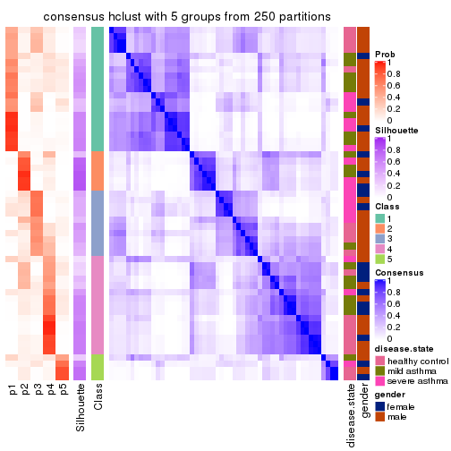
consensus_heatmap(res, k = 6)
Heatmaps for the membership of samples in all partitions to see how consistent they are:
membership_heatmap(res, k = 2)
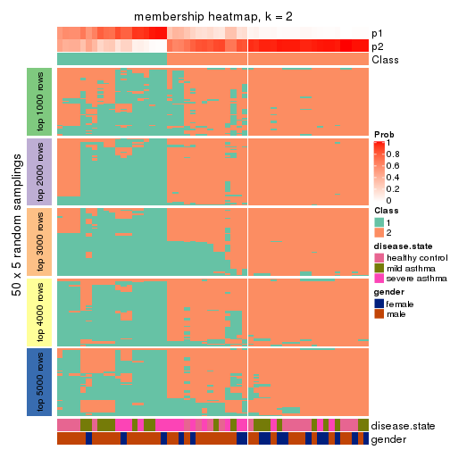
membership_heatmap(res, k = 3)
membership_heatmap(res, k = 4)
membership_heatmap(res, k = 5)
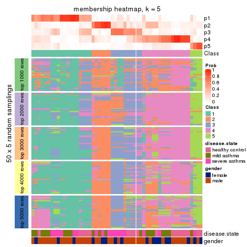
membership_heatmap(res, k = 6)
As soon as we have had the classes for columns, we can look for signatures which are significantly different between classes which can be candidate marks for certain classes. Following are the heatmaps for signatures.
Signature heatmaps where rows are scaled:
get_signatures(res, k = 2)
get_signatures(res, k = 3)

get_signatures(res, k = 4)
get_signatures(res, k = 5)
get_signatures(res, k = 6)
Signature heatmaps where rows are not scaled:
get_signatures(res, k = 2, scale_rows = FALSE)
get_signatures(res, k = 3, scale_rows = FALSE)

get_signatures(res, k = 4, scale_rows = FALSE)
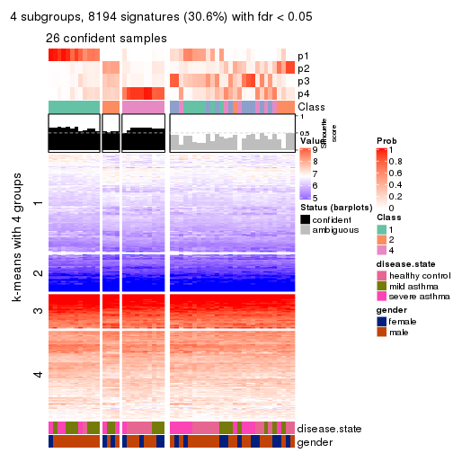
get_signatures(res, k = 5, scale_rows = FALSE)
get_signatures(res, k = 6, scale_rows = FALSE)

Compare the overlap of signatures from different k:
compare_signatures(res)
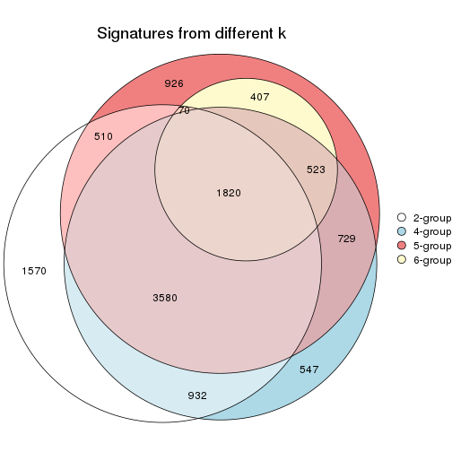
get_signature() returns a data frame invisibly. TO get the list of signatures, the function
call should be assigned to a variable explicitly. In following code, if plot argument is set
to FALSE, no heatmap is plotted while only the differential analysis is performed.
# code only for demonstration
tb = get_signature(res, k = ..., plot = FALSE)
An example of the output of tb is:
#> which_row fdr mean_1 mean_2 scaled_mean_1 scaled_mean_2 km
#> 1 38 0.042760348 8.373488 9.131774 -0.5533452 0.5164555 1
#> 2 40 0.018707592 7.106213 8.469186 -0.6173731 0.5762149 1
#> 3 55 0.019134737 10.221463 11.207825 -0.6159697 0.5749050 1
#> 4 59 0.006059896 5.921854 7.869574 -0.6899429 0.6439467 1
#> 5 60 0.018055526 8.928898 10.211722 -0.6204761 0.5791110 1
#> 6 98 0.009384629 15.714769 14.887706 0.6635654 -0.6193277 2
...
The columns in tb are:
which_row: row indices corresponding to the input matrix.fdr: FDR for the differential test. mean_x: The mean value in group x.scaled_mean_x: The mean value in group x after rows are scaled.km: Row groups if k-means clustering is applied to rows.UMAP plot which shows how samples are separated.
dimension_reduction(res, k = 2, method = "UMAP")
dimension_reduction(res, k = 3, method = "UMAP")
dimension_reduction(res, k = 4, method = "UMAP")
dimension_reduction(res, k = 5, method = "UMAP")
dimension_reduction(res, k = 6, method = "UMAP")
Following heatmap shows how subgroups are split when increasing k:
collect_classes(res)
Test correlation between subgroups and known annotations. If the known annotation is numeric, one-way ANOVA test is applied, and if the known annotation is discrete, chi-squared contingency table test is applied.
test_to_known_factors(res)
#> n disease.state(p) gender(p) k
#> CV:hclust 45 0.06530 0.139 2
#> CV:hclust 14 NA NA 3
#> CV:hclust 26 0.04612 0.131 4
#> CV:hclust 28 0.03848 0.359 5
#> CV:hclust 19 0.00313 0.166 6
If matrix rows can be associated to genes, consider to use functional_enrichment(res,
...) to perform function enrichment for the signature genes. See this vignette for more detailed explanations.
The object with results only for a single top-value method and a single partition method can be extracted as:
res = res_list["CV", "kmeans"]
# you can also extract it by
# res = res_list["CV:kmeans"]
A summary of res and all the functions that can be applied to it:
res
#> A 'ConsensusPartition' object with k = 2, 3, 4, 5, 6.
#> On a matrix with 26819 rows and 54 columns.
#> Top rows (1000, 2000, 3000, 4000, 5000) are extracted by 'CV' method.
#> Subgroups are detected by 'kmeans' method.
#> Performed in total 1250 partitions by row resampling.
#> Best k for subgroups seems to be 2.
#>
#> Following methods can be applied to this 'ConsensusPartition' object:
#> [1] "cola_report" "collect_classes" "collect_plots"
#> [4] "collect_stats" "colnames" "compare_signatures"
#> [7] "consensus_heatmap" "dimension_reduction" "functional_enrichment"
#> [10] "get_anno_col" "get_anno" "get_classes"
#> [13] "get_consensus" "get_matrix" "get_membership"
#> [16] "get_param" "get_signatures" "get_stats"
#> [19] "is_best_k" "is_stable_k" "membership_heatmap"
#> [22] "ncol" "nrow" "plot_ecdf"
#> [25] "rownames" "select_partition_number" "show"
#> [28] "suggest_best_k" "test_to_known_factors"
collect_plots() function collects all the plots made from res for all k (number of partitions)
into one single page to provide an easy and fast comparison between different k.
collect_plots(res)
The plots are:
k and the heatmap of
predicted classes for each k.k.k.k.All the plots in panels can be made by individual functions and they are plotted later in this section.
select_partition_number() produces several plots showing different
statistics for choosing “optimized” k. There are following statistics:
k;k, the area increased is defined as \(A_k - A_{k-1}\).The detailed explanations of these statistics can be found in the cola vignette.
Generally speaking, lower PAC score, higher mean silhouette score or higher
concordance corresponds to better partition. Rand index and Jaccard index
measure how similar the current partition is compared to partition with k-1.
If they are too similar, we won't accept k is better than k-1.
select_partition_number(res)
The numeric values for all these statistics can be obtained by get_stats().
get_stats(res)
#> k 1-PAC mean_silhouette concordance area_increased Rand Jaccard
#> 2 2 0.617 0.836 0.926 0.5006 0.493 0.493
#> 3 3 0.351 0.447 0.688 0.3248 0.863 0.727
#> 4 4 0.433 0.461 0.663 0.1272 0.780 0.478
#> 5 5 0.520 0.361 0.625 0.0678 0.920 0.702
#> 6 6 0.625 0.412 0.657 0.0428 0.874 0.492
suggest_best_k() suggests the best \(k\) based on these statistics. The rules are as follows:
suggest_best_k(res)
#> [1] 2
Following shows the table of the partitions (You need to click the show/hide
code output link to see it). The membership matrix (columns with name p*)
is inferred by
clue::cl_consensus()
function with the SE method. Basically the value in the membership matrix
represents the probability to belong to a certain group. The finall class
label for an item is determined with the group with highest probability it
belongs to.
In get_classes() function, the entropy is calculated from the membership
matrix and the silhouette score is calculated from the consensus matrix.
cbind(get_classes(res, k = 2), get_membership(res, k = 2))
#> class entropy silhouette p1 p2
#> GSM665386 2 0.0000 0.927 0.000 1.000
#> GSM665389 2 0.0000 0.927 0.000 1.000
#> GSM665390 2 0.5178 0.832 0.116 0.884
#> GSM665391 1 0.7674 0.732 0.776 0.224
#> GSM665392 2 0.2236 0.908 0.036 0.964
#> GSM665393 1 0.3274 0.884 0.940 0.060
#> GSM665394 2 0.0000 0.927 0.000 1.000
#> GSM665395 1 0.5059 0.846 0.888 0.112
#> GSM665396 2 0.0000 0.927 0.000 1.000
#> GSM665398 2 0.0376 0.925 0.004 0.996
#> GSM665399 1 0.0000 0.901 1.000 0.000
#> GSM665400 1 0.2948 0.887 0.948 0.052
#> GSM665401 2 0.3584 0.891 0.068 0.932
#> GSM665402 1 0.7674 0.731 0.776 0.224
#> GSM665403 2 0.0376 0.925 0.004 0.996
#> GSM665387 2 0.0000 0.927 0.000 1.000
#> GSM665388 2 0.5946 0.816 0.144 0.856
#> GSM665397 2 0.0000 0.927 0.000 1.000
#> GSM665404 1 0.0938 0.900 0.988 0.012
#> GSM665405 2 0.8608 0.561 0.284 0.716
#> GSM665406 2 0.0000 0.927 0.000 1.000
#> GSM665407 2 0.2948 0.897 0.052 0.948
#> GSM665409 1 0.0000 0.901 1.000 0.000
#> GSM665413 2 0.0000 0.927 0.000 1.000
#> GSM665416 1 0.3114 0.887 0.944 0.056
#> GSM665417 1 0.0672 0.901 0.992 0.008
#> GSM665418 1 0.0376 0.902 0.996 0.004
#> GSM665419 1 0.0376 0.902 0.996 0.004
#> GSM665421 1 0.6247 0.811 0.844 0.156
#> GSM665422 1 0.9608 0.332 0.616 0.384
#> GSM665408 2 0.0000 0.927 0.000 1.000
#> GSM665410 2 0.0000 0.927 0.000 1.000
#> GSM665411 2 0.4690 0.863 0.100 0.900
#> GSM665412 2 0.0000 0.927 0.000 1.000
#> GSM665414 2 0.0000 0.927 0.000 1.000
#> GSM665415 1 0.9248 0.508 0.660 0.340
#> GSM665420 2 0.0000 0.927 0.000 1.000
#> GSM665424 1 0.0000 0.901 1.000 0.000
#> GSM665425 1 0.9881 0.184 0.564 0.436
#> GSM665429 1 0.0000 0.901 1.000 0.000
#> GSM665430 1 0.0000 0.901 1.000 0.000
#> GSM665431 2 0.9129 0.517 0.328 0.672
#> GSM665432 1 0.0000 0.901 1.000 0.000
#> GSM665433 1 0.3114 0.887 0.944 0.056
#> GSM665434 1 0.0938 0.901 0.988 0.012
#> GSM665435 2 0.8499 0.599 0.276 0.724
#> GSM665436 2 0.0000 0.927 0.000 1.000
#> GSM665423 2 0.0000 0.927 0.000 1.000
#> GSM665426 2 0.0000 0.927 0.000 1.000
#> GSM665427 2 0.9732 0.356 0.404 0.596
#> GSM665428 1 0.0000 0.901 1.000 0.000
#> GSM665437 1 0.0376 0.902 0.996 0.004
#> GSM665438 2 0.0938 0.921 0.012 0.988
#> GSM665439 1 0.0376 0.902 0.996 0.004
cbind(get_classes(res, k = 3), get_membership(res, k = 3))
#> class entropy silhouette p1 p2 p3
#> GSM665386 2 0.5859 0.4883 0.000 0.656 0.344
#> GSM665389 2 0.5678 0.5070 0.000 0.684 0.316
#> GSM665390 2 0.8783 0.1608 0.112 0.468 0.420
#> GSM665391 1 0.8199 0.5071 0.640 0.160 0.200
#> GSM665392 3 0.5327 0.3383 0.000 0.272 0.728
#> GSM665393 1 0.7209 0.5572 0.604 0.036 0.360
#> GSM665394 2 0.5785 0.4986 0.000 0.668 0.332
#> GSM665395 3 0.7346 -0.3274 0.368 0.040 0.592
#> GSM665396 2 0.5760 0.5024 0.000 0.672 0.328
#> GSM665398 2 0.5560 0.4461 0.000 0.700 0.300
#> GSM665399 1 0.5560 0.5990 0.700 0.000 0.300
#> GSM665400 1 0.6935 0.5574 0.604 0.024 0.372
#> GSM665401 3 0.3213 0.4511 0.008 0.092 0.900
#> GSM665402 1 0.8228 0.5020 0.552 0.084 0.364
#> GSM665403 2 0.5138 0.5045 0.000 0.748 0.252
#> GSM665387 2 0.3192 0.6232 0.000 0.888 0.112
#> GSM665388 3 0.7896 0.3314 0.076 0.324 0.600
#> GSM665397 2 0.1753 0.6277 0.000 0.952 0.048
#> GSM665404 1 0.5737 0.6249 0.732 0.012 0.256
#> GSM665405 3 0.8834 0.1238 0.140 0.316 0.544
#> GSM665406 2 0.3192 0.6142 0.000 0.888 0.112
#> GSM665407 3 0.6209 -0.0522 0.004 0.368 0.628
#> GSM665409 1 0.3551 0.6482 0.868 0.000 0.132
#> GSM665413 2 0.2165 0.6120 0.000 0.936 0.064
#> GSM665416 1 0.6998 0.5924 0.664 0.044 0.292
#> GSM665417 1 0.3120 0.6477 0.908 0.012 0.080
#> GSM665418 1 0.4544 0.6101 0.860 0.056 0.084
#> GSM665419 1 0.0424 0.6506 0.992 0.000 0.008
#> GSM665421 1 0.8030 0.5430 0.652 0.144 0.204
#> GSM665422 3 0.8554 0.2859 0.324 0.116 0.560
#> GSM665408 2 0.6079 0.4376 0.000 0.612 0.388
#> GSM665410 2 0.5859 0.4893 0.000 0.656 0.344
#> GSM665411 2 0.9576 -0.0849 0.196 0.408 0.396
#> GSM665412 2 0.3116 0.6213 0.000 0.892 0.108
#> GSM665414 2 0.0747 0.6287 0.000 0.984 0.016
#> GSM665415 1 0.8058 0.4760 0.648 0.212 0.140
#> GSM665420 2 0.2356 0.6052 0.000 0.928 0.072
#> GSM665424 1 0.6286 0.4078 0.536 0.000 0.464
#> GSM665425 1 0.9865 -0.0342 0.408 0.268 0.324
#> GSM665429 1 0.6295 0.3714 0.528 0.000 0.472
#> GSM665430 1 0.5678 0.4579 0.684 0.000 0.316
#> GSM665431 2 0.7759 -0.1447 0.048 0.480 0.472
#> GSM665432 1 0.2261 0.6476 0.932 0.000 0.068
#> GSM665433 1 0.7309 0.5240 0.708 0.168 0.124
#> GSM665434 1 0.2116 0.6541 0.948 0.012 0.040
#> GSM665435 2 0.5467 0.4784 0.112 0.816 0.072
#> GSM665436 2 0.1529 0.6183 0.000 0.960 0.040
#> GSM665423 2 0.1289 0.6175 0.000 0.968 0.032
#> GSM665426 2 0.7189 0.4136 0.052 0.656 0.292
#> GSM665427 3 0.8153 0.4231 0.144 0.216 0.640
#> GSM665428 1 0.6111 0.4096 0.604 0.000 0.396
#> GSM665437 1 0.7189 0.4191 0.656 0.052 0.292
#> GSM665438 2 0.5902 0.2503 0.004 0.680 0.316
#> GSM665439 1 0.0892 0.6491 0.980 0.000 0.020
cbind(get_classes(res, k = 4), get_membership(res, k = 4))
#> class entropy silhouette p1 p2 p3 p4
#> GSM665386 4 0.4767 0.545 0.020 0.256 0.000 0.724
#> GSM665389 4 0.4428 0.529 0.004 0.276 0.000 0.720
#> GSM665390 4 0.6433 0.536 0.188 0.164 0.000 0.648
#> GSM665391 1 0.4513 0.532 0.816 0.064 0.008 0.112
#> GSM665392 4 0.5377 0.413 0.008 0.024 0.284 0.684
#> GSM665393 1 0.5346 0.456 0.780 0.036 0.124 0.060
#> GSM665394 4 0.4785 0.533 0.012 0.264 0.004 0.720
#> GSM665395 3 0.7938 0.293 0.332 0.056 0.512 0.100
#> GSM665396 4 0.4546 0.540 0.012 0.256 0.000 0.732
#> GSM665398 2 0.6915 0.571 0.136 0.672 0.044 0.148
#> GSM665399 1 0.6416 0.222 0.616 0.016 0.312 0.056
#> GSM665400 1 0.7413 0.239 0.608 0.056 0.244 0.092
#> GSM665401 4 0.8398 0.126 0.176 0.048 0.296 0.480
#> GSM665402 1 0.5499 0.489 0.764 0.024 0.076 0.136
#> GSM665403 2 0.6224 0.628 0.104 0.728 0.044 0.124
#> GSM665387 2 0.4431 0.570 0.000 0.696 0.000 0.304
#> GSM665388 4 0.6666 0.382 0.024 0.068 0.284 0.624
#> GSM665397 2 0.4546 0.593 0.012 0.732 0.000 0.256
#> GSM665404 1 0.4452 0.515 0.796 0.000 0.156 0.048
#> GSM665405 4 0.7649 0.487 0.268 0.080 0.072 0.580
#> GSM665406 2 0.2861 0.738 0.004 0.892 0.012 0.092
#> GSM665407 4 0.8753 0.342 0.288 0.136 0.100 0.476
#> GSM665409 3 0.5678 -0.154 0.480 0.004 0.500 0.016
#> GSM665413 2 0.1913 0.754 0.020 0.940 0.000 0.040
#> GSM665416 1 0.3672 0.532 0.876 0.036 0.052 0.036
#> GSM665417 1 0.4161 0.518 0.820 0.012 0.148 0.020
#> GSM665418 1 0.6966 0.133 0.512 0.036 0.408 0.044
#> GSM665419 1 0.5112 0.300 0.608 0.000 0.384 0.008
#> GSM665421 1 0.3708 0.533 0.832 0.148 0.000 0.020
#> GSM665422 4 0.7613 0.326 0.128 0.044 0.240 0.588
#> GSM665408 4 0.6442 0.541 0.036 0.240 0.056 0.668
#> GSM665410 4 0.5899 0.525 0.020 0.284 0.032 0.664
#> GSM665411 4 0.7442 0.507 0.248 0.156 0.020 0.576
#> GSM665412 2 0.3985 0.708 0.008 0.832 0.024 0.136
#> GSM665414 2 0.4321 0.681 0.024 0.796 0.004 0.176
#> GSM665415 1 0.6054 0.484 0.732 0.152 0.040 0.076
#> GSM665420 2 0.0895 0.750 0.020 0.976 0.004 0.000
#> GSM665424 3 0.6554 0.436 0.276 0.012 0.628 0.084
#> GSM665425 3 0.8830 0.281 0.192 0.248 0.476 0.084
#> GSM665429 3 0.4771 0.544 0.148 0.004 0.788 0.060
#> GSM665430 3 0.3680 0.495 0.160 0.008 0.828 0.004
#> GSM665431 2 0.7165 0.490 0.116 0.660 0.160 0.064
#> GSM665432 1 0.5292 0.128 0.512 0.000 0.480 0.008
#> GSM665433 1 0.8078 0.340 0.572 0.080 0.216 0.132
#> GSM665434 1 0.4303 0.495 0.768 0.008 0.220 0.004
#> GSM665435 2 0.2515 0.721 0.072 0.912 0.004 0.012
#> GSM665436 2 0.1909 0.745 0.008 0.940 0.004 0.048
#> GSM665423 2 0.1920 0.745 0.024 0.944 0.004 0.028
#> GSM665426 4 0.7031 0.487 0.096 0.316 0.016 0.572
#> GSM665427 4 0.6897 0.106 0.016 0.064 0.448 0.472
#> GSM665428 3 0.4203 0.547 0.108 0.000 0.824 0.068
#> GSM665437 3 0.6070 0.422 0.188 0.076 0.712 0.024
#> GSM665438 2 0.7290 0.228 0.000 0.504 0.328 0.168
#> GSM665439 1 0.5203 0.247 0.576 0.000 0.416 0.008
cbind(get_classes(res, k = 5), get_membership(res, k = 5))
#> class entropy silhouette p1 p2 p3 p4 p5
#> GSM665386 4 0.3087 0.6057 0.008 0.152 0.000 0.836 0.004
#> GSM665389 4 0.3256 0.6088 0.000 0.148 0.004 0.832 0.016
#> GSM665390 4 0.5314 0.5666 0.184 0.064 0.012 0.720 0.020
#> GSM665391 1 0.4419 0.5005 0.812 0.040 0.020 0.096 0.032
#> GSM665392 4 0.6211 0.1286 0.004 0.000 0.436 0.440 0.120
#> GSM665393 1 0.4894 0.3484 0.692 0.008 0.264 0.012 0.024
#> GSM665394 4 0.3145 0.6066 0.008 0.136 0.012 0.844 0.000
#> GSM665395 3 0.6391 0.4463 0.204 0.012 0.588 0.004 0.192
#> GSM665396 4 0.2629 0.6115 0.000 0.136 0.004 0.860 0.000
#> GSM665398 2 0.7177 0.2141 0.092 0.448 0.376 0.084 0.000
#> GSM665399 1 0.6217 0.1039 0.520 0.000 0.316 0.000 0.164
#> GSM665400 1 0.6670 -0.1865 0.452 0.020 0.424 0.012 0.092
#> GSM665401 3 0.6628 0.4983 0.160 0.012 0.640 0.124 0.064
#> GSM665402 1 0.4952 0.4833 0.752 0.020 0.156 0.064 0.008
#> GSM665403 2 0.6517 0.4204 0.076 0.564 0.300 0.060 0.000
#> GSM665387 2 0.5072 0.2082 0.008 0.516 0.020 0.456 0.000
#> GSM665388 4 0.6543 0.2101 0.012 0.004 0.376 0.484 0.124
#> GSM665397 2 0.4135 0.4201 0.004 0.656 0.000 0.340 0.000
#> GSM665404 1 0.4593 0.4809 0.784 0.000 0.084 0.032 0.100
#> GSM665405 4 0.7367 0.2626 0.236 0.072 0.184 0.508 0.000
#> GSM665406 2 0.2359 0.6812 0.008 0.912 0.044 0.036 0.000
#> GSM665407 3 0.7244 0.2844 0.264 0.028 0.440 0.268 0.000
#> GSM665409 5 0.6002 0.0369 0.436 0.000 0.112 0.000 0.452
#> GSM665413 2 0.1780 0.6898 0.008 0.940 0.024 0.028 0.000
#> GSM665416 1 0.2686 0.5342 0.892 0.012 0.080 0.012 0.004
#> GSM665417 1 0.4456 0.3863 0.736 0.004 0.016 0.016 0.228
#> GSM665418 5 0.6183 0.1056 0.372 0.008 0.048 0.032 0.540
#> GSM665419 1 0.4583 -0.0331 0.528 0.000 0.004 0.004 0.464
#> GSM665421 1 0.3668 0.5206 0.844 0.100 0.028 0.008 0.020
#> GSM665422 4 0.7921 0.2200 0.076 0.008 0.296 0.428 0.192
#> GSM665408 4 0.6662 0.4801 0.056 0.132 0.220 0.592 0.000
#> GSM665410 4 0.5073 0.5708 0.024 0.164 0.080 0.732 0.000
#> GSM665411 4 0.6917 0.4231 0.292 0.072 0.056 0.560 0.020
#> GSM665412 2 0.4939 0.5874 0.016 0.740 0.092 0.152 0.000
#> GSM665414 2 0.4240 0.4821 0.012 0.700 0.004 0.284 0.000
#> GSM665415 1 0.5438 0.4415 0.744 0.072 0.020 0.040 0.124
#> GSM665420 2 0.0693 0.6878 0.000 0.980 0.012 0.000 0.008
#> GSM665424 3 0.6257 0.3054 0.168 0.000 0.512 0.000 0.320
#> GSM665425 5 0.8538 0.2434 0.132 0.192 0.156 0.048 0.472
#> GSM665429 5 0.6029 -0.0740 0.108 0.000 0.368 0.004 0.520
#> GSM665430 5 0.2551 0.3700 0.004 0.004 0.104 0.004 0.884
#> GSM665431 2 0.6072 0.4436 0.056 0.640 0.248 0.008 0.048
#> GSM665432 5 0.4721 0.1611 0.348 0.000 0.020 0.004 0.628
#> GSM665433 1 0.7847 0.0172 0.416 0.044 0.032 0.148 0.360
#> GSM665434 1 0.4275 0.3366 0.696 0.008 0.008 0.000 0.288
#> GSM665435 2 0.2378 0.6678 0.064 0.908 0.012 0.000 0.016
#> GSM665436 2 0.1116 0.6834 0.004 0.964 0.000 0.028 0.004
#> GSM665423 2 0.0771 0.6849 0.004 0.976 0.000 0.020 0.000
#> GSM665426 4 0.6269 0.5631 0.124 0.176 0.024 0.656 0.020
#> GSM665427 3 0.6843 -0.0760 0.004 0.008 0.492 0.248 0.248
#> GSM665428 5 0.5773 0.0595 0.080 0.000 0.344 0.008 0.568
#> GSM665437 5 0.5277 0.3977 0.056 0.076 0.084 0.020 0.764
#> GSM665438 2 0.8095 0.1149 0.000 0.400 0.184 0.132 0.284
#> GSM665439 5 0.4593 -0.0356 0.480 0.000 0.004 0.004 0.512
cbind(get_classes(res, k = 6), get_membership(res, k = 6))
#> class entropy silhouette p1 p2 p3 p4 p5 p6
#> GSM665386 4 0.2580 0.6422 0.000 0.072 0.004 0.884 0.004 0.036
#> GSM665389 4 0.2221 0.6477 0.000 0.072 0.000 0.896 0.000 0.032
#> GSM665390 4 0.4386 0.5683 0.116 0.032 0.012 0.776 0.000 0.064
#> GSM665391 1 0.4050 0.5845 0.808 0.016 0.088 0.036 0.000 0.052
#> GSM665392 6 0.3936 0.7974 0.000 0.000 0.024 0.228 0.012 0.736
#> GSM665393 1 0.3862 0.1544 0.524 0.000 0.476 0.000 0.000 0.000
#> GSM665394 4 0.2339 0.6557 0.000 0.056 0.016 0.904 0.004 0.020
#> GSM665395 3 0.3856 0.5053 0.012 0.016 0.804 0.000 0.124 0.044
#> GSM665396 4 0.1682 0.6515 0.000 0.052 0.000 0.928 0.000 0.020
#> GSM665398 3 0.5396 0.3834 0.000 0.248 0.640 0.064 0.004 0.044
#> GSM665399 3 0.5218 0.0476 0.364 0.000 0.544 0.000 0.088 0.004
#> GSM665400 3 0.4011 0.5054 0.144 0.028 0.780 0.000 0.048 0.000
#> GSM665401 3 0.4026 0.5415 0.004 0.012 0.812 0.040 0.040 0.092
#> GSM665402 1 0.4603 0.4081 0.628 0.004 0.332 0.020 0.000 0.016
#> GSM665403 3 0.5682 0.0493 0.000 0.404 0.500 0.048 0.004 0.044
#> GSM665387 4 0.4546 0.2752 0.000 0.340 0.012 0.624 0.004 0.020
#> GSM665388 6 0.3827 0.7887 0.000 0.000 0.004 0.256 0.020 0.720
#> GSM665397 2 0.4562 0.2608 0.008 0.584 0.004 0.388 0.004 0.012
#> GSM665404 1 0.4044 0.5459 0.756 0.000 0.176 0.000 0.060 0.008
#> GSM665405 4 0.7496 0.2339 0.168 0.020 0.312 0.408 0.004 0.088
#> GSM665406 2 0.3060 0.6935 0.000 0.868 0.040 0.048 0.004 0.040
#> GSM665407 3 0.5188 0.5097 0.064 0.036 0.740 0.104 0.004 0.052
#> GSM665409 5 0.6462 0.0387 0.336 0.000 0.252 0.008 0.396 0.008
#> GSM665413 2 0.1312 0.7344 0.008 0.956 0.020 0.004 0.000 0.012
#> GSM665416 1 0.2912 0.5591 0.784 0.000 0.216 0.000 0.000 0.000
#> GSM665417 1 0.3279 0.5196 0.848 0.000 0.000 0.032 0.060 0.060
#> GSM665418 5 0.6641 -0.0228 0.388 0.000 0.004 0.044 0.400 0.164
#> GSM665419 1 0.5236 0.2027 0.604 0.000 0.004 0.032 0.316 0.044
#> GSM665421 1 0.4120 0.5838 0.780 0.056 0.136 0.004 0.000 0.024
#> GSM665422 6 0.5314 0.7030 0.088 0.000 0.000 0.208 0.044 0.660
#> GSM665408 4 0.7216 0.3852 0.020 0.084 0.228 0.496 0.004 0.168
#> GSM665410 4 0.6078 0.5385 0.020 0.072 0.160 0.648 0.004 0.096
#> GSM665411 1 0.7574 -0.1260 0.372 0.068 0.044 0.368 0.004 0.144
#> GSM665412 2 0.7326 0.1719 0.020 0.480 0.168 0.236 0.004 0.092
#> GSM665414 2 0.4345 0.3623 0.008 0.632 0.004 0.344 0.004 0.008
#> GSM665415 1 0.3962 0.5466 0.824 0.048 0.016 0.024 0.012 0.076
#> GSM665420 2 0.0436 0.7382 0.004 0.988 0.004 0.000 0.004 0.000
#> GSM665424 3 0.5029 0.2224 0.020 0.000 0.592 0.000 0.340 0.048
#> GSM665425 5 0.7717 0.1390 0.096 0.168 0.012 0.024 0.432 0.268
#> GSM665429 5 0.5210 0.1831 0.020 0.000 0.316 0.000 0.596 0.068
#> GSM665430 5 0.2406 0.4037 0.008 0.004 0.044 0.004 0.904 0.036
#> GSM665431 2 0.5203 0.1853 0.004 0.584 0.344 0.004 0.052 0.012
#> GSM665432 5 0.5665 0.1068 0.360 0.000 0.036 0.020 0.548 0.036
#> GSM665433 1 0.7559 0.0584 0.408 0.008 0.004 0.156 0.276 0.148
#> GSM665434 1 0.3367 0.5158 0.832 0.000 0.020 0.004 0.116 0.028
#> GSM665435 2 0.1296 0.7258 0.044 0.948 0.004 0.000 0.004 0.000
#> GSM665436 2 0.1225 0.7369 0.004 0.956 0.000 0.032 0.004 0.004
#> GSM665423 2 0.1211 0.7376 0.004 0.960 0.004 0.024 0.004 0.004
#> GSM665426 4 0.6245 0.5017 0.116 0.084 0.004 0.632 0.016 0.148
#> GSM665427 6 0.4634 0.6736 0.000 0.000 0.016 0.084 0.188 0.712
#> GSM665428 5 0.5568 0.2668 0.024 0.000 0.240 0.000 0.608 0.128
#> GSM665437 5 0.5146 0.3631 0.052 0.080 0.004 0.020 0.736 0.108
#> GSM665438 5 0.7550 -0.0136 0.012 0.300 0.012 0.056 0.336 0.284
#> GSM665439 1 0.5436 0.0643 0.528 0.000 0.004 0.032 0.392 0.044
Heatmaps for the consensus matrix. It visualizes the probability of two samples to be in a same group.
consensus_heatmap(res, k = 2)
consensus_heatmap(res, k = 3)
consensus_heatmap(res, k = 4)

consensus_heatmap(res, k = 5)
consensus_heatmap(res, k = 6)
Heatmaps for the membership of samples in all partitions to see how consistent they are:
membership_heatmap(res, k = 2)
membership_heatmap(res, k = 3)
membership_heatmap(res, k = 4)
membership_heatmap(res, k = 5)
membership_heatmap(res, k = 6)

As soon as we have had the classes for columns, we can look for signatures which are significantly different between classes which can be candidate marks for certain classes. Following are the heatmaps for signatures.
Signature heatmaps where rows are scaled:
get_signatures(res, k = 2)
get_signatures(res, k = 3)
get_signatures(res, k = 4)
get_signatures(res, k = 5)
get_signatures(res, k = 6)
Signature heatmaps where rows are not scaled:
get_signatures(res, k = 2, scale_rows = FALSE)
get_signatures(res, k = 3, scale_rows = FALSE)
get_signatures(res, k = 4, scale_rows = FALSE)
get_signatures(res, k = 5, scale_rows = FALSE)
get_signatures(res, k = 6, scale_rows = FALSE)
Compare the overlap of signatures from different k:
compare_signatures(res)
get_signature() returns a data frame invisibly. TO get the list of signatures, the function
call should be assigned to a variable explicitly. In following code, if plot argument is set
to FALSE, no heatmap is plotted while only the differential analysis is performed.
# code only for demonstration
tb = get_signature(res, k = ..., plot = FALSE)
An example of the output of tb is:
#> which_row fdr mean_1 mean_2 scaled_mean_1 scaled_mean_2 km
#> 1 38 0.042760348 8.373488 9.131774 -0.5533452 0.5164555 1
#> 2 40 0.018707592 7.106213 8.469186 -0.6173731 0.5762149 1
#> 3 55 0.019134737 10.221463 11.207825 -0.6159697 0.5749050 1
#> 4 59 0.006059896 5.921854 7.869574 -0.6899429 0.6439467 1
#> 5 60 0.018055526 8.928898 10.211722 -0.6204761 0.5791110 1
#> 6 98 0.009384629 15.714769 14.887706 0.6635654 -0.6193277 2
...
The columns in tb are:
which_row: row indices corresponding to the input matrix.fdr: FDR for the differential test. mean_x: The mean value in group x.scaled_mean_x: The mean value in group x after rows are scaled.km: Row groups if k-means clustering is applied to rows.UMAP plot which shows how samples are separated.
dimension_reduction(res, k = 2, method = "UMAP")
dimension_reduction(res, k = 3, method = "UMAP")
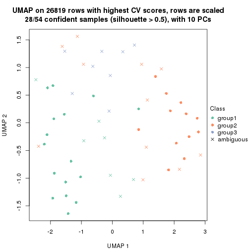
dimension_reduction(res, k = 4, method = "UMAP")
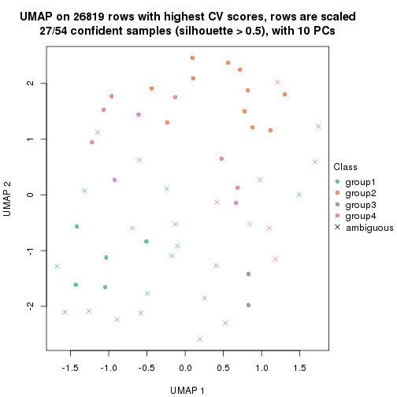
dimension_reduction(res, k = 5, method = "UMAP")
dimension_reduction(res, k = 6, method = "UMAP")
Following heatmap shows how subgroups are split when increasing k:
collect_classes(res)
Test correlation between subgroups and known annotations. If the known annotation is numeric, one-way ANOVA test is applied, and if the known annotation is discrete, chi-squared contingency table test is applied.
test_to_known_factors(res)
#> n disease.state(p) gender(p) k
#> CV:kmeans 51 0.3081 0.0996 2
#> CV:kmeans 28 0.8035 0.0275 3
#> CV:kmeans 27 0.0215 0.2668 4
#> CV:kmeans 17 0.0547 0.3942 5
#> CV:kmeans 28 0.0879 0.4987 6
If matrix rows can be associated to genes, consider to use functional_enrichment(res,
...) to perform function enrichment for the signature genes. See this vignette for more detailed explanations.
The object with results only for a single top-value method and a single partition method can be extracted as:
res = res_list["CV", "skmeans"]
# you can also extract it by
# res = res_list["CV:skmeans"]
A summary of res and all the functions that can be applied to it:
res
#> A 'ConsensusPartition' object with k = 2, 3, 4, 5, 6.
#> On a matrix with 26819 rows and 54 columns.
#> Top rows (1000, 2000, 3000, 4000, 5000) are extracted by 'CV' method.
#> Subgroups are detected by 'skmeans' method.
#> Performed in total 1250 partitions by row resampling.
#> Best k for subgroups seems to be 2.
#>
#> Following methods can be applied to this 'ConsensusPartition' object:
#> [1] "cola_report" "collect_classes" "collect_plots"
#> [4] "collect_stats" "colnames" "compare_signatures"
#> [7] "consensus_heatmap" "dimension_reduction" "functional_enrichment"
#> [10] "get_anno_col" "get_anno" "get_classes"
#> [13] "get_consensus" "get_matrix" "get_membership"
#> [16] "get_param" "get_signatures" "get_stats"
#> [19] "is_best_k" "is_stable_k" "membership_heatmap"
#> [22] "ncol" "nrow" "plot_ecdf"
#> [25] "rownames" "select_partition_number" "show"
#> [28] "suggest_best_k" "test_to_known_factors"
collect_plots() function collects all the plots made from res for all k (number of partitions)
into one single page to provide an easy and fast comparison between different k.
collect_plots(res)
The plots are:
k and the heatmap of
predicted classes for each k.k.k.k.All the plots in panels can be made by individual functions and they are plotted later in this section.
select_partition_number() produces several plots showing different
statistics for choosing “optimized” k. There are following statistics:
k;k, the area increased is defined as \(A_k - A_{k-1}\).The detailed explanations of these statistics can be found in the cola vignette.
Generally speaking, lower PAC score, higher mean silhouette score or higher
concordance corresponds to better partition. Rand index and Jaccard index
measure how similar the current partition is compared to partition with k-1.
If they are too similar, we won't accept k is better than k-1.
select_partition_number(res)
The numeric values for all these statistics can be obtained by get_stats().
get_stats(res)
#> k 1-PAC mean_silhouette concordance area_increased Rand Jaccard
#> 2 2 0.771 0.875 0.946 0.5088 0.493 0.493
#> 3 3 0.445 0.615 0.781 0.3195 0.748 0.532
#> 4 4 0.445 0.488 0.703 0.1270 0.818 0.517
#> 5 5 0.506 0.414 0.661 0.0648 0.888 0.590
#> 6 6 0.565 0.354 0.594 0.0398 0.927 0.658
suggest_best_k() suggests the best \(k\) based on these statistics. The rules are as follows:
suggest_best_k(res)
#> [1] 2
Following shows the table of the partitions (You need to click the show/hide
code output link to see it). The membership matrix (columns with name p*)
is inferred by
clue::cl_consensus()
function with the SE method. Basically the value in the membership matrix
represents the probability to belong to a certain group. The finall class
label for an item is determined with the group with highest probability it
belongs to.
In get_classes() function, the entropy is calculated from the membership
matrix and the silhouette score is calculated from the consensus matrix.
cbind(get_classes(res, k = 2), get_membership(res, k = 2))
#> class entropy silhouette p1 p2
#> GSM665386 2 0.0000 0.919 0.000 1.000
#> GSM665389 2 0.0000 0.919 0.000 1.000
#> GSM665390 2 0.7056 0.732 0.192 0.808
#> GSM665391 1 0.6712 0.785 0.824 0.176
#> GSM665392 2 0.1843 0.903 0.028 0.972
#> GSM665393 1 0.0000 0.964 1.000 0.000
#> GSM665394 2 0.0000 0.919 0.000 1.000
#> GSM665395 1 0.3114 0.923 0.944 0.056
#> GSM665396 2 0.0000 0.919 0.000 1.000
#> GSM665398 2 0.0000 0.919 0.000 1.000
#> GSM665399 1 0.0000 0.964 1.000 0.000
#> GSM665400 1 0.0000 0.964 1.000 0.000
#> GSM665401 2 0.1843 0.903 0.028 0.972
#> GSM665402 1 0.6712 0.781 0.824 0.176
#> GSM665403 2 0.0000 0.919 0.000 1.000
#> GSM665387 2 0.0000 0.919 0.000 1.000
#> GSM665388 2 0.6148 0.799 0.152 0.848
#> GSM665397 2 0.0000 0.919 0.000 1.000
#> GSM665404 1 0.0000 0.964 1.000 0.000
#> GSM665405 2 0.9732 0.317 0.404 0.596
#> GSM665406 2 0.0000 0.919 0.000 1.000
#> GSM665407 2 0.0672 0.914 0.008 0.992
#> GSM665409 1 0.0000 0.964 1.000 0.000
#> GSM665413 2 0.0000 0.919 0.000 1.000
#> GSM665416 1 0.0000 0.964 1.000 0.000
#> GSM665417 1 0.0000 0.964 1.000 0.000
#> GSM665418 1 0.0000 0.964 1.000 0.000
#> GSM665419 1 0.0000 0.964 1.000 0.000
#> GSM665421 1 0.2236 0.942 0.964 0.036
#> GSM665422 1 0.2778 0.929 0.952 0.048
#> GSM665408 2 0.0000 0.919 0.000 1.000
#> GSM665410 2 0.0000 0.919 0.000 1.000
#> GSM665411 2 0.4562 0.855 0.096 0.904
#> GSM665412 2 0.0000 0.919 0.000 1.000
#> GSM665414 2 0.0000 0.919 0.000 1.000
#> GSM665415 1 0.1414 0.952 0.980 0.020
#> GSM665420 2 0.0000 0.919 0.000 1.000
#> GSM665424 1 0.0000 0.964 1.000 0.000
#> GSM665425 1 0.7950 0.648 0.760 0.240
#> GSM665429 1 0.0000 0.964 1.000 0.000
#> GSM665430 1 0.0000 0.964 1.000 0.000
#> GSM665431 2 0.9909 0.277 0.444 0.556
#> GSM665432 1 0.0000 0.964 1.000 0.000
#> GSM665433 1 0.0938 0.958 0.988 0.012
#> GSM665434 1 0.0000 0.964 1.000 0.000
#> GSM665435 2 0.9732 0.371 0.404 0.596
#> GSM665436 2 0.0000 0.919 0.000 1.000
#> GSM665423 2 0.0000 0.919 0.000 1.000
#> GSM665426 2 0.0000 0.919 0.000 1.000
#> GSM665427 2 0.9580 0.442 0.380 0.620
#> GSM665428 1 0.0000 0.964 1.000 0.000
#> GSM665437 1 0.0000 0.964 1.000 0.000
#> GSM665438 2 0.0376 0.917 0.004 0.996
#> GSM665439 1 0.0000 0.964 1.000 0.000
cbind(get_classes(res, k = 3), get_membership(res, k = 3))
#> class entropy silhouette p1 p2 p3
#> GSM665386 2 0.1964 0.7310 0.000 0.944 0.056
#> GSM665389 2 0.1643 0.7371 0.000 0.956 0.044
#> GSM665390 2 0.6678 0.5152 0.216 0.724 0.060
#> GSM665391 1 0.3550 0.7360 0.896 0.080 0.024
#> GSM665392 3 0.6047 0.5386 0.008 0.312 0.680
#> GSM665393 1 0.4974 0.6820 0.764 0.000 0.236
#> GSM665394 2 0.1753 0.7327 0.000 0.952 0.048
#> GSM665395 3 0.5497 0.4461 0.292 0.000 0.708
#> GSM665396 2 0.1964 0.7281 0.000 0.944 0.056
#> GSM665398 2 0.6104 0.6714 0.004 0.648 0.348
#> GSM665399 1 0.5706 0.5801 0.680 0.000 0.320
#> GSM665400 1 0.6126 0.4150 0.600 0.000 0.400
#> GSM665401 3 0.5536 0.5614 0.012 0.236 0.752
#> GSM665402 1 0.5585 0.6914 0.772 0.024 0.204
#> GSM665403 2 0.5929 0.7005 0.004 0.676 0.320
#> GSM665387 2 0.4235 0.7788 0.000 0.824 0.176
#> GSM665388 3 0.8567 0.5574 0.128 0.296 0.576
#> GSM665397 2 0.4062 0.7789 0.000 0.836 0.164
#> GSM665404 1 0.4062 0.7326 0.836 0.000 0.164
#> GSM665405 2 0.9229 0.0722 0.336 0.496 0.168
#> GSM665406 2 0.4654 0.7730 0.000 0.792 0.208
#> GSM665407 2 0.7339 0.4864 0.088 0.688 0.224
#> GSM665409 1 0.4796 0.6846 0.780 0.000 0.220
#> GSM665413 2 0.4796 0.7706 0.000 0.780 0.220
#> GSM665416 1 0.3816 0.7366 0.852 0.000 0.148
#> GSM665417 1 0.0237 0.7491 0.996 0.000 0.004
#> GSM665418 1 0.4235 0.5765 0.824 0.000 0.176
#> GSM665419 1 0.0592 0.7476 0.988 0.000 0.012
#> GSM665421 1 0.4565 0.7273 0.860 0.064 0.076
#> GSM665422 3 0.9599 0.3375 0.388 0.200 0.412
#> GSM665408 2 0.3112 0.7065 0.004 0.900 0.096
#> GSM665410 2 0.1753 0.7325 0.000 0.952 0.048
#> GSM665411 1 0.8283 0.1575 0.536 0.380 0.084
#> GSM665412 2 0.4452 0.7765 0.000 0.808 0.192
#> GSM665414 2 0.4504 0.7765 0.000 0.804 0.196
#> GSM665415 1 0.4960 0.6198 0.832 0.040 0.128
#> GSM665420 2 0.4750 0.7712 0.000 0.784 0.216
#> GSM665424 3 0.5678 0.4198 0.316 0.000 0.684
#> GSM665425 3 0.6441 0.5122 0.276 0.028 0.696
#> GSM665429 3 0.5621 0.4754 0.308 0.000 0.692
#> GSM665430 3 0.6244 0.4360 0.440 0.000 0.560
#> GSM665431 3 0.3272 0.5085 0.004 0.104 0.892
#> GSM665432 1 0.2165 0.7478 0.936 0.000 0.064
#> GSM665433 1 0.4128 0.6536 0.856 0.012 0.132
#> GSM665434 1 0.0747 0.7541 0.984 0.000 0.016
#> GSM665435 2 0.9463 0.4632 0.256 0.500 0.244
#> GSM665436 2 0.4702 0.7720 0.000 0.788 0.212
#> GSM665423 2 0.4702 0.7720 0.000 0.788 0.212
#> GSM665426 2 0.5815 0.6879 0.104 0.800 0.096
#> GSM665427 3 0.7945 0.5831 0.124 0.224 0.652
#> GSM665428 3 0.6008 0.4757 0.372 0.000 0.628
#> GSM665437 3 0.6252 0.4223 0.444 0.000 0.556
#> GSM665438 3 0.6326 0.2349 0.020 0.292 0.688
#> GSM665439 1 0.0747 0.7481 0.984 0.000 0.016
cbind(get_classes(res, k = 4), get_membership(res, k = 4))
#> class entropy silhouette p1 p2 p3 p4
#> GSM665386 4 0.3626 0.5962 0.000 0.184 0.004 0.812
#> GSM665389 4 0.3942 0.5698 0.000 0.236 0.000 0.764
#> GSM665390 4 0.6052 0.5722 0.176 0.124 0.004 0.696
#> GSM665391 1 0.3495 0.6625 0.876 0.036 0.012 0.076
#> GSM665392 4 0.5429 0.2404 0.004 0.012 0.392 0.592
#> GSM665393 1 0.6377 0.5316 0.676 0.020 0.220 0.084
#> GSM665394 4 0.4343 0.5364 0.000 0.264 0.004 0.732
#> GSM665395 3 0.7244 0.4182 0.124 0.056 0.648 0.172
#> GSM665396 4 0.3649 0.5862 0.000 0.204 0.000 0.796
#> GSM665398 2 0.6986 0.5056 0.016 0.612 0.120 0.252
#> GSM665399 1 0.6915 0.3964 0.552 0.008 0.344 0.096
#> GSM665400 3 0.8253 -0.1878 0.400 0.044 0.416 0.140
#> GSM665401 3 0.6739 0.1435 0.020 0.048 0.492 0.440
#> GSM665402 1 0.6484 0.5516 0.668 0.012 0.120 0.200
#> GSM665403 2 0.5610 0.6311 0.008 0.732 0.080 0.180
#> GSM665387 2 0.4661 0.4451 0.000 0.652 0.000 0.348
#> GSM665388 4 0.6528 0.1570 0.024 0.032 0.432 0.512
#> GSM665397 2 0.5182 0.4676 0.008 0.676 0.012 0.304
#> GSM665404 1 0.5109 0.6212 0.744 0.000 0.196 0.060
#> GSM665405 4 0.7553 0.4228 0.172 0.088 0.108 0.632
#> GSM665406 2 0.1576 0.7498 0.000 0.948 0.004 0.048
#> GSM665407 4 0.9167 0.1131 0.116 0.220 0.212 0.452
#> GSM665409 1 0.6069 0.4898 0.588 0.000 0.356 0.056
#> GSM665413 2 0.1590 0.7550 0.008 0.956 0.008 0.028
#> GSM665416 1 0.4059 0.6675 0.848 0.020 0.096 0.036
#> GSM665417 1 0.1339 0.6763 0.964 0.008 0.024 0.004
#> GSM665418 1 0.6206 0.2934 0.584 0.020 0.368 0.028
#> GSM665419 1 0.3725 0.6313 0.812 0.000 0.180 0.008
#> GSM665421 1 0.4588 0.6229 0.800 0.156 0.024 0.020
#> GSM665422 4 0.7768 0.1529 0.184 0.012 0.312 0.492
#> GSM665408 4 0.6124 0.5326 0.008 0.216 0.092 0.684
#> GSM665410 4 0.4706 0.5630 0.000 0.248 0.020 0.732
#> GSM665411 4 0.7896 0.4128 0.312 0.092 0.064 0.532
#> GSM665412 2 0.3853 0.6788 0.000 0.820 0.020 0.160
#> GSM665414 2 0.3721 0.6761 0.004 0.816 0.004 0.176
#> GSM665415 1 0.4598 0.6140 0.824 0.100 0.044 0.032
#> GSM665420 2 0.0967 0.7519 0.004 0.976 0.016 0.004
#> GSM665424 3 0.5731 0.4082 0.172 0.000 0.712 0.116
#> GSM665425 3 0.7265 0.4364 0.188 0.164 0.620 0.028
#> GSM665429 3 0.3732 0.5334 0.092 0.000 0.852 0.056
#> GSM665430 3 0.4043 0.4945 0.168 0.012 0.812 0.008
#> GSM665431 2 0.6565 0.3604 0.004 0.600 0.304 0.092
#> GSM665432 1 0.4621 0.5990 0.708 0.000 0.284 0.008
#> GSM665433 1 0.8483 0.2564 0.512 0.072 0.252 0.164
#> GSM665434 1 0.2731 0.6826 0.896 0.004 0.092 0.008
#> GSM665435 2 0.4252 0.6870 0.084 0.840 0.060 0.016
#> GSM665436 2 0.2317 0.7423 0.012 0.928 0.012 0.048
#> GSM665423 2 0.2074 0.7469 0.016 0.940 0.012 0.032
#> GSM665426 4 0.7593 0.3618 0.104 0.344 0.032 0.520
#> GSM665427 3 0.6662 0.2545 0.060 0.024 0.608 0.308
#> GSM665428 3 0.3335 0.5244 0.120 0.000 0.860 0.020
#> GSM665437 3 0.6431 0.3900 0.252 0.072 0.656 0.020
#> GSM665438 3 0.7160 0.0242 0.004 0.412 0.468 0.116
#> GSM665439 1 0.3810 0.6271 0.804 0.000 0.188 0.008
cbind(get_classes(res, k = 5), get_membership(res, k = 5))
#> class entropy silhouette p1 p2 p3 p4 p5
#> GSM665386 4 0.430 0.5874 0.012 0.084 0.024 0.816 0.064
#> GSM665389 4 0.274 0.6155 0.004 0.040 0.008 0.896 0.052
#> GSM665390 4 0.447 0.5671 0.136 0.028 0.012 0.792 0.032
#> GSM665391 1 0.487 0.5852 0.784 0.024 0.072 0.096 0.024
#> GSM665392 5 0.635 0.1441 0.000 0.004 0.140 0.396 0.460
#> GSM665393 1 0.498 0.2486 0.532 0.016 0.444 0.000 0.008
#> GSM665394 4 0.346 0.6160 0.000 0.108 0.036 0.844 0.012
#> GSM665395 3 0.422 0.4839 0.040 0.032 0.816 0.008 0.104
#> GSM665396 4 0.191 0.6183 0.004 0.028 0.000 0.932 0.036
#> GSM665398 2 0.731 0.2440 0.008 0.404 0.376 0.188 0.024
#> GSM665399 3 0.541 -0.1673 0.428 0.004 0.520 0.000 0.048
#> GSM665400 3 0.537 0.3524 0.204 0.036 0.708 0.008 0.044
#> GSM665401 3 0.599 0.3214 0.004 0.020 0.648 0.204 0.124
#> GSM665402 1 0.720 0.3773 0.548 0.024 0.280 0.088 0.060
#> GSM665403 2 0.655 0.5031 0.008 0.588 0.268 0.100 0.036
#> GSM665387 4 0.532 -0.1444 0.004 0.468 0.020 0.496 0.012
#> GSM665388 5 0.601 0.2367 0.012 0.008 0.064 0.372 0.544
#> GSM665397 2 0.596 0.3765 0.012 0.608 0.016 0.300 0.064
#> GSM665404 1 0.525 0.5370 0.696 0.000 0.224 0.036 0.044
#> GSM665405 4 0.801 0.3212 0.140 0.036 0.256 0.492 0.076
#> GSM665406 2 0.379 0.6808 0.008 0.844 0.044 0.080 0.024
#> GSM665407 3 0.729 -0.0506 0.032 0.092 0.496 0.340 0.040
#> GSM665409 1 0.593 0.2263 0.496 0.000 0.396 0.000 0.108
#> GSM665413 2 0.165 0.7085 0.000 0.944 0.028 0.024 0.004
#> GSM665416 1 0.407 0.5976 0.804 0.016 0.148 0.012 0.020
#> GSM665417 1 0.205 0.6340 0.916 0.008 0.000 0.004 0.072
#> GSM665418 1 0.598 0.0507 0.476 0.020 0.036 0.012 0.456
#> GSM665419 1 0.378 0.6140 0.808 0.000 0.060 0.000 0.132
#> GSM665421 1 0.499 0.5570 0.736 0.184 0.052 0.004 0.024
#> GSM665422 5 0.656 0.3512 0.108 0.000 0.044 0.280 0.568
#> GSM665408 4 0.748 0.4087 0.016 0.072 0.196 0.548 0.168
#> GSM665410 4 0.521 0.5790 0.020 0.052 0.088 0.768 0.072
#> GSM665411 4 0.920 0.1374 0.200 0.116 0.076 0.360 0.248
#> GSM665412 2 0.627 0.3928 0.008 0.600 0.076 0.284 0.032
#> GSM665414 2 0.439 0.5211 0.008 0.712 0.004 0.264 0.012
#> GSM665415 1 0.588 0.4922 0.680 0.176 0.008 0.028 0.108
#> GSM665420 2 0.096 0.7066 0.000 0.972 0.004 0.016 0.008
#> GSM665424 3 0.505 0.4511 0.084 0.000 0.696 0.004 0.216
#> GSM665425 5 0.650 0.4321 0.112 0.112 0.092 0.016 0.668
#> GSM665429 3 0.582 0.3000 0.084 0.004 0.576 0.004 0.332
#> GSM665430 5 0.619 0.0593 0.132 0.008 0.308 0.000 0.552
#> GSM665431 2 0.587 0.4748 0.004 0.624 0.240 0.004 0.128
#> GSM665432 1 0.555 0.4911 0.644 0.000 0.208 0.000 0.148
#> GSM665433 5 0.808 0.1317 0.360 0.060 0.032 0.152 0.396
#> GSM665434 1 0.358 0.6359 0.852 0.012 0.080 0.008 0.048
#> GSM665435 2 0.307 0.6751 0.036 0.884 0.016 0.008 0.056
#> GSM665436 2 0.211 0.6976 0.000 0.912 0.000 0.072 0.016
#> GSM665423 2 0.149 0.7034 0.004 0.952 0.004 0.032 0.008
#> GSM665426 4 0.764 0.3814 0.116 0.168 0.008 0.532 0.176
#> GSM665427 5 0.613 0.4082 0.020 0.012 0.164 0.148 0.656
#> GSM665428 3 0.591 0.1723 0.104 0.000 0.492 0.000 0.404
#> GSM665437 5 0.655 0.3339 0.152 0.076 0.144 0.000 0.628
#> GSM665438 5 0.673 0.3716 0.000 0.256 0.080 0.088 0.576
#> GSM665439 1 0.433 0.5869 0.764 0.000 0.080 0.000 0.156
cbind(get_classes(res, k = 6), get_membership(res, k = 6))
#> class entropy silhouette p1 p2 p3 p4 p5 p6
#> GSM665386 4 0.4253 0.4885 0.004 0.060 0.028 0.772 0.000 0.136
#> GSM665389 4 0.3686 0.5498 0.000 0.112 0.008 0.812 0.008 0.060
#> GSM665390 4 0.4799 0.4907 0.084 0.024 0.024 0.776 0.028 0.064
#> GSM665391 1 0.5021 0.5272 0.752 0.012 0.088 0.072 0.012 0.064
#> GSM665392 6 0.5643 0.4983 0.000 0.000 0.064 0.184 0.108 0.644
#> GSM665393 1 0.5073 0.2469 0.532 0.004 0.412 0.000 0.016 0.036
#> GSM665394 4 0.3932 0.5554 0.008 0.080 0.024 0.808 0.000 0.080
#> GSM665395 3 0.5200 0.3480 0.028 0.024 0.704 0.004 0.184 0.056
#> GSM665396 4 0.1723 0.5594 0.000 0.036 0.000 0.928 0.000 0.036
#> GSM665398 3 0.6115 -0.0279 0.004 0.316 0.536 0.088 0.000 0.056
#> GSM665399 3 0.6421 -0.2162 0.380 0.000 0.436 0.004 0.144 0.036
#> GSM665400 3 0.5369 0.3656 0.148 0.036 0.712 0.004 0.064 0.036
#> GSM665401 3 0.5277 0.3319 0.000 0.004 0.672 0.064 0.052 0.208
#> GSM665402 1 0.6500 0.3384 0.548 0.000 0.260 0.060 0.016 0.116
#> GSM665403 2 0.6266 0.2483 0.000 0.460 0.384 0.076 0.000 0.080
#> GSM665387 4 0.5572 0.0675 0.000 0.392 0.036 0.512 0.000 0.060
#> GSM665388 6 0.6536 0.4774 0.016 0.024 0.016 0.220 0.160 0.564
#> GSM665397 2 0.5093 0.3744 0.000 0.612 0.000 0.292 0.008 0.088
#> GSM665404 1 0.7150 0.4459 0.552 0.000 0.164 0.072 0.136 0.076
#> GSM665405 4 0.7519 0.1360 0.124 0.012 0.156 0.416 0.004 0.288
#> GSM665406 2 0.4181 0.6565 0.004 0.804 0.068 0.060 0.008 0.056
#> GSM665407 3 0.6895 0.2171 0.028 0.044 0.544 0.196 0.008 0.180
#> GSM665409 1 0.6776 0.2229 0.376 0.000 0.312 0.000 0.272 0.040
#> GSM665413 2 0.2795 0.6937 0.008 0.892 0.040 0.020 0.012 0.028
#> GSM665416 1 0.4188 0.5583 0.768 0.000 0.132 0.000 0.020 0.080
#> GSM665417 1 0.2540 0.5603 0.872 0.000 0.004 0.000 0.104 0.020
#> GSM665418 5 0.5911 0.0739 0.356 0.012 0.000 0.008 0.504 0.120
#> GSM665419 1 0.4334 0.5093 0.688 0.000 0.028 0.000 0.268 0.016
#> GSM665421 1 0.4594 0.5361 0.772 0.092 0.072 0.004 0.008 0.052
#> GSM665422 6 0.7003 0.3746 0.096 0.000 0.004 0.208 0.212 0.480
#> GSM665408 6 0.6696 -0.1644 0.000 0.064 0.160 0.348 0.000 0.428
#> GSM665410 4 0.5617 0.3651 0.004 0.032 0.104 0.620 0.000 0.240
#> GSM665411 6 0.8436 0.2059 0.180 0.092 0.040 0.212 0.056 0.420
#> GSM665412 2 0.7015 0.1359 0.000 0.440 0.116 0.292 0.000 0.152
#> GSM665414 2 0.4604 0.5159 0.004 0.692 0.004 0.240 0.004 0.056
#> GSM665415 1 0.6453 0.3751 0.640 0.084 0.008 0.040 0.112 0.116
#> GSM665420 2 0.0405 0.6950 0.004 0.988 0.000 0.008 0.000 0.000
#> GSM665424 3 0.6111 0.0940 0.056 0.000 0.524 0.008 0.340 0.072
#> GSM665425 5 0.6316 0.3079 0.076 0.124 0.024 0.008 0.640 0.128
#> GSM665429 5 0.6087 -0.0357 0.020 0.004 0.396 0.004 0.464 0.112
#> GSM665430 5 0.3850 0.3531 0.024 0.000 0.156 0.000 0.784 0.036
#> GSM665431 2 0.5833 0.3655 0.008 0.568 0.296 0.000 0.104 0.024
#> GSM665432 1 0.5670 0.4222 0.548 0.000 0.092 0.004 0.336 0.020
#> GSM665433 5 0.7124 0.1915 0.264 0.036 0.000 0.152 0.488 0.060
#> GSM665434 1 0.5203 0.5436 0.672 0.008 0.036 0.004 0.232 0.048
#> GSM665435 2 0.3988 0.6479 0.044 0.820 0.024 0.008 0.084 0.020
#> GSM665436 2 0.2089 0.6845 0.000 0.908 0.004 0.072 0.012 0.004
#> GSM665423 2 0.2038 0.6918 0.016 0.924 0.004 0.040 0.004 0.012
#> GSM665426 4 0.8057 0.2029 0.116 0.120 0.004 0.468 0.148 0.144
#> GSM665427 6 0.6210 0.2954 0.008 0.008 0.080 0.048 0.300 0.556
#> GSM665428 5 0.6471 0.0690 0.032 0.000 0.324 0.004 0.464 0.176
#> GSM665437 5 0.3930 0.3980 0.056 0.068 0.004 0.000 0.812 0.060
#> GSM665438 5 0.6915 0.0604 0.000 0.228 0.012 0.056 0.480 0.224
#> GSM665439 1 0.4838 0.4633 0.608 0.000 0.036 0.000 0.336 0.020
Heatmaps for the consensus matrix. It visualizes the probability of two samples to be in a same group.
consensus_heatmap(res, k = 2)
consensus_heatmap(res, k = 3)

consensus_heatmap(res, k = 4)
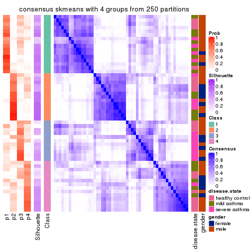
consensus_heatmap(res, k = 5)
consensus_heatmap(res, k = 6)
Heatmaps for the membership of samples in all partitions to see how consistent they are:
membership_heatmap(res, k = 2)
membership_heatmap(res, k = 3)
membership_heatmap(res, k = 4)
membership_heatmap(res, k = 5)
membership_heatmap(res, k = 6)
As soon as we have had the classes for columns, we can look for signatures which are significantly different between classes which can be candidate marks for certain classes. Following are the heatmaps for signatures.
Signature heatmaps where rows are scaled:
get_signatures(res, k = 2)
get_signatures(res, k = 3)
get_signatures(res, k = 4)
get_signatures(res, k = 5)
get_signatures(res, k = 6)
Signature heatmaps where rows are not scaled:
get_signatures(res, k = 2, scale_rows = FALSE)
get_signatures(res, k = 3, scale_rows = FALSE)
get_signatures(res, k = 4, scale_rows = FALSE)
get_signatures(res, k = 5, scale_rows = FALSE)
get_signatures(res, k = 6, scale_rows = FALSE)
Compare the overlap of signatures from different k:
compare_signatures(res)
get_signature() returns a data frame invisibly. TO get the list of signatures, the function
call should be assigned to a variable explicitly. In following code, if plot argument is set
to FALSE, no heatmap is plotted while only the differential analysis is performed.
# code only for demonstration
tb = get_signature(res, k = ..., plot = FALSE)
An example of the output of tb is:
#> which_row fdr mean_1 mean_2 scaled_mean_1 scaled_mean_2 km
#> 1 38 0.042760348 8.373488 9.131774 -0.5533452 0.5164555 1
#> 2 40 0.018707592 7.106213 8.469186 -0.6173731 0.5762149 1
#> 3 55 0.019134737 10.221463 11.207825 -0.6159697 0.5749050 1
#> 4 59 0.006059896 5.921854 7.869574 -0.6899429 0.6439467 1
#> 5 60 0.018055526 8.928898 10.211722 -0.6204761 0.5791110 1
#> 6 98 0.009384629 15.714769 14.887706 0.6635654 -0.6193277 2
...
The columns in tb are:
which_row: row indices corresponding to the input matrix.fdr: FDR for the differential test. mean_x: The mean value in group x.scaled_mean_x: The mean value in group x after rows are scaled.km: Row groups if k-means clustering is applied to rows.UMAP plot which shows how samples are separated.
dimension_reduction(res, k = 2, method = "UMAP")
dimension_reduction(res, k = 3, method = "UMAP")
dimension_reduction(res, k = 4, method = "UMAP")
dimension_reduction(res, k = 5, method = "UMAP")
dimension_reduction(res, k = 6, method = "UMAP")
Following heatmap shows how subgroups are split when increasing k:
collect_classes(res)
Test correlation between subgroups and known annotations. If the known annotation is numeric, one-way ANOVA test is applied, and if the known annotation is discrete, chi-squared contingency table test is applied.
test_to_known_factors(res)
#> n disease.state(p) gender(p) k
#> CV:skmeans 50 0.1017 0.0338 2
#> CV:skmeans 41 0.1645 0.0869 3
#> CV:skmeans 31 0.0565 0.5930 4
#> CV:skmeans 22 0.0305 0.4502 5
#> CV:skmeans 16 0.0147 0.0931 6
If matrix rows can be associated to genes, consider to use functional_enrichment(res,
...) to perform function enrichment for the signature genes. See this vignette for more detailed explanations.
The object with results only for a single top-value method and a single partition method can be extracted as:
res = res_list["CV", "pam"]
# you can also extract it by
# res = res_list["CV:pam"]
A summary of res and all the functions that can be applied to it:
res
#> A 'ConsensusPartition' object with k = 2, 3, 4, 5, 6.
#> On a matrix with 26819 rows and 54 columns.
#> Top rows (1000, 2000, 3000, 4000, 5000) are extracted by 'CV' method.
#> Subgroups are detected by 'pam' method.
#> Performed in total 1250 partitions by row resampling.
#> Best k for subgroups seems to be 2.
#>
#> Following methods can be applied to this 'ConsensusPartition' object:
#> [1] "cola_report" "collect_classes" "collect_plots"
#> [4] "collect_stats" "colnames" "compare_signatures"
#> [7] "consensus_heatmap" "dimension_reduction" "functional_enrichment"
#> [10] "get_anno_col" "get_anno" "get_classes"
#> [13] "get_consensus" "get_matrix" "get_membership"
#> [16] "get_param" "get_signatures" "get_stats"
#> [19] "is_best_k" "is_stable_k" "membership_heatmap"
#> [22] "ncol" "nrow" "plot_ecdf"
#> [25] "rownames" "select_partition_number" "show"
#> [28] "suggest_best_k" "test_to_known_factors"
collect_plots() function collects all the plots made from res for all k (number of partitions)
into one single page to provide an easy and fast comparison between different k.
collect_plots(res)
The plots are:
k and the heatmap of
predicted classes for each k.k.k.k.All the plots in panels can be made by individual functions and they are plotted later in this section.
select_partition_number() produces several plots showing different
statistics for choosing “optimized” k. There are following statistics:
k;k, the area increased is defined as \(A_k - A_{k-1}\).The detailed explanations of these statistics can be found in the cola vignette.
Generally speaking, lower PAC score, higher mean silhouette score or higher
concordance corresponds to better partition. Rand index and Jaccard index
measure how similar the current partition is compared to partition with k-1.
If they are too similar, we won't accept k is better than k-1.
select_partition_number(res)
The numeric values for all these statistics can be obtained by get_stats().
get_stats(res)
#> k 1-PAC mean_silhouette concordance area_increased Rand Jaccard
#> 2 2 0.185 0.560 0.803 0.4982 0.493 0.493
#> 3 3 0.251 0.474 0.739 0.3061 0.732 0.507
#> 4 4 0.377 0.336 0.621 0.1289 0.848 0.595
#> 5 5 0.504 0.451 0.692 0.0780 0.793 0.393
#> 6 6 0.576 0.362 0.558 0.0467 0.789 0.265
suggest_best_k() suggests the best \(k\) based on these statistics. The rules are as follows:
suggest_best_k(res)
#> [1] 2
Following shows the table of the partitions (You need to click the show/hide
code output link to see it). The membership matrix (columns with name p*)
is inferred by
clue::cl_consensus()
function with the SE method. Basically the value in the membership matrix
represents the probability to belong to a certain group. The finall class
label for an item is determined with the group with highest probability it
belongs to.
In get_classes() function, the entropy is calculated from the membership
matrix and the silhouette score is calculated from the consensus matrix.
cbind(get_classes(res, k = 2), get_membership(res, k = 2))
#> class entropy silhouette p1 p2
#> GSM665386 2 0.0672 0.7067 0.008 0.992
#> GSM665389 2 0.5178 0.6936 0.116 0.884
#> GSM665390 2 0.6343 0.6732 0.160 0.840
#> GSM665391 1 0.6048 0.7404 0.852 0.148
#> GSM665392 2 0.9754 0.4180 0.408 0.592
#> GSM665393 1 0.4161 0.7573 0.916 0.084
#> GSM665394 2 0.2778 0.7100 0.048 0.952
#> GSM665395 1 0.7883 0.6704 0.764 0.236
#> GSM665396 2 0.0376 0.7050 0.004 0.996
#> GSM665398 1 0.9087 0.5901 0.676 0.324
#> GSM665399 1 0.6247 0.7271 0.844 0.156
#> GSM665400 1 0.1843 0.7395 0.972 0.028
#> GSM665401 2 0.9993 0.2569 0.484 0.516
#> GSM665402 1 0.8207 0.6566 0.744 0.256
#> GSM665403 2 0.9393 0.2387 0.356 0.644
#> GSM665387 2 0.3733 0.7057 0.072 0.928
#> GSM665388 2 0.8499 0.6333 0.276 0.724
#> GSM665397 2 0.0376 0.7058 0.004 0.996
#> GSM665404 1 0.4939 0.7546 0.892 0.108
#> GSM665405 1 0.8267 0.6528 0.740 0.260
#> GSM665406 2 0.9977 -0.1560 0.472 0.528
#> GSM665407 2 0.8267 0.4274 0.260 0.740
#> GSM665409 1 0.0376 0.7375 0.996 0.004
#> GSM665413 2 0.4022 0.7030 0.080 0.920
#> GSM665416 1 0.5946 0.7277 0.856 0.144
#> GSM665417 1 0.3584 0.7569 0.932 0.068
#> GSM665418 1 0.2948 0.7339 0.948 0.052
#> GSM665419 1 0.0000 0.7398 1.000 0.000
#> GSM665421 1 0.8144 0.6573 0.748 0.252
#> GSM665422 1 1.0000 -0.2430 0.504 0.496
#> GSM665408 2 0.4431 0.6960 0.092 0.908
#> GSM665410 2 0.0376 0.7050 0.004 0.996
#> GSM665411 2 0.8861 0.5460 0.304 0.696
#> GSM665412 2 0.9795 -0.0766 0.416 0.584
#> GSM665414 2 0.3879 0.7043 0.076 0.924
#> GSM665415 1 0.9248 0.4130 0.660 0.340
#> GSM665420 2 0.4298 0.7057 0.088 0.912
#> GSM665424 1 0.0376 0.7375 0.996 0.004
#> GSM665425 1 0.8016 0.4887 0.756 0.244
#> GSM665429 2 0.9460 0.5532 0.364 0.636
#> GSM665430 1 0.8207 0.4661 0.744 0.256
#> GSM665431 2 0.8386 0.6421 0.268 0.732
#> GSM665432 1 0.1843 0.7509 0.972 0.028
#> GSM665433 1 0.9491 0.3719 0.632 0.368
#> GSM665434 1 0.4939 0.7529 0.892 0.108
#> GSM665435 2 0.9954 -0.0958 0.460 0.540
#> GSM665436 2 0.2043 0.7110 0.032 0.968
#> GSM665423 2 0.4022 0.7030 0.080 0.920
#> GSM665426 2 0.9686 0.1505 0.396 0.604
#> GSM665427 2 0.7528 0.6409 0.216 0.784
#> GSM665428 1 0.9795 -0.1480 0.584 0.416
#> GSM665437 2 0.8813 0.6200 0.300 0.700
#> GSM665438 2 0.7883 0.6313 0.236 0.764
#> GSM665439 1 0.1184 0.7472 0.984 0.016
cbind(get_classes(res, k = 3), get_membership(res, k = 3))
#> class entropy silhouette p1 p2 p3
#> GSM665386 2 0.5757 0.6130 0.152 0.792 0.056
#> GSM665389 2 0.3879 0.6350 0.000 0.848 0.152
#> GSM665390 2 0.5852 0.5692 0.044 0.776 0.180
#> GSM665391 1 0.3755 0.6625 0.872 0.120 0.008
#> GSM665392 3 0.4164 0.5552 0.008 0.144 0.848
#> GSM665393 1 0.4723 0.6367 0.824 0.016 0.160
#> GSM665394 2 0.3045 0.7069 0.064 0.916 0.020
#> GSM665395 1 0.6975 0.6304 0.732 0.144 0.124
#> GSM665396 2 0.1964 0.6867 0.000 0.944 0.056
#> GSM665398 1 0.9863 0.2154 0.416 0.300 0.284
#> GSM665399 1 0.4121 0.6179 0.832 0.000 0.168
#> GSM665400 3 0.6205 0.2800 0.336 0.008 0.656
#> GSM665401 3 0.9553 0.2371 0.272 0.244 0.484
#> GSM665402 1 0.4477 0.6764 0.864 0.068 0.068
#> GSM665403 2 0.5497 0.4895 0.292 0.708 0.000
#> GSM665387 2 0.1964 0.7071 0.056 0.944 0.000
#> GSM665388 2 0.7303 0.4066 0.076 0.680 0.244
#> GSM665397 2 0.0848 0.6984 0.008 0.984 0.008
#> GSM665404 1 0.2297 0.6737 0.944 0.036 0.020
#> GSM665405 1 0.7510 0.5368 0.692 0.184 0.124
#> GSM665406 2 0.6286 0.0221 0.464 0.536 0.000
#> GSM665407 2 0.9773 -0.1025 0.240 0.420 0.340
#> GSM665409 1 0.6079 0.2940 0.612 0.000 0.388
#> GSM665413 2 0.2804 0.7035 0.060 0.924 0.016
#> GSM665416 1 0.0237 0.6769 0.996 0.000 0.004
#> GSM665417 1 0.1643 0.6686 0.956 0.000 0.044
#> GSM665418 3 0.6180 0.2664 0.416 0.000 0.584
#> GSM665419 1 0.5882 0.2857 0.652 0.000 0.348
#> GSM665421 1 0.4750 0.6142 0.784 0.216 0.000
#> GSM665422 3 0.5677 0.5474 0.048 0.160 0.792
#> GSM665408 2 0.5945 0.5234 0.024 0.740 0.236
#> GSM665410 2 0.2860 0.6795 0.004 0.912 0.084
#> GSM665411 2 0.6705 0.5411 0.084 0.740 0.176
#> GSM665412 2 0.6168 0.0816 0.412 0.588 0.000
#> GSM665414 2 0.3551 0.6877 0.132 0.868 0.000
#> GSM665415 1 0.7605 0.4557 0.660 0.252 0.088
#> GSM665420 2 0.2448 0.7044 0.076 0.924 0.000
#> GSM665424 3 0.5968 0.2445 0.364 0.000 0.636
#> GSM665425 3 0.6363 0.4856 0.136 0.096 0.768
#> GSM665429 3 0.9522 -0.0190 0.188 0.404 0.408
#> GSM665430 3 0.5529 0.3930 0.296 0.000 0.704
#> GSM665431 3 0.8242 0.4183 0.092 0.336 0.572
#> GSM665432 1 0.4504 0.5661 0.804 0.000 0.196
#> GSM665433 3 0.8743 0.2123 0.372 0.116 0.512
#> GSM665434 1 0.0747 0.6818 0.984 0.016 0.000
#> GSM665435 1 0.6235 0.0844 0.564 0.436 0.000
#> GSM665436 2 0.3141 0.7029 0.068 0.912 0.020
#> GSM665423 2 0.2590 0.7050 0.072 0.924 0.004
#> GSM665426 2 0.7287 0.2047 0.408 0.560 0.032
#> GSM665427 3 0.5956 0.3679 0.004 0.324 0.672
#> GSM665428 3 0.9342 0.3249 0.336 0.180 0.484
#> GSM665437 3 0.7951 0.4980 0.104 0.260 0.636
#> GSM665438 3 0.6345 0.3636 0.004 0.400 0.596
#> GSM665439 1 0.5254 0.4646 0.736 0.000 0.264
cbind(get_classes(res, k = 4), get_membership(res, k = 4))
#> class entropy silhouette p1 p2 p3 p4
#> GSM665386 2 0.5496 0.45308 0.036 0.652 0.000 0.312
#> GSM665389 2 0.5901 0.30774 0.000 0.532 0.036 0.432
#> GSM665390 2 0.6117 0.42483 0.028 0.608 0.020 0.344
#> GSM665391 1 0.2635 0.65459 0.908 0.072 0.004 0.016
#> GSM665392 4 0.5792 0.11070 0.000 0.032 0.416 0.552
#> GSM665393 1 0.2958 0.57791 0.876 0.004 0.004 0.116
#> GSM665394 2 0.5670 0.52089 0.128 0.720 0.000 0.152
#> GSM665395 1 0.4283 0.62845 0.828 0.092 0.004 0.076
#> GSM665396 2 0.5137 0.34398 0.004 0.544 0.000 0.452
#> GSM665398 2 0.7877 -0.13262 0.312 0.388 0.000 0.300
#> GSM665399 1 0.4252 0.45448 0.744 0.000 0.004 0.252
#> GSM665400 1 0.7545 -0.24951 0.416 0.000 0.396 0.188
#> GSM665401 4 0.4607 0.27412 0.204 0.004 0.024 0.768
#> GSM665402 1 0.1936 0.64400 0.940 0.028 0.000 0.032
#> GSM665403 2 0.5272 0.29929 0.288 0.680 0.000 0.032
#> GSM665387 2 0.2125 0.56406 0.004 0.920 0.000 0.076
#> GSM665388 2 0.8069 0.33963 0.172 0.576 0.180 0.072
#> GSM665397 2 0.2345 0.56166 0.000 0.900 0.000 0.100
#> GSM665404 1 0.4715 0.57531 0.740 0.004 0.016 0.240
#> GSM665405 1 0.6134 0.20520 0.508 0.048 0.000 0.444
#> GSM665406 2 0.5792 -0.04981 0.416 0.552 0.000 0.032
#> GSM665407 4 0.5810 0.25855 0.072 0.256 0.000 0.672
#> GSM665409 1 0.7016 0.19474 0.540 0.000 0.140 0.320
#> GSM665413 2 0.0524 0.56192 0.004 0.988 0.000 0.008
#> GSM665416 1 0.2466 0.64671 0.900 0.000 0.096 0.004
#> GSM665417 1 0.4336 0.62775 0.812 0.000 0.128 0.060
#> GSM665418 3 0.4804 0.30545 0.276 0.000 0.708 0.016
#> GSM665419 1 0.5482 0.42980 0.608 0.000 0.368 0.024
#> GSM665421 1 0.4182 0.61993 0.796 0.180 0.000 0.024
#> GSM665422 3 0.6544 0.06889 0.024 0.052 0.612 0.312
#> GSM665408 4 0.5147 -0.15115 0.004 0.460 0.000 0.536
#> GSM665410 2 0.4830 0.34291 0.000 0.608 0.000 0.392
#> GSM665411 2 0.6687 0.38230 0.032 0.600 0.048 0.320
#> GSM665412 2 0.7424 -0.12453 0.408 0.424 0.000 0.168
#> GSM665414 2 0.4914 0.48754 0.208 0.748 0.000 0.044
#> GSM665415 1 0.5256 0.59781 0.752 0.172 0.072 0.004
#> GSM665420 2 0.0188 0.56340 0.004 0.996 0.000 0.000
#> GSM665424 4 0.7571 0.00636 0.244 0.000 0.272 0.484
#> GSM665425 3 0.6357 0.36786 0.108 0.088 0.728 0.076
#> GSM665429 4 0.8704 -0.03276 0.068 0.156 0.372 0.404
#> GSM665430 3 0.3688 0.25776 0.000 0.000 0.792 0.208
#> GSM665431 3 0.9037 0.23819 0.184 0.228 0.472 0.116
#> GSM665432 3 0.7726 0.05540 0.296 0.000 0.444 0.260
#> GSM665433 3 0.8169 0.18071 0.336 0.120 0.488 0.056
#> GSM665434 1 0.4449 0.63482 0.824 0.012 0.104 0.060
#> GSM665435 1 0.4673 0.51661 0.700 0.292 0.000 0.008
#> GSM665436 2 0.2019 0.55143 0.024 0.940 0.004 0.032
#> GSM665423 2 0.1411 0.56230 0.020 0.960 0.000 0.020
#> GSM665426 1 0.6663 0.17452 0.504 0.424 0.008 0.064
#> GSM665427 4 0.7091 0.20145 0.000 0.136 0.356 0.508
#> GSM665428 3 0.7490 -0.08610 0.068 0.044 0.480 0.408
#> GSM665437 3 0.2872 0.38331 0.012 0.084 0.896 0.008
#> GSM665438 3 0.5460 0.29246 0.000 0.340 0.632 0.028
#> GSM665439 1 0.5090 0.51038 0.660 0.000 0.324 0.016
cbind(get_classes(res, k = 5), get_membership(res, k = 5))
#> class entropy silhouette p1 p2 p3 p4 p5
#> GSM665386 4 0.4080 0.4374 0.020 0.252 0.000 0.728 0.000
#> GSM665389 4 0.1341 0.5532 0.000 0.056 0.000 0.944 0.000
#> GSM665390 4 0.4679 0.4905 0.000 0.220 0.056 0.720 0.004
#> GSM665391 1 0.3387 0.6801 0.852 0.100 0.000 0.028 0.020
#> GSM665392 4 0.4686 0.1873 0.000 0.004 0.012 0.588 0.396
#> GSM665393 1 0.4623 0.3244 0.664 0.000 0.000 0.032 0.304
#> GSM665394 4 0.6706 0.1215 0.256 0.328 0.000 0.416 0.000
#> GSM665395 1 0.6089 0.6099 0.696 0.104 0.072 0.012 0.116
#> GSM665396 4 0.2179 0.5494 0.000 0.112 0.000 0.888 0.000
#> GSM665398 2 0.5704 0.3282 0.024 0.616 0.000 0.060 0.300
#> GSM665399 3 0.7419 0.1378 0.320 0.000 0.348 0.028 0.304
#> GSM665400 5 0.4186 0.4050 0.184 0.000 0.004 0.044 0.768
#> GSM665401 4 0.8009 -0.1263 0.124 0.000 0.172 0.404 0.300
#> GSM665402 1 0.2873 0.6231 0.860 0.000 0.000 0.020 0.120
#> GSM665403 2 0.1965 0.7014 0.096 0.904 0.000 0.000 0.000
#> GSM665387 2 0.3796 0.4823 0.000 0.700 0.000 0.300 0.000
#> GSM665388 4 0.9851 0.0930 0.132 0.240 0.184 0.252 0.192
#> GSM665397 2 0.4060 0.3863 0.000 0.640 0.000 0.360 0.000
#> GSM665404 1 0.5423 0.5038 0.644 0.000 0.112 0.244 0.000
#> GSM665405 4 0.6237 0.3792 0.248 0.048 0.088 0.616 0.000
#> GSM665406 2 0.2074 0.6924 0.104 0.896 0.000 0.000 0.000
#> GSM665407 4 0.6207 0.4354 0.052 0.164 0.048 0.688 0.048
#> GSM665409 5 0.7261 -0.0379 0.288 0.000 0.252 0.028 0.432
#> GSM665413 2 0.1484 0.7315 0.008 0.944 0.000 0.048 0.000
#> GSM665416 1 0.0510 0.6619 0.984 0.000 0.000 0.000 0.016
#> GSM665417 1 0.3452 0.6365 0.820 0.000 0.148 0.000 0.032
#> GSM665418 5 0.5144 0.3936 0.304 0.000 0.064 0.000 0.632
#> GSM665419 1 0.5136 0.4342 0.660 0.000 0.080 0.000 0.260
#> GSM665421 1 0.3300 0.6716 0.792 0.204 0.000 0.004 0.000
#> GSM665422 4 0.4446 0.1165 0.000 0.000 0.004 0.520 0.476
#> GSM665408 4 0.4045 0.3386 0.000 0.356 0.000 0.644 0.000
#> GSM665410 4 0.2516 0.5332 0.000 0.140 0.000 0.860 0.000
#> GSM665411 4 0.6149 0.4680 0.016 0.240 0.060 0.644 0.040
#> GSM665412 2 0.4134 0.5229 0.044 0.760 0.000 0.196 0.000
#> GSM665414 1 0.6712 0.1826 0.416 0.324 0.000 0.260 0.000
#> GSM665415 1 0.4842 0.6695 0.768 0.136 0.004 0.044 0.048
#> GSM665420 2 0.2052 0.7205 0.004 0.912 0.000 0.080 0.004
#> GSM665424 3 0.6708 0.3437 0.096 0.000 0.544 0.056 0.304
#> GSM665425 5 0.0324 0.4819 0.000 0.004 0.004 0.000 0.992
#> GSM665429 3 0.1956 0.5766 0.000 0.008 0.928 0.052 0.012
#> GSM665430 3 0.2648 0.5145 0.000 0.000 0.848 0.000 0.152
#> GSM665431 5 0.3654 0.4519 0.108 0.020 0.000 0.036 0.836
#> GSM665432 3 0.2969 0.5000 0.128 0.000 0.852 0.000 0.020
#> GSM665433 5 0.7604 0.2947 0.248 0.120 0.020 0.084 0.528
#> GSM665434 1 0.2991 0.6510 0.848 0.004 0.140 0.004 0.004
#> GSM665435 1 0.4675 0.6612 0.764 0.144 0.020 0.072 0.000
#> GSM665436 2 0.0290 0.7299 0.008 0.992 0.000 0.000 0.000
#> GSM665423 2 0.2102 0.7214 0.012 0.916 0.000 0.068 0.004
#> GSM665426 1 0.6038 0.5399 0.584 0.300 0.000 0.100 0.016
#> GSM665427 3 0.8054 0.0248 0.000 0.088 0.332 0.312 0.268
#> GSM665428 3 0.2535 0.5793 0.032 0.000 0.908 0.028 0.032
#> GSM665437 5 0.3876 0.3077 0.000 0.000 0.316 0.000 0.684
#> GSM665438 5 0.5401 0.3932 0.000 0.244 0.072 0.016 0.668
#> GSM665439 1 0.4714 0.5333 0.724 0.000 0.084 0.000 0.192
cbind(get_classes(res, k = 6), get_membership(res, k = 6))
#> class entropy silhouette p1 p2 p3 p4 p5 p6
#> GSM665386 4 0.5594 0.50804 0.000 0.220 0.016 0.600 0.000 0.164
#> GSM665389 6 0.3309 0.56148 0.000 0.000 0.000 0.280 0.000 0.720
#> GSM665390 4 0.6418 0.33957 0.036 0.196 0.000 0.480 0.000 0.288
#> GSM665391 3 0.4383 0.41432 0.032 0.016 0.708 0.240 0.000 0.004
#> GSM665392 5 0.6189 -0.12215 0.004 0.000 0.000 0.300 0.404 0.292
#> GSM665393 3 0.1555 0.44795 0.000 0.004 0.932 0.004 0.000 0.060
#> GSM665394 4 0.5113 0.61613 0.000 0.288 0.036 0.628 0.000 0.048
#> GSM665395 3 0.7789 0.26268 0.060 0.112 0.392 0.320 0.000 0.116
#> GSM665396 6 0.4277 0.48865 0.000 0.028 0.000 0.356 0.000 0.616
#> GSM665398 2 0.5592 0.28416 0.000 0.564 0.328 0.044 0.000 0.064
#> GSM665399 3 0.3831 0.39552 0.092 0.000 0.804 0.024 0.000 0.080
#> GSM665400 3 0.4317 0.20849 0.000 0.000 0.688 0.000 0.252 0.060
#> GSM665401 3 0.6520 0.08671 0.056 0.000 0.428 0.120 0.004 0.392
#> GSM665402 3 0.3580 0.43739 0.028 0.004 0.772 0.196 0.000 0.000
#> GSM665403 2 0.1714 0.69124 0.000 0.908 0.000 0.092 0.000 0.000
#> GSM665387 4 0.3804 0.49341 0.000 0.424 0.000 0.576 0.000 0.000
#> GSM665388 4 0.5706 0.55135 0.008 0.216 0.012 0.616 0.144 0.004
#> GSM665397 4 0.4209 0.53380 0.000 0.384 0.000 0.596 0.000 0.020
#> GSM665404 3 0.6838 0.29156 0.148 0.000 0.500 0.124 0.000 0.228
#> GSM665405 6 0.4377 0.54607 0.012 0.072 0.168 0.004 0.000 0.744
#> GSM665406 2 0.1910 0.68432 0.000 0.892 0.000 0.108 0.000 0.000
#> GSM665407 6 0.5081 0.52679 0.012 0.084 0.140 0.044 0.000 0.720
#> GSM665409 3 0.6884 0.21607 0.248 0.000 0.528 0.028 0.076 0.120
#> GSM665413 2 0.1075 0.67756 0.000 0.952 0.000 0.048 0.000 0.000
#> GSM665416 3 0.4193 0.40220 0.072 0.004 0.736 0.188 0.000 0.000
#> GSM665417 1 0.4283 0.64107 0.740 0.000 0.180 0.068 0.012 0.000
#> GSM665418 1 0.3756 0.42498 0.600 0.000 0.000 0.000 0.400 0.000
#> GSM665419 1 0.5204 0.69073 0.688 0.000 0.096 0.052 0.164 0.000
#> GSM665421 3 0.5525 0.38136 0.028 0.120 0.620 0.232 0.000 0.000
#> GSM665422 5 0.5116 -0.12684 0.008 0.000 0.000 0.060 0.500 0.432
#> GSM665408 6 0.3371 0.48015 0.000 0.292 0.000 0.000 0.000 0.708
#> GSM665410 6 0.4007 0.58555 0.000 0.052 0.000 0.220 0.000 0.728
#> GSM665411 6 0.8618 -0.14103 0.108 0.180 0.104 0.280 0.008 0.320
#> GSM665412 2 0.2969 0.51450 0.000 0.776 0.000 0.000 0.000 0.224
#> GSM665414 4 0.5748 0.57654 0.000 0.288 0.096 0.576 0.000 0.040
#> GSM665415 3 0.7236 -0.04504 0.032 0.120 0.412 0.376 0.048 0.012
#> GSM665420 2 0.2402 0.57281 0.000 0.856 0.000 0.140 0.000 0.004
#> GSM665424 3 0.8405 -0.11114 0.164 0.000 0.300 0.208 0.060 0.268
#> GSM665425 5 0.4610 0.31274 0.008 0.036 0.192 0.000 0.728 0.036
#> GSM665429 5 0.7785 0.25228 0.260 0.000 0.004 0.216 0.308 0.212
#> GSM665430 5 0.7600 0.26232 0.240 0.000 0.004 0.172 0.376 0.208
#> GSM665431 5 0.6111 0.10276 0.000 0.004 0.396 0.068 0.472 0.060
#> GSM665432 1 0.0935 0.48098 0.964 0.000 0.000 0.000 0.032 0.004
#> GSM665433 5 0.6399 0.10087 0.128 0.000 0.072 0.276 0.524 0.000
#> GSM665434 1 0.5544 0.36141 0.556 0.004 0.288 0.152 0.000 0.000
#> GSM665435 4 0.7052 -0.00549 0.112 0.128 0.348 0.408 0.000 0.004
#> GSM665436 2 0.0260 0.69612 0.000 0.992 0.000 0.008 0.000 0.000
#> GSM665423 2 0.3133 0.38088 0.000 0.780 0.008 0.212 0.000 0.000
#> GSM665426 4 0.7910 0.19915 0.028 0.316 0.236 0.328 0.008 0.084
#> GSM665427 6 0.7973 -0.12246 0.148 0.028 0.000 0.204 0.272 0.348
#> GSM665428 5 0.7861 0.25330 0.256 0.000 0.008 0.212 0.312 0.212
#> GSM665437 5 0.0291 0.32254 0.004 0.000 0.000 0.000 0.992 0.004
#> GSM665438 5 0.3713 0.27885 0.000 0.284 0.000 0.004 0.704 0.008
#> GSM665439 1 0.5764 0.68606 0.648 0.000 0.132 0.064 0.152 0.004
Heatmaps for the consensus matrix. It visualizes the probability of two samples to be in a same group.
consensus_heatmap(res, k = 2)
consensus_heatmap(res, k = 3)
consensus_heatmap(res, k = 4)
consensus_heatmap(res, k = 5)
consensus_heatmap(res, k = 6)
Heatmaps for the membership of samples in all partitions to see how consistent they are:
membership_heatmap(res, k = 2)
membership_heatmap(res, k = 3)
membership_heatmap(res, k = 4)
membership_heatmap(res, k = 5)
membership_heatmap(res, k = 6)
As soon as we have had the classes for columns, we can look for signatures which are significantly different between classes which can be candidate marks for certain classes. Following are the heatmaps for signatures.
Signature heatmaps where rows are scaled:
get_signatures(res, k = 2)
get_signatures(res, k = 3)
get_signatures(res, k = 4)

get_signatures(res, k = 5)
get_signatures(res, k = 6)
Signature heatmaps where rows are not scaled:
get_signatures(res, k = 2, scale_rows = FALSE)
get_signatures(res, k = 3, scale_rows = FALSE)
get_signatures(res, k = 4, scale_rows = FALSE)
get_signatures(res, k = 5, scale_rows = FALSE)
get_signatures(res, k = 6, scale_rows = FALSE)
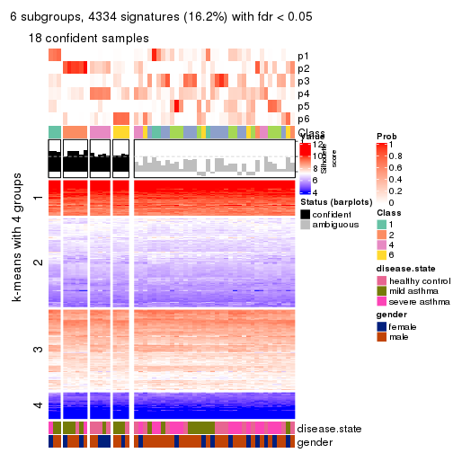
Compare the overlap of signatures from different k:
compare_signatures(res)
get_signature() returns a data frame invisibly. TO get the list of signatures, the function
call should be assigned to a variable explicitly. In following code, if plot argument is set
to FALSE, no heatmap is plotted while only the differential analysis is performed.
# code only for demonstration
tb = get_signature(res, k = ..., plot = FALSE)
An example of the output of tb is:
#> which_row fdr mean_1 mean_2 scaled_mean_1 scaled_mean_2 km
#> 1 38 0.042760348 8.373488 9.131774 -0.5533452 0.5164555 1
#> 2 40 0.018707592 7.106213 8.469186 -0.6173731 0.5762149 1
#> 3 55 0.019134737 10.221463 11.207825 -0.6159697 0.5749050 1
#> 4 59 0.006059896 5.921854 7.869574 -0.6899429 0.6439467 1
#> 5 60 0.018055526 8.928898 10.211722 -0.6204761 0.5791110 1
#> 6 98 0.009384629 15.714769 14.887706 0.6635654 -0.6193277 2
...
The columns in tb are:
which_row: row indices corresponding to the input matrix.fdr: FDR for the differential test. mean_x: The mean value in group x.scaled_mean_x: The mean value in group x after rows are scaled.km: Row groups if k-means clustering is applied to rows.UMAP plot which shows how samples are separated.
dimension_reduction(res, k = 2, method = "UMAP")
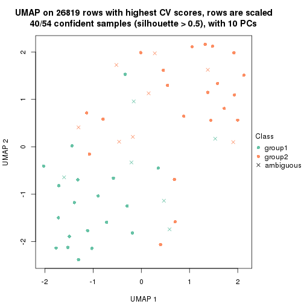
dimension_reduction(res, k = 3, method = "UMAP")
dimension_reduction(res, k = 4, method = "UMAP")
dimension_reduction(res, k = 5, method = "UMAP")
dimension_reduction(res, k = 6, method = "UMAP")
Following heatmap shows how subgroups are split when increasing k:
collect_classes(res)
Test correlation between subgroups and known annotations. If the known annotation is numeric, one-way ANOVA test is applied, and if the known annotation is discrete, chi-squared contingency table test is applied.
test_to_known_factors(res)
#> n disease.state(p) gender(p) k
#> CV:pam 40 0.585 0.00158 2
#> CV:pam 29 0.979 0.00577 3
#> CV:pam 19 0.845 0.18706 4
#> CV:pam 25 0.140 0.88389 5
#> CV:pam 18 0.176 0.71041 6
If matrix rows can be associated to genes, consider to use functional_enrichment(res,
...) to perform function enrichment for the signature genes. See this vignette for more detailed explanations.
The object with results only for a single top-value method and a single partition method can be extracted as:
res = res_list["CV", "mclust"]
# you can also extract it by
# res = res_list["CV:mclust"]
A summary of res and all the functions that can be applied to it:
res
#> A 'ConsensusPartition' object with k = 2, 3, 4, 5, 6.
#> On a matrix with 26819 rows and 54 columns.
#> Top rows (1000, 2000, 3000, 4000, 5000) are extracted by 'CV' method.
#> Subgroups are detected by 'mclust' method.
#> Performed in total 1250 partitions by row resampling.
#> Best k for subgroups seems to be 2.
#>
#> Following methods can be applied to this 'ConsensusPartition' object:
#> [1] "cola_report" "collect_classes" "collect_plots"
#> [4] "collect_stats" "colnames" "compare_signatures"
#> [7] "consensus_heatmap" "dimension_reduction" "functional_enrichment"
#> [10] "get_anno_col" "get_anno" "get_classes"
#> [13] "get_consensus" "get_matrix" "get_membership"
#> [16] "get_param" "get_signatures" "get_stats"
#> [19] "is_best_k" "is_stable_k" "membership_heatmap"
#> [22] "ncol" "nrow" "plot_ecdf"
#> [25] "rownames" "select_partition_number" "show"
#> [28] "suggest_best_k" "test_to_known_factors"
collect_plots() function collects all the plots made from res for all k (number of partitions)
into one single page to provide an easy and fast comparison between different k.
collect_plots(res)
The plots are:
k and the heatmap of
predicted classes for each k.k.k.k.All the plots in panels can be made by individual functions and they are plotted later in this section.
select_partition_number() produces several plots showing different
statistics for choosing “optimized” k. There are following statistics:
k;k, the area increased is defined as \(A_k - A_{k-1}\).The detailed explanations of these statistics can be found in the cola vignette.
Generally speaking, lower PAC score, higher mean silhouette score or higher
concordance corresponds to better partition. Rand index and Jaccard index
measure how similar the current partition is compared to partition with k-1.
If they are too similar, we won't accept k is better than k-1.
select_partition_number(res)
The numeric values for all these statistics can be obtained by get_stats().
get_stats(res)
#> k 1-PAC mean_silhouette concordance area_increased Rand Jaccard
#> 2 2 0.424 0.835 0.833 0.3955 0.547 0.547
#> 3 3 0.129 0.196 0.601 0.2893 0.808 0.685
#> 4 4 0.180 0.379 0.612 0.2646 0.581 0.271
#> 5 5 0.362 0.417 0.653 0.1706 0.881 0.605
#> 6 6 0.619 0.489 0.704 0.0818 0.925 0.689
suggest_best_k() suggests the best \(k\) based on these statistics. The rules are as follows:
suggest_best_k(res)
#> [1] 2
Following shows the table of the partitions (You need to click the show/hide
code output link to see it). The membership matrix (columns with name p*)
is inferred by
clue::cl_consensus()
function with the SE method. Basically the value in the membership matrix
represents the probability to belong to a certain group. The finall class
label for an item is determined with the group with highest probability it
belongs to.
In get_classes() function, the entropy is calculated from the membership
matrix and the silhouette score is calculated from the consensus matrix.
cbind(get_classes(res, k = 2), get_membership(res, k = 2))
#> class entropy silhouette p1 p2
#> GSM665386 2 0.1633 0.782 0.024 0.976
#> GSM665389 2 0.0000 0.761 0.000 1.000
#> GSM665390 2 0.7376 0.901 0.208 0.792
#> GSM665391 1 0.9710 0.161 0.600 0.400
#> GSM665392 2 0.7453 0.902 0.212 0.788
#> GSM665393 1 0.7674 0.690 0.776 0.224
#> GSM665394 2 0.0672 0.753 0.008 0.992
#> GSM665395 2 0.8661 0.811 0.288 0.712
#> GSM665396 2 0.0672 0.753 0.008 0.992
#> GSM665398 2 0.7528 0.900 0.216 0.784
#> GSM665399 1 0.1633 0.883 0.976 0.024
#> GSM665400 1 0.8499 0.588 0.724 0.276
#> GSM665401 2 0.7453 0.902 0.212 0.788
#> GSM665402 2 0.9393 0.684 0.356 0.644
#> GSM665403 2 0.7528 0.900 0.216 0.784
#> GSM665387 2 0.1633 0.782 0.024 0.976
#> GSM665388 2 0.7453 0.902 0.212 0.788
#> GSM665397 2 0.7453 0.902 0.212 0.788
#> GSM665404 1 0.5842 0.802 0.860 0.140
#> GSM665405 2 0.7453 0.902 0.212 0.788
#> GSM665406 2 0.0376 0.764 0.004 0.996
#> GSM665407 2 0.7453 0.902 0.212 0.788
#> GSM665409 1 0.0938 0.886 0.988 0.012
#> GSM665413 2 0.2043 0.788 0.032 0.968
#> GSM665416 1 0.7674 0.690 0.776 0.224
#> GSM665417 1 0.0938 0.886 0.988 0.012
#> GSM665418 1 0.4815 0.834 0.896 0.104
#> GSM665419 1 0.0938 0.886 0.988 0.012
#> GSM665421 2 0.8661 0.811 0.288 0.712
#> GSM665422 2 0.7745 0.890 0.228 0.772
#> GSM665408 2 0.6531 0.881 0.168 0.832
#> GSM665410 2 0.0672 0.753 0.008 0.992
#> GSM665411 2 0.7453 0.902 0.212 0.788
#> GSM665412 2 0.0672 0.753 0.008 0.992
#> GSM665414 2 0.6531 0.881 0.168 0.832
#> GSM665415 2 0.7453 0.902 0.212 0.788
#> GSM665420 2 0.7453 0.902 0.212 0.788
#> GSM665424 1 0.0938 0.886 0.988 0.012
#> GSM665425 2 0.7453 0.902 0.212 0.788
#> GSM665429 1 0.4815 0.833 0.896 0.104
#> GSM665430 1 0.0938 0.886 0.988 0.012
#> GSM665431 2 0.7453 0.902 0.212 0.788
#> GSM665432 1 0.0938 0.886 0.988 0.012
#> GSM665433 2 0.7528 0.899 0.216 0.784
#> GSM665434 1 0.0938 0.886 0.988 0.012
#> GSM665435 2 0.7453 0.902 0.212 0.788
#> GSM665436 2 0.7453 0.902 0.212 0.788
#> GSM665423 2 0.7453 0.902 0.212 0.788
#> GSM665426 2 0.7453 0.902 0.212 0.788
#> GSM665427 2 0.8081 0.870 0.248 0.752
#> GSM665428 1 0.0938 0.886 0.988 0.012
#> GSM665437 1 0.2948 0.870 0.948 0.052
#> GSM665438 2 0.7453 0.902 0.212 0.788
#> GSM665439 1 0.0938 0.886 0.988 0.012
cbind(get_classes(res, k = 3), get_membership(res, k = 3))
#> class entropy silhouette p1 p2 p3
#> GSM665386 2 0.3267 0.4839 0.044 0.912 0.044
#> GSM665389 2 0.3589 0.4865 0.048 0.900 0.052
#> GSM665390 2 0.8190 0.2234 0.432 0.496 0.072
#> GSM665391 1 0.7433 -0.0359 0.660 0.268 0.072
#> GSM665392 2 0.9409 0.1561 0.256 0.508 0.236
#> GSM665393 1 0.8753 -0.3364 0.588 0.188 0.224
#> GSM665394 2 0.4575 0.4053 0.004 0.812 0.184
#> GSM665395 3 0.9678 0.0000 0.364 0.216 0.420
#> GSM665396 2 0.4342 0.4408 0.024 0.856 0.120
#> GSM665398 2 0.8345 0.2853 0.096 0.560 0.344
#> GSM665399 1 0.6228 0.0611 0.672 0.012 0.316
#> GSM665400 1 0.9171 -0.6313 0.476 0.152 0.372
#> GSM665401 1 0.9998 -0.6362 0.344 0.328 0.328
#> GSM665402 1 0.8826 -0.2425 0.472 0.412 0.116
#> GSM665403 2 0.8452 0.2877 0.104 0.556 0.340
#> GSM665387 2 0.2313 0.4936 0.024 0.944 0.032
#> GSM665388 2 0.6934 0.4659 0.348 0.624 0.028
#> GSM665397 2 0.7477 0.5143 0.284 0.648 0.068
#> GSM665404 1 0.7562 -0.0352 0.692 0.160 0.148
#> GSM665405 2 0.8929 -0.0124 0.416 0.460 0.124
#> GSM665406 2 0.3886 0.4711 0.024 0.880 0.096
#> GSM665407 2 0.9625 -0.1862 0.348 0.440 0.212
#> GSM665409 1 0.5977 0.1445 0.728 0.020 0.252
#> GSM665413 2 0.4146 0.4838 0.044 0.876 0.080
#> GSM665416 1 0.8129 -0.1555 0.632 0.244 0.124
#> GSM665417 1 0.0661 0.3597 0.988 0.008 0.004
#> GSM665418 1 0.2682 0.3173 0.920 0.076 0.004
#> GSM665419 1 0.1315 0.3579 0.972 0.008 0.020
#> GSM665421 1 0.8464 -0.2325 0.464 0.448 0.088
#> GSM665422 1 0.7755 -0.2925 0.492 0.460 0.048
#> GSM665408 2 0.7266 0.4354 0.232 0.688 0.080
#> GSM665410 2 0.4629 0.4030 0.004 0.808 0.188
#> GSM665411 2 0.8376 0.2587 0.420 0.496 0.084
#> GSM665412 2 0.4110 0.4235 0.004 0.844 0.152
#> GSM665414 2 0.5268 0.5337 0.212 0.776 0.012
#> GSM665415 1 0.7997 -0.3184 0.472 0.468 0.060
#> GSM665420 2 0.8964 0.4524 0.296 0.544 0.160
#> GSM665424 1 0.7056 -0.0732 0.572 0.024 0.404
#> GSM665425 2 0.7104 0.4424 0.360 0.608 0.032
#> GSM665429 1 0.7801 -0.2533 0.520 0.052 0.428
#> GSM665430 1 0.6057 0.2467 0.760 0.044 0.196
#> GSM665431 2 0.9608 0.2446 0.300 0.468 0.232
#> GSM665432 1 0.1877 0.3561 0.956 0.032 0.012
#> GSM665433 2 0.7672 0.2195 0.468 0.488 0.044
#> GSM665434 1 0.0424 0.3603 0.992 0.008 0.000
#> GSM665435 2 0.6587 0.4666 0.352 0.632 0.016
#> GSM665436 2 0.9065 0.4400 0.316 0.524 0.160
#> GSM665423 2 0.8882 0.4554 0.316 0.540 0.144
#> GSM665426 2 0.6952 0.4476 0.376 0.600 0.024
#> GSM665427 2 0.8857 0.3100 0.344 0.524 0.132
#> GSM665428 1 0.6753 -0.0129 0.596 0.016 0.388
#> GSM665437 1 0.5237 0.2930 0.824 0.056 0.120
#> GSM665438 2 0.9125 0.4306 0.320 0.516 0.164
#> GSM665439 1 0.1315 0.3579 0.972 0.008 0.020
cbind(get_classes(res, k = 4), get_membership(res, k = 4))
#> class entropy silhouette p1 p2 p3 p4
#> GSM665386 4 0.5733 0.3775 0.240 0.056 0.008 0.696
#> GSM665389 4 0.6887 0.3633 0.132 0.308 0.000 0.560
#> GSM665390 1 0.6002 0.2684 0.524 0.032 0.004 0.440
#> GSM665391 1 0.4944 0.5712 0.744 0.032 0.004 0.220
#> GSM665392 3 0.6969 0.4238 0.120 0.040 0.660 0.180
#> GSM665393 1 0.7977 0.0646 0.468 0.012 0.232 0.288
#> GSM665394 4 0.0000 0.5636 0.000 0.000 0.000 1.000
#> GSM665395 3 0.4855 0.6202 0.352 0.000 0.644 0.004
#> GSM665396 4 0.1854 0.5641 0.012 0.048 0.000 0.940
#> GSM665398 3 0.4238 0.3796 0.028 0.000 0.796 0.176
#> GSM665399 3 0.5815 0.5400 0.428 0.000 0.540 0.032
#> GSM665400 3 0.5510 0.5977 0.376 0.000 0.600 0.024
#> GSM665401 3 0.5848 0.5799 0.228 0.000 0.684 0.088
#> GSM665402 4 0.7117 -0.1519 0.400 0.028 0.064 0.508
#> GSM665403 3 0.4709 0.3486 0.024 0.008 0.768 0.200
#> GSM665387 4 0.4946 0.4695 0.004 0.308 0.008 0.680
#> GSM665388 2 0.8699 0.4239 0.216 0.516 0.108 0.160
#> GSM665397 2 0.7085 0.2344 0.200 0.568 0.000 0.232
#> GSM665404 1 0.6756 0.2980 0.564 0.004 0.096 0.336
#> GSM665405 4 0.6928 -0.1368 0.400 0.028 0.052 0.520
#> GSM665406 4 0.5738 0.2463 0.000 0.432 0.028 0.540
#> GSM665407 3 0.8035 0.2460 0.352 0.004 0.364 0.280
#> GSM665409 1 0.6703 -0.3275 0.544 0.004 0.368 0.084
#> GSM665413 2 0.6497 -0.1847 0.052 0.496 0.008 0.444
#> GSM665416 1 0.7134 0.3180 0.532 0.024 0.076 0.368
#> GSM665417 1 0.0000 0.5661 1.000 0.000 0.000 0.000
#> GSM665418 1 0.2383 0.5835 0.924 0.024 0.004 0.048
#> GSM665419 1 0.0469 0.5616 0.988 0.000 0.012 0.000
#> GSM665421 1 0.5964 0.3664 0.568 0.028 0.008 0.396
#> GSM665422 1 0.4444 0.5670 0.788 0.020 0.008 0.184
#> GSM665408 4 0.7028 0.3970 0.200 0.032 0.124 0.644
#> GSM665410 4 0.0524 0.5632 0.008 0.004 0.000 0.988
#> GSM665411 1 0.5583 0.4854 0.648 0.024 0.008 0.320
#> GSM665412 4 0.0000 0.5636 0.000 0.000 0.000 1.000
#> GSM665414 4 0.7597 0.3109 0.176 0.312 0.008 0.504
#> GSM665415 1 0.3932 0.5978 0.832 0.020 0.008 0.140
#> GSM665420 2 0.3821 0.4193 0.040 0.840 0.000 0.120
#> GSM665424 3 0.4761 0.6126 0.372 0.000 0.628 0.000
#> GSM665425 2 0.6952 0.2207 0.388 0.508 0.004 0.100
#> GSM665429 3 0.4761 0.6126 0.372 0.000 0.628 0.000
#> GSM665430 2 0.6894 0.1738 0.376 0.512 0.112 0.000
#> GSM665431 2 0.8362 0.2044 0.336 0.460 0.156 0.048
#> GSM665432 1 0.2392 0.5334 0.924 0.052 0.016 0.008
#> GSM665433 1 0.4476 0.5887 0.800 0.032 0.008 0.160
#> GSM665434 1 0.0895 0.5743 0.976 0.000 0.004 0.020
#> GSM665435 1 0.7533 -0.1617 0.428 0.408 0.004 0.160
#> GSM665436 2 0.4898 0.4180 0.104 0.780 0.000 0.116
#> GSM665423 2 0.6418 0.3347 0.216 0.644 0.000 0.140
#> GSM665426 1 0.5258 0.5319 0.732 0.040 0.008 0.220
#> GSM665427 2 0.8988 0.3086 0.284 0.456 0.132 0.128
#> GSM665428 3 0.6253 0.5764 0.372 0.064 0.564 0.000
#> GSM665437 2 0.5080 0.2262 0.420 0.576 0.004 0.000
#> GSM665438 2 0.4963 0.4882 0.120 0.792 0.012 0.076
#> GSM665439 1 0.0804 0.5649 0.980 0.000 0.012 0.008
cbind(get_classes(res, k = 5), get_membership(res, k = 5))
#> class entropy silhouette p1 p2 p3 p4 p5
#> GSM665386 4 0.3511 0.53366 0.072 0.068 0.012 0.848 0.000
#> GSM665389 4 0.6103 0.10487 0.048 0.364 0.000 0.544 0.044
#> GSM665390 1 0.5925 0.51092 0.624 0.024 0.000 0.260 0.092
#> GSM665391 1 0.3956 0.72453 0.820 0.016 0.000 0.096 0.068
#> GSM665392 3 0.5248 0.62507 0.008 0.044 0.728 0.180 0.040
#> GSM665393 4 0.8097 0.30163 0.204 0.000 0.112 0.352 0.332
#> GSM665394 4 0.0609 0.55101 0.000 0.000 0.000 0.980 0.020
#> GSM665395 3 0.2636 0.75513 0.092 0.008 0.888 0.008 0.004
#> GSM665396 4 0.1569 0.53981 0.008 0.044 0.000 0.944 0.004
#> GSM665398 3 0.4700 0.63983 0.004 0.016 0.744 0.196 0.040
#> GSM665399 3 0.6199 0.65249 0.164 0.008 0.672 0.064 0.092
#> GSM665400 3 0.5555 0.70770 0.112 0.020 0.740 0.048 0.080
#> GSM665401 3 0.3544 0.73512 0.064 0.012 0.852 0.068 0.004
#> GSM665402 4 0.6943 0.37821 0.196 0.004 0.012 0.460 0.328
#> GSM665403 3 0.4632 0.64483 0.004 0.016 0.752 0.188 0.040
#> GSM665387 4 0.4373 0.43662 0.004 0.196 0.004 0.756 0.040
#> GSM665388 2 0.6818 0.26370 0.036 0.648 0.084 0.152 0.080
#> GSM665397 2 0.5883 0.39282 0.080 0.652 0.000 0.228 0.040
#> GSM665404 4 0.7453 0.24930 0.300 0.000 0.032 0.372 0.296
#> GSM665405 4 0.6993 0.41998 0.172 0.012 0.016 0.508 0.292
#> GSM665406 4 0.5587 0.05101 0.004 0.412 0.008 0.532 0.044
#> GSM665407 4 0.7963 -0.00393 0.112 0.012 0.328 0.428 0.120
#> GSM665409 3 0.8550 0.36830 0.228 0.028 0.404 0.100 0.240
#> GSM665413 2 0.5429 -0.01063 0.008 0.488 0.000 0.464 0.040
#> GSM665416 4 0.7377 0.26414 0.272 0.004 0.020 0.380 0.324
#> GSM665417 1 0.2029 0.75124 0.932 0.004 0.012 0.016 0.036
#> GSM665418 1 0.4055 0.73164 0.824 0.108 0.012 0.032 0.024
#> GSM665419 1 0.3078 0.68775 0.848 0.004 0.016 0.000 0.132
#> GSM665421 1 0.5511 0.52293 0.644 0.020 0.004 0.284 0.048
#> GSM665422 1 0.5258 0.68465 0.720 0.132 0.004 0.132 0.012
#> GSM665408 4 0.4303 0.53867 0.032 0.044 0.076 0.824 0.024
#> GSM665410 4 0.1341 0.55260 0.000 0.000 0.000 0.944 0.056
#> GSM665411 1 0.4739 0.66750 0.724 0.056 0.000 0.212 0.008
#> GSM665412 4 0.0798 0.54295 0.000 0.016 0.000 0.976 0.008
#> GSM665414 4 0.6102 0.00681 0.072 0.420 0.000 0.488 0.020
#> GSM665415 1 0.2228 0.76386 0.916 0.020 0.000 0.056 0.008
#> GSM665420 2 0.5440 0.17361 0.012 0.664 0.000 0.084 0.240
#> GSM665424 3 0.2645 0.74863 0.096 0.012 0.884 0.000 0.008
#> GSM665425 2 0.6571 0.05767 0.120 0.652 0.012 0.076 0.140
#> GSM665429 3 0.2928 0.75278 0.096 0.012 0.876 0.008 0.008
#> GSM665430 5 0.7239 0.00000 0.136 0.404 0.056 0.000 0.404
#> GSM665431 2 0.8199 -0.36927 0.056 0.432 0.196 0.036 0.280
#> GSM665432 1 0.6274 0.50097 0.640 0.084 0.024 0.024 0.228
#> GSM665433 1 0.3731 0.75983 0.840 0.072 0.012 0.072 0.004
#> GSM665434 1 0.1843 0.75173 0.940 0.004 0.012 0.012 0.032
#> GSM665435 2 0.5649 0.35364 0.136 0.700 0.008 0.136 0.020
#> GSM665436 2 0.3256 0.38925 0.024 0.864 0.000 0.084 0.028
#> GSM665423 2 0.4411 0.40232 0.116 0.764 0.000 0.120 0.000
#> GSM665426 1 0.4093 0.72334 0.800 0.068 0.000 0.124 0.008
#> GSM665427 2 0.8930 -0.46402 0.084 0.404 0.160 0.092 0.260
#> GSM665428 3 0.3291 0.74015 0.100 0.016 0.856 0.000 0.028
#> GSM665437 2 0.6580 -0.82557 0.148 0.468 0.012 0.000 0.372
#> GSM665438 2 0.5919 -0.15970 0.020 0.612 0.016 0.048 0.304
#> GSM665439 1 0.3312 0.68395 0.840 0.012 0.016 0.000 0.132
cbind(get_classes(res, k = 6), get_membership(res, k = 6))
#> class entropy silhouette p1 p2 p3 p4 p5 p6
#> GSM665386 4 0.0935 0.5526 0.004 0.032 0.000 0.964 0.000 0.000
#> GSM665389 4 0.4256 -0.3680 0.016 0.464 0.000 0.520 0.000 0.000
#> GSM665390 1 0.3146 0.6623 0.848 0.012 0.000 0.080 0.000 0.060
#> GSM665391 1 0.2100 0.6982 0.916 0.016 0.000 0.032 0.000 0.036
#> GSM665392 3 0.4914 0.6694 0.000 0.036 0.680 0.228 0.056 0.000
#> GSM665393 4 0.8306 0.2883 0.196 0.072 0.148 0.372 0.000 0.212
#> GSM665394 4 0.0508 0.5645 0.000 0.004 0.000 0.984 0.000 0.012
#> GSM665395 3 0.0790 0.7477 0.000 0.032 0.968 0.000 0.000 0.000
#> GSM665396 4 0.0858 0.5505 0.004 0.028 0.000 0.968 0.000 0.000
#> GSM665398 3 0.4879 0.6374 0.000 0.032 0.656 0.276 0.032 0.004
#> GSM665399 3 0.5631 0.5753 0.020 0.108 0.680 0.036 0.004 0.152
#> GSM665400 3 0.3261 0.6993 0.016 0.020 0.852 0.024 0.000 0.088
#> GSM665401 3 0.3617 0.7366 0.004 0.032 0.828 0.108 0.016 0.012
#> GSM665402 4 0.7304 0.2422 0.304 0.072 0.020 0.416 0.000 0.188
#> GSM665403 3 0.4755 0.6652 0.000 0.032 0.680 0.252 0.032 0.004
#> GSM665387 4 0.1910 0.4721 0.000 0.108 0.000 0.892 0.000 0.000
#> GSM665388 2 0.7122 -0.2024 0.020 0.392 0.132 0.076 0.380 0.000
#> GSM665397 2 0.3074 0.5815 0.004 0.792 0.000 0.200 0.004 0.000
#> GSM665404 4 0.7645 0.1987 0.316 0.072 0.036 0.364 0.000 0.212
#> GSM665405 4 0.6307 0.4792 0.140 0.072 0.012 0.600 0.000 0.176
#> GSM665406 4 0.3930 -0.2858 0.000 0.420 0.004 0.576 0.000 0.000
#> GSM665407 4 0.6903 0.2775 0.020 0.096 0.224 0.544 0.004 0.112
#> GSM665409 6 0.5075 0.2658 0.012 0.104 0.192 0.004 0.004 0.684
#> GSM665413 2 0.3869 0.3306 0.000 0.500 0.000 0.500 0.000 0.000
#> GSM665416 4 0.7490 0.1910 0.320 0.076 0.024 0.376 0.000 0.204
#> GSM665417 1 0.2772 0.5270 0.816 0.004 0.000 0.000 0.000 0.180
#> GSM665418 1 0.5751 0.3536 0.524 0.312 0.000 0.000 0.008 0.156
#> GSM665419 6 0.3695 0.5481 0.376 0.000 0.000 0.000 0.000 0.624
#> GSM665421 1 0.3510 0.6452 0.812 0.020 0.000 0.136 0.000 0.032
#> GSM665422 1 0.5253 0.5787 0.656 0.188 0.004 0.140 0.012 0.000
#> GSM665408 4 0.1489 0.5657 0.008 0.012 0.004 0.952 0.012 0.012
#> GSM665410 4 0.1401 0.5676 0.020 0.004 0.000 0.948 0.000 0.028
#> GSM665411 1 0.3754 0.6565 0.776 0.072 0.000 0.152 0.000 0.000
#> GSM665412 4 0.0363 0.5574 0.000 0.012 0.000 0.988 0.000 0.000
#> GSM665414 2 0.3868 0.3416 0.000 0.508 0.000 0.492 0.000 0.000
#> GSM665415 1 0.1320 0.7012 0.948 0.036 0.000 0.000 0.000 0.016
#> GSM665420 2 0.4901 -0.0826 0.000 0.484 0.000 0.060 0.456 0.000
#> GSM665424 3 0.1888 0.7357 0.000 0.068 0.916 0.000 0.004 0.012
#> GSM665425 5 0.5038 0.2168 0.024 0.420 0.004 0.024 0.528 0.000
#> GSM665429 3 0.2151 0.7326 0.000 0.072 0.904 0.000 0.008 0.016
#> GSM665430 5 0.1911 0.6860 0.004 0.036 0.012 0.000 0.928 0.020
#> GSM665431 5 0.4026 0.6484 0.000 0.088 0.160 0.000 0.752 0.000
#> GSM665432 6 0.2846 0.6051 0.140 0.004 0.000 0.000 0.016 0.840
#> GSM665433 1 0.4109 0.5592 0.676 0.300 0.000 0.004 0.004 0.016
#> GSM665434 1 0.1876 0.6877 0.916 0.004 0.004 0.004 0.000 0.072
#> GSM665435 2 0.5037 0.3543 0.040 0.660 0.000 0.052 0.248 0.000
#> GSM665436 2 0.4040 0.5471 0.000 0.756 0.000 0.132 0.112 0.000
#> GSM665423 2 0.3944 0.5663 0.032 0.788 0.000 0.136 0.044 0.000
#> GSM665426 1 0.2356 0.7023 0.884 0.096 0.000 0.004 0.000 0.016
#> GSM665427 5 0.5310 0.5539 0.004 0.076 0.188 0.044 0.684 0.004
#> GSM665428 3 0.3546 0.7048 0.000 0.072 0.828 0.000 0.072 0.028
#> GSM665437 5 0.2454 0.6940 0.004 0.104 0.000 0.000 0.876 0.016
#> GSM665438 5 0.2793 0.6534 0.000 0.200 0.000 0.000 0.800 0.000
#> GSM665439 6 0.3807 0.5530 0.368 0.004 0.000 0.000 0.000 0.628
Heatmaps for the consensus matrix. It visualizes the probability of two samples to be in a same group.
consensus_heatmap(res, k = 2)
consensus_heatmap(res, k = 3)
consensus_heatmap(res, k = 4)
consensus_heatmap(res, k = 5)
consensus_heatmap(res, k = 6)
Heatmaps for the membership of samples in all partitions to see how consistent they are:
membership_heatmap(res, k = 2)
membership_heatmap(res, k = 3)

membership_heatmap(res, k = 4)
membership_heatmap(res, k = 5)
membership_heatmap(res, k = 6)
As soon as we have had the classes for columns, we can look for signatures which are significantly different between classes which can be candidate marks for certain classes. Following are the heatmaps for signatures.
Signature heatmaps where rows are scaled:
get_signatures(res, k = 2)
get_signatures(res, k = 3)

get_signatures(res, k = 4)
get_signatures(res, k = 5)
get_signatures(res, k = 6)
Signature heatmaps where rows are not scaled:
get_signatures(res, k = 2, scale_rows = FALSE)
get_signatures(res, k = 3, scale_rows = FALSE)

get_signatures(res, k = 4, scale_rows = FALSE)
get_signatures(res, k = 5, scale_rows = FALSE)
get_signatures(res, k = 6, scale_rows = FALSE)
Compare the overlap of signatures from different k:
compare_signatures(res)

get_signature() returns a data frame invisibly. TO get the list of signatures, the function
call should be assigned to a variable explicitly. In following code, if plot argument is set
to FALSE, no heatmap is plotted while only the differential analysis is performed.
# code only for demonstration
tb = get_signature(res, k = ..., plot = FALSE)
An example of the output of tb is:
#> which_row fdr mean_1 mean_2 scaled_mean_1 scaled_mean_2 km
#> 1 38 0.042760348 8.373488 9.131774 -0.5533452 0.5164555 1
#> 2 40 0.018707592 7.106213 8.469186 -0.6173731 0.5762149 1
#> 3 55 0.019134737 10.221463 11.207825 -0.6159697 0.5749050 1
#> 4 59 0.006059896 5.921854 7.869574 -0.6899429 0.6439467 1
#> 5 60 0.018055526 8.928898 10.211722 -0.6204761 0.5791110 1
#> 6 98 0.009384629 15.714769 14.887706 0.6635654 -0.6193277 2
...
The columns in tb are:
which_row: row indices corresponding to the input matrix.fdr: FDR for the differential test. mean_x: The mean value in group x.scaled_mean_x: The mean value in group x after rows are scaled.km: Row groups if k-means clustering is applied to rows.UMAP plot which shows how samples are separated.
dimension_reduction(res, k = 2, method = "UMAP")
dimension_reduction(res, k = 3, method = "UMAP")
dimension_reduction(res, k = 4, method = "UMAP")
dimension_reduction(res, k = 5, method = "UMAP")
dimension_reduction(res, k = 6, method = "UMAP")
Following heatmap shows how subgroups are split when increasing k:
collect_classes(res)
Test correlation between subgroups and known annotations. If the known annotation is numeric, one-way ANOVA test is applied, and if the known annotation is discrete, chi-squared contingency table test is applied.
test_to_known_factors(res)
#> n disease.state(p) gender(p) k
#> CV:mclust 53 0.18468 0.218 2
#> CV:mclust 2 NA NA 3
#> CV:mclust 22 0.06951 0.441 4
#> CV:mclust 30 0.01902 0.210 5
#> CV:mclust 37 0.00645 0.293 6
If matrix rows can be associated to genes, consider to use functional_enrichment(res,
...) to perform function enrichment for the signature genes. See this vignette for more detailed explanations.
The object with results only for a single top-value method and a single partition method can be extracted as:
res = res_list["CV", "NMF"]
# you can also extract it by
# res = res_list["CV:NMF"]
A summary of res and all the functions that can be applied to it:
res
#> A 'ConsensusPartition' object with k = 2, 3, 4, 5, 6.
#> On a matrix with 26819 rows and 54 columns.
#> Top rows (1000, 2000, 3000, 4000, 5000) are extracted by 'CV' method.
#> Subgroups are detected by 'NMF' method.
#> Performed in total 1250 partitions by row resampling.
#> Best k for subgroups seems to be 2.
#>
#> Following methods can be applied to this 'ConsensusPartition' object:
#> [1] "cola_report" "collect_classes" "collect_plots"
#> [4] "collect_stats" "colnames" "compare_signatures"
#> [7] "consensus_heatmap" "dimension_reduction" "functional_enrichment"
#> [10] "get_anno_col" "get_anno" "get_classes"
#> [13] "get_consensus" "get_matrix" "get_membership"
#> [16] "get_param" "get_signatures" "get_stats"
#> [19] "is_best_k" "is_stable_k" "membership_heatmap"
#> [22] "ncol" "nrow" "plot_ecdf"
#> [25] "rownames" "select_partition_number" "show"
#> [28] "suggest_best_k" "test_to_known_factors"
collect_plots() function collects all the plots made from res for all k (number of partitions)
into one single page to provide an easy and fast comparison between different k.
collect_plots(res)
The plots are:
k and the heatmap of
predicted classes for each k.k.k.k.All the plots in panels can be made by individual functions and they are plotted later in this section.
select_partition_number() produces several plots showing different
statistics for choosing “optimized” k. There are following statistics:
k;k, the area increased is defined as \(A_k - A_{k-1}\).The detailed explanations of these statistics can be found in the cola vignette.
Generally speaking, lower PAC score, higher mean silhouette score or higher
concordance corresponds to better partition. Rand index and Jaccard index
measure how similar the current partition is compared to partition with k-1.
If they are too similar, we won't accept k is better than k-1.
select_partition_number(res)
The numeric values for all these statistics can be obtained by get_stats().
get_stats(res)
#> k 1-PAC mean_silhouette concordance area_increased Rand Jaccard
#> 2 2 0.379 0.701 0.872 0.5027 0.491 0.491
#> 3 3 0.291 0.360 0.650 0.3157 0.740 0.520
#> 4 4 0.515 0.618 0.793 0.1373 0.697 0.308
#> 5 5 0.579 0.589 0.773 0.0678 0.871 0.547
#> 6 6 0.624 0.471 0.696 0.0410 0.929 0.680
suggest_best_k() suggests the best \(k\) based on these statistics. The rules are as follows:
suggest_best_k(res)
#> [1] 2
Following shows the table of the partitions (You need to click the show/hide
code output link to see it). The membership matrix (columns with name p*)
is inferred by
clue::cl_consensus()
function with the SE method. Basically the value in the membership matrix
represents the probability to belong to a certain group. The finall class
label for an item is determined with the group with highest probability it
belongs to.
In get_classes() function, the entropy is calculated from the membership
matrix and the silhouette score is calculated from the consensus matrix.
cbind(get_classes(res, k = 2), get_membership(res, k = 2))
#> class entropy silhouette p1 p2
#> GSM665386 2 0.0000 0.826 0.000 1.000
#> GSM665389 2 0.0000 0.826 0.000 1.000
#> GSM665390 2 0.9815 0.180 0.420 0.580
#> GSM665391 1 0.7815 0.708 0.768 0.232
#> GSM665392 2 0.0000 0.826 0.000 1.000
#> GSM665393 1 0.8081 0.690 0.752 0.248
#> GSM665394 2 0.0000 0.826 0.000 1.000
#> GSM665395 1 0.8555 0.644 0.720 0.280
#> GSM665396 2 0.0000 0.826 0.000 1.000
#> GSM665398 2 0.2043 0.809 0.032 0.968
#> GSM665399 1 0.4022 0.820 0.920 0.080
#> GSM665400 1 0.7219 0.735 0.800 0.200
#> GSM665401 2 0.7815 0.602 0.232 0.768
#> GSM665402 1 0.9710 0.402 0.600 0.400
#> GSM665403 2 0.0000 0.826 0.000 1.000
#> GSM665387 2 0.0000 0.826 0.000 1.000
#> GSM665388 2 0.8207 0.625 0.256 0.744
#> GSM665397 2 0.0000 0.826 0.000 1.000
#> GSM665404 1 0.9522 0.466 0.628 0.372
#> GSM665405 2 0.9710 0.241 0.400 0.600
#> GSM665406 2 0.0000 0.826 0.000 1.000
#> GSM665407 2 0.9998 -0.100 0.492 0.508
#> GSM665409 1 0.0000 0.843 1.000 0.000
#> GSM665413 2 0.0000 0.826 0.000 1.000
#> GSM665416 1 0.7950 0.699 0.760 0.240
#> GSM665417 1 0.0000 0.843 1.000 0.000
#> GSM665418 1 0.0000 0.843 1.000 0.000
#> GSM665419 1 0.0000 0.843 1.000 0.000
#> GSM665421 1 0.5519 0.797 0.872 0.128
#> GSM665422 2 0.9580 0.472 0.380 0.620
#> GSM665408 2 0.0000 0.826 0.000 1.000
#> GSM665410 2 0.0000 0.826 0.000 1.000
#> GSM665411 2 0.9993 0.163 0.484 0.516
#> GSM665412 2 0.0000 0.826 0.000 1.000
#> GSM665414 2 0.0000 0.826 0.000 1.000
#> GSM665415 1 0.2778 0.829 0.952 0.048
#> GSM665420 2 0.9087 0.532 0.324 0.676
#> GSM665424 1 0.4815 0.809 0.896 0.104
#> GSM665425 1 0.7453 0.621 0.788 0.212
#> GSM665429 1 0.0000 0.843 1.000 0.000
#> GSM665430 1 0.0000 0.843 1.000 0.000
#> GSM665431 1 0.9323 0.323 0.652 0.348
#> GSM665432 1 0.0000 0.843 1.000 0.000
#> GSM665433 1 0.0000 0.843 1.000 0.000
#> GSM665434 1 0.0000 0.843 1.000 0.000
#> GSM665435 1 0.6531 0.688 0.832 0.168
#> GSM665436 2 0.0376 0.824 0.004 0.996
#> GSM665423 2 0.7056 0.694 0.192 0.808
#> GSM665426 2 0.4562 0.765 0.096 0.904
#> GSM665427 2 0.9460 0.462 0.364 0.636
#> GSM665428 1 0.0000 0.843 1.000 0.000
#> GSM665437 1 0.0000 0.843 1.000 0.000
#> GSM665438 2 0.6973 0.698 0.188 0.812
#> GSM665439 1 0.0000 0.843 1.000 0.000
cbind(get_classes(res, k = 3), get_membership(res, k = 3))
#> class entropy silhouette p1 p2 p3
#> GSM665386 2 0.6225 0.4270 0.432 0.568 0.000
#> GSM665389 2 0.2878 0.5856 0.096 0.904 0.000
#> GSM665390 1 0.6713 -0.0315 0.572 0.416 0.012
#> GSM665391 1 0.8241 0.4334 0.636 0.204 0.160
#> GSM665392 2 0.5690 0.4666 0.288 0.708 0.004
#> GSM665393 1 0.2448 0.4855 0.924 0.000 0.076
#> GSM665394 2 0.6299 0.3336 0.476 0.524 0.000
#> GSM665395 1 0.6051 0.2162 0.696 0.012 0.292
#> GSM665396 2 0.5926 0.4731 0.356 0.644 0.000
#> GSM665398 1 0.6927 0.1286 0.664 0.296 0.040
#> GSM665399 1 0.5815 0.1201 0.692 0.004 0.304
#> GSM665400 1 0.5988 0.0366 0.632 0.000 0.368
#> GSM665401 1 0.5366 0.2819 0.776 0.208 0.016
#> GSM665402 1 0.2866 0.5386 0.916 0.076 0.008
#> GSM665403 1 0.7346 -0.1344 0.536 0.432 0.032
#> GSM665387 2 0.5948 0.4705 0.360 0.640 0.000
#> GSM665388 2 0.4755 0.4968 0.008 0.808 0.184
#> GSM665397 2 0.0747 0.5781 0.016 0.984 0.000
#> GSM665404 1 0.3234 0.5483 0.908 0.072 0.020
#> GSM665405 1 0.5926 0.0728 0.644 0.356 0.000
#> GSM665406 2 0.6264 0.4579 0.244 0.724 0.032
#> GSM665407 1 0.3129 0.4712 0.904 0.088 0.008
#> GSM665409 3 0.6309 0.2640 0.496 0.000 0.504
#> GSM665413 2 0.6203 0.4791 0.184 0.760 0.056
#> GSM665416 1 0.5831 0.5281 0.796 0.128 0.076
#> GSM665417 1 0.8518 -0.0776 0.472 0.092 0.436
#> GSM665418 3 0.5243 0.5652 0.100 0.072 0.828
#> GSM665419 3 0.6155 0.4718 0.328 0.008 0.664
#> GSM665421 1 0.7935 0.3676 0.648 0.116 0.236
#> GSM665422 2 0.6295 0.5071 0.236 0.728 0.036
#> GSM665408 2 0.5988 0.4779 0.368 0.632 0.000
#> GSM665410 2 0.6095 0.4367 0.392 0.608 0.000
#> GSM665411 2 0.7075 0.1811 0.488 0.492 0.020
#> GSM665412 2 0.6192 0.4239 0.420 0.580 0.000
#> GSM665414 2 0.3941 0.5760 0.156 0.844 0.000
#> GSM665415 1 0.9744 0.2387 0.444 0.300 0.256
#> GSM665420 2 0.8718 0.1023 0.116 0.520 0.364
#> GSM665424 1 0.6209 0.0029 0.628 0.004 0.368
#> GSM665425 3 0.5254 0.4002 0.000 0.264 0.736
#> GSM665429 3 0.6771 0.2195 0.440 0.012 0.548
#> GSM665430 3 0.1525 0.5694 0.032 0.004 0.964
#> GSM665431 3 0.9947 0.1402 0.292 0.328 0.380
#> GSM665432 3 0.5591 0.5060 0.304 0.000 0.696
#> GSM665433 3 0.7059 0.5017 0.192 0.092 0.716
#> GSM665434 3 0.6952 0.3892 0.376 0.024 0.600
#> GSM665435 3 0.6180 0.3066 0.008 0.332 0.660
#> GSM665436 2 0.2356 0.5567 0.000 0.928 0.072
#> GSM665423 2 0.2590 0.5576 0.004 0.924 0.072
#> GSM665426 2 0.5706 0.4732 0.320 0.680 0.000
#> GSM665427 2 0.8009 0.0658 0.064 0.524 0.412
#> GSM665428 3 0.6126 0.4162 0.352 0.004 0.644
#> GSM665437 3 0.1525 0.5573 0.004 0.032 0.964
#> GSM665438 2 0.7637 0.2679 0.064 0.616 0.320
#> GSM665439 3 0.5178 0.5345 0.256 0.000 0.744
cbind(get_classes(res, k = 4), get_membership(res, k = 4))
#> class entropy silhouette p1 p2 p3 p4
#> GSM665386 4 0.1362 0.7606 0.020 0.012 0.004 0.964
#> GSM665389 4 0.2011 0.7335 0.000 0.080 0.000 0.920
#> GSM665390 4 0.3764 0.6491 0.216 0.000 0.000 0.784
#> GSM665391 1 0.3052 0.7465 0.860 0.004 0.000 0.136
#> GSM665392 4 0.6532 0.3159 0.000 0.084 0.368 0.548
#> GSM665393 3 0.4609 0.6530 0.224 0.000 0.752 0.024
#> GSM665394 4 0.1822 0.7646 0.044 0.004 0.008 0.944
#> GSM665395 3 0.0336 0.8087 0.008 0.000 0.992 0.000
#> GSM665396 4 0.0657 0.7598 0.012 0.004 0.000 0.984
#> GSM665398 3 0.0672 0.8066 0.000 0.008 0.984 0.008
#> GSM665399 3 0.4872 0.4191 0.356 0.000 0.640 0.004
#> GSM665400 3 0.1474 0.8057 0.052 0.000 0.948 0.000
#> GSM665401 3 0.0895 0.8084 0.004 0.000 0.976 0.020
#> GSM665402 1 0.7660 0.0961 0.444 0.004 0.368 0.184
#> GSM665403 3 0.1004 0.8034 0.000 0.004 0.972 0.024
#> GSM665387 4 0.5070 0.6358 0.000 0.060 0.192 0.748
#> GSM665388 2 0.5488 0.1995 0.000 0.532 0.016 0.452
#> GSM665397 4 0.4220 0.5397 0.000 0.248 0.004 0.748
#> GSM665404 1 0.5476 0.5426 0.660 0.004 0.028 0.308
#> GSM665405 4 0.6166 0.6843 0.164 0.036 0.080 0.720
#> GSM665406 3 0.7279 0.4109 0.012 0.200 0.588 0.200
#> GSM665407 3 0.3745 0.7661 0.060 0.000 0.852 0.088
#> GSM665409 1 0.3681 0.6809 0.816 0.008 0.176 0.000
#> GSM665413 3 0.7636 0.3855 0.040 0.272 0.568 0.120
#> GSM665416 1 0.4876 0.7229 0.812 0.032 0.088 0.068
#> GSM665417 1 0.1792 0.7693 0.932 0.000 0.000 0.068
#> GSM665418 2 0.5155 0.0482 0.468 0.528 0.004 0.000
#> GSM665419 1 0.2011 0.7402 0.920 0.080 0.000 0.000
#> GSM665421 1 0.2781 0.7661 0.912 0.036 0.012 0.040
#> GSM665422 4 0.3731 0.7129 0.036 0.120 0.000 0.844
#> GSM665408 4 0.4978 0.6839 0.008 0.056 0.160 0.776
#> GSM665410 4 0.2739 0.7614 0.044 0.036 0.008 0.912
#> GSM665411 4 0.3539 0.6939 0.176 0.004 0.000 0.820
#> GSM665412 4 0.6984 0.5277 0.056 0.048 0.288 0.608
#> GSM665414 4 0.4857 0.6877 0.048 0.176 0.004 0.772
#> GSM665415 1 0.5636 0.5663 0.680 0.060 0.000 0.260
#> GSM665420 2 0.4469 0.6148 0.000 0.808 0.112 0.080
#> GSM665424 3 0.1211 0.8074 0.040 0.000 0.960 0.000
#> GSM665425 2 0.2335 0.6408 0.060 0.920 0.020 0.000
#> GSM665429 3 0.1042 0.8084 0.020 0.008 0.972 0.000
#> GSM665430 2 0.5943 0.2732 0.360 0.592 0.048 0.000
#> GSM665431 3 0.3123 0.7176 0.000 0.156 0.844 0.000
#> GSM665432 1 0.3217 0.7071 0.860 0.128 0.012 0.000
#> GSM665433 1 0.4458 0.7146 0.808 0.116 0.000 0.076
#> GSM665434 1 0.1509 0.7648 0.960 0.020 0.008 0.012
#> GSM665435 2 0.2402 0.6446 0.076 0.912 0.012 0.000
#> GSM665436 2 0.5253 0.3448 0.000 0.624 0.016 0.360
#> GSM665423 2 0.6872 0.1218 0.056 0.536 0.024 0.384
#> GSM665426 4 0.4591 0.7354 0.116 0.084 0.000 0.800
#> GSM665427 2 0.5095 0.6353 0.012 0.784 0.084 0.120
#> GSM665428 3 0.6388 0.5265 0.192 0.156 0.652 0.000
#> GSM665437 2 0.3933 0.5390 0.200 0.792 0.008 0.000
#> GSM665438 2 0.4485 0.6132 0.000 0.796 0.052 0.152
#> GSM665439 1 0.3157 0.6931 0.852 0.144 0.004 0.000
cbind(get_classes(res, k = 5), get_membership(res, k = 5))
#> class entropy silhouette p1 p2 p3 p4 p5
#> GSM665386 4 0.0451 0.7485 0.004 0.000 0.000 0.988 0.008
#> GSM665389 4 0.3093 0.7033 0.008 0.168 0.000 0.824 0.000
#> GSM665390 4 0.4369 0.6363 0.208 0.052 0.000 0.740 0.000
#> GSM665391 1 0.2103 0.7384 0.920 0.004 0.020 0.056 0.000
#> GSM665392 4 0.3731 0.6370 0.000 0.000 0.072 0.816 0.112
#> GSM665393 3 0.4677 0.5474 0.300 0.036 0.664 0.000 0.000
#> GSM665394 4 0.1750 0.7505 0.036 0.028 0.000 0.936 0.000
#> GSM665395 3 0.1205 0.7670 0.004 0.000 0.956 0.000 0.040
#> GSM665396 4 0.0451 0.7512 0.004 0.008 0.000 0.988 0.000
#> GSM665398 3 0.2519 0.7685 0.016 0.100 0.884 0.000 0.000
#> GSM665399 3 0.4774 0.4270 0.360 0.000 0.612 0.000 0.028
#> GSM665400 3 0.2676 0.7729 0.080 0.036 0.884 0.000 0.000
#> GSM665401 3 0.1774 0.7539 0.000 0.000 0.932 0.016 0.052
#> GSM665402 1 0.5567 0.0744 0.532 0.016 0.412 0.040 0.000
#> GSM665403 3 0.2329 0.7577 0.000 0.124 0.876 0.000 0.000
#> GSM665387 4 0.4333 0.6867 0.000 0.152 0.032 0.784 0.032
#> GSM665388 4 0.3282 0.6233 0.000 0.000 0.008 0.804 0.188
#> GSM665397 4 0.5094 0.2360 0.004 0.436 0.000 0.532 0.028
#> GSM665404 1 0.3961 0.6735 0.792 0.000 0.044 0.160 0.004
#> GSM665405 4 0.7761 0.2377 0.172 0.224 0.124 0.480 0.000
#> GSM665406 2 0.3333 0.6090 0.000 0.788 0.208 0.000 0.004
#> GSM665407 3 0.3731 0.7484 0.112 0.072 0.816 0.000 0.000
#> GSM665409 1 0.4291 0.6942 0.772 0.000 0.136 0.000 0.092
#> GSM665413 2 0.3777 0.6158 0.004 0.784 0.192 0.000 0.020
#> GSM665416 1 0.3718 0.6952 0.824 0.048 0.120 0.008 0.000
#> GSM665417 1 0.1701 0.7494 0.944 0.012 0.000 0.016 0.028
#> GSM665418 1 0.5396 0.2445 0.500 0.056 0.000 0.000 0.444
#> GSM665419 1 0.2424 0.7264 0.868 0.000 0.000 0.000 0.132
#> GSM665421 1 0.4058 0.6908 0.796 0.144 0.052 0.008 0.000
#> GSM665422 4 0.1168 0.7429 0.008 0.000 0.000 0.960 0.032
#> GSM665408 2 0.5800 0.2269 0.000 0.544 0.076 0.372 0.008
#> GSM665410 4 0.4938 0.4453 0.028 0.332 0.008 0.632 0.000
#> GSM665411 4 0.3752 0.7019 0.140 0.044 0.000 0.812 0.004
#> GSM665412 2 0.4952 0.5527 0.068 0.708 0.216 0.008 0.000
#> GSM665414 2 0.3400 0.5776 0.004 0.808 0.004 0.180 0.004
#> GSM665415 1 0.5911 0.3937 0.588 0.332 0.012 0.016 0.052
#> GSM665420 2 0.3578 0.5732 0.000 0.784 0.008 0.004 0.204
#> GSM665424 3 0.1952 0.7459 0.004 0.000 0.912 0.000 0.084
#> GSM665425 5 0.3370 0.5501 0.028 0.148 0.000 0.000 0.824
#> GSM665429 3 0.3942 0.5435 0.000 0.000 0.748 0.020 0.232
#> GSM665430 5 0.3019 0.6144 0.088 0.000 0.048 0.000 0.864
#> GSM665431 3 0.3992 0.6853 0.000 0.080 0.796 0.000 0.124
#> GSM665432 1 0.3048 0.7055 0.820 0.000 0.004 0.000 0.176
#> GSM665433 1 0.5427 0.6274 0.692 0.012 0.000 0.148 0.148
#> GSM665434 1 0.1618 0.7489 0.944 0.000 0.008 0.008 0.040
#> GSM665435 2 0.5593 0.2669 0.088 0.572 0.000 0.000 0.340
#> GSM665436 2 0.3527 0.6022 0.000 0.804 0.000 0.024 0.172
#> GSM665423 2 0.1704 0.6447 0.004 0.928 0.000 0.000 0.068
#> GSM665426 2 0.5740 0.4219 0.140 0.644 0.000 0.208 0.008
#> GSM665427 5 0.5739 0.3481 0.000 0.000 0.100 0.344 0.556
#> GSM665428 5 0.6414 0.1631 0.004 0.000 0.416 0.148 0.432
#> GSM665437 5 0.2863 0.5947 0.064 0.060 0.000 0.000 0.876
#> GSM665438 5 0.5694 0.5463 0.000 0.148 0.100 0.052 0.700
#> GSM665439 1 0.3039 0.6974 0.808 0.000 0.000 0.000 0.192
cbind(get_classes(res, k = 6), get_membership(res, k = 6))
#> class entropy silhouette p1 p2 p3 p4 p5 p6
#> GSM665386 4 0.108 0.7380 0.000 0.008 0.000 0.964 0.016 0.012
#> GSM665389 4 0.378 0.6940 0.016 0.060 0.004 0.820 0.008 0.092
#> GSM665390 4 0.635 0.5709 0.108 0.044 0.040 0.664 0.036 0.108
#> GSM665391 1 0.426 0.6951 0.804 0.012 0.068 0.064 0.008 0.044
#> GSM665392 4 0.454 0.3847 0.000 0.004 0.008 0.572 0.400 0.016
#> GSM665393 3 0.328 0.5777 0.176 0.000 0.796 0.000 0.000 0.028
#> GSM665394 4 0.251 0.7332 0.004 0.012 0.000 0.892 0.068 0.024
#> GSM665395 3 0.379 0.5111 0.004 0.000 0.716 0.000 0.264 0.016
#> GSM665396 4 0.278 0.7264 0.000 0.000 0.000 0.860 0.088 0.052
#> GSM665398 3 0.123 0.6416 0.000 0.028 0.956 0.000 0.008 0.008
#> GSM665399 3 0.575 0.1003 0.408 0.000 0.484 0.000 0.064 0.044
#> GSM665400 3 0.198 0.6408 0.064 0.008 0.916 0.000 0.004 0.008
#> GSM665401 3 0.462 0.4463 0.000 0.000 0.636 0.016 0.316 0.032
#> GSM665402 1 0.719 0.2125 0.428 0.004 0.336 0.076 0.016 0.140
#> GSM665403 3 0.360 0.6169 0.000 0.048 0.828 0.000 0.052 0.072
#> GSM665387 4 0.363 0.6972 0.000 0.100 0.044 0.820 0.036 0.000
#> GSM665388 4 0.434 0.5152 0.000 0.032 0.000 0.648 0.316 0.004
#> GSM665397 4 0.468 0.2559 0.000 0.420 0.008 0.548 0.012 0.012
#> GSM665404 1 0.482 0.6703 0.740 0.000 0.040 0.092 0.008 0.120
#> GSM665405 6 0.552 0.5666 0.080 0.004 0.032 0.088 0.080 0.716
#> GSM665406 6 0.610 0.0979 0.000 0.324 0.240 0.004 0.000 0.432
#> GSM665407 3 0.347 0.6345 0.040 0.016 0.860 0.024 0.040 0.020
#> GSM665409 1 0.374 0.6381 0.764 0.000 0.200 0.000 0.024 0.012
#> GSM665413 3 0.545 -0.1413 0.004 0.464 0.464 0.032 0.004 0.032
#> GSM665416 1 0.472 0.5229 0.616 0.000 0.068 0.000 0.000 0.316
#> GSM665417 1 0.275 0.7184 0.872 0.020 0.000 0.004 0.012 0.092
#> GSM665418 1 0.649 0.2056 0.464 0.308 0.000 0.000 0.188 0.040
#> GSM665419 1 0.176 0.7202 0.928 0.012 0.000 0.000 0.052 0.008
#> GSM665421 1 0.380 0.6573 0.748 0.004 0.032 0.000 0.000 0.216
#> GSM665422 4 0.353 0.7205 0.008 0.004 0.000 0.808 0.144 0.036
#> GSM665408 6 0.404 0.6250 0.000 0.040 0.020 0.096 0.036 0.808
#> GSM665410 6 0.521 0.2260 0.004 0.032 0.004 0.368 0.024 0.568
#> GSM665411 4 0.359 0.6967 0.072 0.044 0.000 0.836 0.008 0.040
#> GSM665412 6 0.329 0.5941 0.008 0.128 0.040 0.000 0.000 0.824
#> GSM665414 2 0.638 0.2331 0.004 0.512 0.208 0.252 0.008 0.016
#> GSM665415 1 0.647 0.3177 0.492 0.348 0.016 0.036 0.004 0.104
#> GSM665420 2 0.389 0.4984 0.000 0.804 0.096 0.004 0.020 0.076
#> GSM665424 3 0.446 0.1784 0.004 0.000 0.520 0.000 0.456 0.020
#> GSM665425 2 0.598 -0.0192 0.044 0.528 0.012 0.008 0.364 0.044
#> GSM665429 5 0.446 -0.0302 0.004 0.000 0.376 0.004 0.596 0.020
#> GSM665430 5 0.562 0.2804 0.136 0.236 0.012 0.000 0.608 0.008
#> GSM665431 3 0.382 0.5725 0.000 0.132 0.776 0.000 0.092 0.000
#> GSM665432 1 0.323 0.7010 0.844 0.028 0.004 0.000 0.104 0.020
#> GSM665433 1 0.570 0.5878 0.672 0.064 0.000 0.172 0.028 0.064
#> GSM665434 1 0.243 0.7207 0.908 0.008 0.024 0.040 0.008 0.012
#> GSM665435 2 0.404 0.5210 0.044 0.808 0.096 0.000 0.028 0.024
#> GSM665436 2 0.428 0.4795 0.008 0.780 0.008 0.028 0.036 0.140
#> GSM665423 2 0.401 0.2742 0.008 0.676 0.012 0.000 0.000 0.304
#> GSM665426 6 0.436 0.5570 0.080 0.160 0.000 0.016 0.000 0.744
#> GSM665427 5 0.550 0.3592 0.000 0.136 0.008 0.252 0.600 0.004
#> GSM665428 5 0.464 0.4885 0.016 0.024 0.112 0.072 0.768 0.008
#> GSM665437 2 0.570 -0.1339 0.112 0.452 0.000 0.000 0.424 0.012
#> GSM665438 5 0.531 0.2262 0.000 0.340 0.024 0.012 0.584 0.040
#> GSM665439 1 0.287 0.7005 0.860 0.052 0.000 0.000 0.084 0.004
Heatmaps for the consensus matrix. It visualizes the probability of two samples to be in a same group.
consensus_heatmap(res, k = 2)
consensus_heatmap(res, k = 3)
consensus_heatmap(res, k = 4)
consensus_heatmap(res, k = 5)
consensus_heatmap(res, k = 6)
Heatmaps for the membership of samples in all partitions to see how consistent they are:
membership_heatmap(res, k = 2)
membership_heatmap(res, k = 3)
membership_heatmap(res, k = 4)
membership_heatmap(res, k = 5)
membership_heatmap(res, k = 6)
As soon as we have had the classes for columns, we can look for signatures which are significantly different between classes which can be candidate marks for certain classes. Following are the heatmaps for signatures.
Signature heatmaps where rows are scaled:
get_signatures(res, k = 2)
get_signatures(res, k = 3)
get_signatures(res, k = 4)

get_signatures(res, k = 5)
get_signatures(res, k = 6)
Signature heatmaps where rows are not scaled:
get_signatures(res, k = 2, scale_rows = FALSE)
get_signatures(res, k = 3, scale_rows = FALSE)
get_signatures(res, k = 4, scale_rows = FALSE)
get_signatures(res, k = 5, scale_rows = FALSE)
get_signatures(res, k = 6, scale_rows = FALSE)
Compare the overlap of signatures from different k:
compare_signatures(res)

get_signature() returns a data frame invisibly. TO get the list of signatures, the function
call should be assigned to a variable explicitly. In following code, if plot argument is set
to FALSE, no heatmap is plotted while only the differential analysis is performed.
# code only for demonstration
tb = get_signature(res, k = ..., plot = FALSE)
An example of the output of tb is:
#> which_row fdr mean_1 mean_2 scaled_mean_1 scaled_mean_2 km
#> 1 38 0.042760348 8.373488 9.131774 -0.5533452 0.5164555 1
#> 2 40 0.018707592 7.106213 8.469186 -0.6173731 0.5762149 1
#> 3 55 0.019134737 10.221463 11.207825 -0.6159697 0.5749050 1
#> 4 59 0.006059896 5.921854 7.869574 -0.6899429 0.6439467 1
#> 5 60 0.018055526 8.928898 10.211722 -0.6204761 0.5791110 1
#> 6 98 0.009384629 15.714769 14.887706 0.6635654 -0.6193277 2
...
The columns in tb are:
which_row: row indices corresponding to the input matrix.fdr: FDR for the differential test. mean_x: The mean value in group x.scaled_mean_x: The mean value in group x after rows are scaled.km: Row groups if k-means clustering is applied to rows.UMAP plot which shows how samples are separated.
dimension_reduction(res, k = 2, method = "UMAP")

dimension_reduction(res, k = 3, method = "UMAP")
dimension_reduction(res, k = 4, method = "UMAP")
dimension_reduction(res, k = 5, method = "UMAP")
dimension_reduction(res, k = 6, method = "UMAP")
Following heatmap shows how subgroups are split when increasing k:
collect_classes(res)
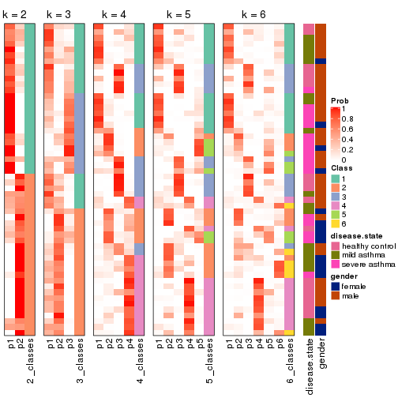
Test correlation between subgroups and known annotations. If the known annotation is numeric, one-way ANOVA test is applied, and if the known annotation is discrete, chi-squared contingency table test is applied.
test_to_known_factors(res)
#> n disease.state(p) gender(p) k
#> CV:NMF 45 0.064019 0.0451 2
#> CV:NMF 15 0.143633 0.3247 3
#> CV:NMF 44 0.003004 0.0187 4
#> CV:NMF 42 0.000161 0.0335 5
#> CV:NMF 32 0.011421 0.0316 6
If matrix rows can be associated to genes, consider to use functional_enrichment(res,
...) to perform function enrichment for the signature genes. See this vignette for more detailed explanations.
The object with results only for a single top-value method and a single partition method can be extracted as:
res = res_list["MAD", "hclust"]
# you can also extract it by
# res = res_list["MAD:hclust"]
A summary of res and all the functions that can be applied to it:
res
#> A 'ConsensusPartition' object with k = 2, 3, 4, 5, 6.
#> On a matrix with 26819 rows and 54 columns.
#> Top rows (1000, 2000, 3000, 4000, 5000) are extracted by 'MAD' method.
#> Subgroups are detected by 'hclust' method.
#> Performed in total 1250 partitions by row resampling.
#> Best k for subgroups seems to be 2.
#>
#> Following methods can be applied to this 'ConsensusPartition' object:
#> [1] "cola_report" "collect_classes" "collect_plots"
#> [4] "collect_stats" "colnames" "compare_signatures"
#> [7] "consensus_heatmap" "dimension_reduction" "functional_enrichment"
#> [10] "get_anno_col" "get_anno" "get_classes"
#> [13] "get_consensus" "get_matrix" "get_membership"
#> [16] "get_param" "get_signatures" "get_stats"
#> [19] "is_best_k" "is_stable_k" "membership_heatmap"
#> [22] "ncol" "nrow" "plot_ecdf"
#> [25] "rownames" "select_partition_number" "show"
#> [28] "suggest_best_k" "test_to_known_factors"
collect_plots() function collects all the plots made from res for all k (number of partitions)
into one single page to provide an easy and fast comparison between different k.
collect_plots(res)
The plots are:
k and the heatmap of
predicted classes for each k.k.k.k.All the plots in panels can be made by individual functions and they are plotted later in this section.
select_partition_number() produces several plots showing different
statistics for choosing “optimized” k. There are following statistics:
k;k, the area increased is defined as \(A_k - A_{k-1}\).The detailed explanations of these statistics can be found in the cola vignette.
Generally speaking, lower PAC score, higher mean silhouette score or higher
concordance corresponds to better partition. Rand index and Jaccard index
measure how similar the current partition is compared to partition with k-1.
If they are too similar, we won't accept k is better than k-1.
select_partition_number(res)
The numeric values for all these statistics can be obtained by get_stats().
get_stats(res)
#> k 1-PAC mean_silhouette concordance area_increased Rand Jaccard
#> 2 2 0.297 0.799 0.873 0.4537 0.525 0.525
#> 3 3 0.255 0.501 0.694 0.2945 0.904 0.821
#> 4 4 0.412 0.348 0.622 0.2012 0.806 0.586
#> 5 5 0.510 0.430 0.674 0.0881 0.840 0.570
#> 6 6 0.582 0.499 0.638 0.0433 0.853 0.539
suggest_best_k() suggests the best \(k\) based on these statistics. The rules are as follows:
suggest_best_k(res)
#> [1] 2
Following shows the table of the partitions (You need to click the show/hide
code output link to see it). The membership matrix (columns with name p*)
is inferred by
clue::cl_consensus()
function with the SE method. Basically the value in the membership matrix
represents the probability to belong to a certain group. The finall class
label for an item is determined with the group with highest probability it
belongs to.
In get_classes() function, the entropy is calculated from the membership
matrix and the silhouette score is calculated from the consensus matrix.
cbind(get_classes(res, k = 2), get_membership(res, k = 2))
#> class entropy silhouette p1 p2
#> GSM665386 2 0.204 0.8699 0.032 0.968
#> GSM665389 2 0.141 0.8516 0.020 0.980
#> GSM665390 2 0.917 0.3652 0.332 0.668
#> GSM665391 1 0.738 0.8117 0.792 0.208
#> GSM665392 2 0.430 0.8529 0.088 0.912
#> GSM665393 1 0.552 0.8640 0.872 0.128
#> GSM665394 2 0.204 0.8699 0.032 0.968
#> GSM665395 1 0.529 0.8670 0.880 0.120
#> GSM665396 2 0.204 0.8592 0.032 0.968
#> GSM665398 2 0.827 0.7044 0.260 0.740
#> GSM665399 1 0.552 0.8640 0.872 0.128
#> GSM665400 2 0.900 0.6140 0.316 0.684
#> GSM665401 2 0.833 0.6983 0.264 0.736
#> GSM665402 1 0.552 0.8640 0.872 0.128
#> GSM665403 2 0.714 0.7762 0.196 0.804
#> GSM665387 2 0.204 0.8699 0.032 0.968
#> GSM665388 2 0.430 0.8529 0.088 0.912
#> GSM665397 2 0.141 0.8694 0.020 0.980
#> GSM665404 1 0.260 0.8635 0.956 0.044
#> GSM665405 2 0.311 0.8666 0.056 0.944
#> GSM665406 2 0.141 0.8706 0.020 0.980
#> GSM665407 2 0.821 0.7121 0.256 0.744
#> GSM665409 1 0.327 0.8690 0.940 0.060
#> GSM665413 2 0.295 0.8691 0.052 0.948
#> GSM665416 1 0.706 0.8246 0.808 0.192
#> GSM665417 1 0.697 0.8261 0.812 0.188
#> GSM665418 1 0.998 -0.0401 0.524 0.476
#> GSM665419 1 0.278 0.8657 0.952 0.048
#> GSM665421 1 0.706 0.8246 0.808 0.192
#> GSM665422 2 0.574 0.8327 0.136 0.864
#> GSM665408 2 0.311 0.8666 0.056 0.944
#> GSM665410 2 0.311 0.8666 0.056 0.944
#> GSM665411 2 0.184 0.8712 0.028 0.972
#> GSM665412 2 0.141 0.8706 0.020 0.980
#> GSM665414 2 0.224 0.8719 0.036 0.964
#> GSM665415 1 0.706 0.8246 0.808 0.192
#> GSM665420 2 0.141 0.8706 0.020 0.980
#> GSM665424 1 0.469 0.8680 0.900 0.100
#> GSM665425 2 0.625 0.8085 0.156 0.844
#> GSM665429 1 0.402 0.8686 0.920 0.080
#> GSM665430 2 0.939 0.5207 0.356 0.644
#> GSM665431 2 0.753 0.7578 0.216 0.784
#> GSM665432 1 0.141 0.8525 0.980 0.020
#> GSM665433 1 0.900 0.6381 0.684 0.316
#> GSM665434 1 0.260 0.8635 0.956 0.044
#> GSM665435 2 0.163 0.8717 0.024 0.976
#> GSM665436 2 0.141 0.8706 0.020 0.980
#> GSM665423 2 0.141 0.8706 0.020 0.980
#> GSM665426 2 0.416 0.8530 0.084 0.916
#> GSM665427 2 0.443 0.8518 0.092 0.908
#> GSM665428 1 0.456 0.8590 0.904 0.096
#> GSM665437 2 0.921 0.5554 0.336 0.664
#> GSM665438 2 0.625 0.8085 0.156 0.844
#> GSM665439 1 0.204 0.8583 0.968 0.032
cbind(get_classes(res, k = 3), get_membership(res, k = 3))
#> class entropy silhouette p1 p2 p3
#> GSM665386 2 0.760 0.6627 0.096 0.668 0.236
#> GSM665389 2 0.867 0.5554 0.120 0.544 0.336
#> GSM665390 1 0.916 0.1427 0.480 0.152 0.368
#> GSM665391 1 0.188 0.3461 0.952 0.044 0.004
#> GSM665392 2 0.520 0.7343 0.020 0.796 0.184
#> GSM665393 3 0.857 0.8012 0.424 0.096 0.480
#> GSM665394 2 0.760 0.6627 0.096 0.668 0.236
#> GSM665395 3 0.867 0.7835 0.412 0.104 0.484
#> GSM665396 2 0.853 0.5777 0.116 0.564 0.320
#> GSM665398 2 0.725 0.6504 0.196 0.704 0.100
#> GSM665399 3 0.862 0.7976 0.420 0.100 0.480
#> GSM665400 2 0.810 0.5749 0.200 0.648 0.152
#> GSM665401 2 0.763 0.6402 0.200 0.680 0.120
#> GSM665402 3 0.857 0.8012 0.424 0.096 0.480
#> GSM665403 2 0.603 0.7103 0.164 0.776 0.060
#> GSM665387 2 0.760 0.6627 0.096 0.668 0.236
#> GSM665388 2 0.520 0.7343 0.020 0.796 0.184
#> GSM665397 2 0.440 0.7776 0.044 0.864 0.092
#> GSM665404 1 0.704 -0.5424 0.536 0.020 0.444
#> GSM665405 2 0.413 0.7576 0.132 0.856 0.012
#> GSM665406 2 0.178 0.7821 0.020 0.960 0.020
#> GSM665407 2 0.743 0.6473 0.212 0.688 0.100
#> GSM665409 1 0.719 -0.6672 0.500 0.024 0.476
#> GSM665413 2 0.277 0.7824 0.048 0.928 0.024
#> GSM665416 1 0.129 0.3505 0.968 0.032 0.000
#> GSM665417 1 0.153 0.3495 0.964 0.032 0.004
#> GSM665418 1 0.764 0.0122 0.576 0.372 0.052
#> GSM665419 1 0.713 -0.5381 0.544 0.024 0.432
#> GSM665421 1 0.129 0.3505 0.968 0.032 0.000
#> GSM665422 2 0.767 0.7110 0.160 0.684 0.156
#> GSM665408 2 0.413 0.7576 0.132 0.856 0.012
#> GSM665410 2 0.413 0.7576 0.132 0.856 0.012
#> GSM665411 2 0.471 0.7754 0.056 0.852 0.092
#> GSM665412 2 0.178 0.7821 0.020 0.960 0.020
#> GSM665414 2 0.314 0.7814 0.068 0.912 0.020
#> GSM665415 1 0.129 0.3505 0.968 0.032 0.000
#> GSM665420 2 0.178 0.7802 0.020 0.960 0.020
#> GSM665424 3 0.832 0.7873 0.424 0.080 0.496
#> GSM665425 2 0.694 0.7050 0.072 0.712 0.216
#> GSM665429 3 0.757 0.7090 0.448 0.040 0.512
#> GSM665430 2 0.918 0.4891 0.204 0.536 0.260
#> GSM665431 2 0.644 0.6990 0.168 0.756 0.076
#> GSM665432 1 0.681 -0.5801 0.520 0.012 0.468
#> GSM665433 1 0.771 0.1664 0.660 0.100 0.240
#> GSM665434 1 0.704 -0.5424 0.536 0.020 0.444
#> GSM665435 2 0.206 0.7829 0.044 0.948 0.008
#> GSM665436 2 0.178 0.7802 0.020 0.960 0.020
#> GSM665423 2 0.206 0.7825 0.044 0.948 0.008
#> GSM665426 2 0.475 0.7391 0.172 0.816 0.012
#> GSM665427 2 0.528 0.7351 0.024 0.796 0.180
#> GSM665428 3 0.717 0.5329 0.404 0.028 0.568
#> GSM665437 2 0.911 0.5084 0.196 0.544 0.260
#> GSM665438 2 0.694 0.7050 0.072 0.712 0.216
#> GSM665439 1 0.704 -0.5517 0.532 0.020 0.448
cbind(get_classes(res, k = 4), get_membership(res, k = 4))
#> class entropy silhouette p1 p2 p3 p4
#> GSM665386 4 0.6395 0.54194 0.096 0.264 0.004 0.636
#> GSM665389 4 0.7374 0.42386 0.104 0.412 0.016 0.468
#> GSM665390 1 0.6934 0.11293 0.468 0.452 0.020 0.060
#> GSM665391 1 0.1339 0.48510 0.964 0.008 0.004 0.024
#> GSM665392 4 0.6248 0.42420 0.000 0.128 0.212 0.660
#> GSM665393 3 0.6994 0.36413 0.348 0.012 0.548 0.092
#> GSM665394 4 0.6395 0.54194 0.096 0.264 0.004 0.636
#> GSM665395 3 0.6661 0.36946 0.292 0.004 0.600 0.104
#> GSM665396 4 0.7012 0.44212 0.104 0.396 0.004 0.496
#> GSM665398 2 0.8929 0.69395 0.048 0.332 0.304 0.316
#> GSM665399 3 0.7018 0.36936 0.340 0.012 0.552 0.096
#> GSM665400 3 0.8957 -0.70356 0.052 0.316 0.352 0.280
#> GSM665401 2 0.8915 0.68934 0.048 0.348 0.312 0.292
#> GSM665402 3 0.6994 0.36413 0.348 0.012 0.548 0.092
#> GSM665403 4 0.8628 -0.67027 0.036 0.364 0.236 0.364
#> GSM665387 4 0.6395 0.54194 0.096 0.264 0.004 0.636
#> GSM665388 4 0.6248 0.42420 0.000 0.128 0.212 0.660
#> GSM665397 4 0.4689 0.62715 0.044 0.100 0.036 0.820
#> GSM665404 1 0.5119 0.06248 0.556 0.004 0.440 0.000
#> GSM665405 4 0.3668 0.62683 0.116 0.004 0.028 0.852
#> GSM665406 4 0.2610 0.57731 0.000 0.088 0.012 0.900
#> GSM665407 2 0.9078 0.67136 0.060 0.328 0.292 0.320
#> GSM665409 3 0.5576 0.13032 0.444 0.000 0.536 0.020
#> GSM665413 4 0.6922 -0.22429 0.008 0.332 0.100 0.560
#> GSM665416 1 0.0779 0.49290 0.980 0.000 0.004 0.016
#> GSM665417 1 0.0592 0.49233 0.984 0.000 0.000 0.016
#> GSM665418 1 0.6446 0.14902 0.588 0.008 0.064 0.340
#> GSM665419 1 0.5415 0.05288 0.552 0.008 0.436 0.004
#> GSM665421 1 0.0779 0.49290 0.980 0.000 0.004 0.016
#> GSM665422 4 0.8210 0.46719 0.144 0.116 0.160 0.580
#> GSM665408 4 0.3668 0.62683 0.116 0.004 0.028 0.852
#> GSM665410 4 0.3668 0.62683 0.116 0.004 0.028 0.852
#> GSM665411 4 0.4931 0.62727 0.056 0.100 0.036 0.808
#> GSM665412 4 0.2610 0.57731 0.000 0.088 0.012 0.900
#> GSM665414 4 0.3558 0.61685 0.048 0.072 0.008 0.872
#> GSM665415 1 0.0779 0.49290 0.980 0.000 0.004 0.016
#> GSM665420 4 0.5025 0.28042 0.000 0.252 0.032 0.716
#> GSM665424 3 0.6226 0.36128 0.320 0.004 0.612 0.064
#> GSM665425 2 0.7626 0.50461 0.000 0.412 0.384 0.204
#> GSM665429 3 0.5906 0.30637 0.344 0.012 0.616 0.028
#> GSM665430 3 0.8527 -0.30414 0.132 0.380 0.420 0.068
#> GSM665431 2 0.8736 0.62040 0.040 0.364 0.252 0.344
#> GSM665432 1 0.5392 0.00883 0.528 0.012 0.460 0.000
#> GSM665433 1 0.7278 0.22701 0.616 0.132 0.220 0.032
#> GSM665434 1 0.5119 0.06248 0.556 0.004 0.440 0.000
#> GSM665435 4 0.2928 0.59894 0.024 0.076 0.004 0.896
#> GSM665436 4 0.3161 0.55257 0.000 0.124 0.012 0.864
#> GSM665423 4 0.2928 0.59969 0.024 0.076 0.004 0.896
#> GSM665426 4 0.4334 0.61088 0.156 0.008 0.028 0.808
#> GSM665427 4 0.6201 0.42613 0.000 0.124 0.212 0.664
#> GSM665428 3 0.6042 0.12067 0.368 0.052 0.580 0.000
#> GSM665437 3 0.8464 -0.32449 0.124 0.388 0.420 0.068
#> GSM665438 2 0.7626 0.50461 0.000 0.412 0.384 0.204
#> GSM665439 1 0.5427 0.04751 0.544 0.008 0.444 0.004
cbind(get_classes(res, k = 5), get_membership(res, k = 5))
#> class entropy silhouette p1 p2 p3 p4 p5
#> GSM665386 4 0.4437 0.31702 0.000 0.020 0.316 0.664 0.000
#> GSM665389 3 0.5576 -0.22327 0.000 0.060 0.512 0.424 0.004
#> GSM665390 3 0.1844 0.33666 0.012 0.012 0.936 0.040 0.000
#> GSM665391 1 0.6016 0.20876 0.496 0.012 0.412 0.080 0.000
#> GSM665392 4 0.7450 0.20462 0.000 0.224 0.044 0.424 0.308
#> GSM665393 1 0.5163 0.54877 0.716 0.184 0.000 0.020 0.080
#> GSM665394 4 0.4437 0.31702 0.000 0.020 0.316 0.664 0.000
#> GSM665395 1 0.5402 0.49861 0.668 0.248 0.000 0.020 0.064
#> GSM665396 4 0.5124 -0.07800 0.000 0.028 0.484 0.484 0.004
#> GSM665398 2 0.5806 0.75214 0.000 0.568 0.004 0.096 0.332
#> GSM665399 1 0.5229 0.54253 0.708 0.192 0.000 0.020 0.080
#> GSM665400 2 0.6754 0.68240 0.056 0.532 0.004 0.080 0.328
#> GSM665401 2 0.6120 0.73688 0.000 0.556 0.020 0.088 0.336
#> GSM665402 1 0.5163 0.54877 0.716 0.184 0.000 0.020 0.080
#> GSM665403 2 0.5598 0.71819 0.000 0.612 0.000 0.112 0.276
#> GSM665387 4 0.4437 0.31702 0.000 0.020 0.316 0.664 0.000
#> GSM665388 4 0.7450 0.20462 0.000 0.224 0.044 0.424 0.308
#> GSM665397 4 0.5758 0.49767 0.000 0.148 0.100 0.696 0.056
#> GSM665404 1 0.0290 0.62287 0.992 0.000 0.008 0.000 0.000
#> GSM665405 4 0.1871 0.51486 0.012 0.024 0.020 0.940 0.004
#> GSM665406 4 0.4972 0.37057 0.000 0.336 0.000 0.620 0.044
#> GSM665407 2 0.6382 0.74380 0.000 0.552 0.020 0.124 0.304
#> GSM665409 1 0.3939 0.61271 0.824 0.108 0.016 0.004 0.048
#> GSM665413 2 0.6754 0.35709 0.000 0.456 0.008 0.332 0.204
#> GSM665416 1 0.6033 0.23114 0.512 0.012 0.392 0.084 0.000
#> GSM665417 1 0.5935 0.22889 0.516 0.008 0.392 0.084 0.000
#> GSM665418 1 0.6145 -0.06261 0.500 0.016 0.048 0.420 0.016
#> GSM665419 1 0.1372 0.61957 0.956 0.000 0.024 0.004 0.016
#> GSM665421 1 0.6033 0.23114 0.512 0.012 0.392 0.084 0.000
#> GSM665422 4 0.7971 0.18283 0.028 0.148 0.084 0.496 0.244
#> GSM665408 4 0.1871 0.51486 0.012 0.024 0.020 0.940 0.004
#> GSM665410 4 0.1871 0.51486 0.012 0.024 0.020 0.940 0.004
#> GSM665411 4 0.5597 0.49534 0.000 0.132 0.100 0.712 0.056
#> GSM665412 4 0.4972 0.37057 0.000 0.336 0.000 0.620 0.044
#> GSM665414 4 0.4746 0.48776 0.000 0.276 0.032 0.684 0.008
#> GSM665415 1 0.6033 0.23114 0.512 0.012 0.392 0.084 0.000
#> GSM665420 4 0.6207 0.00167 0.000 0.400 0.000 0.460 0.140
#> GSM665424 1 0.5253 0.52610 0.696 0.220 0.008 0.008 0.068
#> GSM665425 5 0.2900 0.71165 0.000 0.028 0.000 0.108 0.864
#> GSM665429 1 0.4923 0.55413 0.740 0.172 0.008 0.008 0.072
#> GSM665430 5 0.3387 0.72411 0.196 0.004 0.004 0.000 0.796
#> GSM665431 2 0.5385 0.72888 0.000 0.624 0.000 0.088 0.288
#> GSM665432 1 0.0693 0.62238 0.980 0.000 0.008 0.000 0.012
#> GSM665433 3 0.8013 -0.17838 0.340 0.028 0.372 0.036 0.224
#> GSM665434 1 0.0290 0.62287 0.992 0.000 0.008 0.000 0.000
#> GSM665435 4 0.4403 0.45550 0.004 0.316 0.000 0.668 0.012
#> GSM665436 4 0.5428 0.28870 0.000 0.444 0.004 0.504 0.048
#> GSM665423 4 0.4403 0.45503 0.000 0.316 0.004 0.668 0.012
#> GSM665426 4 0.2917 0.48360 0.032 0.024 0.048 0.892 0.004
#> GSM665427 4 0.7471 0.20723 0.000 0.236 0.044 0.424 0.296
#> GSM665428 1 0.3768 0.56023 0.808 0.028 0.004 0.004 0.156
#> GSM665437 5 0.2929 0.73912 0.180 0.000 0.000 0.000 0.820
#> GSM665438 5 0.2900 0.71165 0.000 0.028 0.000 0.108 0.864
#> GSM665439 1 0.0727 0.62294 0.980 0.000 0.012 0.004 0.004
cbind(get_classes(res, k = 6), get_membership(res, k = 6))
#> class entropy silhouette p1 p2 p3 p4 p5 p6
#> GSM665386 2 0.7923 0.342 0.056 0.384 0.008 0.232 0.056 0.264
#> GSM665389 4 0.8207 -0.457 0.028 0.256 0.028 0.380 0.096 0.212
#> GSM665390 4 0.6674 -0.294 0.388 0.036 0.024 0.456 0.084 0.012
#> GSM665391 1 0.0862 0.777 0.972 0.008 0.004 0.016 0.000 0.000
#> GSM665392 6 0.1152 0.872 0.000 0.004 0.000 0.000 0.044 0.952
#> GSM665393 4 0.6573 0.471 0.264 0.000 0.248 0.456 0.028 0.004
#> GSM665394 2 0.7923 0.342 0.056 0.384 0.008 0.232 0.056 0.264
#> GSM665395 4 0.6490 0.452 0.200 0.000 0.292 0.476 0.024 0.008
#> GSM665396 4 0.8376 -0.483 0.048 0.248 0.024 0.352 0.084 0.244
#> GSM665398 3 0.1934 0.804 0.000 0.044 0.916 0.000 0.040 0.000
#> GSM665399 4 0.6574 0.470 0.256 0.000 0.256 0.456 0.028 0.004
#> GSM665400 3 0.2906 0.756 0.004 0.028 0.876 0.052 0.040 0.000
#> GSM665401 3 0.2527 0.799 0.000 0.040 0.896 0.016 0.044 0.004
#> GSM665402 4 0.6573 0.471 0.264 0.000 0.248 0.456 0.028 0.004
#> GSM665403 3 0.2717 0.772 0.000 0.100 0.868 0.004 0.024 0.004
#> GSM665387 2 0.7923 0.342 0.056 0.384 0.008 0.232 0.056 0.264
#> GSM665388 6 0.1152 0.872 0.000 0.004 0.000 0.000 0.044 0.952
#> GSM665397 2 0.6512 0.417 0.024 0.536 0.024 0.072 0.028 0.316
#> GSM665404 4 0.3867 0.390 0.488 0.000 0.000 0.512 0.000 0.000
#> GSM665405 2 0.7069 0.428 0.112 0.460 0.016 0.000 0.104 0.308
#> GSM665406 2 0.4315 0.493 0.008 0.772 0.080 0.000 0.120 0.020
#> GSM665407 3 0.3232 0.793 0.008 0.060 0.860 0.016 0.052 0.004
#> GSM665409 4 0.5986 0.477 0.336 0.000 0.136 0.504 0.024 0.000
#> GSM665413 3 0.4541 0.348 0.004 0.380 0.588 0.004 0.024 0.000
#> GSM665416 1 0.0508 0.787 0.984 0.012 0.004 0.000 0.000 0.000
#> GSM665417 1 0.0363 0.785 0.988 0.012 0.000 0.000 0.000 0.000
#> GSM665418 1 0.6690 0.247 0.536 0.080 0.000 0.084 0.028 0.272
#> GSM665419 4 0.4337 0.369 0.480 0.000 0.000 0.500 0.020 0.000
#> GSM665421 1 0.0508 0.787 0.984 0.012 0.004 0.000 0.000 0.000
#> GSM665422 6 0.5668 0.551 0.144 0.100 0.008 0.032 0.028 0.688
#> GSM665408 2 0.7069 0.428 0.112 0.460 0.016 0.000 0.104 0.308
#> GSM665410 2 0.7069 0.428 0.112 0.460 0.016 0.000 0.104 0.308
#> GSM665411 2 0.6786 0.411 0.032 0.516 0.028 0.072 0.032 0.320
#> GSM665412 2 0.4315 0.493 0.008 0.772 0.080 0.000 0.120 0.020
#> GSM665414 2 0.4895 0.538 0.032 0.760 0.076 0.016 0.016 0.100
#> GSM665415 1 0.0508 0.787 0.984 0.012 0.004 0.000 0.000 0.000
#> GSM665420 2 0.4117 0.198 0.000 0.672 0.296 0.000 0.032 0.000
#> GSM665424 4 0.6380 0.468 0.216 0.000 0.264 0.492 0.024 0.004
#> GSM665425 5 0.2527 0.798 0.000 0.040 0.084 0.000 0.876 0.000
#> GSM665429 4 0.6605 0.472 0.240 0.000 0.200 0.512 0.032 0.016
#> GSM665430 5 0.4922 0.777 0.092 0.000 0.076 0.104 0.728 0.000
#> GSM665431 3 0.2290 0.779 0.000 0.084 0.892 0.004 0.020 0.000
#> GSM665432 4 0.4165 0.411 0.452 0.000 0.000 0.536 0.012 0.000
#> GSM665433 1 0.6620 0.273 0.524 0.040 0.016 0.140 0.276 0.004
#> GSM665434 4 0.3867 0.390 0.488 0.000 0.000 0.512 0.000 0.000
#> GSM665435 2 0.3688 0.531 0.016 0.828 0.072 0.000 0.016 0.068
#> GSM665436 2 0.3783 0.396 0.000 0.792 0.136 0.000 0.060 0.012
#> GSM665423 2 0.3688 0.531 0.016 0.828 0.072 0.000 0.016 0.068
#> GSM665426 2 0.7373 0.380 0.156 0.424 0.012 0.004 0.100 0.304
#> GSM665427 6 0.1453 0.868 0.000 0.008 0.008 0.000 0.040 0.944
#> GSM665428 4 0.6501 0.413 0.308 0.000 0.016 0.508 0.040 0.128
#> GSM665437 5 0.4592 0.797 0.084 0.000 0.072 0.088 0.756 0.000
#> GSM665438 5 0.2527 0.798 0.000 0.040 0.084 0.000 0.876 0.000
#> GSM665439 4 0.4091 0.397 0.472 0.000 0.000 0.520 0.008 0.000
Heatmaps for the consensus matrix. It visualizes the probability of two samples to be in a same group.
consensus_heatmap(res, k = 2)
consensus_heatmap(res, k = 3)
consensus_heatmap(res, k = 4)
consensus_heatmap(res, k = 5)
consensus_heatmap(res, k = 6)
Heatmaps for the membership of samples in all partitions to see how consistent they are:
membership_heatmap(res, k = 2)
membership_heatmap(res, k = 3)
membership_heatmap(res, k = 4)
membership_heatmap(res, k = 5)
membership_heatmap(res, k = 6)
As soon as we have had the classes for columns, we can look for signatures which are significantly different between classes which can be candidate marks for certain classes. Following are the heatmaps for signatures.
Signature heatmaps where rows are scaled:
get_signatures(res, k = 2)
get_signatures(res, k = 3)
get_signatures(res, k = 4)
get_signatures(res, k = 5)

get_signatures(res, k = 6)
Signature heatmaps where rows are not scaled:
get_signatures(res, k = 2, scale_rows = FALSE)
get_signatures(res, k = 3, scale_rows = FALSE)
get_signatures(res, k = 4, scale_rows = FALSE)
get_signatures(res, k = 5, scale_rows = FALSE)
get_signatures(res, k = 6, scale_rows = FALSE)
Compare the overlap of signatures from different k:
compare_signatures(res)
get_signature() returns a data frame invisibly. TO get the list of signatures, the function
call should be assigned to a variable explicitly. In following code, if plot argument is set
to FALSE, no heatmap is plotted while only the differential analysis is performed.
# code only for demonstration
tb = get_signature(res, k = ..., plot = FALSE)
An example of the output of tb is:
#> which_row fdr mean_1 mean_2 scaled_mean_1 scaled_mean_2 km
#> 1 38 0.042760348 8.373488 9.131774 -0.5533452 0.5164555 1
#> 2 40 0.018707592 7.106213 8.469186 -0.6173731 0.5762149 1
#> 3 55 0.019134737 10.221463 11.207825 -0.6159697 0.5749050 1
#> 4 59 0.006059896 5.921854 7.869574 -0.6899429 0.6439467 1
#> 5 60 0.018055526 8.928898 10.211722 -0.6204761 0.5791110 1
#> 6 98 0.009384629 15.714769 14.887706 0.6635654 -0.6193277 2
...
The columns in tb are:
which_row: row indices corresponding to the input matrix.fdr: FDR for the differential test. mean_x: The mean value in group x.scaled_mean_x: The mean value in group x after rows are scaled.km: Row groups if k-means clustering is applied to rows.UMAP plot which shows how samples are separated.
dimension_reduction(res, k = 2, method = "UMAP")

dimension_reduction(res, k = 3, method = "UMAP")
dimension_reduction(res, k = 4, method = "UMAP")
dimension_reduction(res, k = 5, method = "UMAP")
dimension_reduction(res, k = 6, method = "UMAP")
Following heatmap shows how subgroups are split when increasing k:
collect_classes(res)
Test correlation between subgroups and known annotations. If the known annotation is numeric, one-way ANOVA test is applied, and if the known annotation is discrete, chi-squared contingency table test is applied.
test_to_known_factors(res)
#> n disease.state(p) gender(p) k
#> MAD:hclust 52 0.75090 0.0960 2
#> MAD:hclust 39 0.18716 0.3065 3
#> MAD:hclust 21 0.41083 0.1893 4
#> MAD:hclust 25 0.00768 0.0812 5
#> MAD:hclust 22 0.01856 0.1976 6
If matrix rows can be associated to genes, consider to use functional_enrichment(res,
...) to perform function enrichment for the signature genes. See this vignette for more detailed explanations.
The object with results only for a single top-value method and a single partition method can be extracted as:
res = res_list["MAD", "kmeans"]
# you can also extract it by
# res = res_list["MAD:kmeans"]
A summary of res and all the functions that can be applied to it:
res
#> A 'ConsensusPartition' object with k = 2, 3, 4, 5, 6.
#> On a matrix with 26819 rows and 54 columns.
#> Top rows (1000, 2000, 3000, 4000, 5000) are extracted by 'MAD' method.
#> Subgroups are detected by 'kmeans' method.
#> Performed in total 1250 partitions by row resampling.
#> Best k for subgroups seems to be 2.
#>
#> Following methods can be applied to this 'ConsensusPartition' object:
#> [1] "cola_report" "collect_classes" "collect_plots"
#> [4] "collect_stats" "colnames" "compare_signatures"
#> [7] "consensus_heatmap" "dimension_reduction" "functional_enrichment"
#> [10] "get_anno_col" "get_anno" "get_classes"
#> [13] "get_consensus" "get_matrix" "get_membership"
#> [16] "get_param" "get_signatures" "get_stats"
#> [19] "is_best_k" "is_stable_k" "membership_heatmap"
#> [22] "ncol" "nrow" "plot_ecdf"
#> [25] "rownames" "select_partition_number" "show"
#> [28] "suggest_best_k" "test_to_known_factors"
collect_plots() function collects all the plots made from res for all k (number of partitions)
into one single page to provide an easy and fast comparison between different k.
collect_plots(res)
The plots are:
k and the heatmap of
predicted classes for each k.k.k.k.All the plots in panels can be made by individual functions and they are plotted later in this section.
select_partition_number() produces several plots showing different
statistics for choosing “optimized” k. There are following statistics:
k;k, the area increased is defined as \(A_k - A_{k-1}\).The detailed explanations of these statistics can be found in the cola vignette.
Generally speaking, lower PAC score, higher mean silhouette score or higher
concordance corresponds to better partition. Rand index and Jaccard index
measure how similar the current partition is compared to partition with k-1.
If they are too similar, we won't accept k is better than k-1.
select_partition_number(res)
The numeric values for all these statistics can be obtained by get_stats().
get_stats(res)
#> k 1-PAC mean_silhouette concordance area_increased Rand Jaccard
#> 2 2 0.508 0.856 0.920 0.4975 0.508 0.508
#> 3 3 0.387 0.436 0.700 0.3350 0.743 0.537
#> 4 4 0.471 0.465 0.710 0.1276 0.811 0.515
#> 5 5 0.544 0.462 0.673 0.0677 0.919 0.694
#> 6 6 0.604 0.416 0.632 0.0430 0.920 0.643
suggest_best_k() suggests the best \(k\) based on these statistics. The rules are as follows:
suggest_best_k(res)
#> [1] 2
Following shows the table of the partitions (You need to click the show/hide
code output link to see it). The membership matrix (columns with name p*)
is inferred by
clue::cl_consensus()
function with the SE method. Basically the value in the membership matrix
represents the probability to belong to a certain group. The finall class
label for an item is determined with the group with highest probability it
belongs to.
In get_classes() function, the entropy is calculated from the membership
matrix and the silhouette score is calculated from the consensus matrix.
cbind(get_classes(res, k = 2), get_membership(res, k = 2))
#> class entropy silhouette p1 p2
#> GSM665386 2 0.0376 0.8983 0.004 0.996
#> GSM665389 2 0.0000 0.8987 0.000 1.000
#> GSM665390 2 0.8267 0.6191 0.260 0.740
#> GSM665391 1 0.6887 0.8343 0.816 0.184
#> GSM665392 2 0.6438 0.8163 0.164 0.836
#> GSM665393 1 0.5946 0.8720 0.856 0.144
#> GSM665394 2 0.0376 0.8983 0.004 0.996
#> GSM665395 1 0.0672 0.9274 0.992 0.008
#> GSM665396 2 0.0376 0.8977 0.004 0.996
#> GSM665398 2 0.1414 0.8928 0.020 0.980
#> GSM665399 1 0.0672 0.9274 0.992 0.008
#> GSM665400 1 0.1184 0.9257 0.984 0.016
#> GSM665401 2 0.6343 0.8190 0.160 0.840
#> GSM665402 1 0.6343 0.8645 0.840 0.160
#> GSM665403 2 0.1414 0.8928 0.020 0.980
#> GSM665387 2 0.0376 0.8983 0.004 0.996
#> GSM665388 2 0.7745 0.7719 0.228 0.772
#> GSM665397 2 0.0000 0.8987 0.000 1.000
#> GSM665404 1 0.5842 0.8732 0.860 0.140
#> GSM665405 2 0.9933 0.0741 0.452 0.548
#> GSM665406 2 0.0000 0.8987 0.000 1.000
#> GSM665407 2 0.0376 0.8983 0.004 0.996
#> GSM665409 1 0.0376 0.9271 0.996 0.004
#> GSM665413 2 0.0000 0.8987 0.000 1.000
#> GSM665416 1 0.6438 0.8561 0.836 0.164
#> GSM665417 1 0.5946 0.8718 0.856 0.144
#> GSM665418 1 0.1414 0.9274 0.980 0.020
#> GSM665419 1 0.1414 0.9274 0.980 0.020
#> GSM665421 1 0.6801 0.8384 0.820 0.180
#> GSM665422 2 0.8955 0.6621 0.312 0.688
#> GSM665408 2 0.0672 0.8981 0.008 0.992
#> GSM665410 2 0.0376 0.8977 0.004 0.996
#> GSM665411 2 0.0376 0.8977 0.004 0.996
#> GSM665412 2 0.0376 0.8977 0.004 0.996
#> GSM665414 2 0.0000 0.8987 0.000 1.000
#> GSM665415 2 0.6712 0.7764 0.176 0.824
#> GSM665420 2 0.0000 0.8987 0.000 1.000
#> GSM665424 1 0.0672 0.9274 0.992 0.008
#> GSM665425 2 0.8081 0.7504 0.248 0.752
#> GSM665429 1 0.0672 0.9274 0.992 0.008
#> GSM665430 1 0.0376 0.9271 0.996 0.004
#> GSM665431 2 0.7950 0.7601 0.240 0.760
#> GSM665432 1 0.0000 0.9268 1.000 0.000
#> GSM665433 1 0.1633 0.9279 0.976 0.024
#> GSM665434 1 0.4690 0.8971 0.900 0.100
#> GSM665435 2 0.4298 0.8571 0.088 0.912
#> GSM665436 2 0.0000 0.8987 0.000 1.000
#> GSM665423 2 0.0672 0.8962 0.008 0.992
#> GSM665426 2 0.5294 0.8192 0.120 0.880
#> GSM665427 2 0.7745 0.7719 0.228 0.772
#> GSM665428 1 0.0672 0.9274 0.992 0.008
#> GSM665437 1 0.0672 0.9273 0.992 0.008
#> GSM665438 2 0.6623 0.8093 0.172 0.828
#> GSM665439 1 0.1414 0.9274 0.980 0.020
cbind(get_classes(res, k = 3), get_membership(res, k = 3))
#> class entropy silhouette p1 p2 p3
#> GSM665386 2 0.7223 0.5487 0.028 0.548 0.424
#> GSM665389 2 0.6294 0.6344 0.020 0.692 0.288
#> GSM665390 3 0.9963 -0.2671 0.312 0.312 0.376
#> GSM665391 1 0.5608 0.6551 0.808 0.072 0.120
#> GSM665392 3 0.5884 0.1817 0.012 0.272 0.716
#> GSM665393 1 0.6719 0.6269 0.728 0.068 0.204
#> GSM665394 2 0.7299 0.5506 0.032 0.556 0.412
#> GSM665395 3 0.7129 0.3485 0.392 0.028 0.580
#> GSM665396 2 0.7169 0.5509 0.028 0.568 0.404
#> GSM665398 2 0.3644 0.5823 0.004 0.872 0.124
#> GSM665399 1 0.5656 0.3894 0.728 0.008 0.264
#> GSM665400 3 0.8566 0.2332 0.424 0.096 0.480
#> GSM665401 3 0.5024 0.2834 0.004 0.220 0.776
#> GSM665402 1 0.6827 0.6308 0.728 0.080 0.192
#> GSM665403 2 0.2860 0.6085 0.004 0.912 0.084
#> GSM665387 2 0.5845 0.6274 0.004 0.688 0.308
#> GSM665388 3 0.5849 0.1814 0.028 0.216 0.756
#> GSM665397 2 0.5843 0.6501 0.016 0.732 0.252
#> GSM665404 1 0.4712 0.6711 0.848 0.044 0.108
#> GSM665405 1 0.9907 0.0334 0.396 0.280 0.324
#> GSM665406 2 0.2063 0.6274 0.008 0.948 0.044
#> GSM665407 2 0.6855 0.5928 0.032 0.652 0.316
#> GSM665409 1 0.4931 0.4226 0.768 0.000 0.232
#> GSM665413 2 0.2301 0.6332 0.004 0.936 0.060
#> GSM665416 1 0.5492 0.6598 0.816 0.080 0.104
#> GSM665417 1 0.4591 0.6701 0.848 0.032 0.120
#> GSM665418 1 0.3816 0.6443 0.852 0.000 0.148
#> GSM665419 1 0.1163 0.6478 0.972 0.000 0.028
#> GSM665421 1 0.5500 0.6580 0.816 0.084 0.100
#> GSM665422 3 0.7983 0.1118 0.256 0.108 0.636
#> GSM665408 2 0.5414 0.6453 0.016 0.772 0.212
#> GSM665410 2 0.6688 0.6182 0.028 0.664 0.308
#> GSM665411 2 0.8578 0.5107 0.100 0.504 0.396
#> GSM665412 2 0.1170 0.6445 0.008 0.976 0.016
#> GSM665414 2 0.5578 0.6562 0.012 0.748 0.240
#> GSM665415 1 0.9921 -0.0716 0.396 0.296 0.308
#> GSM665420 2 0.2590 0.6285 0.004 0.924 0.072
#> GSM665424 3 0.6763 0.3141 0.436 0.012 0.552
#> GSM665425 2 0.8521 -0.1572 0.092 0.468 0.440
#> GSM665429 3 0.6410 0.3423 0.420 0.004 0.576
#> GSM665430 3 0.6305 0.2675 0.484 0.000 0.516
#> GSM665431 2 0.7278 -0.0406 0.028 0.516 0.456
#> GSM665432 1 0.3192 0.5749 0.888 0.000 0.112
#> GSM665433 1 0.1585 0.6525 0.964 0.008 0.028
#> GSM665434 1 0.0892 0.6656 0.980 0.020 0.000
#> GSM665435 2 0.6526 0.5804 0.128 0.760 0.112
#> GSM665436 2 0.3607 0.6521 0.008 0.880 0.112
#> GSM665423 2 0.3502 0.6540 0.020 0.896 0.084
#> GSM665426 2 0.9909 0.2672 0.268 0.368 0.364
#> GSM665427 3 0.6201 0.2083 0.044 0.208 0.748
#> GSM665428 3 0.6267 0.3118 0.452 0.000 0.548
#> GSM665437 1 0.6308 -0.3134 0.508 0.000 0.492
#> GSM665438 2 0.7905 -0.1076 0.056 0.500 0.444
#> GSM665439 1 0.1163 0.6478 0.972 0.000 0.028
cbind(get_classes(res, k = 4), get_membership(res, k = 4))
#> class entropy silhouette p1 p2 p3 p4
#> GSM665386 4 0.472 0.6102 0.032 0.160 0.016 0.792
#> GSM665389 4 0.514 0.5710 0.020 0.264 0.008 0.708
#> GSM665390 4 0.714 0.3543 0.340 0.116 0.008 0.536
#> GSM665391 1 0.353 0.6769 0.864 0.024 0.008 0.104
#> GSM665392 4 0.585 0.2509 0.000 0.048 0.336 0.616
#> GSM665393 1 0.628 0.5284 0.700 0.056 0.200 0.044
#> GSM665394 4 0.515 0.6056 0.028 0.200 0.020 0.752
#> GSM665395 3 0.330 0.7090 0.076 0.028 0.884 0.012
#> GSM665396 4 0.495 0.6061 0.024 0.200 0.016 0.760
#> GSM665398 2 0.412 0.6006 0.000 0.820 0.136 0.044
#> GSM665399 3 0.556 0.0974 0.444 0.008 0.540 0.008
#> GSM665400 3 0.741 0.4530 0.212 0.192 0.580 0.016
#> GSM665401 3 0.665 0.2698 0.000 0.112 0.584 0.304
#> GSM665402 1 0.640 0.5819 0.716 0.048 0.136 0.100
#> GSM665403 2 0.390 0.6031 0.000 0.832 0.132 0.036
#> GSM665387 4 0.531 0.4648 0.000 0.348 0.020 0.632
#> GSM665388 4 0.513 0.3050 0.000 0.020 0.312 0.668
#> GSM665397 4 0.589 0.3474 0.000 0.428 0.036 0.536
#> GSM665404 1 0.259 0.6884 0.912 0.012 0.008 0.068
#> GSM665405 1 0.819 -0.0635 0.436 0.176 0.028 0.360
#> GSM665406 2 0.162 0.6189 0.008 0.956 0.012 0.024
#> GSM665407 2 0.848 0.1618 0.104 0.516 0.112 0.268
#> GSM665409 1 0.557 -0.1335 0.512 0.004 0.472 0.012
#> GSM665413 2 0.197 0.6152 0.000 0.932 0.008 0.060
#> GSM665416 1 0.366 0.6809 0.876 0.044 0.028 0.052
#> GSM665417 1 0.172 0.6879 0.944 0.008 0.000 0.048
#> GSM665418 1 0.539 0.5646 0.756 0.008 0.148 0.088
#> GSM665419 1 0.328 0.6156 0.860 0.000 0.124 0.016
#> GSM665421 1 0.351 0.6818 0.880 0.052 0.016 0.052
#> GSM665422 4 0.421 0.5199 0.084 0.020 0.052 0.844
#> GSM665408 2 0.632 -0.1311 0.020 0.540 0.028 0.412
#> GSM665410 4 0.643 0.4751 0.044 0.368 0.016 0.572
#> GSM665411 4 0.714 0.5518 0.136 0.208 0.028 0.628
#> GSM665412 2 0.231 0.6078 0.016 0.928 0.008 0.048
#> GSM665414 4 0.584 0.3198 0.004 0.448 0.024 0.524
#> GSM665415 1 0.767 0.2898 0.576 0.168 0.032 0.224
#> GSM665420 2 0.247 0.6080 0.004 0.920 0.024 0.052
#> GSM665424 3 0.332 0.7172 0.112 0.012 0.868 0.008
#> GSM665425 2 0.849 0.0255 0.056 0.420 0.376 0.148
#> GSM665429 3 0.376 0.7217 0.116 0.004 0.848 0.032
#> GSM665430 3 0.512 0.6607 0.176 0.000 0.752 0.072
#> GSM665431 2 0.534 0.4464 0.000 0.656 0.316 0.028
#> GSM665432 1 0.511 0.3003 0.656 0.000 0.328 0.016
#> GSM665433 1 0.594 0.5109 0.696 0.008 0.216 0.080
#> GSM665434 1 0.201 0.6618 0.932 0.004 0.060 0.004
#> GSM665435 2 0.677 0.4143 0.100 0.668 0.036 0.196
#> GSM665436 2 0.428 0.4776 0.000 0.792 0.028 0.180
#> GSM665423 2 0.501 0.4769 0.024 0.772 0.028 0.176
#> GSM665426 4 0.739 0.4655 0.244 0.176 0.012 0.568
#> GSM665427 4 0.570 0.2057 0.004 0.024 0.380 0.592
#> GSM665428 3 0.485 0.7082 0.108 0.004 0.792 0.096
#> GSM665437 3 0.642 0.5963 0.204 0.012 0.672 0.112
#> GSM665438 2 0.740 0.1024 0.008 0.456 0.408 0.128
#> GSM665439 1 0.334 0.6120 0.856 0.000 0.128 0.016
cbind(get_classes(res, k = 5), get_membership(res, k = 5))
#> class entropy silhouette p1 p2 p3 p4 p5
#> GSM665386 4 0.350 0.5751 0.008 0.012 0.016 0.840 0.124
#> GSM665389 4 0.225 0.6193 0.000 0.096 0.000 0.896 0.008
#> GSM665390 4 0.402 0.5553 0.204 0.012 0.000 0.768 0.016
#> GSM665391 1 0.307 0.6983 0.860 0.000 0.012 0.112 0.016
#> GSM665392 5 0.654 0.4298 0.000 0.004 0.200 0.300 0.496
#> GSM665393 1 0.666 0.2966 0.568 0.052 0.300 0.012 0.068
#> GSM665394 4 0.374 0.5810 0.008 0.024 0.016 0.832 0.120
#> GSM665395 3 0.121 0.5414 0.012 0.012 0.964 0.000 0.012
#> GSM665396 4 0.342 0.5844 0.004 0.032 0.016 0.856 0.092
#> GSM665398 2 0.537 0.5375 0.000 0.684 0.208 0.012 0.096
#> GSM665399 3 0.470 0.2286 0.400 0.004 0.584 0.000 0.012
#> GSM665400 3 0.712 0.3740 0.104 0.180 0.596 0.012 0.108
#> GSM665401 3 0.569 0.2394 0.000 0.048 0.676 0.064 0.212
#> GSM665402 1 0.726 0.4333 0.588 0.020 0.192 0.104 0.096
#> GSM665403 2 0.501 0.5604 0.000 0.720 0.176 0.008 0.096
#> GSM665387 4 0.545 0.5408 0.004 0.164 0.016 0.704 0.112
#> GSM665388 5 0.652 0.3779 0.000 0.004 0.176 0.348 0.472
#> GSM665397 4 0.509 0.4099 0.000 0.304 0.000 0.636 0.060
#> GSM665404 1 0.189 0.7250 0.936 0.004 0.008 0.040 0.012
#> GSM665405 4 0.838 0.2489 0.304 0.104 0.016 0.384 0.192
#> GSM665406 2 0.240 0.6479 0.000 0.912 0.012 0.036 0.040
#> GSM665407 2 0.946 0.0840 0.080 0.300 0.204 0.268 0.148
#> GSM665409 3 0.497 0.2219 0.404 0.000 0.564 0.000 0.032
#> GSM665413 2 0.173 0.6506 0.000 0.932 0.004 0.060 0.004
#> GSM665416 1 0.308 0.7129 0.888 0.028 0.016 0.020 0.048
#> GSM665417 1 0.107 0.7280 0.968 0.004 0.000 0.012 0.016
#> GSM665418 1 0.534 0.5349 0.640 0.000 0.056 0.012 0.292
#> GSM665419 1 0.243 0.7028 0.900 0.000 0.036 0.000 0.064
#> GSM665421 1 0.242 0.7218 0.920 0.020 0.016 0.020 0.024
#> GSM665422 4 0.526 0.0974 0.016 0.000 0.028 0.588 0.368
#> GSM665408 2 0.747 -0.0895 0.008 0.380 0.020 0.324 0.268
#> GSM665410 4 0.613 0.4702 0.020 0.196 0.004 0.636 0.144
#> GSM665411 4 0.532 0.5933 0.084 0.060 0.000 0.736 0.120
#> GSM665412 2 0.404 0.6185 0.008 0.812 0.008 0.048 0.124
#> GSM665414 4 0.510 0.3215 0.008 0.356 0.000 0.604 0.032
#> GSM665415 1 0.684 0.2603 0.556 0.100 0.000 0.272 0.072
#> GSM665420 2 0.252 0.6424 0.000 0.900 0.004 0.060 0.036
#> GSM665424 3 0.157 0.5579 0.044 0.008 0.944 0.000 0.004
#> GSM665425 5 0.747 0.1309 0.036 0.276 0.244 0.004 0.440
#> GSM665429 3 0.235 0.5303 0.028 0.004 0.908 0.000 0.060
#> GSM665430 3 0.561 0.3025 0.060 0.012 0.584 0.000 0.344
#> GSM665431 2 0.520 0.4593 0.000 0.660 0.276 0.012 0.052
#> GSM665432 1 0.469 0.4763 0.700 0.000 0.244 0.000 0.056
#> GSM665433 1 0.738 0.3179 0.496 0.012 0.128 0.056 0.308
#> GSM665434 1 0.181 0.7157 0.928 0.000 0.012 0.000 0.060
#> GSM665435 2 0.633 0.4534 0.112 0.644 0.004 0.188 0.052
#> GSM665436 2 0.421 0.5576 0.000 0.768 0.000 0.168 0.064
#> GSM665423 2 0.433 0.5592 0.008 0.772 0.000 0.164 0.056
#> GSM665426 4 0.671 0.5161 0.164 0.100 0.000 0.616 0.120
#> GSM665427 5 0.671 0.4634 0.000 0.004 0.252 0.276 0.468
#> GSM665428 3 0.434 0.3988 0.028 0.000 0.748 0.012 0.212
#> GSM665437 3 0.658 0.1726 0.112 0.024 0.440 0.000 0.424
#> GSM665438 5 0.693 0.1583 0.004 0.296 0.256 0.004 0.440
#> GSM665439 1 0.250 0.7005 0.896 0.000 0.040 0.000 0.064
cbind(get_classes(res, k = 6), get_membership(res, k = 6))
#> class entropy silhouette p1 p2 p3 p4 p5 p6
#> GSM665386 4 0.3023 0.5467 0.000 0.008 0.000 0.808 0.004 0.180
#> GSM665389 4 0.1524 0.6117 0.000 0.060 0.000 0.932 0.000 0.008
#> GSM665390 4 0.2587 0.5660 0.120 0.004 0.000 0.864 0.008 0.004
#> GSM665391 1 0.3893 0.6530 0.800 0.000 0.020 0.116 0.060 0.004
#> GSM665392 6 0.4102 0.8338 0.000 0.000 0.120 0.116 0.004 0.760
#> GSM665393 1 0.6599 0.1270 0.436 0.004 0.260 0.012 0.280 0.008
#> GSM665394 4 0.2963 0.5602 0.000 0.004 0.000 0.828 0.016 0.152
#> GSM665395 3 0.1672 0.5671 0.004 0.000 0.932 0.000 0.048 0.016
#> GSM665396 4 0.2750 0.5513 0.000 0.000 0.000 0.844 0.020 0.136
#> GSM665398 5 0.5988 -0.1913 0.000 0.364 0.172 0.004 0.456 0.004
#> GSM665399 3 0.4818 0.3049 0.336 0.000 0.604 0.000 0.052 0.008
#> GSM665400 3 0.6083 0.1768 0.048 0.036 0.460 0.008 0.432 0.016
#> GSM665401 3 0.5783 0.3057 0.000 0.004 0.568 0.016 0.276 0.136
#> GSM665402 1 0.7081 0.3369 0.516 0.004 0.196 0.052 0.200 0.032
#> GSM665403 5 0.5734 -0.2789 0.000 0.424 0.124 0.004 0.444 0.004
#> GSM665387 4 0.4905 0.5327 0.000 0.160 0.000 0.688 0.012 0.140
#> GSM665388 6 0.3992 0.8302 0.000 0.000 0.104 0.136 0.000 0.760
#> GSM665397 4 0.5000 0.3629 0.000 0.416 0.000 0.524 0.008 0.052
#> GSM665404 1 0.1579 0.6966 0.944 0.000 0.004 0.024 0.020 0.008
#> GSM665405 5 0.8638 -0.1033 0.228 0.084 0.036 0.292 0.304 0.056
#> GSM665406 2 0.3810 0.5669 0.000 0.748 0.000 0.016 0.220 0.016
#> GSM665407 5 0.7106 0.0995 0.048 0.056 0.168 0.184 0.540 0.004
#> GSM665409 3 0.5862 0.2062 0.332 0.000 0.540 0.000 0.068 0.060
#> GSM665413 2 0.3309 0.6207 0.000 0.788 0.000 0.016 0.192 0.004
#> GSM665416 1 0.3392 0.6734 0.844 0.008 0.024 0.024 0.096 0.004
#> GSM665417 1 0.0603 0.6980 0.980 0.000 0.000 0.016 0.004 0.000
#> GSM665418 1 0.6921 0.3924 0.532 0.008 0.040 0.028 0.216 0.176
#> GSM665419 1 0.3534 0.6473 0.824 0.000 0.020 0.000 0.092 0.064
#> GSM665421 1 0.2926 0.6865 0.880 0.012 0.020 0.024 0.060 0.004
#> GSM665422 6 0.5120 0.4726 0.028 0.012 0.004 0.376 0.012 0.568
#> GSM665408 5 0.8025 -0.0437 0.012 0.284 0.016 0.208 0.348 0.132
#> GSM665410 4 0.6338 0.2913 0.012 0.152 0.000 0.524 0.284 0.028
#> GSM665411 4 0.6666 0.4596 0.100 0.108 0.000 0.612 0.120 0.060
#> GSM665412 2 0.5489 0.3060 0.000 0.540 0.000 0.068 0.364 0.028
#> GSM665414 4 0.4671 0.4116 0.004 0.392 0.000 0.572 0.008 0.024
#> GSM665415 1 0.6402 0.4376 0.604 0.116 0.004 0.164 0.104 0.008
#> GSM665420 2 0.1594 0.6734 0.000 0.932 0.000 0.016 0.052 0.000
#> GSM665424 3 0.0291 0.5765 0.004 0.000 0.992 0.000 0.000 0.004
#> GSM665425 5 0.7924 0.1742 0.012 0.188 0.184 0.004 0.348 0.264
#> GSM665429 3 0.1672 0.5651 0.004 0.000 0.932 0.000 0.016 0.048
#> GSM665430 3 0.5938 0.2201 0.020 0.004 0.564 0.000 0.252 0.160
#> GSM665431 2 0.6082 0.1906 0.000 0.484 0.204 0.000 0.300 0.012
#> GSM665432 1 0.5829 0.3315 0.580 0.000 0.276 0.000 0.092 0.052
#> GSM665433 5 0.8178 -0.1308 0.312 0.000 0.076 0.092 0.320 0.200
#> GSM665434 1 0.2879 0.6669 0.864 0.000 0.008 0.000 0.072 0.056
#> GSM665435 2 0.4084 0.5903 0.076 0.808 0.000 0.060 0.040 0.016
#> GSM665436 2 0.1285 0.6665 0.000 0.944 0.000 0.052 0.004 0.000
#> GSM665423 2 0.1929 0.6584 0.004 0.924 0.000 0.048 0.016 0.008
#> GSM665426 4 0.6788 0.3948 0.116 0.088 0.000 0.600 0.128 0.068
#> GSM665427 6 0.4768 0.8142 0.000 0.012 0.136 0.104 0.016 0.732
#> GSM665428 3 0.3543 0.4082 0.004 0.000 0.756 0.000 0.016 0.224
#> GSM665437 5 0.7951 -0.0964 0.056 0.044 0.320 0.012 0.328 0.240
#> GSM665438 5 0.7887 0.1804 0.000 0.212 0.196 0.012 0.332 0.248
#> GSM665439 1 0.3534 0.6473 0.824 0.000 0.020 0.000 0.092 0.064
Heatmaps for the consensus matrix. It visualizes the probability of two samples to be in a same group.
consensus_heatmap(res, k = 2)
consensus_heatmap(res, k = 3)
consensus_heatmap(res, k = 4)
consensus_heatmap(res, k = 5)
consensus_heatmap(res, k = 6)
Heatmaps for the membership of samples in all partitions to see how consistent they are:
membership_heatmap(res, k = 2)
membership_heatmap(res, k = 3)

membership_heatmap(res, k = 4)
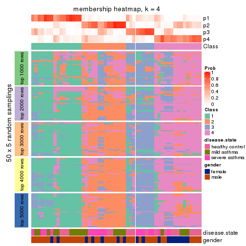
membership_heatmap(res, k = 5)
membership_heatmap(res, k = 6)
As soon as we have had the classes for columns, we can look for signatures which are significantly different between classes which can be candidate marks for certain classes. Following are the heatmaps for signatures.
Signature heatmaps where rows are scaled:
get_signatures(res, k = 2)
get_signatures(res, k = 3)
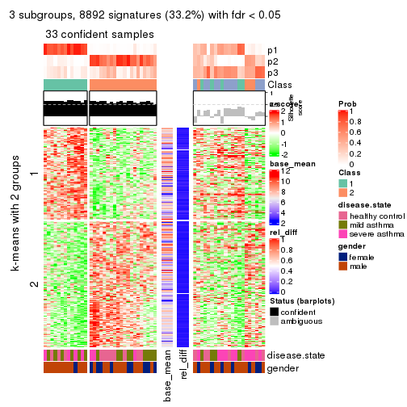
get_signatures(res, k = 4)

get_signatures(res, k = 5)
get_signatures(res, k = 6)
Signature heatmaps where rows are not scaled:
get_signatures(res, k = 2, scale_rows = FALSE)
get_signatures(res, k = 3, scale_rows = FALSE)

get_signatures(res, k = 4, scale_rows = FALSE)
get_signatures(res, k = 5, scale_rows = FALSE)
get_signatures(res, k = 6, scale_rows = FALSE)
Compare the overlap of signatures from different k:
compare_signatures(res)
get_signature() returns a data frame invisibly. TO get the list of signatures, the function
call should be assigned to a variable explicitly. In following code, if plot argument is set
to FALSE, no heatmap is plotted while only the differential analysis is performed.
# code only for demonstration
tb = get_signature(res, k = ..., plot = FALSE)
An example of the output of tb is:
#> which_row fdr mean_1 mean_2 scaled_mean_1 scaled_mean_2 km
#> 1 38 0.042760348 8.373488 9.131774 -0.5533452 0.5164555 1
#> 2 40 0.018707592 7.106213 8.469186 -0.6173731 0.5762149 1
#> 3 55 0.019134737 10.221463 11.207825 -0.6159697 0.5749050 1
#> 4 59 0.006059896 5.921854 7.869574 -0.6899429 0.6439467 1
#> 5 60 0.018055526 8.928898 10.211722 -0.6204761 0.5791110 1
#> 6 98 0.009384629 15.714769 14.887706 0.6635654 -0.6193277 2
...
The columns in tb are:
which_row: row indices corresponding to the input matrix.fdr: FDR for the differential test. mean_x: The mean value in group x.scaled_mean_x: The mean value in group x after rows are scaled.km: Row groups if k-means clustering is applied to rows.UMAP plot which shows how samples are separated.
dimension_reduction(res, k = 2, method = "UMAP")
dimension_reduction(res, k = 3, method = "UMAP")
dimension_reduction(res, k = 4, method = "UMAP")
dimension_reduction(res, k = 5, method = "UMAP")
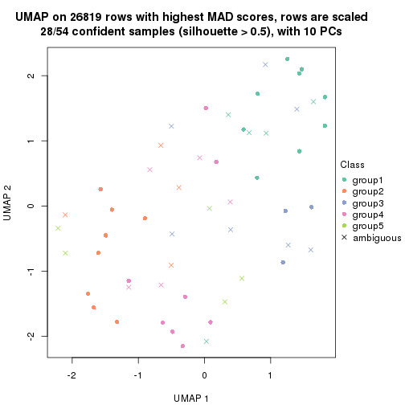
dimension_reduction(res, k = 6, method = "UMAP")
Following heatmap shows how subgroups are split when increasing k:
collect_classes(res)
Test correlation between subgroups and known annotations. If the known annotation is numeric, one-way ANOVA test is applied, and if the known annotation is discrete, chi-squared contingency table test is applied.
test_to_known_factors(res)
#> n disease.state(p) gender(p) k
#> MAD:kmeans 53 0.48153 0.0337 2
#> MAD:kmeans 33 0.44869 0.0586 3
#> MAD:kmeans 30 0.00921 0.4944 4
#> MAD:kmeans 28 0.05272 0.3534 5
#> MAD:kmeans 26 0.00662 0.2762 6
If matrix rows can be associated to genes, consider to use functional_enrichment(res,
...) to perform function enrichment for the signature genes. See this vignette for more detailed explanations.
The object with results only for a single top-value method and a single partition method can be extracted as:
res = res_list["MAD", "skmeans"]
# you can also extract it by
# res = res_list["MAD:skmeans"]
A summary of res and all the functions that can be applied to it:
res
#> A 'ConsensusPartition' object with k = 2, 3, 4, 5, 6.
#> On a matrix with 26819 rows and 54 columns.
#> Top rows (1000, 2000, 3000, 4000, 5000) are extracted by 'MAD' method.
#> Subgroups are detected by 'skmeans' method.
#> Performed in total 1250 partitions by row resampling.
#> Best k for subgroups seems to be 2.
#>
#> Following methods can be applied to this 'ConsensusPartition' object:
#> [1] "cola_report" "collect_classes" "collect_plots"
#> [4] "collect_stats" "colnames" "compare_signatures"
#> [7] "consensus_heatmap" "dimension_reduction" "functional_enrichment"
#> [10] "get_anno_col" "get_anno" "get_classes"
#> [13] "get_consensus" "get_matrix" "get_membership"
#> [16] "get_param" "get_signatures" "get_stats"
#> [19] "is_best_k" "is_stable_k" "membership_heatmap"
#> [22] "ncol" "nrow" "plot_ecdf"
#> [25] "rownames" "select_partition_number" "show"
#> [28] "suggest_best_k" "test_to_known_factors"
collect_plots() function collects all the plots made from res for all k (number of partitions)
into one single page to provide an easy and fast comparison between different k.
collect_plots(res)
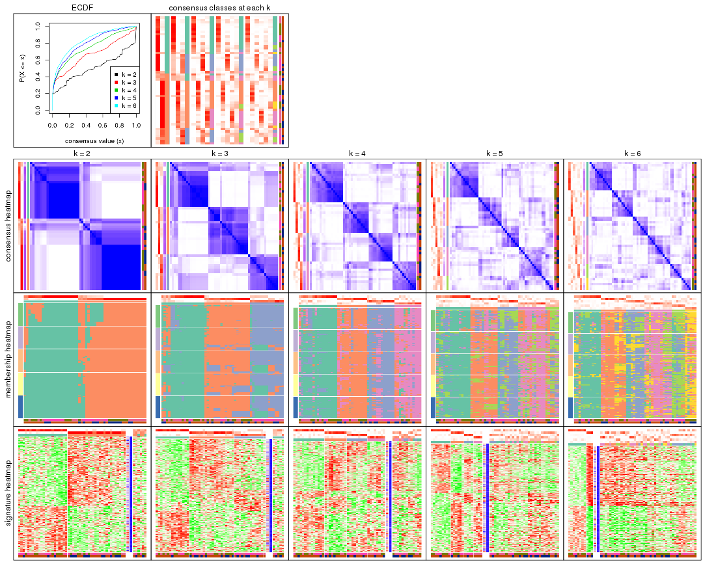
The plots are:
k and the heatmap of
predicted classes for each k.k.k.k.All the plots in panels can be made by individual functions and they are plotted later in this section.
select_partition_number() produces several plots showing different
statistics for choosing “optimized” k. There are following statistics:
k;k, the area increased is defined as \(A_k - A_{k-1}\).The detailed explanations of these statistics can be found in the cola vignette.
Generally speaking, lower PAC score, higher mean silhouette score or higher
concordance corresponds to better partition. Rand index and Jaccard index
measure how similar the current partition is compared to partition with k-1.
If they are too similar, we won't accept k is better than k-1.
select_partition_number(res)
The numeric values for all these statistics can be obtained by get_stats().
get_stats(res)
#> k 1-PAC mean_silhouette concordance area_increased Rand Jaccard
#> 2 2 0.569 0.807 0.917 0.5068 0.497 0.497
#> 3 3 0.536 0.692 0.829 0.3258 0.683 0.444
#> 4 4 0.547 0.584 0.791 0.1287 0.849 0.580
#> 5 5 0.544 0.375 0.640 0.0633 0.906 0.651
#> 6 6 0.578 0.357 0.616 0.0393 0.901 0.576
suggest_best_k() suggests the best \(k\) based on these statistics. The rules are as follows:
suggest_best_k(res)
#> [1] 2
Following shows the table of the partitions (You need to click the show/hide
code output link to see it). The membership matrix (columns with name p*)
is inferred by
clue::cl_consensus()
function with the SE method. Basically the value in the membership matrix
represents the probability to belong to a certain group. The finall class
label for an item is determined with the group with highest probability it
belongs to.
In get_classes() function, the entropy is calculated from the membership
matrix and the silhouette score is calculated from the consensus matrix.
cbind(get_classes(res, k = 2), get_membership(res, k = 2))
#> class entropy silhouette p1 p2
#> GSM665386 2 0.000 0.882 0.000 1.000
#> GSM665389 2 0.000 0.882 0.000 1.000
#> GSM665390 2 1.000 -0.107 0.496 0.504
#> GSM665391 1 0.644 0.801 0.836 0.164
#> GSM665392 2 0.644 0.787 0.164 0.836
#> GSM665393 1 0.204 0.911 0.968 0.032
#> GSM665394 2 0.000 0.882 0.000 1.000
#> GSM665395 1 0.000 0.925 1.000 0.000
#> GSM665396 2 0.000 0.882 0.000 1.000
#> GSM665398 2 0.000 0.882 0.000 1.000
#> GSM665399 1 0.000 0.925 1.000 0.000
#> GSM665400 1 0.000 0.925 1.000 0.000
#> GSM665401 2 0.644 0.787 0.164 0.836
#> GSM665402 1 0.358 0.891 0.932 0.068
#> GSM665403 2 0.000 0.882 0.000 1.000
#> GSM665387 2 0.000 0.882 0.000 1.000
#> GSM665388 2 0.714 0.762 0.196 0.804
#> GSM665397 2 0.000 0.882 0.000 1.000
#> GSM665404 1 0.469 0.866 0.900 0.100
#> GSM665405 1 0.943 0.487 0.640 0.360
#> GSM665406 2 0.000 0.882 0.000 1.000
#> GSM665407 2 0.000 0.882 0.000 1.000
#> GSM665409 1 0.000 0.925 1.000 0.000
#> GSM665413 2 0.000 0.882 0.000 1.000
#> GSM665416 1 0.574 0.832 0.864 0.136
#> GSM665417 1 0.388 0.885 0.924 0.076
#> GSM665418 1 0.000 0.925 1.000 0.000
#> GSM665419 1 0.000 0.925 1.000 0.000
#> GSM665421 1 0.644 0.801 0.836 0.164
#> GSM665422 1 0.955 0.273 0.624 0.376
#> GSM665408 2 0.000 0.882 0.000 1.000
#> GSM665410 2 0.000 0.882 0.000 1.000
#> GSM665411 2 0.000 0.882 0.000 1.000
#> GSM665412 2 0.000 0.882 0.000 1.000
#> GSM665414 2 0.000 0.882 0.000 1.000
#> GSM665415 2 0.983 0.195 0.424 0.576
#> GSM665420 2 0.000 0.882 0.000 1.000
#> GSM665424 1 0.000 0.925 1.000 0.000
#> GSM665425 2 0.969 0.457 0.396 0.604
#> GSM665429 1 0.000 0.925 1.000 0.000
#> GSM665430 1 0.000 0.925 1.000 0.000
#> GSM665431 2 0.781 0.726 0.232 0.768
#> GSM665432 1 0.000 0.925 1.000 0.000
#> GSM665433 1 0.000 0.925 1.000 0.000
#> GSM665434 1 0.000 0.925 1.000 0.000
#> GSM665435 2 0.788 0.675 0.236 0.764
#> GSM665436 2 0.000 0.882 0.000 1.000
#> GSM665423 2 0.000 0.882 0.000 1.000
#> GSM665426 2 0.943 0.365 0.360 0.640
#> GSM665427 2 0.722 0.758 0.200 0.800
#> GSM665428 1 0.000 0.925 1.000 0.000
#> GSM665437 1 0.000 0.925 1.000 0.000
#> GSM665438 2 0.644 0.787 0.164 0.836
#> GSM665439 1 0.000 0.925 1.000 0.000
cbind(get_classes(res, k = 3), get_membership(res, k = 3))
#> class entropy silhouette p1 p2 p3
#> GSM665386 2 0.5873 0.782 0.004 0.684 0.312
#> GSM665389 2 0.5480 0.810 0.004 0.732 0.264
#> GSM665390 1 0.9897 -0.163 0.388 0.344 0.268
#> GSM665391 1 0.0237 0.795 0.996 0.000 0.004
#> GSM665392 3 0.3551 0.694 0.000 0.132 0.868
#> GSM665393 1 0.2955 0.747 0.912 0.008 0.080
#> GSM665394 2 0.5873 0.782 0.004 0.684 0.312
#> GSM665395 3 0.5623 0.689 0.280 0.004 0.716
#> GSM665396 2 0.5873 0.782 0.004 0.684 0.312
#> GSM665398 2 0.1860 0.784 0.000 0.948 0.052
#> GSM665399 1 0.4974 0.530 0.764 0.000 0.236
#> GSM665400 3 0.8573 0.615 0.280 0.136 0.584
#> GSM665401 3 0.3340 0.706 0.000 0.120 0.880
#> GSM665402 1 0.2866 0.755 0.916 0.008 0.076
#> GSM665403 2 0.0892 0.808 0.000 0.980 0.020
#> GSM665387 2 0.4834 0.833 0.004 0.792 0.204
#> GSM665388 3 0.1525 0.645 0.004 0.032 0.964
#> GSM665397 2 0.4629 0.836 0.004 0.808 0.188
#> GSM665404 1 0.0237 0.795 0.996 0.000 0.004
#> GSM665405 1 0.8436 0.449 0.616 0.224 0.160
#> GSM665406 2 0.0424 0.815 0.000 0.992 0.008
#> GSM665407 2 0.3083 0.813 0.024 0.916 0.060
#> GSM665409 1 0.4887 0.546 0.772 0.000 0.228
#> GSM665413 2 0.0592 0.814 0.000 0.988 0.012
#> GSM665416 1 0.0424 0.794 0.992 0.008 0.000
#> GSM665417 1 0.0237 0.795 0.996 0.000 0.004
#> GSM665418 1 0.2356 0.750 0.928 0.000 0.072
#> GSM665419 1 0.0237 0.794 0.996 0.000 0.004
#> GSM665421 1 0.0424 0.794 0.992 0.008 0.000
#> GSM665422 3 0.6762 0.293 0.288 0.036 0.676
#> GSM665408 2 0.3619 0.814 0.000 0.864 0.136
#> GSM665410 2 0.5138 0.816 0.000 0.748 0.252
#> GSM665411 2 0.8817 0.682 0.160 0.568 0.272
#> GSM665412 2 0.0424 0.815 0.000 0.992 0.008
#> GSM665414 2 0.4172 0.839 0.004 0.840 0.156
#> GSM665415 1 0.7884 0.473 0.656 0.224 0.120
#> GSM665420 2 0.0424 0.816 0.000 0.992 0.008
#> GSM665424 3 0.5785 0.672 0.300 0.004 0.696
#> GSM665425 3 0.6018 0.656 0.008 0.308 0.684
#> GSM665429 3 0.5588 0.691 0.276 0.004 0.720
#> GSM665430 3 0.5465 0.683 0.288 0.000 0.712
#> GSM665431 3 0.6057 0.623 0.004 0.340 0.656
#> GSM665432 1 0.0592 0.792 0.988 0.000 0.012
#> GSM665433 1 0.2261 0.759 0.932 0.000 0.068
#> GSM665434 1 0.0000 0.795 1.000 0.000 0.000
#> GSM665435 2 0.8042 0.581 0.248 0.636 0.116
#> GSM665436 2 0.3267 0.834 0.000 0.884 0.116
#> GSM665423 2 0.3995 0.832 0.016 0.868 0.116
#> GSM665426 1 0.9934 -0.162 0.388 0.320 0.292
#> GSM665427 3 0.1129 0.662 0.004 0.020 0.976
#> GSM665428 3 0.5397 0.689 0.280 0.000 0.720
#> GSM665437 3 0.5733 0.647 0.324 0.000 0.676
#> GSM665438 3 0.5845 0.658 0.004 0.308 0.688
#> GSM665439 1 0.0237 0.794 0.996 0.000 0.004
cbind(get_classes(res, k = 4), get_membership(res, k = 4))
#> class entropy silhouette p1 p2 p3 p4
#> GSM665386 4 0.1118 0.6776 0.000 0.036 0.000 0.964
#> GSM665389 4 0.3074 0.6330 0.000 0.152 0.000 0.848
#> GSM665390 4 0.4372 0.5454 0.268 0.004 0.000 0.728
#> GSM665391 1 0.1867 0.7538 0.928 0.000 0.000 0.072
#> GSM665392 3 0.5781 0.1492 0.000 0.028 0.488 0.484
#> GSM665393 1 0.5369 0.6679 0.748 0.068 0.176 0.008
#> GSM665394 4 0.1489 0.6789 0.004 0.044 0.000 0.952
#> GSM665395 3 0.2007 0.7696 0.004 0.036 0.940 0.020
#> GSM665396 4 0.1474 0.6765 0.000 0.052 0.000 0.948
#> GSM665398 2 0.1820 0.7456 0.000 0.944 0.036 0.020
#> GSM665399 1 0.5760 0.3304 0.520 0.020 0.456 0.004
#> GSM665400 3 0.6711 0.4995 0.180 0.168 0.644 0.008
#> GSM665401 3 0.5250 0.6811 0.000 0.080 0.744 0.176
#> GSM665402 1 0.6479 0.6556 0.696 0.028 0.128 0.148
#> GSM665403 2 0.1042 0.7541 0.000 0.972 0.020 0.008
#> GSM665387 4 0.4804 0.2447 0.000 0.384 0.000 0.616
#> GSM665388 4 0.4746 0.1544 0.000 0.000 0.368 0.632
#> GSM665397 4 0.4933 0.1286 0.000 0.432 0.000 0.568
#> GSM665404 1 0.1042 0.7765 0.972 0.000 0.020 0.008
#> GSM665405 1 0.7648 -0.0860 0.428 0.144 0.012 0.416
#> GSM665406 2 0.0921 0.7605 0.000 0.972 0.000 0.028
#> GSM665407 2 0.5269 0.6443 0.060 0.788 0.040 0.112
#> GSM665409 1 0.5679 0.2402 0.492 0.016 0.488 0.004
#> GSM665413 2 0.1576 0.7633 0.000 0.948 0.004 0.048
#> GSM665416 1 0.0844 0.7731 0.980 0.012 0.004 0.004
#> GSM665417 1 0.0000 0.7734 1.000 0.000 0.000 0.000
#> GSM665418 1 0.4839 0.6728 0.756 0.000 0.200 0.044
#> GSM665419 1 0.1743 0.7753 0.940 0.000 0.056 0.004
#> GSM665421 1 0.0336 0.7730 0.992 0.008 0.000 0.000
#> GSM665422 4 0.4513 0.5863 0.076 0.000 0.120 0.804
#> GSM665408 2 0.5334 0.2513 0.004 0.620 0.012 0.364
#> GSM665410 4 0.5050 0.2909 0.004 0.408 0.000 0.588
#> GSM665411 4 0.5722 0.5925 0.148 0.136 0.000 0.716
#> GSM665412 2 0.1557 0.7582 0.000 0.944 0.000 0.056
#> GSM665414 2 0.4981 0.0991 0.000 0.536 0.000 0.464
#> GSM665415 1 0.5209 0.5641 0.756 0.104 0.000 0.140
#> GSM665420 2 0.1661 0.7620 0.000 0.944 0.004 0.052
#> GSM665424 3 0.1749 0.7691 0.012 0.024 0.952 0.012
#> GSM665425 3 0.5148 0.6126 0.020 0.248 0.720 0.012
#> GSM665429 3 0.1484 0.7735 0.004 0.020 0.960 0.016
#> GSM665430 3 0.0524 0.7671 0.008 0.000 0.988 0.004
#> GSM665431 2 0.4605 0.3522 0.000 0.664 0.336 0.000
#> GSM665432 1 0.3668 0.7240 0.808 0.000 0.188 0.004
#> GSM665433 1 0.6362 0.5463 0.616 0.000 0.288 0.096
#> GSM665434 1 0.0817 0.7776 0.976 0.000 0.024 0.000
#> GSM665435 2 0.7084 0.5293 0.148 0.644 0.032 0.176
#> GSM665436 2 0.3539 0.6903 0.000 0.820 0.004 0.176
#> GSM665423 2 0.3780 0.7023 0.016 0.832 0.004 0.148
#> GSM665426 4 0.6461 0.5349 0.244 0.092 0.012 0.652
#> GSM665427 3 0.5465 0.3886 0.000 0.020 0.588 0.392
#> GSM665428 3 0.1229 0.7730 0.008 0.004 0.968 0.020
#> GSM665437 3 0.2382 0.7288 0.080 0.004 0.912 0.004
#> GSM665438 3 0.5113 0.5826 0.000 0.264 0.704 0.032
#> GSM665439 1 0.2053 0.7712 0.924 0.000 0.072 0.004
cbind(get_classes(res, k = 5), get_membership(res, k = 5))
#> class entropy silhouette p1 p2 p3 p4 p5
#> GSM665386 4 0.330 0.5026 0.000 0.076 0.000 0.848 0.076
#> GSM665389 4 0.406 0.5039 0.000 0.152 0.000 0.784 0.064
#> GSM665390 4 0.537 0.4707 0.200 0.032 0.000 0.700 0.068
#> GSM665391 1 0.275 0.7008 0.884 0.000 0.004 0.080 0.032
#> GSM665392 5 0.700 0.0888 0.000 0.008 0.268 0.344 0.380
#> GSM665393 1 0.664 0.4331 0.592 0.052 0.220 0.000 0.136
#> GSM665394 4 0.182 0.5234 0.000 0.024 0.000 0.932 0.044
#> GSM665395 3 0.169 0.5581 0.004 0.012 0.944 0.004 0.036
#> GSM665396 4 0.108 0.5213 0.000 0.008 0.000 0.964 0.028
#> GSM665398 2 0.667 0.3677 0.000 0.560 0.160 0.032 0.248
#> GSM665399 3 0.548 -0.1925 0.444 0.008 0.504 0.000 0.044
#> GSM665400 3 0.671 0.3066 0.060 0.124 0.584 0.000 0.232
#> GSM665401 3 0.631 0.2463 0.000 0.044 0.608 0.100 0.248
#> GSM665402 1 0.716 0.4253 0.564 0.012 0.236 0.064 0.124
#> GSM665403 2 0.613 0.4380 0.000 0.628 0.104 0.036 0.232
#> GSM665387 4 0.533 0.2058 0.000 0.328 0.008 0.612 0.052
#> GSM665388 4 0.675 -0.0655 0.000 0.012 0.180 0.460 0.348
#> GSM665397 2 0.576 0.0109 0.000 0.492 0.000 0.420 0.088
#> GSM665404 1 0.227 0.7184 0.920 0.000 0.020 0.032 0.028
#> GSM665405 4 0.813 0.1334 0.304 0.056 0.016 0.360 0.264
#> GSM665406 2 0.446 0.5182 0.004 0.744 0.000 0.052 0.200
#> GSM665407 5 0.847 -0.2042 0.020 0.316 0.092 0.220 0.352
#> GSM665409 1 0.541 0.1492 0.476 0.000 0.468 0.000 0.056
#> GSM665413 2 0.288 0.5869 0.000 0.868 0.000 0.032 0.100
#> GSM665416 1 0.247 0.7064 0.900 0.012 0.012 0.000 0.076
#> GSM665417 1 0.051 0.7206 0.984 0.000 0.000 0.000 0.016
#> GSM665418 1 0.677 0.4289 0.584 0.020 0.128 0.024 0.244
#> GSM665419 1 0.224 0.7126 0.908 0.000 0.068 0.000 0.024
#> GSM665421 1 0.124 0.7196 0.960 0.004 0.008 0.000 0.028
#> GSM665422 4 0.636 0.2362 0.064 0.004 0.040 0.548 0.344
#> GSM665408 5 0.784 -0.0934 0.008 0.280 0.044 0.300 0.368
#> GSM665410 4 0.674 0.2117 0.012 0.192 0.000 0.484 0.312
#> GSM665411 4 0.773 0.3738 0.096 0.216 0.000 0.468 0.220
#> GSM665412 2 0.633 0.3203 0.008 0.548 0.000 0.160 0.284
#> GSM665414 2 0.515 0.1535 0.000 0.560 0.000 0.396 0.044
#> GSM665415 1 0.710 0.2970 0.560 0.220 0.000 0.100 0.120
#> GSM665420 2 0.106 0.5957 0.004 0.968 0.000 0.020 0.008
#> GSM665424 3 0.112 0.5687 0.016 0.000 0.964 0.000 0.020
#> GSM665425 5 0.710 -0.0427 0.024 0.200 0.356 0.000 0.420
#> GSM665429 3 0.267 0.5369 0.004 0.000 0.872 0.008 0.116
#> GSM665430 3 0.432 0.4389 0.036 0.000 0.724 0.000 0.240
#> GSM665431 2 0.589 0.3087 0.000 0.596 0.240 0.000 0.164
#> GSM665432 1 0.399 0.6167 0.756 0.000 0.216 0.000 0.028
#> GSM665433 1 0.824 0.1370 0.404 0.008 0.248 0.104 0.236
#> GSM665434 1 0.197 0.7185 0.924 0.000 0.052 0.000 0.024
#> GSM665435 2 0.537 0.5021 0.116 0.748 0.012 0.060 0.064
#> GSM665436 2 0.308 0.5812 0.004 0.868 0.000 0.072 0.056
#> GSM665423 2 0.357 0.5773 0.020 0.848 0.000 0.052 0.080
#> GSM665426 4 0.695 0.3642 0.156 0.052 0.008 0.584 0.200
#> GSM665427 5 0.771 0.1070 0.000 0.060 0.332 0.232 0.376
#> GSM665428 3 0.358 0.5041 0.008 0.000 0.808 0.016 0.168
#> GSM665437 3 0.687 0.2441 0.112 0.052 0.516 0.000 0.320
#> GSM665438 5 0.709 0.0465 0.004 0.220 0.352 0.012 0.412
#> GSM665439 1 0.253 0.7070 0.892 0.000 0.076 0.000 0.032
cbind(get_classes(res, k = 6), get_membership(res, k = 6))
#> class entropy silhouette p1 p2 p3 p4 p5 p6
#> GSM665386 4 0.1232 0.48456 0.000 0.024 0.016 0.956 0.004 0.000
#> GSM665389 4 0.5991 0.30962 0.012 0.144 0.000 0.604 0.032 0.208
#> GSM665390 4 0.6826 0.27740 0.196 0.040 0.000 0.552 0.052 0.160
#> GSM665391 1 0.3265 0.66878 0.864 0.000 0.028 0.032 0.040 0.036
#> GSM665392 4 0.7299 0.33857 0.000 0.000 0.172 0.420 0.244 0.164
#> GSM665393 1 0.6616 0.16492 0.488 0.020 0.332 0.004 0.032 0.124
#> GSM665394 4 0.1987 0.45622 0.004 0.004 0.000 0.908 0.004 0.080
#> GSM665395 3 0.3587 0.45469 0.008 0.008 0.816 0.004 0.132 0.032
#> GSM665396 4 0.2766 0.44438 0.008 0.000 0.000 0.844 0.008 0.140
#> GSM665398 2 0.6987 0.01104 0.000 0.352 0.260 0.008 0.040 0.340
#> GSM665399 3 0.5093 0.05504 0.388 0.000 0.548 0.000 0.044 0.020
#> GSM665400 3 0.6631 0.29992 0.064 0.072 0.608 0.004 0.072 0.180
#> GSM665401 3 0.6169 0.31537 0.000 0.020 0.592 0.060 0.080 0.248
#> GSM665402 1 0.7458 0.22882 0.472 0.004 0.272 0.120 0.044 0.088
#> GSM665403 2 0.6312 0.17046 0.000 0.476 0.172 0.000 0.032 0.320
#> GSM665387 4 0.4898 0.35624 0.004 0.208 0.016 0.708 0.024 0.040
#> GSM665388 4 0.7043 0.39898 0.008 0.008 0.108 0.508 0.248 0.120
#> GSM665397 2 0.5782 0.11416 0.004 0.508 0.000 0.380 0.028 0.080
#> GSM665404 1 0.2637 0.69177 0.892 0.000 0.040 0.028 0.004 0.036
#> GSM665405 6 0.7075 0.27420 0.248 0.020 0.032 0.180 0.020 0.500
#> GSM665406 2 0.4534 0.30658 0.000 0.660 0.024 0.004 0.016 0.296
#> GSM665407 6 0.7170 0.18430 0.032 0.152 0.208 0.040 0.028 0.540
#> GSM665409 3 0.5884 -0.09482 0.428 0.000 0.440 0.000 0.108 0.024
#> GSM665413 2 0.3925 0.49713 0.000 0.804 0.048 0.004 0.036 0.108
#> GSM665416 1 0.2485 0.68239 0.884 0.004 0.020 0.000 0.004 0.088
#> GSM665417 1 0.1285 0.68811 0.944 0.000 0.000 0.004 0.052 0.000
#> GSM665418 5 0.5515 0.13729 0.388 0.016 0.012 0.008 0.536 0.040
#> GSM665419 1 0.3318 0.62349 0.796 0.000 0.032 0.000 0.172 0.000
#> GSM665421 1 0.1843 0.69394 0.932 0.032 0.004 0.000 0.016 0.016
#> GSM665422 4 0.7378 0.38297 0.028 0.012 0.052 0.464 0.268 0.176
#> GSM665408 6 0.5766 0.45802 0.000 0.160 0.024 0.092 0.056 0.668
#> GSM665410 6 0.5257 0.36713 0.008 0.120 0.000 0.232 0.004 0.636
#> GSM665411 4 0.8276 0.13907 0.140 0.180 0.008 0.352 0.044 0.276
#> GSM665412 6 0.5403 0.11845 0.000 0.408 0.024 0.036 0.012 0.520
#> GSM665414 2 0.4976 0.29491 0.004 0.604 0.000 0.332 0.012 0.048
#> GSM665415 1 0.7091 0.16762 0.492 0.256 0.000 0.028 0.068 0.156
#> GSM665420 2 0.0893 0.53864 0.000 0.972 0.004 0.004 0.004 0.016
#> GSM665424 3 0.3277 0.43049 0.016 0.000 0.792 0.000 0.188 0.004
#> GSM665425 5 0.5695 0.46877 0.012 0.168 0.100 0.004 0.668 0.048
#> GSM665429 3 0.4072 0.35372 0.000 0.004 0.704 0.000 0.260 0.032
#> GSM665430 5 0.4214 -0.00838 0.004 0.000 0.460 0.000 0.528 0.008
#> GSM665431 2 0.6600 0.32248 0.000 0.532 0.224 0.000 0.108 0.136
#> GSM665432 1 0.5167 0.48760 0.632 0.000 0.216 0.000 0.148 0.004
#> GSM665433 5 0.5868 0.35720 0.292 0.008 0.068 0.036 0.588 0.008
#> GSM665434 1 0.2894 0.67208 0.852 0.000 0.036 0.000 0.108 0.004
#> GSM665435 2 0.4647 0.47742 0.052 0.780 0.012 0.072 0.072 0.012
#> GSM665436 2 0.2171 0.52690 0.000 0.912 0.000 0.040 0.016 0.032
#> GSM665423 2 0.2776 0.51422 0.008 0.884 0.000 0.032 0.020 0.056
#> GSM665426 4 0.8175 -0.09133 0.116 0.056 0.000 0.324 0.212 0.292
#> GSM665427 4 0.8060 0.22554 0.000 0.032 0.208 0.312 0.300 0.148
#> GSM665428 3 0.4840 0.34176 0.000 0.004 0.664 0.032 0.268 0.032
#> GSM665437 5 0.4423 0.46861 0.052 0.032 0.176 0.000 0.740 0.000
#> GSM665438 5 0.6296 0.41350 0.000 0.172 0.108 0.004 0.596 0.120
#> GSM665439 1 0.3612 0.61652 0.780 0.000 0.052 0.000 0.168 0.000
Heatmaps for the consensus matrix. It visualizes the probability of two samples to be in a same group.
consensus_heatmap(res, k = 2)

consensus_heatmap(res, k = 3)
consensus_heatmap(res, k = 4)
consensus_heatmap(res, k = 5)
consensus_heatmap(res, k = 6)

Heatmaps for the membership of samples in all partitions to see how consistent they are:
membership_heatmap(res, k = 2)
membership_heatmap(res, k = 3)
membership_heatmap(res, k = 4)
membership_heatmap(res, k = 5)
membership_heatmap(res, k = 6)
As soon as we have had the classes for columns, we can look for signatures which are significantly different between classes which can be candidate marks for certain classes. Following are the heatmaps for signatures.
Signature heatmaps where rows are scaled:
get_signatures(res, k = 2)
get_signatures(res, k = 3)
get_signatures(res, k = 4)
get_signatures(res, k = 5)
get_signatures(res, k = 6)
Signature heatmaps where rows are not scaled:
get_signatures(res, k = 2, scale_rows = FALSE)
get_signatures(res, k = 3, scale_rows = FALSE)
get_signatures(res, k = 4, scale_rows = FALSE)
get_signatures(res, k = 5, scale_rows = FALSE)
get_signatures(res, k = 6, scale_rows = FALSE)
Compare the overlap of signatures from different k:
compare_signatures(res)
get_signature() returns a data frame invisibly. TO get the list of signatures, the function
call should be assigned to a variable explicitly. In following code, if plot argument is set
to FALSE, no heatmap is plotted while only the differential analysis is performed.
# code only for demonstration
tb = get_signature(res, k = ..., plot = FALSE)
An example of the output of tb is:
#> which_row fdr mean_1 mean_2 scaled_mean_1 scaled_mean_2 km
#> 1 38 0.042760348 8.373488 9.131774 -0.5533452 0.5164555 1
#> 2 40 0.018707592 7.106213 8.469186 -0.6173731 0.5762149 1
#> 3 55 0.019134737 10.221463 11.207825 -0.6159697 0.5749050 1
#> 4 59 0.006059896 5.921854 7.869574 -0.6899429 0.6439467 1
#> 5 60 0.018055526 8.928898 10.211722 -0.6204761 0.5791110 1
#> 6 98 0.009384629 15.714769 14.887706 0.6635654 -0.6193277 2
...
The columns in tb are:
which_row: row indices corresponding to the input matrix.fdr: FDR for the differential test. mean_x: The mean value in group x.scaled_mean_x: The mean value in group x after rows are scaled.km: Row groups if k-means clustering is applied to rows.UMAP plot which shows how samples are separated.
dimension_reduction(res, k = 2, method = "UMAP")
dimension_reduction(res, k = 3, method = "UMAP")
dimension_reduction(res, k = 4, method = "UMAP")
dimension_reduction(res, k = 5, method = "UMAP")
dimension_reduction(res, k = 6, method = "UMAP")
Following heatmap shows how subgroups are split when increasing k:
collect_classes(res)
Test correlation between subgroups and known annotations. If the known annotation is numeric, one-way ANOVA test is applied, and if the known annotation is discrete, chi-squared contingency table test is applied.
test_to_known_factors(res)
#> n disease.state(p) gender(p) k
#> MAD:skmeans 48 0.36767 0.0349 2
#> MAD:skmeans 49 0.01027 0.0457 3
#> MAD:skmeans 41 0.02359 0.7202 4
#> MAD:skmeans 23 0.00586 0.5103 5
#> MAD:skmeans 11 0.41542 0.3000 6
If matrix rows can be associated to genes, consider to use functional_enrichment(res,
...) to perform function enrichment for the signature genes. See this vignette for more detailed explanations.
The object with results only for a single top-value method and a single partition method can be extracted as:
res = res_list["MAD", "pam"]
# you can also extract it by
# res = res_list["MAD:pam"]
A summary of res and all the functions that can be applied to it:
res
#> A 'ConsensusPartition' object with k = 2, 3, 4, 5, 6.
#> On a matrix with 26819 rows and 54 columns.
#> Top rows (1000, 2000, 3000, 4000, 5000) are extracted by 'MAD' method.
#> Subgroups are detected by 'pam' method.
#> Performed in total 1250 partitions by row resampling.
#> Best k for subgroups seems to be 2.
#>
#> Following methods can be applied to this 'ConsensusPartition' object:
#> [1] "cola_report" "collect_classes" "collect_plots"
#> [4] "collect_stats" "colnames" "compare_signatures"
#> [7] "consensus_heatmap" "dimension_reduction" "functional_enrichment"
#> [10] "get_anno_col" "get_anno" "get_classes"
#> [13] "get_consensus" "get_matrix" "get_membership"
#> [16] "get_param" "get_signatures" "get_stats"
#> [19] "is_best_k" "is_stable_k" "membership_heatmap"
#> [22] "ncol" "nrow" "plot_ecdf"
#> [25] "rownames" "select_partition_number" "show"
#> [28] "suggest_best_k" "test_to_known_factors"
collect_plots() function collects all the plots made from res for all k (number of partitions)
into one single page to provide an easy and fast comparison between different k.
collect_plots(res)
The plots are:
k and the heatmap of
predicted classes for each k.k.k.k.All the plots in panels can be made by individual functions and they are plotted later in this section.
select_partition_number() produces several plots showing different
statistics for choosing “optimized” k. There are following statistics:
k;k, the area increased is defined as \(A_k - A_{k-1}\).The detailed explanations of these statistics can be found in the cola vignette.
Generally speaking, lower PAC score, higher mean silhouette score or higher
concordance corresponds to better partition. Rand index and Jaccard index
measure how similar the current partition is compared to partition with k-1.
If they are too similar, we won't accept k is better than k-1.
select_partition_number(res)
The numeric values for all these statistics can be obtained by get_stats().
get_stats(res)
#> k 1-PAC mean_silhouette concordance area_increased Rand Jaccard
#> 2 2 0.341 0.623 0.827 0.4768 0.497 0.497
#> 3 3 0.302 0.373 0.721 0.3568 0.667 0.439
#> 4 4 0.385 0.403 0.697 0.1399 0.746 0.408
#> 5 5 0.483 0.309 0.652 0.0773 0.869 0.541
#> 6 6 0.607 0.273 0.596 0.0475 0.841 0.392
suggest_best_k() suggests the best \(k\) based on these statistics. The rules are as follows:
suggest_best_k(res)
#> [1] 2
Following shows the table of the partitions (You need to click the show/hide
code output link to see it). The membership matrix (columns with name p*)
is inferred by
clue::cl_consensus()
function with the SE method. Basically the value in the membership matrix
represents the probability to belong to a certain group. The finall class
label for an item is determined with the group with highest probability it
belongs to.
In get_classes() function, the entropy is calculated from the membership
matrix and the silhouette score is calculated from the consensus matrix.
cbind(get_classes(res, k = 2), get_membership(res, k = 2))
#> class entropy silhouette p1 p2
#> GSM665386 2 0.9795 -0.10697 0.416 0.584
#> GSM665389 2 0.0000 0.80536 0.000 1.000
#> GSM665390 2 0.0672 0.80624 0.008 0.992
#> GSM665391 1 0.8327 0.64178 0.736 0.264
#> GSM665392 2 0.5294 0.77150 0.120 0.880
#> GSM665393 1 0.9248 0.57616 0.660 0.340
#> GSM665394 1 0.9963 0.43930 0.536 0.464
#> GSM665395 1 0.9209 0.57765 0.664 0.336
#> GSM665396 2 0.0376 0.80593 0.004 0.996
#> GSM665398 2 0.6048 0.75274 0.148 0.852
#> GSM665399 1 0.0376 0.72104 0.996 0.004
#> GSM665400 1 0.9000 0.60519 0.684 0.316
#> GSM665401 2 0.5408 0.76895 0.124 0.876
#> GSM665402 1 0.4161 0.71406 0.916 0.084
#> GSM665403 2 0.8555 0.52990 0.280 0.720
#> GSM665387 1 0.9970 0.43480 0.532 0.468
#> GSM665388 1 0.9922 0.46535 0.552 0.448
#> GSM665397 2 0.1184 0.80788 0.016 0.984
#> GSM665404 1 0.1184 0.71683 0.984 0.016
#> GSM665405 2 0.9963 0.24928 0.464 0.536
#> GSM665406 2 0.3733 0.79410 0.072 0.928
#> GSM665407 2 0.4298 0.78441 0.088 0.912
#> GSM665409 1 0.0000 0.72172 1.000 0.000
#> GSM665413 2 0.2423 0.80497 0.040 0.960
#> GSM665416 1 0.0672 0.71993 0.992 0.008
#> GSM665417 1 0.0000 0.72172 1.000 0.000
#> GSM665418 1 0.0376 0.72207 0.996 0.004
#> GSM665419 1 0.0000 0.72172 1.000 0.000
#> GSM665421 1 0.9000 0.59909 0.684 0.316
#> GSM665422 2 0.8861 0.51884 0.304 0.696
#> GSM665408 2 0.3431 0.79977 0.064 0.936
#> GSM665410 2 0.0376 0.80532 0.004 0.996
#> GSM665411 2 0.2423 0.80775 0.040 0.960
#> GSM665412 2 0.2423 0.80412 0.040 0.960
#> GSM665414 2 1.0000 -0.39947 0.496 0.504
#> GSM665415 1 0.9635 0.53548 0.612 0.388
#> GSM665420 2 0.2043 0.80805 0.032 0.968
#> GSM665424 1 0.0672 0.72037 0.992 0.008
#> GSM665425 1 0.8813 0.32342 0.700 0.300
#> GSM665429 1 0.9686 0.52578 0.604 0.396
#> GSM665430 1 0.1633 0.72048 0.976 0.024
#> GSM665431 1 0.9661 0.53145 0.608 0.392
#> GSM665432 1 0.0000 0.72172 1.000 0.000
#> GSM665433 1 0.4431 0.69086 0.908 0.092
#> GSM665434 1 0.0376 0.72193 0.996 0.004
#> GSM665435 1 0.9815 0.49904 0.580 0.420
#> GSM665436 2 0.1184 0.80635 0.016 0.984
#> GSM665423 1 0.9996 0.39512 0.512 0.488
#> GSM665426 2 0.9635 -0.00682 0.388 0.612
#> GSM665427 2 0.4690 0.78183 0.100 0.900
#> GSM665428 1 0.8955 0.61540 0.688 0.312
#> GSM665437 1 0.4815 0.69251 0.896 0.104
#> GSM665438 2 0.0000 0.80536 0.000 1.000
#> GSM665439 1 0.1843 0.71877 0.972 0.028
cbind(get_classes(res, k = 3), get_membership(res, k = 3))
#> class entropy silhouette p1 p2 p3
#> GSM665386 2 0.750 0.478205 0.276 0.652 0.072
#> GSM665389 2 0.175 0.607277 0.000 0.952 0.048
#> GSM665390 2 0.195 0.609097 0.008 0.952 0.040
#> GSM665391 1 0.751 0.471563 0.696 0.144 0.160
#> GSM665392 3 0.573 0.369206 0.000 0.324 0.676
#> GSM665393 1 0.707 0.033749 0.504 0.020 0.476
#> GSM665394 2 0.733 0.319292 0.388 0.576 0.036
#> GSM665395 3 0.565 0.319863 0.312 0.000 0.688
#> GSM665396 2 0.175 0.607277 0.000 0.952 0.048
#> GSM665398 3 0.865 0.232952 0.108 0.380 0.512
#> GSM665399 1 0.619 0.289262 0.580 0.000 0.420
#> GSM665400 3 0.536 0.367824 0.276 0.000 0.724
#> GSM665401 3 0.529 0.476281 0.000 0.268 0.732
#> GSM665402 1 0.522 0.529308 0.788 0.016 0.196
#> GSM665403 2 0.886 0.380316 0.192 0.576 0.232
#> GSM665387 2 0.820 0.396849 0.316 0.588 0.096
#> GSM665388 2 0.848 0.285366 0.380 0.524 0.096
#> GSM665397 2 0.186 0.609766 0.000 0.948 0.052
#> GSM665404 1 0.383 0.570762 0.868 0.008 0.124
#> GSM665405 1 0.933 -0.048138 0.440 0.396 0.164
#> GSM665406 2 0.506 0.572933 0.148 0.820 0.032
#> GSM665407 2 0.704 -0.089253 0.020 0.532 0.448
#> GSM665409 1 0.617 0.289066 0.588 0.000 0.412
#> GSM665413 2 0.369 0.597891 0.012 0.880 0.108
#> GSM665416 1 0.392 0.563971 0.856 0.004 0.140
#> GSM665417 1 0.000 0.598782 1.000 0.000 0.000
#> GSM665418 1 0.103 0.589870 0.976 0.000 0.024
#> GSM665419 1 0.000 0.598782 1.000 0.000 0.000
#> GSM665421 1 0.911 0.186668 0.532 0.292 0.176
#> GSM665422 2 0.894 -0.099926 0.132 0.500 0.368
#> GSM665408 2 0.695 0.000302 0.020 0.572 0.408
#> GSM665410 2 0.207 0.602631 0.000 0.940 0.060
#> GSM665411 2 0.327 0.600879 0.004 0.892 0.104
#> GSM665412 2 0.440 0.573205 0.116 0.856 0.028
#> GSM665414 2 0.606 0.358854 0.384 0.616 0.000
#> GSM665415 1 0.804 -0.062406 0.508 0.428 0.064
#> GSM665420 2 0.285 0.606694 0.012 0.920 0.068
#> GSM665424 3 0.226 0.553477 0.068 0.000 0.932
#> GSM665425 3 0.690 0.313897 0.268 0.048 0.684
#> GSM665429 3 0.474 0.554872 0.104 0.048 0.848
#> GSM665430 1 0.628 0.086427 0.540 0.000 0.460
#> GSM665431 2 0.947 0.276297 0.288 0.492 0.220
#> GSM665432 1 0.595 0.229010 0.640 0.000 0.360
#> GSM665433 1 0.264 0.584785 0.932 0.020 0.048
#> GSM665434 1 0.000 0.598782 1.000 0.000 0.000
#> GSM665435 1 0.827 -0.126931 0.484 0.440 0.076
#> GSM665436 2 0.158 0.606391 0.008 0.964 0.028
#> GSM665423 2 0.633 0.418614 0.332 0.656 0.012
#> GSM665426 2 0.568 0.470126 0.316 0.684 0.000
#> GSM665427 2 0.631 -0.106293 0.000 0.512 0.488
#> GSM665428 3 0.361 0.555071 0.096 0.016 0.888
#> GSM665437 1 0.798 0.178070 0.572 0.072 0.356
#> GSM665438 3 0.630 -0.051049 0.000 0.480 0.520
#> GSM665439 1 0.000 0.598782 1.000 0.000 0.000
cbind(get_classes(res, k = 4), get_membership(res, k = 4))
#> class entropy silhouette p1 p2 p3 p4
#> GSM665386 4 0.8880 0.05657 0.296 0.216 0.064 0.424
#> GSM665389 4 0.0469 0.58452 0.000 0.012 0.000 0.988
#> GSM665390 4 0.3105 0.54385 0.004 0.140 0.000 0.856
#> GSM665391 1 0.7244 0.52605 0.660 0.140 0.124 0.076
#> GSM665392 3 0.7083 -0.00772 0.000 0.124 0.444 0.432
#> GSM665393 1 0.8044 0.39582 0.548 0.140 0.256 0.056
#> GSM665394 1 0.8000 0.21304 0.448 0.216 0.012 0.324
#> GSM665395 3 0.5597 0.40923 0.276 0.036 0.680 0.008
#> GSM665396 4 0.0469 0.58452 0.000 0.012 0.000 0.988
#> GSM665398 2 0.6652 0.45574 0.036 0.644 0.260 0.060
#> GSM665399 3 0.6355 0.36650 0.308 0.060 0.620 0.012
#> GSM665400 3 0.6903 0.36605 0.272 0.112 0.604 0.012
#> GSM665401 3 0.5407 0.39791 0.000 0.036 0.668 0.296
#> GSM665402 1 0.5549 0.51718 0.740 0.060 0.184 0.016
#> GSM665403 2 0.4821 0.60968 0.032 0.804 0.128 0.036
#> GSM665387 2 0.6322 0.37979 0.008 0.616 0.064 0.312
#> GSM665388 4 0.9973 -0.04878 0.256 0.220 0.244 0.280
#> GSM665397 4 0.4319 0.48025 0.000 0.228 0.012 0.760
#> GSM665404 1 0.3841 0.58121 0.864 0.028 0.076 0.032
#> GSM665405 4 0.6443 0.38216 0.204 0.040 0.068 0.688
#> GSM665406 2 0.5573 0.53537 0.052 0.676 0.000 0.272
#> GSM665407 4 0.4906 0.49726 0.000 0.084 0.140 0.776
#> GSM665409 3 0.5859 0.11115 0.472 0.032 0.496 0.000
#> GSM665413 2 0.2593 0.61946 0.000 0.904 0.016 0.080
#> GSM665416 1 0.4300 0.56899 0.832 0.036 0.112 0.020
#> GSM665417 1 0.0000 0.59868 1.000 0.000 0.000 0.000
#> GSM665418 1 0.1743 0.56827 0.940 0.056 0.004 0.000
#> GSM665419 1 0.0000 0.59868 1.000 0.000 0.000 0.000
#> GSM665421 1 0.8502 0.46452 0.552 0.164 0.136 0.148
#> GSM665422 4 0.5643 0.48561 0.064 0.052 0.116 0.768
#> GSM665408 4 0.5142 0.34062 0.004 0.256 0.028 0.712
#> GSM665410 4 0.1389 0.57097 0.000 0.048 0.000 0.952
#> GSM665411 4 0.4990 0.49524 0.000 0.184 0.060 0.756
#> GSM665412 2 0.5364 0.49083 0.028 0.652 0.000 0.320
#> GSM665414 1 0.7680 0.16498 0.444 0.188 0.004 0.364
#> GSM665415 1 0.7395 0.37389 0.548 0.100 0.028 0.324
#> GSM665420 2 0.5360 0.47671 0.008 0.660 0.016 0.316
#> GSM665424 3 0.0707 0.56835 0.000 0.020 0.980 0.000
#> GSM665425 2 0.6818 0.29908 0.168 0.600 0.232 0.000
#> GSM665429 3 0.2099 0.55684 0.004 0.020 0.936 0.040
#> GSM665430 3 0.5579 0.40375 0.252 0.060 0.688 0.000
#> GSM665431 2 0.6133 0.50079 0.000 0.672 0.124 0.204
#> GSM665432 1 0.4916 -0.11129 0.576 0.000 0.424 0.000
#> GSM665433 1 0.2987 0.55273 0.880 0.104 0.016 0.000
#> GSM665434 1 0.0000 0.59868 1.000 0.000 0.000 0.000
#> GSM665435 1 0.8312 0.40535 0.540 0.176 0.068 0.216
#> GSM665436 2 0.4011 0.59090 0.008 0.784 0.000 0.208
#> GSM665423 2 0.7795 0.11292 0.280 0.424 0.000 0.296
#> GSM665426 4 0.5649 0.08047 0.392 0.028 0.000 0.580
#> GSM665427 3 0.7221 -0.13626 0.000 0.140 0.436 0.424
#> GSM665428 3 0.1042 0.56809 0.000 0.020 0.972 0.008
#> GSM665437 1 0.7060 -0.13797 0.492 0.096 0.404 0.008
#> GSM665438 2 0.4237 0.56421 0.000 0.808 0.152 0.040
#> GSM665439 1 0.0000 0.59868 1.000 0.000 0.000 0.000
cbind(get_classes(res, k = 5), get_membership(res, k = 5))
#> class entropy silhouette p1 p2 p3 p4 p5
#> GSM665386 4 0.8075 0.11409 0.300 0.316 0.036 0.324 0.024
#> GSM665389 4 0.0290 0.58613 0.000 0.008 0.000 0.992 0.000
#> GSM665390 4 0.5078 0.45121 0.004 0.232 0.036 0.704 0.024
#> GSM665391 1 0.1662 0.45933 0.936 0.056 0.000 0.004 0.004
#> GSM665392 3 0.8883 0.21983 0.132 0.052 0.416 0.200 0.200
#> GSM665393 1 0.4607 0.11821 0.720 0.000 0.048 0.004 0.228
#> GSM665394 1 0.7973 -0.04405 0.384 0.316 0.036 0.240 0.024
#> GSM665395 3 0.5550 0.11761 0.468 0.000 0.472 0.004 0.056
#> GSM665396 4 0.0693 0.58562 0.000 0.008 0.000 0.980 0.012
#> GSM665398 2 0.7463 0.17025 0.184 0.508 0.068 0.004 0.236
#> GSM665399 1 0.5585 -0.35915 0.504 0.000 0.432 0.004 0.060
#> GSM665400 5 0.5520 0.18438 0.364 0.000 0.076 0.000 0.560
#> GSM665401 3 0.8428 0.08791 0.208 0.008 0.404 0.156 0.224
#> GSM665402 1 0.1571 0.41921 0.936 0.000 0.000 0.004 0.060
#> GSM665403 2 0.3327 0.53498 0.144 0.828 0.028 0.000 0.000
#> GSM665387 2 0.6192 0.22985 0.056 0.644 0.036 0.240 0.024
#> GSM665388 3 0.8903 0.13224 0.276 0.220 0.324 0.156 0.024
#> GSM665397 4 0.6494 0.32616 0.056 0.320 0.036 0.568 0.020
#> GSM665404 1 0.4370 0.43034 0.724 0.000 0.000 0.040 0.236
#> GSM665405 4 0.4631 0.48179 0.160 0.004 0.008 0.760 0.068
#> GSM665406 2 0.4400 0.51385 0.060 0.744 0.000 0.196 0.000
#> GSM665407 4 0.4378 0.52024 0.100 0.024 0.020 0.812 0.044
#> GSM665409 5 0.6678 0.00176 0.256 0.000 0.312 0.000 0.432
#> GSM665413 2 0.0671 0.58188 0.016 0.980 0.000 0.004 0.000
#> GSM665416 1 0.3003 0.45811 0.864 0.000 0.000 0.044 0.092
#> GSM665417 1 0.4138 0.37881 0.616 0.000 0.000 0.000 0.384
#> GSM665418 5 0.4256 -0.16854 0.436 0.000 0.000 0.000 0.564
#> GSM665419 1 0.4138 0.37881 0.616 0.000 0.000 0.000 0.384
#> GSM665421 1 0.2522 0.44740 0.880 0.108 0.000 0.012 0.000
#> GSM665422 4 0.4077 0.54271 0.064 0.008 0.024 0.828 0.076
#> GSM665408 4 0.3424 0.37162 0.000 0.240 0.000 0.760 0.000
#> GSM665410 4 0.0794 0.57876 0.000 0.028 0.000 0.972 0.000
#> GSM665411 4 0.5792 0.42068 0.164 0.224 0.000 0.612 0.000
#> GSM665412 2 0.3876 0.40244 0.000 0.684 0.000 0.316 0.000
#> GSM665414 4 0.8076 0.02718 0.312 0.304 0.036 0.324 0.024
#> GSM665415 1 0.6746 0.28131 0.560 0.112 0.036 0.284 0.008
#> GSM665420 2 0.3642 0.47180 0.020 0.820 0.016 0.144 0.000
#> GSM665424 3 0.2669 0.46336 0.104 0.000 0.876 0.000 0.020
#> GSM665425 5 0.4702 0.31638 0.020 0.172 0.056 0.000 0.752
#> GSM665429 3 0.0162 0.48863 0.004 0.000 0.996 0.000 0.000
#> GSM665430 3 0.2450 0.44794 0.028 0.000 0.896 0.000 0.076
#> GSM665431 5 0.8621 0.06825 0.176 0.156 0.048 0.156 0.464
#> GSM665432 3 0.6094 0.01522 0.128 0.000 0.488 0.000 0.384
#> GSM665433 5 0.4037 0.19911 0.288 0.000 0.004 0.004 0.704
#> GSM665434 1 0.4126 0.38074 0.620 0.000 0.000 0.000 0.380
#> GSM665435 1 0.6529 0.33310 0.604 0.220 0.036 0.136 0.004
#> GSM665436 2 0.2124 0.57668 0.004 0.900 0.000 0.096 0.000
#> GSM665423 2 0.6874 0.17937 0.228 0.560 0.036 0.172 0.004
#> GSM665426 4 0.5570 0.28521 0.316 0.048 0.016 0.616 0.004
#> GSM665427 3 0.7243 0.22111 0.036 0.128 0.544 0.264 0.028
#> GSM665428 3 0.1043 0.48948 0.040 0.000 0.960 0.000 0.000
#> GSM665437 5 0.3942 0.27864 0.020 0.000 0.232 0.000 0.748
#> GSM665438 2 0.6374 0.11344 0.004 0.500 0.132 0.004 0.360
#> GSM665439 1 0.4138 0.37881 0.616 0.000 0.000 0.000 0.384
cbind(get_classes(res, k = 6), get_membership(res, k = 6))
#> class entropy silhouette p1 p2 p3 p4 p5 p6
#> GSM665386 1 0.7927 -0.17540 0.360 0.200 0.084 0.056 0.000 0.300
#> GSM665389 4 0.0000 0.78773 0.000 0.000 0.000 1.000 0.000 0.000
#> GSM665390 1 0.7360 -0.21245 0.360 0.120 0.000 0.228 0.000 0.292
#> GSM665391 3 0.0790 0.60476 0.000 0.032 0.968 0.000 0.000 0.000
#> GSM665392 6 0.8866 0.09241 0.276 0.012 0.164 0.112 0.144 0.292
#> GSM665393 3 0.3315 0.48141 0.000 0.000 0.804 0.000 0.040 0.156
#> GSM665394 1 0.7931 -0.16980 0.360 0.188 0.108 0.044 0.000 0.300
#> GSM665395 5 0.4181 0.05776 0.000 0.000 0.476 0.000 0.512 0.012
#> GSM665396 4 0.4223 0.53078 0.236 0.000 0.000 0.704 0.000 0.060
#> GSM665398 2 0.6193 0.27416 0.000 0.560 0.148 0.000 0.056 0.236
#> GSM665399 3 0.4199 0.32876 0.008 0.000 0.728 0.000 0.212 0.052
#> GSM665400 3 0.4821 0.08460 0.000 0.008 0.484 0.000 0.036 0.472
#> GSM665401 5 0.7440 0.02780 0.004 0.008 0.324 0.076 0.344 0.244
#> GSM665402 3 0.0146 0.60685 0.004 0.000 0.996 0.000 0.000 0.000
#> GSM665403 2 0.3500 0.52740 0.000 0.816 0.120 0.000 0.052 0.012
#> GSM665387 1 0.7457 -0.19475 0.360 0.256 0.040 0.040 0.000 0.304
#> GSM665388 1 0.8388 -0.25636 0.392 0.096 0.168 0.012 0.088 0.244
#> GSM665397 6 0.8316 -0.00307 0.216 0.256 0.044 0.184 0.000 0.300
#> GSM665404 3 0.4453 0.19299 0.372 0.000 0.592 0.036 0.000 0.000
#> GSM665405 4 0.1138 0.77931 0.012 0.000 0.024 0.960 0.004 0.000
#> GSM665406 2 0.2695 0.56143 0.000 0.844 0.008 0.144 0.000 0.004
#> GSM665407 4 0.1036 0.78340 0.000 0.008 0.024 0.964 0.000 0.004
#> GSM665409 1 0.7596 -0.20939 0.332 0.000 0.176 0.000 0.260 0.232
#> GSM665413 2 0.0291 0.57218 0.000 0.992 0.004 0.000 0.000 0.004
#> GSM665416 3 0.2912 0.54328 0.116 0.000 0.844 0.040 0.000 0.000
#> GSM665417 1 0.3756 0.05832 0.600 0.000 0.400 0.000 0.000 0.000
#> GSM665418 1 0.5066 0.08600 0.608 0.000 0.276 0.000 0.000 0.116
#> GSM665419 1 0.3756 0.05832 0.600 0.000 0.400 0.000 0.000 0.000
#> GSM665421 3 0.1294 0.60906 0.004 0.024 0.956 0.008 0.000 0.008
#> GSM665422 4 0.4178 0.65113 0.156 0.000 0.004 0.748 0.000 0.092
#> GSM665408 4 0.0937 0.77356 0.000 0.040 0.000 0.960 0.000 0.000
#> GSM665410 4 0.0000 0.78773 0.000 0.000 0.000 1.000 0.000 0.000
#> GSM665411 4 0.5582 0.38678 0.008 0.184 0.172 0.624 0.000 0.012
#> GSM665412 2 0.3266 0.47412 0.000 0.728 0.000 0.272 0.000 0.000
#> GSM665414 1 0.8224 -0.17734 0.336 0.220 0.064 0.112 0.000 0.268
#> GSM665415 3 0.6275 0.28989 0.004 0.044 0.536 0.276 0.000 0.140
#> GSM665420 2 0.3491 0.38469 0.008 0.804 0.000 0.040 0.000 0.148
#> GSM665424 5 0.1321 0.56575 0.004 0.000 0.020 0.000 0.952 0.024
#> GSM665425 6 0.5759 -0.08010 0.044 0.212 0.016 0.000 0.088 0.640
#> GSM665429 5 0.0000 0.57276 0.000 0.000 0.000 0.000 1.000 0.000
#> GSM665430 5 0.1528 0.55603 0.016 0.000 0.028 0.000 0.944 0.012
#> GSM665431 6 0.5956 0.07651 0.008 0.168 0.188 0.032 0.000 0.604
#> GSM665432 1 0.4774 -0.00682 0.600 0.000 0.068 0.000 0.332 0.000
#> GSM665433 1 0.5865 0.01959 0.440 0.000 0.200 0.000 0.000 0.360
#> GSM665434 1 0.3756 0.05832 0.600 0.000 0.400 0.000 0.000 0.000
#> GSM665435 3 0.6464 0.16542 0.004 0.228 0.516 0.040 0.000 0.212
#> GSM665436 2 0.1036 0.58110 0.000 0.964 0.004 0.024 0.000 0.008
#> GSM665423 2 0.6595 0.04379 0.012 0.520 0.220 0.040 0.000 0.208
#> GSM665426 4 0.4813 0.50762 0.004 0.008 0.200 0.692 0.000 0.096
#> GSM665427 5 0.7628 -0.21802 0.324 0.032 0.028 0.020 0.348 0.248
#> GSM665428 5 0.0000 0.57276 0.000 0.000 0.000 0.000 1.000 0.000
#> GSM665437 5 0.5809 0.10873 0.140 0.008 0.000 0.000 0.432 0.420
#> GSM665438 2 0.5477 0.15502 0.008 0.476 0.000 0.000 0.096 0.420
#> GSM665439 1 0.3756 0.05832 0.600 0.000 0.400 0.000 0.000 0.000
Heatmaps for the consensus matrix. It visualizes the probability of two samples to be in a same group.
consensus_heatmap(res, k = 2)
consensus_heatmap(res, k = 3)
consensus_heatmap(res, k = 4)
consensus_heatmap(res, k = 5)
consensus_heatmap(res, k = 6)
Heatmaps for the membership of samples in all partitions to see how consistent they are:
membership_heatmap(res, k = 2)
membership_heatmap(res, k = 3)
membership_heatmap(res, k = 4)
membership_heatmap(res, k = 5)
membership_heatmap(res, k = 6)
As soon as we have had the classes for columns, we can look for signatures which are significantly different between classes which can be candidate marks for certain classes. Following are the heatmaps for signatures.
Signature heatmaps where rows are scaled:
get_signatures(res, k = 2)
get_signatures(res, k = 3)
get_signatures(res, k = 4)
get_signatures(res, k = 5)
get_signatures(res, k = 6)
Signature heatmaps where rows are not scaled:
get_signatures(res, k = 2, scale_rows = FALSE)
get_signatures(res, k = 3, scale_rows = FALSE)
get_signatures(res, k = 4, scale_rows = FALSE)
get_signatures(res, k = 5, scale_rows = FALSE)
get_signatures(res, k = 6, scale_rows = FALSE)
Compare the overlap of signatures from different k:
compare_signatures(res)
get_signature() returns a data frame invisibly. TO get the list of signatures, the function
call should be assigned to a variable explicitly. In following code, if plot argument is set
to FALSE, no heatmap is plotted while only the differential analysis is performed.
# code only for demonstration
tb = get_signature(res, k = ..., plot = FALSE)
An example of the output of tb is:
#> which_row fdr mean_1 mean_2 scaled_mean_1 scaled_mean_2 km
#> 1 38 0.042760348 8.373488 9.131774 -0.5533452 0.5164555 1
#> 2 40 0.018707592 7.106213 8.469186 -0.6173731 0.5762149 1
#> 3 55 0.019134737 10.221463 11.207825 -0.6159697 0.5749050 1
#> 4 59 0.006059896 5.921854 7.869574 -0.6899429 0.6439467 1
#> 5 60 0.018055526 8.928898 10.211722 -0.6204761 0.5791110 1
#> 6 98 0.009384629 15.714769 14.887706 0.6635654 -0.6193277 2
...
The columns in tb are:
which_row: row indices corresponding to the input matrix.fdr: FDR for the differential test. mean_x: The mean value in group x.scaled_mean_x: The mean value in group x after rows are scaled.km: Row groups if k-means clustering is applied to rows.UMAP plot which shows how samples are separated.
dimension_reduction(res, k = 2, method = "UMAP")
dimension_reduction(res, k = 3, method = "UMAP")
dimension_reduction(res, k = 4, method = "UMAP")
dimension_reduction(res, k = 5, method = "UMAP")
dimension_reduction(res, k = 6, method = "UMAP")
Following heatmap shows how subgroups are split when increasing k:
collect_classes(res)
Test correlation between subgroups and known annotations. If the known annotation is numeric, one-way ANOVA test is applied, and if the known annotation is discrete, chi-squared contingency table test is applied.
test_to_known_factors(res)
#> n disease.state(p) gender(p) k
#> MAD:pam 44 0.1510 0.164 2
#> MAD:pam 23 0.0357 0.250 3
#> MAD:pam 23 0.0762 0.783 4
#> MAD:pam 9 0.4868 1.000 5
#> MAD:pam 20 0.0435 0.309 6
If matrix rows can be associated to genes, consider to use functional_enrichment(res,
...) to perform function enrichment for the signature genes. See this vignette for more detailed explanations.
The object with results only for a single top-value method and a single partition method can be extracted as:
res = res_list["MAD", "mclust"]
# you can also extract it by
# res = res_list["MAD:mclust"]
A summary of res and all the functions that can be applied to it:
res
#> A 'ConsensusPartition' object with k = 2, 3, 4, 5, 6.
#> On a matrix with 26819 rows and 54 columns.
#> Top rows (1000, 2000, 3000, 4000, 5000) are extracted by 'MAD' method.
#> Subgroups are detected by 'mclust' method.
#> Performed in total 1250 partitions by row resampling.
#> Best k for subgroups seems to be 2.
#>
#> Following methods can be applied to this 'ConsensusPartition' object:
#> [1] "cola_report" "collect_classes" "collect_plots"
#> [4] "collect_stats" "colnames" "compare_signatures"
#> [7] "consensus_heatmap" "dimension_reduction" "functional_enrichment"
#> [10] "get_anno_col" "get_anno" "get_classes"
#> [13] "get_consensus" "get_matrix" "get_membership"
#> [16] "get_param" "get_signatures" "get_stats"
#> [19] "is_best_k" "is_stable_k" "membership_heatmap"
#> [22] "ncol" "nrow" "plot_ecdf"
#> [25] "rownames" "select_partition_number" "show"
#> [28] "suggest_best_k" "test_to_known_factors"
collect_plots() function collects all the plots made from res for all k (number of partitions)
into one single page to provide an easy and fast comparison between different k.
collect_plots(res)
The plots are:
k and the heatmap of
predicted classes for each k.k.k.k.All the plots in panels can be made by individual functions and they are plotted later in this section.
select_partition_number() produces several plots showing different
statistics for choosing “optimized” k. There are following statistics:
k;k, the area increased is defined as \(A_k - A_{k-1}\).The detailed explanations of these statistics can be found in the cola vignette.
Generally speaking, lower PAC score, higher mean silhouette score or higher
concordance corresponds to better partition. Rand index and Jaccard index
measure how similar the current partition is compared to partition with k-1.
If they are too similar, we won't accept k is better than k-1.
select_partition_number(res)
The numeric values for all these statistics can be obtained by get_stats().
get_stats(res)
#> k 1-PAC mean_silhouette concordance area_increased Rand Jaccard
#> 2 2 0.456 0.788 0.884 0.4067 0.535 0.535
#> 3 3 0.181 0.502 0.682 0.3600 0.885 0.793
#> 4 4 0.301 0.551 0.735 0.2673 0.707 0.429
#> 5 5 0.508 0.553 0.691 0.1111 0.913 0.703
#> 6 6 0.546 0.356 0.652 0.0425 0.809 0.361
suggest_best_k() suggests the best \(k\) based on these statistics. The rules are as follows:
suggest_best_k(res)
#> [1] 2
Following shows the table of the partitions (You need to click the show/hide
code output link to see it). The membership matrix (columns with name p*)
is inferred by
clue::cl_consensus()
function with the SE method. Basically the value in the membership matrix
represents the probability to belong to a certain group. The finall class
label for an item is determined with the group with highest probability it
belongs to.
In get_classes() function, the entropy is calculated from the membership
matrix and the silhouette score is calculated from the consensus matrix.
cbind(get_classes(res, k = 2), get_membership(res, k = 2))
#> class entropy silhouette p1 p2
#> GSM665386 2 0.0000 0.920 0.000 1.000
#> GSM665389 2 0.1843 0.902 0.028 0.972
#> GSM665390 2 0.7674 0.578 0.224 0.776
#> GSM665391 1 0.9881 0.528 0.564 0.436
#> GSM665392 2 0.0000 0.920 0.000 1.000
#> GSM665393 1 0.9983 0.423 0.524 0.476
#> GSM665394 2 0.0672 0.918 0.008 0.992
#> GSM665395 1 0.8763 0.770 0.704 0.296
#> GSM665396 2 0.1414 0.910 0.020 0.980
#> GSM665398 2 0.0672 0.917 0.008 0.992
#> GSM665399 1 0.6247 0.846 0.844 0.156
#> GSM665400 2 0.8955 0.315 0.312 0.688
#> GSM665401 2 0.0000 0.920 0.000 1.000
#> GSM665402 2 0.9944 -0.254 0.456 0.544
#> GSM665403 2 0.1633 0.905 0.024 0.976
#> GSM665387 2 0.0000 0.920 0.000 1.000
#> GSM665388 2 0.0376 0.918 0.004 0.996
#> GSM665397 2 0.1414 0.909 0.020 0.980
#> GSM665404 1 0.8016 0.806 0.756 0.244
#> GSM665405 2 0.6973 0.650 0.188 0.812
#> GSM665406 2 0.2043 0.899 0.032 0.968
#> GSM665407 2 0.0000 0.920 0.000 1.000
#> GSM665409 1 0.6048 0.846 0.852 0.148
#> GSM665413 2 0.2043 0.899 0.032 0.968
#> GSM665416 1 0.9896 0.519 0.560 0.440
#> GSM665417 1 0.5842 0.842 0.860 0.140
#> GSM665418 1 0.9552 0.545 0.624 0.376
#> GSM665419 1 0.3114 0.788 0.944 0.056
#> GSM665421 2 1.0000 -0.385 0.496 0.504
#> GSM665422 2 0.0000 0.920 0.000 1.000
#> GSM665408 2 0.0376 0.919 0.004 0.996
#> GSM665410 2 0.0376 0.919 0.004 0.996
#> GSM665411 2 0.0000 0.920 0.000 1.000
#> GSM665412 2 0.0376 0.919 0.004 0.996
#> GSM665414 2 0.0000 0.920 0.000 1.000
#> GSM665415 2 0.0000 0.920 0.000 1.000
#> GSM665420 2 0.1843 0.902 0.028 0.972
#> GSM665424 1 0.6148 0.846 0.848 0.152
#> GSM665425 2 0.1184 0.910 0.016 0.984
#> GSM665429 1 0.9044 0.713 0.680 0.320
#> GSM665430 1 0.6048 0.846 0.852 0.148
#> GSM665431 2 0.0376 0.918 0.004 0.996
#> GSM665432 1 0.5737 0.842 0.864 0.136
#> GSM665433 1 0.8763 0.765 0.704 0.296
#> GSM665434 1 0.4562 0.818 0.904 0.096
#> GSM665435 2 0.0000 0.920 0.000 1.000
#> GSM665436 2 0.0938 0.915 0.012 0.988
#> GSM665423 2 0.0000 0.920 0.000 1.000
#> GSM665426 2 0.0000 0.920 0.000 1.000
#> GSM665427 2 0.1843 0.898 0.028 0.972
#> GSM665428 1 0.6048 0.846 0.852 0.148
#> GSM665437 1 0.7453 0.822 0.788 0.212
#> GSM665438 2 0.0000 0.920 0.000 1.000
#> GSM665439 1 0.3114 0.788 0.944 0.056
cbind(get_classes(res, k = 3), get_membership(res, k = 3))
#> class entropy silhouette p1 p2 p3
#> GSM665386 2 0.265 0.7232 0.012 0.928 0.060
#> GSM665389 2 0.361 0.7146 0.016 0.888 0.096
#> GSM665390 2 0.607 0.3722 0.316 0.676 0.008
#> GSM665391 1 0.562 0.3968 0.692 0.308 0.000
#> GSM665392 2 0.759 0.5393 0.072 0.640 0.288
#> GSM665393 1 0.658 0.2816 0.572 0.420 0.008
#> GSM665394 2 0.341 0.7237 0.020 0.900 0.080
#> GSM665395 3 0.845 0.8834 0.424 0.088 0.488
#> GSM665396 2 0.369 0.7075 0.012 0.880 0.108
#> GSM665398 2 0.776 0.5817 0.068 0.604 0.328
#> GSM665399 1 0.783 -0.5130 0.612 0.076 0.312
#> GSM665400 1 0.957 -0.1236 0.460 0.328 0.212
#> GSM665401 2 0.788 0.5627 0.120 0.656 0.224
#> GSM665402 2 0.725 -0.0476 0.436 0.536 0.028
#> GSM665403 2 0.761 0.6011 0.064 0.620 0.316
#> GSM665387 2 0.127 0.7380 0.004 0.972 0.024
#> GSM665388 2 0.790 0.5054 0.080 0.608 0.312
#> GSM665397 2 0.369 0.7235 0.016 0.884 0.100
#> GSM665404 1 0.394 0.3677 0.844 0.156 0.000
#> GSM665405 2 0.578 0.6406 0.160 0.788 0.052
#> GSM665406 2 0.729 0.5859 0.048 0.632 0.320
#> GSM665407 2 0.509 0.7225 0.088 0.836 0.076
#> GSM665409 1 0.702 -0.2310 0.704 0.072 0.224
#> GSM665413 2 0.721 0.5943 0.048 0.644 0.308
#> GSM665416 1 0.571 0.3749 0.680 0.320 0.000
#> GSM665417 1 0.271 0.3515 0.912 0.088 0.000
#> GSM665418 1 0.823 0.1527 0.552 0.364 0.084
#> GSM665419 1 0.265 0.3283 0.928 0.060 0.012
#> GSM665421 1 0.604 0.3555 0.620 0.380 0.000
#> GSM665422 2 0.533 0.6970 0.076 0.824 0.100
#> GSM665408 2 0.315 0.7321 0.036 0.916 0.048
#> GSM665410 2 0.145 0.7380 0.024 0.968 0.008
#> GSM665411 2 0.162 0.7329 0.024 0.964 0.012
#> GSM665412 2 0.564 0.6921 0.040 0.788 0.172
#> GSM665414 2 0.230 0.7323 0.020 0.944 0.036
#> GSM665415 2 0.385 0.7128 0.108 0.876 0.016
#> GSM665420 2 0.677 0.5962 0.024 0.636 0.340
#> GSM665424 3 0.840 0.8861 0.440 0.084 0.476
#> GSM665425 2 0.826 0.5004 0.080 0.524 0.396
#> GSM665429 3 0.845 0.9035 0.428 0.088 0.484
#> GSM665430 3 0.815 0.8422 0.408 0.072 0.520
#> GSM665431 2 0.874 0.3680 0.108 0.448 0.444
#> GSM665432 1 0.611 0.1579 0.784 0.100 0.116
#> GSM665433 1 0.761 0.3290 0.584 0.364 0.052
#> GSM665434 1 0.236 0.3463 0.928 0.072 0.000
#> GSM665435 2 0.408 0.7280 0.072 0.880 0.048
#> GSM665436 2 0.529 0.7007 0.008 0.764 0.228
#> GSM665423 2 0.295 0.7352 0.020 0.920 0.060
#> GSM665426 2 0.358 0.7214 0.044 0.900 0.056
#> GSM665427 2 0.790 0.5038 0.080 0.608 0.312
#> GSM665428 3 0.841 0.8764 0.404 0.088 0.508
#> GSM665437 1 0.943 -0.5624 0.432 0.176 0.392
#> GSM665438 2 0.807 0.5189 0.072 0.548 0.380
#> GSM665439 1 0.265 0.3283 0.928 0.060 0.012
cbind(get_classes(res, k = 4), get_membership(res, k = 4))
#> class entropy silhouette p1 p2 p3 p4
#> GSM665386 4 0.1042 0.686 0.020 0.000 0.008 0.972
#> GSM665389 4 0.3006 0.661 0.012 0.092 0.008 0.888
#> GSM665390 1 0.4999 0.244 0.508 0.000 0.000 0.492
#> GSM665391 1 0.4595 0.667 0.776 0.040 0.000 0.184
#> GSM665392 4 0.5823 0.430 0.004 0.036 0.344 0.616
#> GSM665393 1 0.8262 0.413 0.524 0.256 0.056 0.164
#> GSM665394 4 0.2996 0.666 0.044 0.064 0.000 0.892
#> GSM665395 3 0.4176 0.781 0.008 0.180 0.800 0.012
#> GSM665396 4 0.0188 0.682 0.000 0.004 0.000 0.996
#> GSM665398 2 0.3485 0.707 0.000 0.856 0.028 0.116
#> GSM665399 3 0.6879 0.645 0.204 0.164 0.624 0.008
#> GSM665400 2 0.7397 0.450 0.036 0.592 0.260 0.112
#> GSM665401 4 0.7640 0.240 0.008 0.220 0.252 0.520
#> GSM665402 1 0.8300 0.366 0.476 0.152 0.048 0.324
#> GSM665403 2 0.3842 0.711 0.004 0.836 0.024 0.136
#> GSM665387 4 0.2674 0.679 0.004 0.068 0.020 0.908
#> GSM665388 4 0.6244 0.421 0.008 0.052 0.340 0.600
#> GSM665397 4 0.3617 0.638 0.012 0.124 0.012 0.852
#> GSM665404 1 0.2383 0.656 0.924 0.048 0.004 0.024
#> GSM665405 4 0.6931 0.410 0.196 0.192 0.004 0.608
#> GSM665406 2 0.3428 0.690 0.000 0.844 0.012 0.144
#> GSM665407 2 0.5779 0.575 0.040 0.660 0.008 0.292
#> GSM665409 1 0.7253 0.177 0.548 0.140 0.304 0.008
#> GSM665413 2 0.3726 0.674 0.000 0.788 0.000 0.212
#> GSM665416 1 0.4805 0.666 0.796 0.068 0.008 0.128
#> GSM665417 1 0.0895 0.652 0.976 0.000 0.004 0.020
#> GSM665418 4 0.6721 0.064 0.444 0.004 0.076 0.476
#> GSM665419 1 0.1516 0.646 0.960 0.016 0.008 0.016
#> GSM665421 1 0.5364 0.618 0.732 0.060 0.004 0.204
#> GSM665422 4 0.2775 0.674 0.020 0.000 0.084 0.896
#> GSM665408 4 0.4452 0.516 0.008 0.260 0.000 0.732
#> GSM665410 4 0.5420 0.580 0.072 0.188 0.004 0.736
#> GSM665411 4 0.2311 0.680 0.076 0.004 0.004 0.916
#> GSM665412 2 0.5010 0.609 0.024 0.700 0.000 0.276
#> GSM665414 4 0.3182 0.664 0.028 0.096 0.000 0.876
#> GSM665415 1 0.4804 0.428 0.616 0.000 0.000 0.384
#> GSM665420 2 0.4465 0.662 0.004 0.776 0.020 0.200
#> GSM665424 3 0.3907 0.782 0.004 0.180 0.808 0.008
#> GSM665425 2 0.7570 0.480 0.012 0.524 0.300 0.164
#> GSM665429 3 0.4305 0.791 0.020 0.160 0.808 0.012
#> GSM665430 3 0.2894 0.719 0.020 0.048 0.908 0.024
#> GSM665431 2 0.6389 0.591 0.008 0.676 0.168 0.148
#> GSM665432 1 0.5889 -0.177 0.516 0.008 0.456 0.020
#> GSM665433 1 0.6369 0.533 0.624 0.004 0.084 0.288
#> GSM665434 1 0.1377 0.654 0.964 0.008 0.008 0.020
#> GSM665435 4 0.5808 0.570 0.076 0.172 0.020 0.732
#> GSM665436 4 0.6554 0.238 0.008 0.336 0.072 0.584
#> GSM665423 4 0.5652 0.469 0.044 0.260 0.008 0.688
#> GSM665426 4 0.2918 0.668 0.116 0.008 0.000 0.876
#> GSM665427 4 0.6413 0.362 0.008 0.052 0.392 0.548
#> GSM665428 3 0.2825 0.763 0.056 0.024 0.908 0.012
#> GSM665437 3 0.5824 0.602 0.080 0.056 0.760 0.104
#> GSM665438 2 0.8056 0.354 0.012 0.432 0.332 0.224
#> GSM665439 1 0.1516 0.646 0.960 0.016 0.008 0.016
cbind(get_classes(res, k = 5), get_membership(res, k = 5))
#> class entropy silhouette p1 p2 p3 p4 p5
#> GSM665386 4 0.1087 0.570 0.000 0.016 0.008 0.968 0.008
#> GSM665389 4 0.4672 0.607 0.004 0.032 0.000 0.680 0.284
#> GSM665390 1 0.4350 0.411 0.588 0.000 0.000 0.408 0.004
#> GSM665391 1 0.3608 0.739 0.848 0.020 0.016 0.100 0.016
#> GSM665392 5 0.5530 0.928 0.000 0.016 0.052 0.328 0.604
#> GSM665393 1 0.6637 0.598 0.612 0.212 0.120 0.048 0.008
#> GSM665394 4 0.2818 0.540 0.000 0.128 0.004 0.860 0.008
#> GSM665395 3 0.1124 0.672 0.000 0.036 0.960 0.004 0.000
#> GSM665396 4 0.0693 0.569 0.000 0.008 0.000 0.980 0.012
#> GSM665398 2 0.4181 0.662 0.004 0.776 0.184 0.012 0.024
#> GSM665399 3 0.3261 0.664 0.044 0.072 0.868 0.004 0.012
#> GSM665400 2 0.5483 0.512 0.036 0.576 0.372 0.008 0.008
#> GSM665401 4 0.7761 -0.307 0.008 0.288 0.324 0.344 0.036
#> GSM665402 1 0.7272 0.607 0.576 0.192 0.092 0.128 0.012
#> GSM665403 2 0.4156 0.664 0.004 0.780 0.180 0.020 0.016
#> GSM665387 4 0.3164 0.567 0.000 0.068 0.020 0.872 0.040
#> GSM665388 5 0.4791 0.950 0.000 0.008 0.024 0.316 0.652
#> GSM665397 4 0.4846 0.607 0.004 0.032 0.004 0.672 0.288
#> GSM665404 1 0.3164 0.731 0.884 0.048 0.020 0.016 0.032
#> GSM665405 4 0.7179 0.236 0.228 0.260 0.008 0.484 0.020
#> GSM665406 2 0.2798 0.646 0.000 0.888 0.060 0.044 0.008
#> GSM665407 2 0.7837 0.297 0.120 0.564 0.052 0.156 0.108
#> GSM665409 3 0.6547 -0.116 0.432 0.100 0.444 0.004 0.020
#> GSM665413 2 0.3484 0.636 0.000 0.824 0.028 0.144 0.004
#> GSM665416 1 0.5044 0.696 0.732 0.196 0.016 0.036 0.020
#> GSM665417 1 0.1093 0.718 0.968 0.004 0.004 0.004 0.020
#> GSM665418 1 0.5935 0.399 0.580 0.008 0.004 0.320 0.088
#> GSM665419 1 0.1554 0.714 0.952 0.004 0.012 0.008 0.024
#> GSM665421 1 0.4867 0.725 0.772 0.128 0.020 0.064 0.016
#> GSM665422 4 0.2951 0.483 0.016 0.004 0.016 0.880 0.084
#> GSM665408 4 0.4607 0.360 0.000 0.320 0.004 0.656 0.020
#> GSM665410 4 0.6794 0.515 0.008 0.260 0.000 0.472 0.260
#> GSM665411 4 0.5314 0.609 0.132 0.008 0.004 0.708 0.148
#> GSM665412 2 0.5949 0.201 0.004 0.608 0.000 0.168 0.220
#> GSM665414 4 0.4676 0.631 0.012 0.044 0.000 0.728 0.216
#> GSM665415 1 0.4954 0.397 0.616 0.012 0.000 0.352 0.020
#> GSM665420 2 0.5664 0.645 0.000 0.712 0.092 0.120 0.076
#> GSM665424 3 0.0955 0.676 0.000 0.028 0.968 0.004 0.000
#> GSM665425 2 0.7009 0.504 0.004 0.584 0.096 0.108 0.208
#> GSM665429 3 0.0613 0.679 0.000 0.004 0.984 0.004 0.008
#> GSM665430 3 0.4511 0.525 0.008 0.008 0.676 0.004 0.304
#> GSM665431 2 0.5553 0.620 0.000 0.648 0.264 0.020 0.068
#> GSM665432 3 0.6183 0.509 0.308 0.060 0.592 0.012 0.028
#> GSM665433 1 0.5871 0.580 0.636 0.008 0.016 0.260 0.080
#> GSM665434 1 0.1347 0.720 0.960 0.008 0.008 0.004 0.020
#> GSM665435 4 0.6477 0.597 0.100 0.080 0.012 0.660 0.148
#> GSM665436 4 0.6215 0.498 0.000 0.140 0.004 0.528 0.328
#> GSM665423 4 0.7210 0.558 0.116 0.076 0.004 0.528 0.276
#> GSM665426 4 0.3705 0.497 0.192 0.008 0.000 0.788 0.012
#> GSM665427 5 0.5036 0.947 0.000 0.008 0.040 0.304 0.648
#> GSM665428 3 0.3786 0.588 0.016 0.000 0.776 0.004 0.204
#> GSM665437 3 0.6823 0.345 0.064 0.028 0.508 0.032 0.368
#> GSM665438 2 0.7263 0.202 0.000 0.416 0.140 0.056 0.388
#> GSM665439 1 0.1554 0.714 0.952 0.004 0.012 0.008 0.024
cbind(get_classes(res, k = 6), get_membership(res, k = 6))
#> class entropy silhouette p1 p2 p3 p4 p5 p6
#> GSM665386 4 0.3596 0.4073 0.000 0.012 0.032 0.792 0.000 0.164
#> GSM665389 2 0.4093 0.1736 0.000 0.584 0.012 0.404 0.000 0.000
#> GSM665390 4 0.5056 0.2109 0.220 0.132 0.004 0.644 0.000 0.000
#> GSM665391 2 0.6324 -0.1210 0.344 0.376 0.004 0.272 0.004 0.000
#> GSM665392 6 0.2089 0.6342 0.000 0.000 0.044 0.020 0.020 0.916
#> GSM665393 1 0.8277 0.0317 0.304 0.220 0.032 0.268 0.172 0.004
#> GSM665394 4 0.4496 0.4143 0.000 0.012 0.096 0.728 0.000 0.164
#> GSM665395 5 0.0291 0.7882 0.000 0.004 0.004 0.000 0.992 0.000
#> GSM665396 4 0.4862 0.3530 0.000 0.080 0.020 0.684 0.000 0.216
#> GSM665398 3 0.1088 0.6019 0.000 0.000 0.960 0.000 0.024 0.016
#> GSM665399 5 0.3314 0.4957 0.256 0.004 0.000 0.000 0.740 0.000
#> GSM665400 3 0.6816 0.1751 0.056 0.024 0.440 0.092 0.384 0.004
#> GSM665401 3 0.7208 0.2326 0.000 0.004 0.440 0.112 0.256 0.188
#> GSM665402 4 0.7240 0.1980 0.112 0.296 0.056 0.472 0.064 0.000
#> GSM665403 3 0.1518 0.6028 0.000 0.008 0.944 0.000 0.024 0.024
#> GSM665387 4 0.5685 0.3384 0.000 0.024 0.200 0.604 0.000 0.172
#> GSM665388 6 0.1078 0.6417 0.000 0.000 0.012 0.016 0.008 0.964
#> GSM665397 2 0.4418 0.1806 0.000 0.584 0.016 0.392 0.004 0.004
#> GSM665404 1 0.5454 0.4059 0.592 0.316 0.016 0.064 0.008 0.004
#> GSM665405 4 0.7027 0.3423 0.036 0.292 0.104 0.500 0.004 0.064
#> GSM665406 3 0.1826 0.6078 0.000 0.052 0.924 0.020 0.000 0.004
#> GSM665407 3 0.5404 0.3732 0.032 0.064 0.644 0.248 0.012 0.000
#> GSM665409 1 0.4343 0.0918 0.528 0.004 0.008 0.000 0.456 0.004
#> GSM665413 3 0.2591 0.6058 0.000 0.052 0.880 0.064 0.000 0.004
#> GSM665416 2 0.6994 -0.0853 0.308 0.384 0.020 0.268 0.008 0.012
#> GSM665417 1 0.2912 0.6219 0.844 0.116 0.000 0.040 0.000 0.000
#> GSM665418 4 0.6632 0.2414 0.328 0.080 0.000 0.476 0.004 0.112
#> GSM665419 1 0.0000 0.6352 1.000 0.000 0.000 0.000 0.000 0.000
#> GSM665421 2 0.6936 -0.0695 0.304 0.376 0.020 0.284 0.008 0.008
#> GSM665422 4 0.4600 0.3771 0.000 0.036 0.004 0.624 0.004 0.332
#> GSM665408 3 0.6414 -0.1481 0.000 0.032 0.408 0.384 0.000 0.176
#> GSM665410 4 0.6628 0.0934 0.000 0.328 0.212 0.420 0.000 0.040
#> GSM665411 4 0.2329 0.4225 0.048 0.036 0.008 0.904 0.004 0.000
#> GSM665412 3 0.4792 0.4546 0.000 0.300 0.632 0.060 0.000 0.008
#> GSM665414 4 0.3951 0.3971 0.000 0.036 0.112 0.796 0.000 0.056
#> GSM665415 4 0.5554 0.1941 0.180 0.276 0.000 0.544 0.000 0.000
#> GSM665420 3 0.4000 0.5738 0.000 0.080 0.800 0.088 0.004 0.028
#> GSM665424 5 0.0291 0.7882 0.000 0.004 0.004 0.000 0.992 0.000
#> GSM665425 3 0.5758 0.2195 0.000 0.012 0.588 0.012 0.128 0.260
#> GSM665429 5 0.0436 0.7866 0.000 0.004 0.004 0.000 0.988 0.004
#> GSM665430 5 0.4389 0.4583 0.024 0.008 0.004 0.000 0.660 0.304
#> GSM665431 3 0.4840 0.4272 0.000 0.004 0.688 0.008 0.204 0.096
#> GSM665432 1 0.3240 0.3326 0.752 0.000 0.000 0.000 0.244 0.004
#> GSM665433 4 0.7432 0.1851 0.212 0.172 0.000 0.424 0.004 0.188
#> GSM665434 1 0.2747 0.6289 0.860 0.108 0.004 0.028 0.000 0.000
#> GSM665435 4 0.6068 0.3454 0.012 0.216 0.124 0.608 0.004 0.036
#> GSM665436 2 0.6018 0.1510 0.000 0.484 0.124 0.368 0.004 0.020
#> GSM665423 2 0.5533 0.0250 0.008 0.572 0.096 0.316 0.004 0.004
#> GSM665426 4 0.4478 0.4213 0.012 0.192 0.000 0.720 0.000 0.076
#> GSM665427 6 0.1767 0.6437 0.000 0.000 0.020 0.036 0.012 0.932
#> GSM665428 5 0.2946 0.6765 0.012 0.004 0.000 0.000 0.824 0.160
#> GSM665437 6 0.8066 -0.0679 0.092 0.012 0.044 0.172 0.320 0.360
#> GSM665438 6 0.5603 0.0754 0.000 0.000 0.376 0.000 0.148 0.476
#> GSM665439 1 0.0000 0.6352 1.000 0.000 0.000 0.000 0.000 0.000
Heatmaps for the consensus matrix. It visualizes the probability of two samples to be in a same group.
consensus_heatmap(res, k = 2)
consensus_heatmap(res, k = 3)

consensus_heatmap(res, k = 4)
consensus_heatmap(res, k = 5)
consensus_heatmap(res, k = 6)
Heatmaps for the membership of samples in all partitions to see how consistent they are:
membership_heatmap(res, k = 2)
membership_heatmap(res, k = 3)
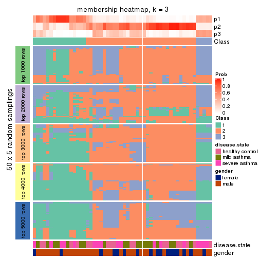
membership_heatmap(res, k = 4)
membership_heatmap(res, k = 5)
membership_heatmap(res, k = 6)
As soon as we have had the classes for columns, we can look for signatures which are significantly different between classes which can be candidate marks for certain classes. Following are the heatmaps for signatures.
Signature heatmaps where rows are scaled:
get_signatures(res, k = 2)
get_signatures(res, k = 3)
get_signatures(res, k = 4)
get_signatures(res, k = 5)
get_signatures(res, k = 6)
Signature heatmaps where rows are not scaled:
get_signatures(res, k = 2, scale_rows = FALSE)
get_signatures(res, k = 3, scale_rows = FALSE)
get_signatures(res, k = 4, scale_rows = FALSE)
get_signatures(res, k = 5, scale_rows = FALSE)
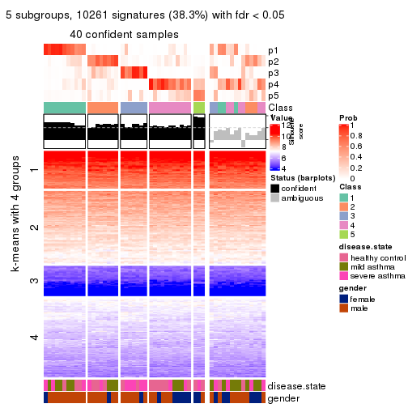
get_signatures(res, k = 6, scale_rows = FALSE)
Compare the overlap of signatures from different k:
compare_signatures(res)

get_signature() returns a data frame invisibly. TO get the list of signatures, the function
call should be assigned to a variable explicitly. In following code, if plot argument is set
to FALSE, no heatmap is plotted while only the differential analysis is performed.
# code only for demonstration
tb = get_signature(res, k = ..., plot = FALSE)
An example of the output of tb is:
#> which_row fdr mean_1 mean_2 scaled_mean_1 scaled_mean_2 km
#> 1 38 0.042760348 8.373488 9.131774 -0.5533452 0.5164555 1
#> 2 40 0.018707592 7.106213 8.469186 -0.6173731 0.5762149 1
#> 3 55 0.019134737 10.221463 11.207825 -0.6159697 0.5749050 1
#> 4 59 0.006059896 5.921854 7.869574 -0.6899429 0.6439467 1
#> 5 60 0.018055526 8.928898 10.211722 -0.6204761 0.5791110 1
#> 6 98 0.009384629 15.714769 14.887706 0.6635654 -0.6193277 2
...
The columns in tb are:
which_row: row indices corresponding to the input matrix.fdr: FDR for the differential test. mean_x: The mean value in group x.scaled_mean_x: The mean value in group x after rows are scaled.km: Row groups if k-means clustering is applied to rows.UMAP plot which shows how samples are separated.
dimension_reduction(res, k = 2, method = "UMAP")
dimension_reduction(res, k = 3, method = "UMAP")
dimension_reduction(res, k = 4, method = "UMAP")
dimension_reduction(res, k = 5, method = "UMAP")
dimension_reduction(res, k = 6, method = "UMAP")
Following heatmap shows how subgroups are split when increasing k:
collect_classes(res)
Test correlation between subgroups and known annotations. If the known annotation is numeric, one-way ANOVA test is applied, and if the known annotation is discrete, chi-squared contingency table test is applied.
test_to_known_factors(res)
#> n disease.state(p) gender(p) k
#> MAD:mclust 50 0.1466 0.1032 2
#> MAD:mclust 35 0.0346 0.5303 3
#> MAD:mclust 37 0.0531 0.1842 4
#> MAD:mclust 40 0.2432 0.0452 5
#> MAD:mclust 16 0.1188 0.5336 6
If matrix rows can be associated to genes, consider to use functional_enrichment(res,
...) to perform function enrichment for the signature genes. See this vignette for more detailed explanations.
The object with results only for a single top-value method and a single partition method can be extracted as:
res = res_list["MAD", "NMF"]
# you can also extract it by
# res = res_list["MAD:NMF"]
A summary of res and all the functions that can be applied to it:
res
#> A 'ConsensusPartition' object with k = 2, 3, 4, 5, 6.
#> On a matrix with 26819 rows and 54 columns.
#> Top rows (1000, 2000, 3000, 4000, 5000) are extracted by 'MAD' method.
#> Subgroups are detected by 'NMF' method.
#> Performed in total 1250 partitions by row resampling.
#> Best k for subgroups seems to be 2.
#>
#> Following methods can be applied to this 'ConsensusPartition' object:
#> [1] "cola_report" "collect_classes" "collect_plots"
#> [4] "collect_stats" "colnames" "compare_signatures"
#> [7] "consensus_heatmap" "dimension_reduction" "functional_enrichment"
#> [10] "get_anno_col" "get_anno" "get_classes"
#> [13] "get_consensus" "get_matrix" "get_membership"
#> [16] "get_param" "get_signatures" "get_stats"
#> [19] "is_best_k" "is_stable_k" "membership_heatmap"
#> [22] "ncol" "nrow" "plot_ecdf"
#> [25] "rownames" "select_partition_number" "show"
#> [28] "suggest_best_k" "test_to_known_factors"
collect_plots() function collects all the plots made from res for all k (number of partitions)
into one single page to provide an easy and fast comparison between different k.
collect_plots(res)
The plots are:
k and the heatmap of
predicted classes for each k.k.k.k.All the plots in panels can be made by individual functions and they are plotted later in this section.
select_partition_number() produces several plots showing different
statistics for choosing “optimized” k. There are following statistics:
k;k, the area increased is defined as \(A_k - A_{k-1}\).The detailed explanations of these statistics can be found in the cola vignette.
Generally speaking, lower PAC score, higher mean silhouette score or higher
concordance corresponds to better partition. Rand index and Jaccard index
measure how similar the current partition is compared to partition with k-1.
If they are too similar, we won't accept k is better than k-1.
select_partition_number(res)
The numeric values for all these statistics can be obtained by get_stats().
get_stats(res)
#> k 1-PAC mean_silhouette concordance area_increased Rand Jaccard
#> 2 2 0.474 0.717 0.882 0.5039 0.491 0.491
#> 3 3 0.441 0.625 0.815 0.3303 0.646 0.393
#> 4 4 0.442 0.471 0.698 0.1265 0.806 0.487
#> 5 5 0.591 0.480 0.690 0.0668 0.870 0.538
#> 6 6 0.653 0.484 0.660 0.0408 0.892 0.532
suggest_best_k() suggests the best \(k\) based on these statistics. The rules are as follows:
suggest_best_k(res)
#> [1] 2
Following shows the table of the partitions (You need to click the show/hide
code output link to see it). The membership matrix (columns with name p*)
is inferred by
clue::cl_consensus()
function with the SE method. Basically the value in the membership matrix
represents the probability to belong to a certain group. The finall class
label for an item is determined with the group with highest probability it
belongs to.
In get_classes() function, the entropy is calculated from the membership
matrix and the silhouette score is calculated from the consensus matrix.
cbind(get_classes(res, k = 2), get_membership(res, k = 2))
#> class entropy silhouette p1 p2
#> GSM665386 2 0.3114 0.8199 0.056 0.944
#> GSM665389 2 0.0000 0.8550 0.000 1.000
#> GSM665390 1 0.9686 0.4423 0.604 0.396
#> GSM665391 1 0.6887 0.7512 0.816 0.184
#> GSM665392 2 0.0938 0.8510 0.012 0.988
#> GSM665393 1 0.1843 0.8355 0.972 0.028
#> GSM665394 2 0.9850 0.0672 0.428 0.572
#> GSM665395 1 0.0672 0.8414 0.992 0.008
#> GSM665396 2 0.0000 0.8550 0.000 1.000
#> GSM665398 2 0.1633 0.8462 0.024 0.976
#> GSM665399 1 0.0000 0.8427 1.000 0.000
#> GSM665400 1 0.0000 0.8427 1.000 0.000
#> GSM665401 2 0.4022 0.8174 0.080 0.920
#> GSM665402 1 0.7219 0.7373 0.800 0.200
#> GSM665403 2 0.0000 0.8550 0.000 1.000
#> GSM665387 2 0.0000 0.8550 0.000 1.000
#> GSM665388 2 0.6438 0.7466 0.164 0.836
#> GSM665397 2 0.0000 0.8550 0.000 1.000
#> GSM665404 1 0.7219 0.7373 0.800 0.200
#> GSM665405 1 0.9732 0.4265 0.596 0.404
#> GSM665406 2 0.0000 0.8550 0.000 1.000
#> GSM665407 2 0.8443 0.5261 0.272 0.728
#> GSM665409 1 0.0000 0.8427 1.000 0.000
#> GSM665413 2 0.0000 0.8550 0.000 1.000
#> GSM665416 1 0.7139 0.7411 0.804 0.196
#> GSM665417 1 0.5408 0.7909 0.876 0.124
#> GSM665418 1 0.0672 0.8403 0.992 0.008
#> GSM665419 1 0.0000 0.8427 1.000 0.000
#> GSM665421 1 0.6343 0.7692 0.840 0.160
#> GSM665422 2 0.9866 0.1001 0.432 0.568
#> GSM665408 2 0.0000 0.8550 0.000 1.000
#> GSM665410 2 0.0000 0.8550 0.000 1.000
#> GSM665411 2 0.8267 0.5472 0.260 0.740
#> GSM665412 2 0.0000 0.8550 0.000 1.000
#> GSM665414 2 0.0000 0.8550 0.000 1.000
#> GSM665415 1 0.9977 0.2491 0.528 0.472
#> GSM665420 2 0.4562 0.8037 0.096 0.904
#> GSM665424 1 0.0000 0.8427 1.000 0.000
#> GSM665425 2 0.9635 0.4225 0.388 0.612
#> GSM665429 1 0.2603 0.8163 0.956 0.044
#> GSM665430 1 0.0000 0.8427 1.000 0.000
#> GSM665431 2 0.9686 0.4060 0.396 0.604
#> GSM665432 1 0.0000 0.8427 1.000 0.000
#> GSM665433 1 0.0000 0.8427 1.000 0.000
#> GSM665434 1 0.0000 0.8427 1.000 0.000
#> GSM665435 1 0.9996 -0.1750 0.512 0.488
#> GSM665436 2 0.0000 0.8550 0.000 1.000
#> GSM665423 2 0.0000 0.8550 0.000 1.000
#> GSM665426 1 0.9909 0.3303 0.556 0.444
#> GSM665427 2 0.7219 0.7090 0.200 0.800
#> GSM665428 1 0.0000 0.8427 1.000 0.000
#> GSM665437 1 0.0000 0.8427 1.000 0.000
#> GSM665438 2 0.7139 0.7143 0.196 0.804
#> GSM665439 1 0.0000 0.8427 1.000 0.000
cbind(get_classes(res, k = 3), get_membership(res, k = 3))
#> class entropy silhouette p1 p2 p3
#> GSM665386 2 0.2116 0.8089 0.012 0.948 0.040
#> GSM665389 2 0.1860 0.8028 0.000 0.948 0.052
#> GSM665390 2 0.6111 0.2847 0.396 0.604 0.000
#> GSM665391 1 0.4702 0.7057 0.788 0.212 0.000
#> GSM665392 3 0.5178 0.5718 0.000 0.256 0.744
#> GSM665393 1 0.5503 0.6681 0.772 0.020 0.208
#> GSM665394 2 0.4324 0.7878 0.112 0.860 0.028
#> GSM665395 3 0.3816 0.6473 0.148 0.000 0.852
#> GSM665396 2 0.0475 0.8124 0.004 0.992 0.004
#> GSM665398 3 0.1163 0.7161 0.000 0.028 0.972
#> GSM665399 1 0.4654 0.6650 0.792 0.000 0.208
#> GSM665400 3 0.3752 0.6520 0.144 0.000 0.856
#> GSM665401 3 0.1015 0.7110 0.012 0.008 0.980
#> GSM665402 1 0.5792 0.6787 0.772 0.036 0.192
#> GSM665403 3 0.2165 0.7138 0.000 0.064 0.936
#> GSM665387 2 0.6026 0.2889 0.000 0.624 0.376
#> GSM665388 3 0.6848 0.2802 0.016 0.416 0.568
#> GSM665397 2 0.2448 0.7883 0.000 0.924 0.076
#> GSM665404 1 0.5363 0.6175 0.724 0.276 0.000
#> GSM665405 2 0.6330 0.2875 0.396 0.600 0.004
#> GSM665406 3 0.6302 0.1452 0.000 0.480 0.520
#> GSM665407 2 0.6587 0.6800 0.092 0.752 0.156
#> GSM665409 1 0.1529 0.7780 0.960 0.000 0.040
#> GSM665413 3 0.6308 0.1104 0.000 0.492 0.508
#> GSM665416 1 0.4605 0.7150 0.796 0.204 0.000
#> GSM665417 1 0.3340 0.7743 0.880 0.120 0.000
#> GSM665418 1 0.0829 0.7954 0.984 0.012 0.004
#> GSM665419 1 0.0424 0.7950 0.992 0.008 0.000
#> GSM665421 1 0.3686 0.7675 0.860 0.140 0.000
#> GSM665422 2 0.3686 0.7722 0.140 0.860 0.000
#> GSM665408 2 0.3412 0.7502 0.000 0.876 0.124
#> GSM665410 2 0.0747 0.8113 0.016 0.984 0.000
#> GSM665411 2 0.1753 0.8069 0.048 0.952 0.000
#> GSM665412 2 0.1753 0.8044 0.000 0.952 0.048
#> GSM665414 2 0.0747 0.8114 0.000 0.984 0.016
#> GSM665415 2 0.4346 0.7215 0.184 0.816 0.000
#> GSM665420 3 0.5650 0.5148 0.000 0.312 0.688
#> GSM665424 3 0.5291 0.5103 0.268 0.000 0.732
#> GSM665425 3 0.5506 0.5818 0.220 0.016 0.764
#> GSM665429 3 0.3619 0.6594 0.136 0.000 0.864
#> GSM665430 3 0.6307 0.0986 0.488 0.000 0.512
#> GSM665431 3 0.1129 0.7146 0.004 0.020 0.976
#> GSM665432 1 0.0892 0.7852 0.980 0.000 0.020
#> GSM665433 1 0.0592 0.7889 0.988 0.000 0.012
#> GSM665434 1 0.2165 0.7904 0.936 0.064 0.000
#> GSM665435 1 0.9771 -0.1297 0.436 0.256 0.308
#> GSM665436 2 0.4062 0.6993 0.000 0.836 0.164
#> GSM665423 2 0.2590 0.7892 0.004 0.924 0.072
#> GSM665426 2 0.3879 0.7508 0.152 0.848 0.000
#> GSM665427 3 0.5623 0.5536 0.004 0.280 0.716
#> GSM665428 3 0.5178 0.5417 0.256 0.000 0.744
#> GSM665437 1 0.6225 0.0567 0.568 0.000 0.432
#> GSM665438 3 0.1031 0.7153 0.000 0.024 0.976
#> GSM665439 1 0.0424 0.7945 0.992 0.008 0.000
cbind(get_classes(res, k = 4), get_membership(res, k = 4))
#> class entropy silhouette p1 p2 p3 p4
#> GSM665386 4 0.164 0.6696 0.000 0.044 0.008 0.948
#> GSM665389 4 0.395 0.6369 0.000 0.216 0.004 0.780
#> GSM665390 4 0.405 0.5967 0.168 0.024 0.000 0.808
#> GSM665391 1 0.439 0.6775 0.788 0.012 0.012 0.188
#> GSM665392 3 0.755 0.0675 0.000 0.272 0.488 0.240
#> GSM665393 3 0.604 0.4471 0.308 0.020 0.640 0.032
#> GSM665394 4 0.174 0.6712 0.016 0.008 0.024 0.952
#> GSM665395 3 0.157 0.6227 0.028 0.012 0.956 0.004
#> GSM665396 4 0.161 0.6709 0.000 0.032 0.016 0.952
#> GSM665398 3 0.406 0.5947 0.000 0.200 0.788 0.012
#> GSM665399 1 0.487 0.3463 0.640 0.004 0.356 0.000
#> GSM665400 3 0.371 0.6155 0.140 0.024 0.836 0.000
#> GSM665401 3 0.173 0.6247 0.000 0.024 0.948 0.028
#> GSM665402 3 0.758 0.2252 0.348 0.008 0.484 0.160
#> GSM665403 3 0.374 0.6151 0.000 0.160 0.824 0.016
#> GSM665387 4 0.564 0.4624 0.000 0.112 0.168 0.720
#> GSM665388 2 0.745 0.2169 0.008 0.468 0.136 0.388
#> GSM665397 4 0.476 0.5254 0.000 0.332 0.004 0.664
#> GSM665404 1 0.537 0.6094 0.708 0.028 0.012 0.252
#> GSM665405 4 0.746 0.5089 0.112 0.152 0.092 0.644
#> GSM665406 3 0.654 0.3042 0.012 0.444 0.496 0.048
#> GSM665407 3 0.773 0.4675 0.064 0.220 0.596 0.120
#> GSM665409 1 0.255 0.7321 0.900 0.008 0.092 0.000
#> GSM665413 3 0.635 0.3297 0.000 0.412 0.524 0.064
#> GSM665416 1 0.703 0.5803 0.676 0.148 0.088 0.088
#> GSM665417 1 0.244 0.7437 0.916 0.012 0.004 0.068
#> GSM665418 1 0.558 0.4138 0.652 0.316 0.020 0.012
#> GSM665419 1 0.151 0.7492 0.960 0.020 0.008 0.012
#> GSM665421 1 0.517 0.6737 0.784 0.124 0.020 0.072
#> GSM665422 4 0.349 0.6173 0.012 0.124 0.008 0.856
#> GSM665408 4 0.743 0.3124 0.000 0.264 0.224 0.512
#> GSM665410 4 0.482 0.6213 0.004 0.240 0.020 0.736
#> GSM665411 4 0.361 0.6744 0.024 0.132 0.000 0.844
#> GSM665412 2 0.814 -0.2275 0.012 0.396 0.236 0.356
#> GSM665414 4 0.445 0.5724 0.000 0.308 0.000 0.692
#> GSM665415 4 0.743 0.3773 0.112 0.388 0.016 0.484
#> GSM665420 2 0.419 0.3936 0.000 0.824 0.112 0.064
#> GSM665424 3 0.176 0.6273 0.048 0.004 0.944 0.004
#> GSM665425 2 0.647 0.3554 0.148 0.640 0.212 0.000
#> GSM665429 3 0.402 0.5492 0.072 0.072 0.848 0.008
#> GSM665430 1 0.811 -0.1333 0.396 0.328 0.268 0.008
#> GSM665431 3 0.371 0.5949 0.000 0.192 0.804 0.004
#> GSM665432 1 0.161 0.7416 0.952 0.016 0.032 0.000
#> GSM665433 1 0.285 0.7121 0.896 0.084 0.016 0.004
#> GSM665434 1 0.172 0.7504 0.944 0.008 0.000 0.048
#> GSM665435 2 0.547 0.3357 0.308 0.656 0.000 0.036
#> GSM665436 2 0.404 0.2408 0.000 0.752 0.000 0.248
#> GSM665423 2 0.559 -0.1979 0.012 0.612 0.012 0.364
#> GSM665426 4 0.471 0.6275 0.052 0.172 0.000 0.776
#> GSM665427 2 0.722 0.2949 0.000 0.524 0.308 0.168
#> GSM665428 3 0.688 0.3613 0.232 0.076 0.648 0.044
#> GSM665437 2 0.709 -0.0781 0.444 0.452 0.096 0.008
#> GSM665438 2 0.544 0.1655 0.000 0.560 0.424 0.016
#> GSM665439 1 0.172 0.7475 0.952 0.028 0.008 0.012
cbind(get_classes(res, k = 5), get_membership(res, k = 5))
#> class entropy silhouette p1 p2 p3 p4 p5
#> GSM665386 4 0.0290 0.65029 0.000 0.008 0.000 0.992 0.000
#> GSM665389 4 0.4914 0.51750 0.000 0.260 0.000 0.676 0.064
#> GSM665390 4 0.5282 0.48234 0.088 0.268 0.000 0.644 0.000
#> GSM665391 1 0.3350 0.79779 0.844 0.112 0.004 0.040 0.000
#> GSM665392 4 0.6799 0.30811 0.000 0.036 0.260 0.544 0.160
#> GSM665393 3 0.5734 0.46699 0.152 0.208 0.636 0.004 0.000
#> GSM665394 4 0.0579 0.64804 0.000 0.008 0.008 0.984 0.000
#> GSM665395 3 0.3600 0.60921 0.012 0.040 0.852 0.012 0.084
#> GSM665396 4 0.0703 0.64951 0.000 0.024 0.000 0.976 0.000
#> GSM665398 3 0.3177 0.58099 0.000 0.208 0.792 0.000 0.000
#> GSM665399 1 0.5117 0.39357 0.624 0.032 0.332 0.012 0.000
#> GSM665400 3 0.3645 0.61243 0.024 0.168 0.804 0.000 0.004
#> GSM665401 3 0.0510 0.64824 0.000 0.000 0.984 0.000 0.016
#> GSM665402 3 0.7629 0.30980 0.224 0.112 0.496 0.168 0.000
#> GSM665403 3 0.2629 0.61114 0.000 0.136 0.860 0.000 0.004
#> GSM665387 4 0.3365 0.60993 0.000 0.028 0.056 0.864 0.052
#> GSM665388 4 0.5979 0.45622 0.004 0.044 0.088 0.668 0.196
#> GSM665397 4 0.6301 0.36243 0.000 0.300 0.000 0.516 0.184
#> GSM665404 1 0.3727 0.77584 0.824 0.068 0.004 0.104 0.000
#> GSM665405 4 0.7044 0.03923 0.068 0.336 0.104 0.492 0.000
#> GSM665406 2 0.5538 0.16840 0.000 0.500 0.440 0.004 0.056
#> GSM665407 3 0.4848 0.46681 0.036 0.304 0.656 0.004 0.000
#> GSM665409 1 0.1915 0.82109 0.928 0.032 0.040 0.000 0.000
#> GSM665413 2 0.6091 0.23113 0.000 0.524 0.336 0.000 0.140
#> GSM665416 1 0.5959 0.46042 0.576 0.296 0.124 0.004 0.000
#> GSM665417 1 0.1857 0.82765 0.928 0.060 0.000 0.004 0.008
#> GSM665418 5 0.5505 0.16566 0.452 0.064 0.000 0.000 0.484
#> GSM665419 1 0.0693 0.82352 0.980 0.008 0.000 0.000 0.012
#> GSM665421 1 0.3163 0.78103 0.824 0.164 0.012 0.000 0.000
#> GSM665422 4 0.1442 0.64873 0.004 0.012 0.000 0.952 0.032
#> GSM665408 2 0.6347 0.31122 0.000 0.492 0.356 0.148 0.004
#> GSM665410 2 0.4940 0.03993 0.000 0.576 0.032 0.392 0.000
#> GSM665411 4 0.4213 0.51439 0.012 0.308 0.000 0.680 0.000
#> GSM665412 2 0.4183 0.32468 0.000 0.668 0.324 0.008 0.000
#> GSM665414 4 0.6047 0.32984 0.000 0.376 0.000 0.500 0.124
#> GSM665415 2 0.4953 0.31862 0.108 0.760 0.000 0.040 0.092
#> GSM665420 5 0.4803 0.12199 0.000 0.484 0.012 0.004 0.500
#> GSM665424 3 0.1997 0.64393 0.016 0.028 0.932 0.000 0.024
#> GSM665425 5 0.2277 0.54558 0.016 0.052 0.016 0.000 0.916
#> GSM665429 3 0.6309 0.46762 0.028 0.056 0.676 0.072 0.168
#> GSM665430 5 0.6648 0.35477 0.308 0.048 0.100 0.000 0.544
#> GSM665431 3 0.4022 0.60065 0.000 0.104 0.796 0.000 0.100
#> GSM665432 1 0.1460 0.81634 0.956 0.020 0.004 0.008 0.012
#> GSM665433 1 0.2462 0.74231 0.880 0.008 0.000 0.000 0.112
#> GSM665434 1 0.1369 0.83015 0.956 0.028 0.000 0.008 0.008
#> GSM665435 5 0.5738 0.40707 0.132 0.264 0.000 0.000 0.604
#> GSM665436 5 0.4165 0.38099 0.000 0.320 0.000 0.008 0.672
#> GSM665423 2 0.4523 0.05089 0.004 0.640 0.000 0.012 0.344
#> GSM665426 2 0.5831 0.00318 0.048 0.524 0.004 0.408 0.016
#> GSM665427 5 0.6552 0.20728 0.000 0.032 0.132 0.272 0.564
#> GSM665428 3 0.8378 0.14723 0.052 0.056 0.440 0.220 0.232
#> GSM665437 5 0.3810 0.54855 0.168 0.040 0.000 0.000 0.792
#> GSM665438 5 0.3280 0.48696 0.000 0.012 0.160 0.004 0.824
#> GSM665439 1 0.0771 0.81864 0.976 0.004 0.000 0.000 0.020
cbind(get_classes(res, k = 6), get_membership(res, k = 6))
#> class entropy silhouette p1 p2 p3 p4 p5 p6
#> GSM665386 4 0.0632 0.6813 0.000 0.024 0.000 0.976 0.000 0.000
#> GSM665389 4 0.6170 0.4066 0.000 0.280 0.004 0.552 0.052 0.112
#> GSM665390 4 0.7362 0.3630 0.016 0.240 0.084 0.520 0.044 0.096
#> GSM665391 1 0.5128 0.7073 0.764 0.044 0.072 0.040 0.040 0.040
#> GSM665392 5 0.4740 0.0458 0.000 0.000 0.032 0.436 0.524 0.008
#> GSM665393 3 0.3340 0.6252 0.092 0.020 0.848 0.004 0.008 0.028
#> GSM665394 4 0.1282 0.6763 0.004 0.004 0.000 0.956 0.012 0.024
#> GSM665395 3 0.4131 0.4433 0.016 0.000 0.600 0.000 0.384 0.000
#> GSM665396 4 0.1760 0.6774 0.000 0.004 0.000 0.928 0.020 0.048
#> GSM665398 3 0.1408 0.6595 0.000 0.036 0.944 0.000 0.000 0.020
#> GSM665399 1 0.3733 0.6303 0.764 0.004 0.204 0.008 0.020 0.000
#> GSM665400 3 0.2156 0.6634 0.028 0.012 0.920 0.000 0.020 0.020
#> GSM665401 3 0.3109 0.6111 0.000 0.000 0.772 0.000 0.224 0.004
#> GSM665402 3 0.8379 0.1282 0.296 0.004 0.320 0.200 0.100 0.080
#> GSM665403 3 0.3554 0.6540 0.000 0.028 0.820 0.000 0.112 0.040
#> GSM665387 4 0.2729 0.6433 0.000 0.032 0.008 0.876 0.080 0.004
#> GSM665388 4 0.3819 0.2515 0.000 0.000 0.000 0.652 0.340 0.008
#> GSM665397 2 0.4989 0.1137 0.000 0.568 0.008 0.380 0.028 0.016
#> GSM665404 1 0.3294 0.7596 0.852 0.012 0.012 0.092 0.008 0.024
#> GSM665405 6 0.4293 0.7370 0.056 0.004 0.044 0.096 0.008 0.792
#> GSM665406 6 0.4616 0.6167 0.000 0.080 0.236 0.000 0.004 0.680
#> GSM665407 3 0.5022 0.4145 0.036 0.208 0.704 0.008 0.024 0.020
#> GSM665409 1 0.2213 0.7857 0.904 0.004 0.068 0.000 0.020 0.004
#> GSM665413 2 0.4361 0.2037 0.000 0.544 0.436 0.000 0.004 0.016
#> GSM665416 1 0.5446 0.2914 0.540 0.000 0.120 0.004 0.000 0.336
#> GSM665417 1 0.1684 0.7972 0.940 0.008 0.000 0.008 0.016 0.028
#> GSM665418 1 0.7605 -0.1384 0.332 0.288 0.004 0.000 0.236 0.140
#> GSM665419 1 0.1049 0.7910 0.960 0.000 0.000 0.000 0.032 0.008
#> GSM665421 1 0.2438 0.7817 0.892 0.008 0.020 0.004 0.000 0.076
#> GSM665422 4 0.3495 0.6191 0.000 0.016 0.000 0.812 0.136 0.036
#> GSM665408 6 0.2323 0.7751 0.000 0.000 0.084 0.012 0.012 0.892
#> GSM665410 6 0.5227 0.4702 0.008 0.076 0.016 0.260 0.000 0.640
#> GSM665411 4 0.6691 0.1830 0.008 0.364 0.076 0.476 0.024 0.052
#> GSM665412 6 0.2234 0.7647 0.000 0.004 0.124 0.000 0.000 0.872
#> GSM665414 2 0.5982 0.3027 0.000 0.584 0.128 0.248 0.008 0.032
#> GSM665415 2 0.6511 0.4715 0.052 0.652 0.108 0.036 0.040 0.112
#> GSM665420 2 0.5128 0.5055 0.000 0.708 0.092 0.004 0.144 0.052
#> GSM665424 3 0.4788 0.4737 0.028 0.004 0.608 0.000 0.344 0.016
#> GSM665425 5 0.5486 0.0962 0.008 0.372 0.008 0.000 0.532 0.080
#> GSM665429 5 0.5642 -0.2710 0.032 0.000 0.432 0.068 0.468 0.000
#> GSM665430 5 0.5004 0.2649 0.320 0.060 0.008 0.004 0.608 0.000
#> GSM665431 3 0.4638 0.5622 0.000 0.148 0.704 0.004 0.144 0.000
#> GSM665432 1 0.1396 0.7921 0.952 0.012 0.004 0.008 0.024 0.000
#> GSM665433 1 0.4612 0.6925 0.768 0.028 0.004 0.020 0.120 0.060
#> GSM665434 1 0.1242 0.7973 0.960 0.012 0.012 0.008 0.008 0.000
#> GSM665435 2 0.3445 0.4726 0.024 0.816 0.008 0.004 0.144 0.004
#> GSM665436 2 0.5078 0.3109 0.000 0.632 0.000 0.012 0.268 0.088
#> GSM665423 2 0.4360 0.4258 0.000 0.680 0.000 0.000 0.060 0.260
#> GSM665426 6 0.2859 0.7140 0.044 0.016 0.000 0.032 0.024 0.884
#> GSM665427 5 0.6411 0.2238 0.000 0.164 0.032 0.328 0.472 0.004
#> GSM665428 5 0.6219 0.2757 0.052 0.004 0.136 0.244 0.564 0.000
#> GSM665437 5 0.5904 0.0625 0.136 0.404 0.004 0.000 0.448 0.008
#> GSM665438 5 0.4948 0.3336 0.000 0.176 0.036 0.012 0.716 0.060
#> GSM665439 1 0.1881 0.7834 0.928 0.020 0.004 0.000 0.040 0.008
Heatmaps for the consensus matrix. It visualizes the probability of two samples to be in a same group.
consensus_heatmap(res, k = 2)
consensus_heatmap(res, k = 3)
consensus_heatmap(res, k = 4)
consensus_heatmap(res, k = 5)
consensus_heatmap(res, k = 6)
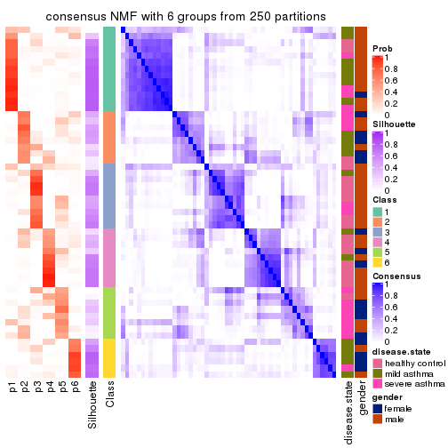
Heatmaps for the membership of samples in all partitions to see how consistent they are:
membership_heatmap(res, k = 2)
membership_heatmap(res, k = 3)
membership_heatmap(res, k = 4)
membership_heatmap(res, k = 5)
membership_heatmap(res, k = 6)
As soon as we have had the classes for columns, we can look for signatures which are significantly different between classes which can be candidate marks for certain classes. Following are the heatmaps for signatures.
Signature heatmaps where rows are scaled:
get_signatures(res, k = 2)
get_signatures(res, k = 3)
get_signatures(res, k = 4)
get_signatures(res, k = 5)
get_signatures(res, k = 6)
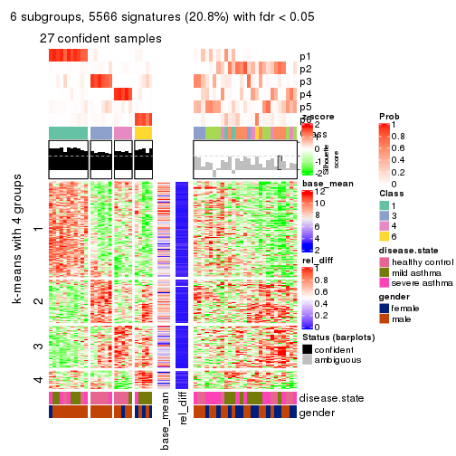
Signature heatmaps where rows are not scaled:
get_signatures(res, k = 2, scale_rows = FALSE)
get_signatures(res, k = 3, scale_rows = FALSE)
get_signatures(res, k = 4, scale_rows = FALSE)
get_signatures(res, k = 5, scale_rows = FALSE)
get_signatures(res, k = 6, scale_rows = FALSE)
Compare the overlap of signatures from different k:
compare_signatures(res)

get_signature() returns a data frame invisibly. TO get the list of signatures, the function
call should be assigned to a variable explicitly. In following code, if plot argument is set
to FALSE, no heatmap is plotted while only the differential analysis is performed.
# code only for demonstration
tb = get_signature(res, k = ..., plot = FALSE)
An example of the output of tb is:
#> which_row fdr mean_1 mean_2 scaled_mean_1 scaled_mean_2 km
#> 1 38 0.042760348 8.373488 9.131774 -0.5533452 0.5164555 1
#> 2 40 0.018707592 7.106213 8.469186 -0.6173731 0.5762149 1
#> 3 55 0.019134737 10.221463 11.207825 -0.6159697 0.5749050 1
#> 4 59 0.006059896 5.921854 7.869574 -0.6899429 0.6439467 1
#> 5 60 0.018055526 8.928898 10.211722 -0.6204761 0.5791110 1
#> 6 98 0.009384629 15.714769 14.887706 0.6635654 -0.6193277 2
...
The columns in tb are:
which_row: row indices corresponding to the input matrix.fdr: FDR for the differential test. mean_x: The mean value in group x.scaled_mean_x: The mean value in group x after rows are scaled.km: Row groups if k-means clustering is applied to rows.UMAP plot which shows how samples are separated.
dimension_reduction(res, k = 2, method = "UMAP")
dimension_reduction(res, k = 3, method = "UMAP")
dimension_reduction(res, k = 4, method = "UMAP")
dimension_reduction(res, k = 5, method = "UMAP")
dimension_reduction(res, k = 6, method = "UMAP")
Following heatmap shows how subgroups are split when increasing k:
collect_classes(res)
Test correlation between subgroups and known annotations. If the known annotation is numeric, one-way ANOVA test is applied, and if the known annotation is discrete, chi-squared contingency table test is applied.
test_to_known_factors(res)
#> n disease.state(p) gender(p) k
#> MAD:NMF 45 0.2068 0.0153 2
#> MAD:NMF 45 0.1021 0.0114 3
#> MAD:NMF 31 0.0332 0.0390 4
#> MAD:NMF 26 0.0133 0.2336 5
#> MAD:NMF 28 0.0285 0.0299 6
If matrix rows can be associated to genes, consider to use functional_enrichment(res,
...) to perform function enrichment for the signature genes. See this vignette for more detailed explanations.
The object with results only for a single top-value method and a single partition method can be extracted as:
res = res_list["ATC", "hclust"]
# you can also extract it by
# res = res_list["ATC:hclust"]
A summary of res and all the functions that can be applied to it:
res
#> A 'ConsensusPartition' object with k = 2, 3, 4, 5, 6.
#> On a matrix with 26819 rows and 54 columns.
#> Top rows (1000, 2000, 3000, 4000, 5000) are extracted by 'ATC' method.
#> Subgroups are detected by 'hclust' method.
#> Performed in total 1250 partitions by row resampling.
#> Best k for subgroups seems to be 2.
#>
#> Following methods can be applied to this 'ConsensusPartition' object:
#> [1] "cola_report" "collect_classes" "collect_plots"
#> [4] "collect_stats" "colnames" "compare_signatures"
#> [7] "consensus_heatmap" "dimension_reduction" "functional_enrichment"
#> [10] "get_anno_col" "get_anno" "get_classes"
#> [13] "get_consensus" "get_matrix" "get_membership"
#> [16] "get_param" "get_signatures" "get_stats"
#> [19] "is_best_k" "is_stable_k" "membership_heatmap"
#> [22] "ncol" "nrow" "plot_ecdf"
#> [25] "rownames" "select_partition_number" "show"
#> [28] "suggest_best_k" "test_to_known_factors"
collect_plots() function collects all the plots made from res for all k (number of partitions)
into one single page to provide an easy and fast comparison between different k.
collect_plots(res)
The plots are:
k and the heatmap of
predicted classes for each k.k.k.k.All the plots in panels can be made by individual functions and they are plotted later in this section.
select_partition_number() produces several plots showing different
statistics for choosing “optimized” k. There are following statistics:
k;k, the area increased is defined as \(A_k - A_{k-1}\).The detailed explanations of these statistics can be found in the cola vignette.
Generally speaking, lower PAC score, higher mean silhouette score or higher
concordance corresponds to better partition. Rand index and Jaccard index
measure how similar the current partition is compared to partition with k-1.
If they are too similar, we won't accept k is better than k-1.
select_partition_number(res)
The numeric values for all these statistics can be obtained by get_stats().
get_stats(res)
#> k 1-PAC mean_silhouette concordance area_increased Rand Jaccard
#> 2 2 0.308 0.670 0.824 0.4246 0.508 0.508
#> 3 3 0.449 0.645 0.828 0.4240 0.594 0.379
#> 4 4 0.561 0.660 0.814 0.1908 0.783 0.506
#> 5 5 0.687 0.659 0.816 0.0830 0.950 0.814
#> 6 6 0.712 0.582 0.738 0.0488 0.940 0.751
suggest_best_k() suggests the best \(k\) based on these statistics. The rules are as follows:
suggest_best_k(res)
#> [1] 2
Following shows the table of the partitions (You need to click the show/hide
code output link to see it). The membership matrix (columns with name p*)
is inferred by
clue::cl_consensus()
function with the SE method. Basically the value in the membership matrix
represents the probability to belong to a certain group. The finall class
label for an item is determined with the group with highest probability it
belongs to.
In get_classes() function, the entropy is calculated from the membership
matrix and the silhouette score is calculated from the consensus matrix.
cbind(get_classes(res, k = 2), get_membership(res, k = 2))
#> class entropy silhouette p1 p2
#> GSM665386 2 0.973 0.402 0.404 0.596
#> GSM665389 2 0.000 0.743 0.000 1.000
#> GSM665390 1 0.917 0.549 0.668 0.332
#> GSM665391 1 0.000 0.774 1.000 0.000
#> GSM665392 2 0.958 0.477 0.380 0.620
#> GSM665393 1 0.000 0.774 1.000 0.000
#> GSM665394 2 0.745 0.760 0.212 0.788
#> GSM665395 1 0.295 0.762 0.948 0.052
#> GSM665396 2 0.745 0.760 0.212 0.788
#> GSM665398 2 0.722 0.764 0.200 0.800
#> GSM665399 1 0.000 0.774 1.000 0.000
#> GSM665400 1 0.000 0.774 1.000 0.000
#> GSM665401 1 0.969 0.397 0.604 0.396
#> GSM665402 1 0.000 0.774 1.000 0.000
#> GSM665403 2 0.738 0.761 0.208 0.792
#> GSM665387 2 0.745 0.760 0.212 0.788
#> GSM665388 2 0.745 0.760 0.212 0.788
#> GSM665397 2 0.000 0.743 0.000 1.000
#> GSM665404 1 0.000 0.774 1.000 0.000
#> GSM665405 1 0.000 0.774 1.000 0.000
#> GSM665406 2 0.242 0.763 0.040 0.960
#> GSM665407 1 0.963 0.417 0.612 0.388
#> GSM665409 1 0.000 0.774 1.000 0.000
#> GSM665413 2 0.242 0.763 0.040 0.960
#> GSM665416 1 0.000 0.774 1.000 0.000
#> GSM665417 1 0.000 0.774 1.000 0.000
#> GSM665418 1 0.802 0.659 0.756 0.244
#> GSM665419 1 0.000 0.774 1.000 0.000
#> GSM665421 1 0.595 0.722 0.856 0.144
#> GSM665422 1 0.802 0.659 0.756 0.244
#> GSM665408 1 0.969 0.397 0.604 0.396
#> GSM665410 1 0.969 0.397 0.604 0.396
#> GSM665411 1 0.961 0.427 0.616 0.384
#> GSM665412 2 0.722 0.764 0.200 0.800
#> GSM665414 2 0.975 0.389 0.408 0.592
#> GSM665415 1 0.802 0.659 0.756 0.244
#> GSM665420 2 0.000 0.743 0.000 1.000
#> GSM665424 1 0.000 0.774 1.000 0.000
#> GSM665425 2 0.855 0.674 0.280 0.720
#> GSM665429 1 0.886 0.592 0.696 0.304
#> GSM665430 1 0.871 0.607 0.708 0.292
#> GSM665431 2 0.242 0.763 0.040 0.960
#> GSM665432 1 0.000 0.774 1.000 0.000
#> GSM665433 1 0.917 0.549 0.668 0.332
#> GSM665434 1 0.000 0.774 1.000 0.000
#> GSM665435 2 0.980 0.363 0.416 0.584
#> GSM665436 2 0.000 0.743 0.000 1.000
#> GSM665423 2 0.000 0.743 0.000 1.000
#> GSM665426 1 0.917 0.549 0.668 0.332
#> GSM665427 2 0.955 0.488 0.376 0.624
#> GSM665428 1 0.224 0.766 0.964 0.036
#> GSM665437 1 0.917 0.549 0.668 0.332
#> GSM665438 2 0.242 0.763 0.040 0.960
#> GSM665439 1 0.000 0.774 1.000 0.000
cbind(get_classes(res, k = 3), get_membership(res, k = 3))
#> class entropy silhouette p1 p2 p3
#> GSM665386 3 0.388 0.5921 0.000 0.152 0.848
#> GSM665389 2 0.400 0.7446 0.000 0.840 0.160
#> GSM665390 3 0.327 0.6798 0.116 0.000 0.884
#> GSM665391 1 0.196 0.9075 0.944 0.000 0.056
#> GSM665392 3 0.424 0.5645 0.000 0.176 0.824
#> GSM665393 1 0.334 0.8877 0.880 0.000 0.120
#> GSM665394 3 0.586 0.3460 0.000 0.344 0.656
#> GSM665395 3 0.630 -0.0828 0.480 0.000 0.520
#> GSM665396 3 0.586 0.3460 0.000 0.344 0.656
#> GSM665398 3 0.595 0.3090 0.000 0.360 0.640
#> GSM665399 1 0.000 0.9048 1.000 0.000 0.000
#> GSM665400 1 0.334 0.8877 0.880 0.000 0.120
#> GSM665401 3 0.186 0.6832 0.052 0.000 0.948
#> GSM665402 1 0.319 0.8930 0.888 0.000 0.112
#> GSM665403 3 0.588 0.3343 0.000 0.348 0.652
#> GSM665387 3 0.586 0.3460 0.000 0.344 0.656
#> GSM665388 3 0.586 0.3460 0.000 0.344 0.656
#> GSM665397 2 0.288 0.7586 0.000 0.904 0.096
#> GSM665404 1 0.000 0.9048 1.000 0.000 0.000
#> GSM665405 1 0.319 0.8930 0.888 0.000 0.112
#> GSM665406 2 0.540 0.6930 0.000 0.720 0.280
#> GSM665407 3 0.216 0.6836 0.064 0.000 0.936
#> GSM665409 1 0.000 0.9048 1.000 0.000 0.000
#> GSM665413 2 0.540 0.6930 0.000 0.720 0.280
#> GSM665416 1 0.319 0.8930 0.888 0.000 0.112
#> GSM665417 1 0.000 0.9048 1.000 0.000 0.000
#> GSM665418 3 0.475 0.6179 0.216 0.000 0.784
#> GSM665419 1 0.000 0.9048 1.000 0.000 0.000
#> GSM665421 3 0.626 0.1479 0.448 0.000 0.552
#> GSM665422 3 0.475 0.6179 0.216 0.000 0.784
#> GSM665408 3 0.186 0.6832 0.052 0.000 0.948
#> GSM665410 3 0.186 0.6832 0.052 0.000 0.948
#> GSM665411 3 0.226 0.6835 0.068 0.000 0.932
#> GSM665412 3 0.595 0.3090 0.000 0.360 0.640
#> GSM665414 3 0.382 0.5957 0.000 0.148 0.852
#> GSM665415 3 0.475 0.6179 0.216 0.000 0.784
#> GSM665420 2 0.000 0.7383 0.000 1.000 0.000
#> GSM665424 1 0.254 0.9034 0.920 0.000 0.080
#> GSM665425 3 0.536 0.4462 0.000 0.276 0.724
#> GSM665429 3 0.423 0.6578 0.160 0.004 0.836
#> GSM665430 3 0.400 0.6572 0.160 0.000 0.840
#> GSM665431 2 0.613 0.4961 0.000 0.600 0.400
#> GSM665432 1 0.000 0.9048 1.000 0.000 0.000
#> GSM665433 3 0.327 0.6798 0.116 0.000 0.884
#> GSM665434 1 0.207 0.9070 0.940 0.000 0.060
#> GSM665435 3 0.369 0.6015 0.000 0.140 0.860
#> GSM665436 2 0.000 0.7383 0.000 1.000 0.000
#> GSM665423 2 0.000 0.7383 0.000 1.000 0.000
#> GSM665426 3 0.327 0.6798 0.116 0.000 0.884
#> GSM665427 3 0.429 0.5613 0.000 0.180 0.820
#> GSM665428 1 0.628 0.1641 0.540 0.000 0.460
#> GSM665437 3 0.327 0.6798 0.116 0.000 0.884
#> GSM665438 2 0.613 0.4961 0.000 0.600 0.400
#> GSM665439 1 0.000 0.9048 1.000 0.000 0.000
cbind(get_classes(res, k = 4), get_membership(res, k = 4))
#> class entropy silhouette p1 p2 p3 p4
#> GSM665386 2 0.4991 0.3629 0.000 0.608 0.004 0.388
#> GSM665389 3 0.4817 0.5321 0.000 0.388 0.612 0.000
#> GSM665390 4 0.1339 0.7456 0.004 0.024 0.008 0.964
#> GSM665391 1 0.2814 0.8647 0.868 0.000 0.000 0.132
#> GSM665392 2 0.4875 0.5723 0.000 0.772 0.068 0.160
#> GSM665393 1 0.3945 0.8232 0.780 0.000 0.004 0.216
#> GSM665394 2 0.0188 0.7002 0.000 0.996 0.000 0.004
#> GSM665395 4 0.5112 0.3049 0.384 0.008 0.000 0.608
#> GSM665396 2 0.0188 0.7002 0.000 0.996 0.000 0.004
#> GSM665398 2 0.0592 0.6944 0.000 0.984 0.016 0.000
#> GSM665399 1 0.0000 0.8714 1.000 0.000 0.000 0.000
#> GSM665400 1 0.3945 0.8232 0.780 0.000 0.004 0.216
#> GSM665401 4 0.5500 0.6410 0.000 0.224 0.068 0.708
#> GSM665402 1 0.3726 0.8298 0.788 0.000 0.000 0.212
#> GSM665403 2 0.0804 0.6975 0.000 0.980 0.012 0.008
#> GSM665387 2 0.0188 0.7002 0.000 0.996 0.000 0.004
#> GSM665388 2 0.0188 0.7002 0.000 0.996 0.000 0.004
#> GSM665397 3 0.4331 0.6906 0.000 0.288 0.712 0.000
#> GSM665404 1 0.0000 0.8714 1.000 0.000 0.000 0.000
#> GSM665405 1 0.3726 0.8298 0.788 0.000 0.000 0.212
#> GSM665406 2 0.4948 -0.0256 0.000 0.560 0.440 0.000
#> GSM665407 4 0.5837 0.6525 0.012 0.212 0.068 0.708
#> GSM665409 1 0.0000 0.8714 1.000 0.000 0.000 0.000
#> GSM665413 2 0.4948 -0.0256 0.000 0.560 0.440 0.000
#> GSM665416 1 0.3726 0.8298 0.788 0.000 0.000 0.212
#> GSM665417 1 0.0000 0.8714 1.000 0.000 0.000 0.000
#> GSM665418 4 0.4880 0.7480 0.104 0.028 0.060 0.808
#> GSM665419 1 0.0000 0.8714 1.000 0.000 0.000 0.000
#> GSM665421 4 0.5581 0.3936 0.340 0.020 0.008 0.632
#> GSM665422 4 0.4880 0.7480 0.104 0.028 0.060 0.808
#> GSM665408 4 0.5500 0.6410 0.000 0.224 0.068 0.708
#> GSM665410 4 0.5500 0.6410 0.000 0.224 0.068 0.708
#> GSM665411 4 0.5915 0.6552 0.016 0.208 0.068 0.708
#> GSM665412 2 0.0592 0.6944 0.000 0.984 0.016 0.000
#> GSM665414 2 0.5105 0.2872 0.000 0.564 0.004 0.432
#> GSM665415 4 0.4880 0.7480 0.104 0.028 0.060 0.808
#> GSM665420 3 0.1940 0.8282 0.000 0.076 0.924 0.000
#> GSM665424 1 0.3311 0.8504 0.828 0.000 0.000 0.172
#> GSM665425 2 0.2473 0.6714 0.000 0.908 0.012 0.080
#> GSM665429 4 0.4867 0.6897 0.068 0.144 0.004 0.784
#> GSM665430 4 0.2529 0.7522 0.048 0.024 0.008 0.920
#> GSM665431 2 0.4250 0.3847 0.000 0.724 0.276 0.000
#> GSM665432 1 0.0000 0.8714 1.000 0.000 0.000 0.000
#> GSM665433 4 0.1339 0.7456 0.004 0.024 0.008 0.964
#> GSM665434 1 0.2814 0.8633 0.868 0.000 0.000 0.132
#> GSM665435 2 0.5126 0.2614 0.000 0.552 0.004 0.444
#> GSM665436 3 0.1940 0.8282 0.000 0.076 0.924 0.000
#> GSM665423 3 0.2011 0.8286 0.000 0.080 0.920 0.000
#> GSM665426 4 0.1339 0.7456 0.004 0.024 0.008 0.964
#> GSM665427 2 0.4301 0.6179 0.000 0.816 0.064 0.120
#> GSM665428 4 0.5132 0.1362 0.448 0.004 0.000 0.548
#> GSM665437 4 0.1339 0.7456 0.004 0.024 0.008 0.964
#> GSM665438 2 0.4250 0.3847 0.000 0.724 0.276 0.000
#> GSM665439 1 0.0000 0.8714 1.000 0.000 0.000 0.000
cbind(get_classes(res, k = 5), get_membership(res, k = 5))
#> class entropy silhouette p1 p2 p3 p4 p5
#> GSM665386 2 0.5410 0.3826 0.000 0.584 0.344 0.072 0.000
#> GSM665389 5 0.4138 0.4448 0.000 0.384 0.000 0.000 0.616
#> GSM665390 3 0.1608 0.7207 0.000 0.000 0.928 0.072 0.000
#> GSM665391 1 0.4306 0.7977 0.792 0.000 0.096 0.100 0.012
#> GSM665392 2 0.4030 0.3713 0.000 0.648 0.000 0.352 0.000
#> GSM665393 1 0.5166 0.7691 0.700 0.000 0.080 0.208 0.012
#> GSM665394 2 0.0609 0.6973 0.000 0.980 0.020 0.000 0.000
#> GSM665395 3 0.6196 0.3511 0.312 0.000 0.556 0.120 0.012
#> GSM665396 2 0.0609 0.6973 0.000 0.980 0.020 0.000 0.000
#> GSM665398 2 0.0162 0.6926 0.000 0.996 0.000 0.000 0.004
#> GSM665399 1 0.0000 0.8147 1.000 0.000 0.000 0.000 0.000
#> GSM665400 1 0.5166 0.7691 0.700 0.000 0.080 0.208 0.012
#> GSM665401 4 0.1965 0.8687 0.000 0.096 0.000 0.904 0.000
#> GSM665402 1 0.5165 0.7778 0.708 0.000 0.092 0.188 0.012
#> GSM665403 2 0.0290 0.6935 0.000 0.992 0.000 0.008 0.000
#> GSM665387 2 0.0609 0.6973 0.000 0.980 0.020 0.000 0.000
#> GSM665388 2 0.0609 0.6973 0.000 0.980 0.020 0.000 0.000
#> GSM665397 5 0.3561 0.6369 0.000 0.260 0.000 0.000 0.740
#> GSM665404 1 0.0000 0.8147 1.000 0.000 0.000 0.000 0.000
#> GSM665405 1 0.5165 0.7778 0.708 0.000 0.092 0.188 0.012
#> GSM665406 2 0.4278 0.0192 0.000 0.548 0.000 0.000 0.452
#> GSM665407 4 0.1792 0.8714 0.000 0.084 0.000 0.916 0.000
#> GSM665409 1 0.0000 0.8147 1.000 0.000 0.000 0.000 0.000
#> GSM665413 2 0.4278 0.0192 0.000 0.548 0.000 0.000 0.452
#> GSM665416 1 0.5165 0.7778 0.708 0.000 0.092 0.188 0.012
#> GSM665417 1 0.0000 0.8147 1.000 0.000 0.000 0.000 0.000
#> GSM665418 4 0.2804 0.7677 0.044 0.000 0.068 0.884 0.004
#> GSM665419 1 0.0000 0.8147 1.000 0.000 0.000 0.000 0.000
#> GSM665421 3 0.5550 0.4710 0.268 0.000 0.636 0.088 0.008
#> GSM665422 4 0.2804 0.7677 0.044 0.000 0.068 0.884 0.004
#> GSM665408 4 0.1965 0.8687 0.000 0.096 0.000 0.904 0.000
#> GSM665410 4 0.1965 0.8687 0.000 0.096 0.000 0.904 0.000
#> GSM665411 4 0.1732 0.8710 0.000 0.080 0.000 0.920 0.000
#> GSM665412 2 0.0162 0.6926 0.000 0.996 0.000 0.000 0.004
#> GSM665414 2 0.5568 0.3077 0.000 0.540 0.384 0.076 0.000
#> GSM665415 4 0.2804 0.7677 0.044 0.000 0.068 0.884 0.004
#> GSM665420 5 0.0404 0.8063 0.000 0.012 0.000 0.000 0.988
#> GSM665424 1 0.4747 0.7925 0.752 0.000 0.088 0.148 0.012
#> GSM665425 2 0.1831 0.6626 0.000 0.920 0.004 0.076 0.000
#> GSM665429 3 0.4651 0.6537 0.000 0.120 0.764 0.104 0.012
#> GSM665430 3 0.2124 0.7209 0.000 0.000 0.900 0.096 0.004
#> GSM665431 2 0.3586 0.4125 0.000 0.736 0.000 0.000 0.264
#> GSM665432 1 0.0000 0.8147 1.000 0.000 0.000 0.000 0.000
#> GSM665433 3 0.1608 0.7207 0.000 0.000 0.928 0.072 0.000
#> GSM665434 1 0.4275 0.7883 0.792 0.000 0.120 0.076 0.012
#> GSM665435 2 0.5598 0.2774 0.000 0.524 0.400 0.076 0.000
#> GSM665436 5 0.0404 0.8063 0.000 0.012 0.000 0.000 0.988
#> GSM665423 5 0.0510 0.8066 0.000 0.016 0.000 0.000 0.984
#> GSM665426 3 0.1608 0.7207 0.000 0.000 0.928 0.072 0.000
#> GSM665427 2 0.4152 0.4795 0.000 0.692 0.012 0.296 0.000
#> GSM665428 3 0.6254 0.1997 0.376 0.000 0.504 0.108 0.012
#> GSM665437 3 0.0703 0.7151 0.000 0.000 0.976 0.024 0.000
#> GSM665438 2 0.3586 0.4125 0.000 0.736 0.000 0.000 0.264
#> GSM665439 1 0.0000 0.8147 1.000 0.000 0.000 0.000 0.000
cbind(get_classes(res, k = 6), get_membership(res, k = 6))
#> class entropy silhouette p1 p2 p3 p4 p5 p6
#> GSM665386 4 0.5966 0.9008 0.000 0.000 0.252 0.508 0.232 0.008
#> GSM665389 2 0.4088 0.4363 0.000 0.616 0.368 0.016 0.000 0.000
#> GSM665390 5 0.2773 0.6608 0.008 0.000 0.000 0.152 0.836 0.004
#> GSM665391 1 0.1180 0.6861 0.960 0.000 0.000 0.012 0.012 0.016
#> GSM665392 3 0.5417 0.0357 0.000 0.000 0.464 0.116 0.000 0.420
#> GSM665393 1 0.2257 0.6619 0.876 0.000 0.000 0.008 0.000 0.116
#> GSM665394 3 0.3965 0.2725 0.000 0.000 0.604 0.388 0.000 0.008
#> GSM665395 1 0.4720 -0.1327 0.496 0.000 0.000 0.012 0.468 0.024
#> GSM665396 3 0.3965 0.2725 0.000 0.000 0.604 0.388 0.000 0.008
#> GSM665398 3 0.0000 0.5256 0.000 0.000 1.000 0.000 0.000 0.000
#> GSM665399 1 0.3592 0.6820 0.656 0.000 0.000 0.344 0.000 0.000
#> GSM665400 1 0.2257 0.6619 0.876 0.000 0.000 0.008 0.000 0.116
#> GSM665401 6 0.0291 0.8772 0.000 0.000 0.004 0.004 0.000 0.992
#> GSM665402 1 0.2070 0.6707 0.892 0.000 0.000 0.000 0.008 0.100
#> GSM665403 3 0.0363 0.5236 0.000 0.000 0.988 0.000 0.000 0.012
#> GSM665387 3 0.3965 0.2725 0.000 0.000 0.604 0.388 0.000 0.008
#> GSM665388 3 0.3965 0.2725 0.000 0.000 0.604 0.388 0.000 0.008
#> GSM665397 2 0.3509 0.6295 0.000 0.744 0.240 0.016 0.000 0.000
#> GSM665404 1 0.3592 0.6820 0.656 0.000 0.000 0.344 0.000 0.000
#> GSM665405 1 0.2070 0.6707 0.892 0.000 0.000 0.000 0.008 0.100
#> GSM665406 3 0.4246 0.0676 0.000 0.452 0.532 0.016 0.000 0.000
#> GSM665407 6 0.0146 0.8794 0.004 0.000 0.000 0.000 0.000 0.996
#> GSM665409 1 0.3592 0.6820 0.656 0.000 0.000 0.344 0.000 0.000
#> GSM665413 3 0.4246 0.0676 0.000 0.452 0.532 0.016 0.000 0.000
#> GSM665416 1 0.2070 0.6707 0.892 0.000 0.000 0.000 0.008 0.100
#> GSM665417 1 0.3592 0.6820 0.656 0.000 0.000 0.344 0.000 0.000
#> GSM665418 6 0.3012 0.7922 0.196 0.000 0.000 0.008 0.000 0.796
#> GSM665419 1 0.3592 0.6820 0.656 0.000 0.000 0.344 0.000 0.000
#> GSM665421 5 0.4427 0.3092 0.428 0.000 0.000 0.020 0.548 0.004
#> GSM665422 6 0.3012 0.7922 0.196 0.000 0.000 0.008 0.000 0.796
#> GSM665408 6 0.0291 0.8772 0.000 0.000 0.004 0.004 0.000 0.992
#> GSM665410 6 0.0291 0.8772 0.000 0.000 0.004 0.004 0.000 0.992
#> GSM665411 6 0.0260 0.8791 0.008 0.000 0.000 0.000 0.000 0.992
#> GSM665412 3 0.0000 0.5256 0.000 0.000 1.000 0.000 0.000 0.000
#> GSM665414 4 0.5928 0.9444 0.000 0.000 0.208 0.512 0.272 0.008
#> GSM665415 6 0.3012 0.7922 0.196 0.000 0.000 0.008 0.000 0.796
#> GSM665420 2 0.0000 0.7992 0.000 1.000 0.000 0.000 0.000 0.000
#> GSM665424 1 0.1493 0.6814 0.936 0.000 0.000 0.004 0.004 0.056
#> GSM665425 3 0.2814 0.4706 0.000 0.000 0.864 0.052 0.004 0.080
#> GSM665429 5 0.5537 0.4859 0.160 0.000 0.016 0.136 0.664 0.024
#> GSM665430 5 0.2673 0.6341 0.132 0.000 0.000 0.012 0.852 0.004
#> GSM665431 3 0.3629 0.4096 0.000 0.260 0.724 0.016 0.000 0.000
#> GSM665432 1 0.3592 0.6820 0.656 0.000 0.000 0.344 0.000 0.000
#> GSM665433 5 0.2773 0.6608 0.008 0.000 0.000 0.152 0.836 0.004
#> GSM665434 1 0.2647 0.6802 0.868 0.000 0.000 0.088 0.044 0.000
#> GSM665435 4 0.5898 0.9312 0.000 0.000 0.192 0.512 0.288 0.008
#> GSM665436 2 0.0000 0.7992 0.000 1.000 0.000 0.000 0.000 0.000
#> GSM665423 2 0.0146 0.7995 0.000 0.996 0.004 0.000 0.000 0.000
#> GSM665426 5 0.2773 0.6608 0.008 0.000 0.000 0.152 0.836 0.004
#> GSM665427 3 0.5961 0.1540 0.000 0.000 0.440 0.192 0.004 0.364
#> GSM665428 1 0.4441 0.0385 0.560 0.000 0.000 0.012 0.416 0.012
#> GSM665437 5 0.1075 0.6560 0.000 0.000 0.000 0.048 0.952 0.000
#> GSM665438 3 0.3629 0.4096 0.000 0.260 0.724 0.016 0.000 0.000
#> GSM665439 1 0.3592 0.6820 0.656 0.000 0.000 0.344 0.000 0.000
Heatmaps for the consensus matrix. It visualizes the probability of two samples to be in a same group.
consensus_heatmap(res, k = 2)
consensus_heatmap(res, k = 3)
consensus_heatmap(res, k = 4)
consensus_heatmap(res, k = 5)
consensus_heatmap(res, k = 6)
Heatmaps for the membership of samples in all partitions to see how consistent they are:
membership_heatmap(res, k = 2)
membership_heatmap(res, k = 3)
membership_heatmap(res, k = 4)
membership_heatmap(res, k = 5)
membership_heatmap(res, k = 6)
As soon as we have had the classes for columns, we can look for signatures which are significantly different between classes which can be candidate marks for certain classes. Following are the heatmaps for signatures.
Signature heatmaps where rows are scaled:
get_signatures(res, k = 2)
get_signatures(res, k = 3)
get_signatures(res, k = 4)
get_signatures(res, k = 5)
get_signatures(res, k = 6)

Signature heatmaps where rows are not scaled:
get_signatures(res, k = 2, scale_rows = FALSE)
get_signatures(res, k = 3, scale_rows = FALSE)
get_signatures(res, k = 4, scale_rows = FALSE)
get_signatures(res, k = 5, scale_rows = FALSE)

get_signatures(res, k = 6, scale_rows = FALSE)
Compare the overlap of signatures from different k:
compare_signatures(res)
get_signature() returns a data frame invisibly. TO get the list of signatures, the function
call should be assigned to a variable explicitly. In following code, if plot argument is set
to FALSE, no heatmap is plotted while only the differential analysis is performed.
# code only for demonstration
tb = get_signature(res, k = ..., plot = FALSE)
An example of the output of tb is:
#> which_row fdr mean_1 mean_2 scaled_mean_1 scaled_mean_2 km
#> 1 38 0.042760348 8.373488 9.131774 -0.5533452 0.5164555 1
#> 2 40 0.018707592 7.106213 8.469186 -0.6173731 0.5762149 1
#> 3 55 0.019134737 10.221463 11.207825 -0.6159697 0.5749050 1
#> 4 59 0.006059896 5.921854 7.869574 -0.6899429 0.6439467 1
#> 5 60 0.018055526 8.928898 10.211722 -0.6204761 0.5791110 1
#> 6 98 0.009384629 15.714769 14.887706 0.6635654 -0.6193277 2
...
The columns in tb are:
which_row: row indices corresponding to the input matrix.fdr: FDR for the differential test. mean_x: The mean value in group x.scaled_mean_x: The mean value in group x after rows are scaled.km: Row groups if k-means clustering is applied to rows.UMAP plot which shows how samples are separated.
dimension_reduction(res, k = 2, method = "UMAP")
dimension_reduction(res, k = 3, method = "UMAP")

dimension_reduction(res, k = 4, method = "UMAP")
dimension_reduction(res, k = 5, method = "UMAP")
dimension_reduction(res, k = 6, method = "UMAP")
Following heatmap shows how subgroups are split when increasing k:
collect_classes(res)
Test correlation between subgroups and known annotations. If the known annotation is numeric, one-way ANOVA test is applied, and if the known annotation is discrete, chi-squared contingency table test is applied.
test_to_known_factors(res)
#> n disease.state(p) gender(p) k
#> ATC:hclust 44 0.34254 0.1951 2
#> ATC:hclust 41 0.93931 0.0540 3
#> ATC:hclust 44 0.17661 0.0629 4
#> ATC:hclust 41 0.00175 0.0569 5
#> ATC:hclust 38 0.06858 0.1003 6
If matrix rows can be associated to genes, consider to use functional_enrichment(res,
...) to perform function enrichment for the signature genes. See this vignette for more detailed explanations.
The object with results only for a single top-value method and a single partition method can be extracted as:
res = res_list["ATC", "kmeans"]
# you can also extract it by
# res = res_list["ATC:kmeans"]
A summary of res and all the functions that can be applied to it:
res
#> A 'ConsensusPartition' object with k = 2, 3, 4, 5, 6.
#> On a matrix with 26819 rows and 54 columns.
#> Top rows (1000, 2000, 3000, 4000, 5000) are extracted by 'ATC' method.
#> Subgroups are detected by 'kmeans' method.
#> Performed in total 1250 partitions by row resampling.
#> Best k for subgroups seems to be 2.
#>
#> Following methods can be applied to this 'ConsensusPartition' object:
#> [1] "cola_report" "collect_classes" "collect_plots"
#> [4] "collect_stats" "colnames" "compare_signatures"
#> [7] "consensus_heatmap" "dimension_reduction" "functional_enrichment"
#> [10] "get_anno_col" "get_anno" "get_classes"
#> [13] "get_consensus" "get_matrix" "get_membership"
#> [16] "get_param" "get_signatures" "get_stats"
#> [19] "is_best_k" "is_stable_k" "membership_heatmap"
#> [22] "ncol" "nrow" "plot_ecdf"
#> [25] "rownames" "select_partition_number" "show"
#> [28] "suggest_best_k" "test_to_known_factors"
collect_plots() function collects all the plots made from res for all k (number of partitions)
into one single page to provide an easy and fast comparison between different k.
collect_plots(res)
The plots are:
k and the heatmap of
predicted classes for each k.k.k.k.All the plots in panels can be made by individual functions and they are plotted later in this section.
select_partition_number() produces several plots showing different
statistics for choosing “optimized” k. There are following statistics:
k;k, the area increased is defined as \(A_k - A_{k-1}\).The detailed explanations of these statistics can be found in the cola vignette.
Generally speaking, lower PAC score, higher mean silhouette score or higher
concordance corresponds to better partition. Rand index and Jaccard index
measure how similar the current partition is compared to partition with k-1.
If they are too similar, we won't accept k is better than k-1.
select_partition_number(res)
The numeric values for all these statistics can be obtained by get_stats().
get_stats(res)
#> k 1-PAC mean_silhouette concordance area_increased Rand Jaccard
#> 2 2 0.999 0.967 0.985 0.5053 0.497 0.497
#> 3 3 0.763 0.859 0.926 0.3243 0.724 0.497
#> 4 4 0.702 0.716 0.848 0.1282 0.817 0.509
#> 5 5 0.707 0.673 0.749 0.0627 0.877 0.554
#> 6 6 0.849 0.861 0.882 0.0438 0.938 0.701
suggest_best_k() suggests the best \(k\) based on these statistics. The rules are as follows:
suggest_best_k(res)
#> [1] 2
Following shows the table of the partitions (You need to click the show/hide
code output link to see it). The membership matrix (columns with name p*)
is inferred by
clue::cl_consensus()
function with the SE method. Basically the value in the membership matrix
represents the probability to belong to a certain group. The finall class
label for an item is determined with the group with highest probability it
belongs to.
In get_classes() function, the entropy is calculated from the membership
matrix and the silhouette score is calculated from the consensus matrix.
cbind(get_classes(res, k = 2), get_membership(res, k = 2))
#> class entropy silhouette p1 p2
#> GSM665386 2 0.000 0.999 0.000 1.000
#> GSM665389 2 0.000 0.999 0.000 1.000
#> GSM665390 1 0.000 0.973 1.000 0.000
#> GSM665391 1 0.000 0.973 1.000 0.000
#> GSM665392 2 0.000 0.999 0.000 1.000
#> GSM665393 1 0.000 0.973 1.000 0.000
#> GSM665394 2 0.000 0.999 0.000 1.000
#> GSM665395 1 0.000 0.973 1.000 0.000
#> GSM665396 2 0.000 0.999 0.000 1.000
#> GSM665398 2 0.000 0.999 0.000 1.000
#> GSM665399 1 0.000 0.973 1.000 0.000
#> GSM665400 1 0.000 0.973 1.000 0.000
#> GSM665401 1 0.000 0.973 1.000 0.000
#> GSM665402 1 0.000 0.973 1.000 0.000
#> GSM665403 2 0.000 0.999 0.000 1.000
#> GSM665387 2 0.000 0.999 0.000 1.000
#> GSM665388 2 0.000 0.999 0.000 1.000
#> GSM665397 2 0.000 0.999 0.000 1.000
#> GSM665404 1 0.000 0.973 1.000 0.000
#> GSM665405 1 0.000 0.973 1.000 0.000
#> GSM665406 2 0.000 0.999 0.000 1.000
#> GSM665407 1 0.000 0.973 1.000 0.000
#> GSM665409 1 0.000 0.973 1.000 0.000
#> GSM665413 2 0.000 0.999 0.000 1.000
#> GSM665416 1 0.000 0.973 1.000 0.000
#> GSM665417 1 0.000 0.973 1.000 0.000
#> GSM665418 1 0.000 0.973 1.000 0.000
#> GSM665419 1 0.000 0.973 1.000 0.000
#> GSM665421 1 0.000 0.973 1.000 0.000
#> GSM665422 1 0.000 0.973 1.000 0.000
#> GSM665408 2 0.118 0.983 0.016 0.984
#> GSM665410 2 0.000 0.999 0.000 1.000
#> GSM665411 1 0.000 0.973 1.000 0.000
#> GSM665412 2 0.000 0.999 0.000 1.000
#> GSM665414 2 0.000 0.999 0.000 1.000
#> GSM665415 1 0.000 0.973 1.000 0.000
#> GSM665420 2 0.000 0.999 0.000 1.000
#> GSM665424 1 0.000 0.973 1.000 0.000
#> GSM665425 2 0.000 0.999 0.000 1.000
#> GSM665429 1 0.760 0.731 0.780 0.220
#> GSM665430 1 0.000 0.973 1.000 0.000
#> GSM665431 2 0.000 0.999 0.000 1.000
#> GSM665432 1 0.000 0.973 1.000 0.000
#> GSM665433 1 0.443 0.892 0.908 0.092
#> GSM665434 1 0.000 0.973 1.000 0.000
#> GSM665435 2 0.000 0.999 0.000 1.000
#> GSM665436 2 0.000 0.999 0.000 1.000
#> GSM665423 2 0.000 0.999 0.000 1.000
#> GSM665426 1 0.952 0.441 0.628 0.372
#> GSM665427 2 0.000 0.999 0.000 1.000
#> GSM665428 1 0.000 0.973 1.000 0.000
#> GSM665437 1 0.430 0.896 0.912 0.088
#> GSM665438 2 0.000 0.999 0.000 1.000
#> GSM665439 1 0.000 0.973 1.000 0.000
cbind(get_classes(res, k = 3), get_membership(res, k = 3))
#> class entropy silhouette p1 p2 p3
#> GSM665386 2 0.6307 0.222 0.000 0.512 0.488
#> GSM665389 2 0.0000 0.905 0.000 1.000 0.000
#> GSM665390 3 0.1289 0.896 0.032 0.000 0.968
#> GSM665391 1 0.0000 0.974 1.000 0.000 0.000
#> GSM665392 3 0.2066 0.880 0.000 0.060 0.940
#> GSM665393 1 0.0000 0.974 1.000 0.000 0.000
#> GSM665394 2 0.3482 0.869 0.000 0.872 0.128
#> GSM665395 3 0.4002 0.846 0.160 0.000 0.840
#> GSM665396 2 0.3482 0.869 0.000 0.872 0.128
#> GSM665398 2 0.1860 0.894 0.000 0.948 0.052
#> GSM665399 1 0.0000 0.974 1.000 0.000 0.000
#> GSM665400 3 0.4062 0.842 0.164 0.000 0.836
#> GSM665401 3 0.0592 0.894 0.012 0.000 0.988
#> GSM665402 1 0.4346 0.767 0.816 0.000 0.184
#> GSM665403 2 0.2796 0.880 0.000 0.908 0.092
#> GSM665387 2 0.2711 0.885 0.000 0.912 0.088
#> GSM665388 2 0.3482 0.869 0.000 0.872 0.128
#> GSM665397 2 0.0000 0.905 0.000 1.000 0.000
#> GSM665404 1 0.0000 0.974 1.000 0.000 0.000
#> GSM665405 1 0.2878 0.888 0.904 0.000 0.096
#> GSM665406 2 0.0000 0.905 0.000 1.000 0.000
#> GSM665407 3 0.2066 0.893 0.060 0.000 0.940
#> GSM665409 1 0.0000 0.974 1.000 0.000 0.000
#> GSM665413 2 0.0000 0.905 0.000 1.000 0.000
#> GSM665416 1 0.0000 0.974 1.000 0.000 0.000
#> GSM665417 1 0.0000 0.974 1.000 0.000 0.000
#> GSM665418 3 0.4002 0.846 0.160 0.000 0.840
#> GSM665419 1 0.0000 0.974 1.000 0.000 0.000
#> GSM665421 3 0.1753 0.896 0.048 0.000 0.952
#> GSM665422 3 0.4002 0.846 0.160 0.000 0.840
#> GSM665408 3 0.2066 0.880 0.000 0.060 0.940
#> GSM665410 3 0.2066 0.880 0.000 0.060 0.940
#> GSM665411 3 0.3482 0.858 0.128 0.000 0.872
#> GSM665412 2 0.1860 0.894 0.000 0.948 0.052
#> GSM665414 2 0.3340 0.873 0.000 0.880 0.120
#> GSM665415 3 0.4002 0.846 0.160 0.000 0.840
#> GSM665420 2 0.0000 0.905 0.000 1.000 0.000
#> GSM665424 1 0.0000 0.974 1.000 0.000 0.000
#> GSM665425 3 0.2066 0.880 0.000 0.060 0.940
#> GSM665429 3 0.0000 0.888 0.000 0.000 1.000
#> GSM665430 3 0.1289 0.896 0.032 0.000 0.968
#> GSM665431 2 0.0000 0.905 0.000 1.000 0.000
#> GSM665432 1 0.0000 0.974 1.000 0.000 0.000
#> GSM665433 3 0.1289 0.896 0.032 0.000 0.968
#> GSM665434 1 0.0000 0.974 1.000 0.000 0.000
#> GSM665435 2 0.6307 0.222 0.000 0.512 0.488
#> GSM665436 2 0.0000 0.905 0.000 1.000 0.000
#> GSM665423 2 0.0000 0.905 0.000 1.000 0.000
#> GSM665426 3 0.0000 0.888 0.000 0.000 1.000
#> GSM665427 3 0.6299 -0.148 0.000 0.476 0.524
#> GSM665428 1 0.1860 0.932 0.948 0.000 0.052
#> GSM665437 3 0.1289 0.896 0.032 0.000 0.968
#> GSM665438 2 0.0000 0.905 0.000 1.000 0.000
#> GSM665439 1 0.0000 0.974 1.000 0.000 0.000
cbind(get_classes(res, k = 4), get_membership(res, k = 4))
#> class entropy silhouette p1 p2 p3 p4
#> GSM665386 3 0.2149 0.650 0.000 0.088 0.912 0.000
#> GSM665389 2 0.0188 0.909 0.000 0.996 0.004 0.000
#> GSM665390 3 0.4356 0.615 0.000 0.000 0.708 0.292
#> GSM665391 1 0.2282 0.874 0.924 0.000 0.024 0.052
#> GSM665392 4 0.4103 0.640 0.000 0.000 0.256 0.744
#> GSM665393 1 0.4004 0.784 0.812 0.000 0.024 0.164
#> GSM665394 3 0.3726 0.581 0.000 0.212 0.788 0.000
#> GSM665395 4 0.2412 0.779 0.008 0.000 0.084 0.908
#> GSM665396 3 0.4543 0.464 0.000 0.324 0.676 0.000
#> GSM665398 2 0.5500 0.703 0.000 0.708 0.224 0.068
#> GSM665399 1 0.0000 0.900 1.000 0.000 0.000 0.000
#> GSM665400 4 0.1798 0.794 0.016 0.000 0.040 0.944
#> GSM665401 4 0.1557 0.793 0.000 0.000 0.056 0.944
#> GSM665402 4 0.6000 -0.134 0.452 0.000 0.040 0.508
#> GSM665403 2 0.6013 0.616 0.000 0.640 0.288 0.072
#> GSM665387 3 0.4817 0.329 0.000 0.388 0.612 0.000
#> GSM665388 3 0.4431 0.491 0.000 0.304 0.696 0.000
#> GSM665397 2 0.0188 0.909 0.000 0.996 0.004 0.000
#> GSM665404 1 0.0000 0.900 1.000 0.000 0.000 0.000
#> GSM665405 1 0.5921 0.229 0.516 0.000 0.036 0.448
#> GSM665406 2 0.0000 0.908 0.000 1.000 0.000 0.000
#> GSM665407 4 0.0817 0.802 0.000 0.000 0.024 0.976
#> GSM665409 1 0.0000 0.900 1.000 0.000 0.000 0.000
#> GSM665413 2 0.0188 0.909 0.000 0.996 0.004 0.000
#> GSM665416 1 0.4182 0.772 0.796 0.000 0.024 0.180
#> GSM665417 1 0.0000 0.900 1.000 0.000 0.000 0.000
#> GSM665418 4 0.1970 0.787 0.008 0.000 0.060 0.932
#> GSM665419 1 0.0000 0.900 1.000 0.000 0.000 0.000
#> GSM665421 3 0.4356 0.615 0.000 0.000 0.708 0.292
#> GSM665422 4 0.1637 0.790 0.000 0.000 0.060 0.940
#> GSM665408 4 0.3219 0.738 0.000 0.000 0.164 0.836
#> GSM665410 4 0.3356 0.728 0.000 0.000 0.176 0.824
#> GSM665411 4 0.0000 0.804 0.000 0.000 0.000 1.000
#> GSM665412 2 0.5500 0.703 0.000 0.708 0.224 0.068
#> GSM665414 3 0.4522 0.469 0.000 0.320 0.680 0.000
#> GSM665415 4 0.1637 0.790 0.000 0.000 0.060 0.940
#> GSM665420 2 0.0000 0.908 0.000 1.000 0.000 0.000
#> GSM665424 1 0.1733 0.884 0.948 0.000 0.024 0.028
#> GSM665425 4 0.4877 0.551 0.000 0.008 0.328 0.664
#> GSM665429 3 0.4331 0.616 0.000 0.000 0.712 0.288
#> GSM665430 3 0.4356 0.615 0.000 0.000 0.708 0.292
#> GSM665431 2 0.0188 0.909 0.000 0.996 0.004 0.000
#> GSM665432 1 0.0000 0.900 1.000 0.000 0.000 0.000
#> GSM665433 3 0.4356 0.615 0.000 0.000 0.708 0.292
#> GSM665434 1 0.0000 0.900 1.000 0.000 0.000 0.000
#> GSM665435 3 0.2334 0.652 0.000 0.088 0.908 0.004
#> GSM665436 2 0.0000 0.908 0.000 1.000 0.000 0.000
#> GSM665423 2 0.0000 0.908 0.000 1.000 0.000 0.000
#> GSM665426 3 0.4331 0.616 0.000 0.000 0.712 0.288
#> GSM665427 3 0.6726 0.253 0.000 0.124 0.584 0.292
#> GSM665428 1 0.4831 0.693 0.752 0.000 0.040 0.208
#> GSM665437 3 0.4356 0.615 0.000 0.000 0.708 0.292
#> GSM665438 2 0.0336 0.907 0.000 0.992 0.008 0.000
#> GSM665439 1 0.0000 0.900 1.000 0.000 0.000 0.000
cbind(get_classes(res, k = 5), get_membership(res, k = 5))
#> class entropy silhouette p1 p2 p3 p4 p5
#> GSM665386 4 0.4313 0.5430 0.000 0.008 0.000 0.636 0.356
#> GSM665389 2 0.0510 0.9816 0.000 0.984 0.000 0.000 0.016
#> GSM665390 4 0.2806 0.6254 0.000 0.000 0.152 0.844 0.004
#> GSM665391 1 0.4297 -0.0811 0.528 0.000 0.472 0.000 0.000
#> GSM665392 5 0.3970 0.7327 0.000 0.000 0.236 0.020 0.744
#> GSM665393 3 0.4268 0.2292 0.444 0.000 0.556 0.000 0.000
#> GSM665394 4 0.4874 0.5314 0.000 0.032 0.000 0.600 0.368
#> GSM665395 3 0.3177 0.6289 0.000 0.000 0.792 0.208 0.000
#> GSM665396 4 0.5981 0.4724 0.000 0.112 0.000 0.484 0.404
#> GSM665398 5 0.2852 0.6900 0.000 0.172 0.000 0.000 0.828
#> GSM665399 1 0.0000 0.8685 1.000 0.000 0.000 0.000 0.000
#> GSM665400 3 0.0404 0.7416 0.000 0.000 0.988 0.000 0.012
#> GSM665401 5 0.4829 0.4145 0.000 0.000 0.480 0.020 0.500
#> GSM665402 3 0.2813 0.7100 0.168 0.000 0.832 0.000 0.000
#> GSM665403 5 0.2648 0.6916 0.000 0.152 0.000 0.000 0.848
#> GSM665387 4 0.6047 0.4670 0.000 0.120 0.000 0.480 0.400
#> GSM665388 4 0.5981 0.4724 0.000 0.112 0.000 0.484 0.404
#> GSM665397 2 0.0510 0.9816 0.000 0.984 0.000 0.000 0.016
#> GSM665404 1 0.0162 0.8678 0.996 0.000 0.000 0.000 0.004
#> GSM665405 3 0.3242 0.6722 0.216 0.000 0.784 0.000 0.000
#> GSM665406 2 0.0000 0.9791 0.000 1.000 0.000 0.000 0.000
#> GSM665407 3 0.2771 0.6274 0.000 0.000 0.860 0.012 0.128
#> GSM665409 1 0.0000 0.8685 1.000 0.000 0.000 0.000 0.000
#> GSM665413 2 0.0510 0.9816 0.000 0.984 0.000 0.000 0.016
#> GSM665416 3 0.4192 0.3445 0.404 0.000 0.596 0.000 0.000
#> GSM665417 1 0.0000 0.8685 1.000 0.000 0.000 0.000 0.000
#> GSM665418 3 0.0404 0.7424 0.000 0.000 0.988 0.012 0.000
#> GSM665419 1 0.0000 0.8685 1.000 0.000 0.000 0.000 0.000
#> GSM665421 4 0.4242 0.0684 0.000 0.000 0.428 0.572 0.000
#> GSM665422 3 0.0566 0.7412 0.000 0.000 0.984 0.012 0.004
#> GSM665408 5 0.4651 0.6138 0.000 0.000 0.372 0.020 0.608
#> GSM665410 5 0.4592 0.6636 0.000 0.000 0.332 0.024 0.644
#> GSM665411 3 0.2305 0.6754 0.000 0.000 0.896 0.012 0.092
#> GSM665412 5 0.2852 0.6900 0.000 0.172 0.000 0.000 0.828
#> GSM665414 4 0.6012 0.4717 0.000 0.116 0.000 0.484 0.400
#> GSM665415 3 0.0566 0.7412 0.000 0.000 0.984 0.012 0.004
#> GSM665420 2 0.0798 0.9697 0.000 0.976 0.000 0.008 0.016
#> GSM665424 1 0.4242 0.0773 0.572 0.000 0.428 0.000 0.000
#> GSM665425 5 0.3476 0.7402 0.000 0.000 0.176 0.020 0.804
#> GSM665429 4 0.2890 0.6211 0.000 0.000 0.160 0.836 0.004
#> GSM665430 4 0.2890 0.6211 0.000 0.000 0.160 0.836 0.004
#> GSM665431 2 0.0510 0.9816 0.000 0.984 0.000 0.000 0.016
#> GSM665432 1 0.0000 0.8685 1.000 0.000 0.000 0.000 0.000
#> GSM665433 4 0.2806 0.6254 0.000 0.000 0.152 0.844 0.004
#> GSM665434 1 0.0162 0.8678 0.996 0.000 0.000 0.000 0.004
#> GSM665435 4 0.3797 0.5810 0.000 0.008 0.004 0.756 0.232
#> GSM665436 2 0.0798 0.9697 0.000 0.976 0.000 0.008 0.016
#> GSM665423 2 0.0290 0.9773 0.000 0.992 0.000 0.000 0.008
#> GSM665426 4 0.2806 0.6254 0.000 0.000 0.152 0.844 0.004
#> GSM665427 5 0.0854 0.6361 0.000 0.008 0.012 0.004 0.976
#> GSM665428 3 0.5312 0.5414 0.256 0.000 0.648 0.096 0.000
#> GSM665437 4 0.2890 0.6211 0.000 0.000 0.160 0.836 0.004
#> GSM665438 2 0.1043 0.9598 0.000 0.960 0.000 0.000 0.040
#> GSM665439 1 0.0162 0.8678 0.996 0.000 0.000 0.000 0.004
cbind(get_classes(res, k = 6), get_membership(res, k = 6))
#> class entropy silhouette p1 p2 p3 p4 p5 p6
#> GSM665386 4 0.1806 0.855 0.000 0.000 0.000 0.908 0.088 0.004
#> GSM665389 2 0.0405 0.969 0.000 0.988 0.000 0.004 0.000 0.008
#> GSM665390 5 0.2573 0.932 0.000 0.000 0.012 0.104 0.872 0.012
#> GSM665391 3 0.3502 0.786 0.096 0.000 0.836 0.024 0.032 0.012
#> GSM665392 6 0.1434 0.844 0.000 0.000 0.024 0.020 0.008 0.948
#> GSM665393 3 0.1863 0.805 0.104 0.000 0.896 0.000 0.000 0.000
#> GSM665394 4 0.2089 0.870 0.000 0.012 0.004 0.908 0.072 0.004
#> GSM665395 3 0.3883 0.647 0.000 0.000 0.728 0.028 0.240 0.004
#> GSM665396 4 0.1987 0.896 0.000 0.080 0.004 0.908 0.004 0.004
#> GSM665398 6 0.4193 0.798 0.000 0.084 0.000 0.136 0.016 0.764
#> GSM665399 1 0.0000 0.988 1.000 0.000 0.000 0.000 0.000 0.000
#> GSM665400 3 0.3110 0.801 0.000 0.000 0.860 0.044 0.040 0.056
#> GSM665401 6 0.3697 0.705 0.000 0.000 0.100 0.044 0.040 0.816
#> GSM665402 3 0.2011 0.814 0.064 0.000 0.912 0.000 0.020 0.004
#> GSM665403 6 0.3969 0.806 0.000 0.064 0.000 0.140 0.016 0.780
#> GSM665387 4 0.1700 0.894 0.000 0.080 0.000 0.916 0.000 0.004
#> GSM665388 4 0.2145 0.897 0.000 0.076 0.004 0.904 0.012 0.004
#> GSM665397 2 0.0291 0.969 0.000 0.992 0.000 0.004 0.000 0.004
#> GSM665404 1 0.0806 0.980 0.972 0.000 0.000 0.020 0.008 0.000
#> GSM665405 3 0.1982 0.814 0.068 0.000 0.912 0.000 0.016 0.004
#> GSM665406 2 0.0405 0.969 0.000 0.988 0.000 0.000 0.008 0.004
#> GSM665407 3 0.4973 0.690 0.000 0.000 0.672 0.044 0.048 0.236
#> GSM665409 1 0.0000 0.988 1.000 0.000 0.000 0.000 0.000 0.000
#> GSM665413 2 0.0862 0.966 0.000 0.972 0.000 0.004 0.008 0.016
#> GSM665416 3 0.2060 0.809 0.084 0.000 0.900 0.000 0.016 0.000
#> GSM665417 1 0.0000 0.988 1.000 0.000 0.000 0.000 0.000 0.000
#> GSM665418 3 0.3714 0.793 0.000 0.000 0.820 0.044 0.064 0.072
#> GSM665419 1 0.0000 0.988 1.000 0.000 0.000 0.000 0.000 0.000
#> GSM665421 5 0.2395 0.856 0.000 0.000 0.076 0.020 0.892 0.012
#> GSM665422 3 0.4455 0.755 0.000 0.000 0.748 0.044 0.052 0.156
#> GSM665408 6 0.1082 0.835 0.000 0.000 0.040 0.000 0.004 0.956
#> GSM665410 6 0.1116 0.842 0.000 0.000 0.028 0.008 0.004 0.960
#> GSM665411 3 0.4741 0.728 0.000 0.000 0.708 0.044 0.048 0.200
#> GSM665412 6 0.4193 0.798 0.000 0.084 0.000 0.136 0.016 0.764
#> GSM665414 4 0.1788 0.897 0.000 0.076 0.000 0.916 0.004 0.004
#> GSM665415 3 0.4660 0.753 0.000 0.000 0.732 0.044 0.064 0.160
#> GSM665420 2 0.1553 0.950 0.000 0.944 0.032 0.008 0.012 0.004
#> GSM665424 3 0.4514 0.575 0.288 0.000 0.664 0.028 0.020 0.000
#> GSM665425 6 0.1757 0.849 0.000 0.000 0.008 0.052 0.012 0.928
#> GSM665429 5 0.2812 0.947 0.000 0.000 0.028 0.104 0.860 0.008
#> GSM665430 5 0.2812 0.947 0.000 0.000 0.028 0.104 0.860 0.008
#> GSM665431 2 0.1173 0.961 0.000 0.960 0.000 0.008 0.016 0.016
#> GSM665432 1 0.0000 0.988 1.000 0.000 0.000 0.000 0.000 0.000
#> GSM665433 5 0.2302 0.944 0.000 0.000 0.008 0.120 0.872 0.000
#> GSM665434 1 0.1408 0.968 0.952 0.000 0.008 0.024 0.008 0.008
#> GSM665435 4 0.3861 0.490 0.000 0.000 0.004 0.672 0.316 0.008
#> GSM665436 2 0.1553 0.950 0.000 0.944 0.032 0.008 0.012 0.004
#> GSM665423 2 0.1049 0.955 0.000 0.960 0.032 0.000 0.008 0.000
#> GSM665426 5 0.2346 0.941 0.000 0.000 0.008 0.124 0.868 0.000
#> GSM665427 6 0.3292 0.780 0.000 0.000 0.008 0.200 0.008 0.784
#> GSM665428 3 0.4957 0.656 0.080 0.000 0.700 0.028 0.188 0.004
#> GSM665437 5 0.2734 0.948 0.000 0.000 0.024 0.104 0.864 0.008
#> GSM665438 2 0.1369 0.955 0.000 0.952 0.000 0.016 0.016 0.016
#> GSM665439 1 0.0806 0.980 0.972 0.000 0.000 0.020 0.008 0.000
Heatmaps for the consensus matrix. It visualizes the probability of two samples to be in a same group.
consensus_heatmap(res, k = 2)
consensus_heatmap(res, k = 3)
consensus_heatmap(res, k = 4)
consensus_heatmap(res, k = 5)
consensus_heatmap(res, k = 6)
Heatmaps for the membership of samples in all partitions to see how consistent they are:
membership_heatmap(res, k = 2)
membership_heatmap(res, k = 3)
membership_heatmap(res, k = 4)
membership_heatmap(res, k = 5)
membership_heatmap(res, k = 6)
As soon as we have had the classes for columns, we can look for signatures which are significantly different between classes which can be candidate marks for certain classes. Following are the heatmaps for signatures.
Signature heatmaps where rows are scaled:
get_signatures(res, k = 2)
get_signatures(res, k = 3)
get_signatures(res, k = 4)
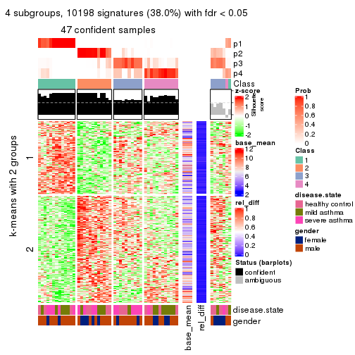
get_signatures(res, k = 5)
get_signatures(res, k = 6)
Signature heatmaps where rows are not scaled:
get_signatures(res, k = 2, scale_rows = FALSE)
get_signatures(res, k = 3, scale_rows = FALSE)
get_signatures(res, k = 4, scale_rows = FALSE)
get_signatures(res, k = 5, scale_rows = FALSE)

get_signatures(res, k = 6, scale_rows = FALSE)
Compare the overlap of signatures from different k:
compare_signatures(res)
get_signature() returns a data frame invisibly. TO get the list of signatures, the function
call should be assigned to a variable explicitly. In following code, if plot argument is set
to FALSE, no heatmap is plotted while only the differential analysis is performed.
# code only for demonstration
tb = get_signature(res, k = ..., plot = FALSE)
An example of the output of tb is:
#> which_row fdr mean_1 mean_2 scaled_mean_1 scaled_mean_2 km
#> 1 38 0.042760348 8.373488 9.131774 -0.5533452 0.5164555 1
#> 2 40 0.018707592 7.106213 8.469186 -0.6173731 0.5762149 1
#> 3 55 0.019134737 10.221463 11.207825 -0.6159697 0.5749050 1
#> 4 59 0.006059896 5.921854 7.869574 -0.6899429 0.6439467 1
#> 5 60 0.018055526 8.928898 10.211722 -0.6204761 0.5791110 1
#> 6 98 0.009384629 15.714769 14.887706 0.6635654 -0.6193277 2
...
The columns in tb are:
which_row: row indices corresponding to the input matrix.fdr: FDR for the differential test. mean_x: The mean value in group x.scaled_mean_x: The mean value in group x after rows are scaled.km: Row groups if k-means clustering is applied to rows.UMAP plot which shows how samples are separated.
dimension_reduction(res, k = 2, method = "UMAP")
dimension_reduction(res, k = 3, method = "UMAP")
dimension_reduction(res, k = 4, method = "UMAP")
dimension_reduction(res, k = 5, method = "UMAP")
dimension_reduction(res, k = 6, method = "UMAP")
Following heatmap shows how subgroups are split when increasing k:
collect_classes(res)
Test correlation between subgroups and known annotations. If the known annotation is numeric, one-way ANOVA test is applied, and if the known annotation is discrete, chi-squared contingency table test is applied.
test_to_known_factors(res)
#> n disease.state(p) gender(p) k
#> ATC:kmeans 53 0.5148 0.0504 2
#> ATC:kmeans 51 0.7025 0.1218 3
#> ATC:kmeans 47 0.2202 0.4502 4
#> ATC:kmeans 44 0.1985 0.4549 5
#> ATC:kmeans 53 0.0639 0.5038 6
If matrix rows can be associated to genes, consider to use functional_enrichment(res,
...) to perform function enrichment for the signature genes. See this vignette for more detailed explanations.
The object with results only for a single top-value method and a single partition method can be extracted as:
res = res_list["ATC", "skmeans"]
# you can also extract it by
# res = res_list["ATC:skmeans"]
A summary of res and all the functions that can be applied to it:
res
#> A 'ConsensusPartition' object with k = 2, 3, 4, 5, 6.
#> On a matrix with 26819 rows and 54 columns.
#> Top rows (1000, 2000, 3000, 4000, 5000) are extracted by 'ATC' method.
#> Subgroups are detected by 'skmeans' method.
#> Performed in total 1250 partitions by row resampling.
#> Best k for subgroups seems to be 4.
#>
#> Following methods can be applied to this 'ConsensusPartition' object:
#> [1] "cola_report" "collect_classes" "collect_plots"
#> [4] "collect_stats" "colnames" "compare_signatures"
#> [7] "consensus_heatmap" "dimension_reduction" "functional_enrichment"
#> [10] "get_anno_col" "get_anno" "get_classes"
#> [13] "get_consensus" "get_matrix" "get_membership"
#> [16] "get_param" "get_signatures" "get_stats"
#> [19] "is_best_k" "is_stable_k" "membership_heatmap"
#> [22] "ncol" "nrow" "plot_ecdf"
#> [25] "rownames" "select_partition_number" "show"
#> [28] "suggest_best_k" "test_to_known_factors"
collect_plots() function collects all the plots made from res for all k (number of partitions)
into one single page to provide an easy and fast comparison between different k.
collect_plots(res)
The plots are:
k and the heatmap of
predicted classes for each k.k.k.k.All the plots in panels can be made by individual functions and they are plotted later in this section.
select_partition_number() produces several plots showing different
statistics for choosing “optimized” k. There are following statistics:
k;k, the area increased is defined as \(A_k - A_{k-1}\).The detailed explanations of these statistics can be found in the cola vignette.
Generally speaking, lower PAC score, higher mean silhouette score or higher
concordance corresponds to better partition. Rand index and Jaccard index
measure how similar the current partition is compared to partition with k-1.
If they are too similar, we won't accept k is better than k-1.
select_partition_number(res)
The numeric values for all these statistics can be obtained by get_stats().
get_stats(res)
#> k 1-PAC mean_silhouette concordance area_increased Rand Jaccard
#> 2 2 1.000 0.992 0.996 0.5092 0.491 0.491
#> 3 3 0.920 0.898 0.955 0.2401 0.879 0.757
#> 4 4 0.998 0.936 0.975 0.1042 0.908 0.764
#> 5 5 0.791 0.770 0.856 0.0699 0.982 0.943
#> 6 6 0.769 0.639 0.801 0.0429 0.892 0.664
suggest_best_k() suggests the best \(k\) based on these statistics. The rules are as follows:
suggest_best_k(res)
#> [1] 4
#> attr(,"optional")
#> [1] 2 3
There is also optional best \(k\) = 2 3 that is worth to check.
Following shows the table of the partitions (You need to click the show/hide
code output link to see it). The membership matrix (columns with name p*)
is inferred by
clue::cl_consensus()
function with the SE method. Basically the value in the membership matrix
represents the probability to belong to a certain group. The finall class
label for an item is determined with the group with highest probability it
belongs to.
In get_classes() function, the entropy is calculated from the membership
matrix and the silhouette score is calculated from the consensus matrix.
cbind(get_classes(res, k = 2), get_membership(res, k = 2))
#> class entropy silhouette p1 p2
#> GSM665386 2 0.000 0.999 0.000 1.000
#> GSM665389 2 0.000 0.999 0.000 1.000
#> GSM665390 1 0.000 0.993 1.000 0.000
#> GSM665391 1 0.000 0.993 1.000 0.000
#> GSM665392 2 0.000 0.999 0.000 1.000
#> GSM665393 1 0.000 0.993 1.000 0.000
#> GSM665394 2 0.000 0.999 0.000 1.000
#> GSM665395 1 0.000 0.993 1.000 0.000
#> GSM665396 2 0.000 0.999 0.000 1.000
#> GSM665398 2 0.000 0.999 0.000 1.000
#> GSM665399 1 0.000 0.993 1.000 0.000
#> GSM665400 1 0.000 0.993 1.000 0.000
#> GSM665401 1 0.000 0.993 1.000 0.000
#> GSM665402 1 0.000 0.993 1.000 0.000
#> GSM665403 2 0.000 0.999 0.000 1.000
#> GSM665387 2 0.000 0.999 0.000 1.000
#> GSM665388 2 0.000 0.999 0.000 1.000
#> GSM665397 2 0.000 0.999 0.000 1.000
#> GSM665404 1 0.000 0.993 1.000 0.000
#> GSM665405 1 0.000 0.993 1.000 0.000
#> GSM665406 2 0.000 0.999 0.000 1.000
#> GSM665407 1 0.000 0.993 1.000 0.000
#> GSM665409 1 0.000 0.993 1.000 0.000
#> GSM665413 2 0.000 0.999 0.000 1.000
#> GSM665416 1 0.000 0.993 1.000 0.000
#> GSM665417 1 0.000 0.993 1.000 0.000
#> GSM665418 1 0.000 0.993 1.000 0.000
#> GSM665419 1 0.000 0.993 1.000 0.000
#> GSM665421 1 0.000 0.993 1.000 0.000
#> GSM665422 1 0.000 0.993 1.000 0.000
#> GSM665408 2 0.000 0.999 0.000 1.000
#> GSM665410 2 0.000 0.999 0.000 1.000
#> GSM665411 1 0.000 0.993 1.000 0.000
#> GSM665412 2 0.000 0.999 0.000 1.000
#> GSM665414 2 0.000 0.999 0.000 1.000
#> GSM665415 1 0.000 0.993 1.000 0.000
#> GSM665420 2 0.000 0.999 0.000 1.000
#> GSM665424 1 0.000 0.993 1.000 0.000
#> GSM665425 2 0.000 0.999 0.000 1.000
#> GSM665429 2 0.141 0.979 0.020 0.980
#> GSM665430 1 0.000 0.993 1.000 0.000
#> GSM665431 2 0.000 0.999 0.000 1.000
#> GSM665432 1 0.000 0.993 1.000 0.000
#> GSM665433 1 0.518 0.873 0.884 0.116
#> GSM665434 1 0.000 0.993 1.000 0.000
#> GSM665435 2 0.000 0.999 0.000 1.000
#> GSM665436 2 0.000 0.999 0.000 1.000
#> GSM665423 2 0.000 0.999 0.000 1.000
#> GSM665426 2 0.000 0.999 0.000 1.000
#> GSM665427 2 0.000 0.999 0.000 1.000
#> GSM665428 1 0.000 0.993 1.000 0.000
#> GSM665437 1 0.358 0.928 0.932 0.068
#> GSM665438 2 0.000 0.999 0.000 1.000
#> GSM665439 1 0.000 0.993 1.000 0.000
cbind(get_classes(res, k = 3), get_membership(res, k = 3))
#> class entropy silhouette p1 p2 p3
#> GSM665386 2 0.6302 0.275 0.000 0.520 0.480
#> GSM665389 2 0.0000 0.905 0.000 1.000 0.000
#> GSM665390 3 0.0237 0.938 0.004 0.000 0.996
#> GSM665391 1 0.0000 0.998 1.000 0.000 0.000
#> GSM665392 2 0.0237 0.903 0.000 0.996 0.004
#> GSM665393 1 0.0000 0.998 1.000 0.000 0.000
#> GSM665394 2 0.6286 0.316 0.000 0.536 0.464
#> GSM665395 1 0.0000 0.998 1.000 0.000 0.000
#> GSM665396 2 0.4931 0.719 0.000 0.768 0.232
#> GSM665398 2 0.0000 0.905 0.000 1.000 0.000
#> GSM665399 1 0.0000 0.998 1.000 0.000 0.000
#> GSM665400 1 0.0237 0.996 0.996 0.000 0.004
#> GSM665401 1 0.0661 0.988 0.988 0.008 0.004
#> GSM665402 1 0.0000 0.998 1.000 0.000 0.000
#> GSM665403 2 0.0000 0.905 0.000 1.000 0.000
#> GSM665387 2 0.3116 0.837 0.000 0.892 0.108
#> GSM665388 2 0.5016 0.710 0.000 0.760 0.240
#> GSM665397 2 0.0000 0.905 0.000 1.000 0.000
#> GSM665404 1 0.0000 0.998 1.000 0.000 0.000
#> GSM665405 1 0.0000 0.998 1.000 0.000 0.000
#> GSM665406 2 0.0000 0.905 0.000 1.000 0.000
#> GSM665407 1 0.0237 0.996 0.996 0.000 0.004
#> GSM665409 1 0.0000 0.998 1.000 0.000 0.000
#> GSM665413 2 0.0000 0.905 0.000 1.000 0.000
#> GSM665416 1 0.0000 0.998 1.000 0.000 0.000
#> GSM665417 1 0.0000 0.998 1.000 0.000 0.000
#> GSM665418 1 0.0000 0.998 1.000 0.000 0.000
#> GSM665419 1 0.0000 0.998 1.000 0.000 0.000
#> GSM665421 3 0.5465 0.572 0.288 0.000 0.712
#> GSM665422 1 0.0237 0.996 0.996 0.000 0.004
#> GSM665408 2 0.0475 0.900 0.004 0.992 0.004
#> GSM665410 2 0.0237 0.903 0.000 0.996 0.004
#> GSM665411 1 0.0237 0.996 0.996 0.000 0.004
#> GSM665412 2 0.0000 0.905 0.000 1.000 0.000
#> GSM665414 2 0.2448 0.860 0.000 0.924 0.076
#> GSM665415 1 0.0237 0.996 0.996 0.000 0.004
#> GSM665420 2 0.0000 0.905 0.000 1.000 0.000
#> GSM665424 1 0.0000 0.998 1.000 0.000 0.000
#> GSM665425 2 0.0000 0.905 0.000 1.000 0.000
#> GSM665429 3 0.0237 0.936 0.000 0.004 0.996
#> GSM665430 3 0.0237 0.938 0.004 0.000 0.996
#> GSM665431 2 0.0000 0.905 0.000 1.000 0.000
#> GSM665432 1 0.0000 0.998 1.000 0.000 0.000
#> GSM665433 3 0.0237 0.938 0.004 0.000 0.996
#> GSM665434 1 0.0000 0.998 1.000 0.000 0.000
#> GSM665435 2 0.6307 0.253 0.000 0.512 0.488
#> GSM665436 2 0.0000 0.905 0.000 1.000 0.000
#> GSM665423 2 0.0000 0.905 0.000 1.000 0.000
#> GSM665426 3 0.0237 0.936 0.000 0.004 0.996
#> GSM665427 2 0.0000 0.905 0.000 1.000 0.000
#> GSM665428 1 0.0000 0.998 1.000 0.000 0.000
#> GSM665437 3 0.0237 0.938 0.004 0.000 0.996
#> GSM665438 2 0.0000 0.905 0.000 1.000 0.000
#> GSM665439 1 0.0000 0.998 1.000 0.000 0.000
cbind(get_classes(res, k = 4), get_membership(res, k = 4))
#> class entropy silhouette p1 p2 p3 p4
#> GSM665386 2 0.2053 0.9343 0.000 0.924 0.072 0.004
#> GSM665389 2 0.0000 0.9811 0.000 1.000 0.000 0.000
#> GSM665390 3 0.0000 0.8774 0.000 0.000 1.000 0.000
#> GSM665391 1 0.0000 0.9756 1.000 0.000 0.000 0.000
#> GSM665392 4 0.0469 0.9840 0.000 0.012 0.000 0.988
#> GSM665393 1 0.0000 0.9756 1.000 0.000 0.000 0.000
#> GSM665394 2 0.2053 0.9343 0.000 0.924 0.072 0.004
#> GSM665395 1 0.0000 0.9756 1.000 0.000 0.000 0.000
#> GSM665396 2 0.1978 0.9374 0.000 0.928 0.068 0.004
#> GSM665398 2 0.0469 0.9763 0.000 0.988 0.000 0.012
#> GSM665399 1 0.0000 0.9756 1.000 0.000 0.000 0.000
#> GSM665400 1 0.0921 0.9528 0.972 0.000 0.000 0.028
#> GSM665401 4 0.0188 0.9924 0.000 0.004 0.000 0.996
#> GSM665402 1 0.0000 0.9756 1.000 0.000 0.000 0.000
#> GSM665403 2 0.0469 0.9763 0.000 0.988 0.000 0.012
#> GSM665387 2 0.0188 0.9802 0.000 0.996 0.000 0.004
#> GSM665388 2 0.1978 0.9374 0.000 0.928 0.068 0.004
#> GSM665397 2 0.0000 0.9811 0.000 1.000 0.000 0.000
#> GSM665404 1 0.0000 0.9756 1.000 0.000 0.000 0.000
#> GSM665405 1 0.0000 0.9756 1.000 0.000 0.000 0.000
#> GSM665406 2 0.0000 0.9811 0.000 1.000 0.000 0.000
#> GSM665407 4 0.0188 0.9899 0.004 0.000 0.000 0.996
#> GSM665409 1 0.0000 0.9756 1.000 0.000 0.000 0.000
#> GSM665413 2 0.0000 0.9811 0.000 1.000 0.000 0.000
#> GSM665416 1 0.0000 0.9756 1.000 0.000 0.000 0.000
#> GSM665417 1 0.0000 0.9756 1.000 0.000 0.000 0.000
#> GSM665418 1 0.0188 0.9727 0.996 0.000 0.000 0.004
#> GSM665419 1 0.0000 0.9756 1.000 0.000 0.000 0.000
#> GSM665421 3 0.4999 0.0188 0.492 0.000 0.508 0.000
#> GSM665422 1 0.4564 0.5242 0.672 0.000 0.000 0.328
#> GSM665408 4 0.0188 0.9924 0.000 0.004 0.000 0.996
#> GSM665410 4 0.0188 0.9924 0.000 0.004 0.000 0.996
#> GSM665411 4 0.0469 0.9815 0.012 0.000 0.000 0.988
#> GSM665412 2 0.0707 0.9717 0.000 0.980 0.000 0.020
#> GSM665414 2 0.0188 0.9802 0.000 0.996 0.000 0.004
#> GSM665415 1 0.1867 0.9100 0.928 0.000 0.000 0.072
#> GSM665420 2 0.0000 0.9811 0.000 1.000 0.000 0.000
#> GSM665424 1 0.0000 0.9756 1.000 0.000 0.000 0.000
#> GSM665425 2 0.0817 0.9689 0.000 0.976 0.000 0.024
#> GSM665429 3 0.0469 0.8650 0.000 0.012 0.988 0.000
#> GSM665430 3 0.0000 0.8774 0.000 0.000 1.000 0.000
#> GSM665431 2 0.0000 0.9811 0.000 1.000 0.000 0.000
#> GSM665432 1 0.0000 0.9756 1.000 0.000 0.000 0.000
#> GSM665433 3 0.0000 0.8774 0.000 0.000 1.000 0.000
#> GSM665434 1 0.0000 0.9756 1.000 0.000 0.000 0.000
#> GSM665435 2 0.0524 0.9776 0.000 0.988 0.008 0.004
#> GSM665436 2 0.0000 0.9811 0.000 1.000 0.000 0.000
#> GSM665423 2 0.0188 0.9802 0.000 0.996 0.000 0.004
#> GSM665426 3 0.0000 0.8774 0.000 0.000 1.000 0.000
#> GSM665427 2 0.0000 0.9811 0.000 1.000 0.000 0.000
#> GSM665428 1 0.0000 0.9756 1.000 0.000 0.000 0.000
#> GSM665437 3 0.0000 0.8774 0.000 0.000 1.000 0.000
#> GSM665438 2 0.0000 0.9811 0.000 1.000 0.000 0.000
#> GSM665439 1 0.0000 0.9756 1.000 0.000 0.000 0.000
cbind(get_classes(res, k = 5), get_membership(res, k = 5))
#> class entropy silhouette p1 p2 p3 p4 p5
#> GSM665386 2 0.6000 0.585 0.000 0.540 0.132 0.000 NA
#> GSM665389 2 0.0000 0.830 0.000 1.000 0.000 0.000 NA
#> GSM665390 3 0.0912 0.802 0.012 0.000 0.972 0.000 NA
#> GSM665391 1 0.0000 0.882 1.000 0.000 0.000 0.000 NA
#> GSM665392 4 0.0865 0.846 0.000 0.024 0.000 0.972 NA
#> GSM665393 1 0.3783 0.709 0.740 0.000 0.000 0.008 NA
#> GSM665394 2 0.5965 0.589 0.000 0.544 0.128 0.000 NA
#> GSM665395 1 0.0880 0.865 0.968 0.000 0.000 0.000 NA
#> GSM665396 2 0.5858 0.615 0.000 0.568 0.124 0.000 NA
#> GSM665398 2 0.2124 0.786 0.000 0.900 0.000 0.096 NA
#> GSM665399 1 0.0000 0.882 1.000 0.000 0.000 0.000 NA
#> GSM665400 1 0.4464 0.655 0.684 0.000 0.000 0.028 NA
#> GSM665401 4 0.1121 0.857 0.000 0.000 0.000 0.956 NA
#> GSM665402 1 0.0162 0.881 0.996 0.000 0.000 0.000 NA
#> GSM665403 2 0.2068 0.789 0.000 0.904 0.000 0.092 NA
#> GSM665387 2 0.4425 0.706 0.000 0.680 0.024 0.000 NA
#> GSM665388 2 0.5785 0.616 0.000 0.568 0.112 0.000 NA
#> GSM665397 2 0.0000 0.830 0.000 1.000 0.000 0.000 NA
#> GSM665404 1 0.0000 0.882 1.000 0.000 0.000 0.000 NA
#> GSM665405 1 0.0000 0.882 1.000 0.000 0.000 0.000 NA
#> GSM665406 2 0.0000 0.830 0.000 1.000 0.000 0.000 NA
#> GSM665407 4 0.3336 0.773 0.000 0.000 0.000 0.772 NA
#> GSM665409 1 0.0000 0.882 1.000 0.000 0.000 0.000 NA
#> GSM665413 2 0.0000 0.830 0.000 1.000 0.000 0.000 NA
#> GSM665416 1 0.0162 0.881 0.996 0.000 0.000 0.000 NA
#> GSM665417 1 0.0000 0.882 1.000 0.000 0.000 0.000 NA
#> GSM665418 1 0.4088 0.663 0.688 0.000 0.000 0.008 NA
#> GSM665419 1 0.0000 0.882 1.000 0.000 0.000 0.000 NA
#> GSM665421 1 0.4637 0.165 0.536 0.000 0.452 0.000 NA
#> GSM665422 1 0.6426 0.288 0.468 0.000 0.000 0.184 NA
#> GSM665408 4 0.0290 0.861 0.000 0.008 0.000 0.992 NA
#> GSM665410 4 0.0290 0.861 0.000 0.008 0.000 0.992 NA
#> GSM665411 4 0.4252 0.680 0.008 0.000 0.000 0.652 NA
#> GSM665412 2 0.2179 0.784 0.000 0.896 0.000 0.100 NA
#> GSM665414 2 0.3430 0.760 0.000 0.776 0.004 0.000 NA
#> GSM665415 1 0.5316 0.534 0.588 0.000 0.000 0.064 NA
#> GSM665420 2 0.0000 0.830 0.000 1.000 0.000 0.000 NA
#> GSM665424 1 0.0000 0.882 1.000 0.000 0.000 0.000 NA
#> GSM665425 2 0.3048 0.717 0.000 0.820 0.000 0.176 NA
#> GSM665429 3 0.4746 0.678 0.000 0.016 0.504 0.000 NA
#> GSM665430 3 0.3837 0.790 0.000 0.000 0.692 0.000 NA
#> GSM665431 2 0.0000 0.830 0.000 1.000 0.000 0.000 NA
#> GSM665432 1 0.0000 0.882 1.000 0.000 0.000 0.000 NA
#> GSM665433 3 0.0162 0.812 0.000 0.000 0.996 0.000 NA
#> GSM665434 1 0.0162 0.880 0.996 0.000 0.004 0.000 NA
#> GSM665435 2 0.4527 0.626 0.000 0.596 0.012 0.000 NA
#> GSM665436 2 0.0000 0.830 0.000 1.000 0.000 0.000 NA
#> GSM665423 2 0.2516 0.796 0.000 0.860 0.000 0.000 NA
#> GSM665426 3 0.0703 0.811 0.000 0.000 0.976 0.000 NA
#> GSM665427 2 0.2927 0.804 0.000 0.872 0.000 0.068 NA
#> GSM665428 1 0.0963 0.862 0.964 0.000 0.000 0.000 NA
#> GSM665437 3 0.3774 0.793 0.000 0.000 0.704 0.000 NA
#> GSM665438 2 0.0000 0.830 0.000 1.000 0.000 0.000 NA
#> GSM665439 1 0.0000 0.882 1.000 0.000 0.000 0.000 NA
cbind(get_classes(res, k = 6), get_membership(res, k = 6))
#> class entropy silhouette p1 p2 p3 p4 p5 p6
#> GSM665386 4 0.3874 0.6247 0.000 0.356 0.008 0.636 0.000 0.000
#> GSM665389 2 0.0260 0.7850 0.000 0.992 0.000 0.008 0.000 0.000
#> GSM665390 4 0.6555 -0.6599 0.028 0.000 0.172 0.412 0.380 0.008
#> GSM665391 1 0.0146 0.9053 0.996 0.000 0.004 0.000 0.000 0.000
#> GSM665392 6 0.1515 0.8051 0.000 0.028 0.020 0.008 0.000 0.944
#> GSM665393 1 0.3819 0.0965 0.652 0.000 0.340 0.008 0.000 0.000
#> GSM665394 4 0.3647 0.6258 0.000 0.360 0.000 0.640 0.000 0.000
#> GSM665395 1 0.1820 0.8404 0.924 0.000 0.008 0.012 0.056 0.000
#> GSM665396 4 0.3782 0.5735 0.000 0.412 0.000 0.588 0.000 0.000
#> GSM665398 2 0.2687 0.7261 0.000 0.872 0.012 0.024 0.000 0.092
#> GSM665399 1 0.0000 0.9058 1.000 0.000 0.000 0.000 0.000 0.000
#> GSM665400 3 0.5004 0.5745 0.396 0.000 0.548 0.028 0.000 0.028
#> GSM665401 6 0.2164 0.7937 0.000 0.000 0.068 0.032 0.000 0.900
#> GSM665402 1 0.0291 0.9035 0.992 0.000 0.004 0.004 0.000 0.000
#> GSM665403 2 0.2585 0.7317 0.000 0.880 0.012 0.024 0.000 0.084
#> GSM665387 2 0.3950 -0.1901 0.000 0.564 0.004 0.432 0.000 0.000
#> GSM665388 4 0.4033 0.5831 0.000 0.404 0.004 0.588 0.004 0.000
#> GSM665397 2 0.0260 0.7850 0.000 0.992 0.000 0.008 0.000 0.000
#> GSM665404 1 0.0146 0.9053 0.996 0.000 0.004 0.000 0.000 0.000
#> GSM665405 1 0.0405 0.8996 0.988 0.000 0.008 0.004 0.000 0.000
#> GSM665406 2 0.0146 0.7859 0.000 0.996 0.000 0.004 0.000 0.000
#> GSM665407 6 0.4603 0.3027 0.000 0.000 0.416 0.040 0.000 0.544
#> GSM665409 1 0.0000 0.9058 1.000 0.000 0.000 0.000 0.000 0.000
#> GSM665413 2 0.0520 0.7850 0.000 0.984 0.008 0.008 0.000 0.000
#> GSM665416 1 0.0603 0.8927 0.980 0.000 0.016 0.004 0.000 0.000
#> GSM665417 1 0.0000 0.9058 1.000 0.000 0.000 0.000 0.000 0.000
#> GSM665418 3 0.3854 0.4619 0.464 0.000 0.536 0.000 0.000 0.000
#> GSM665419 1 0.0000 0.9058 1.000 0.000 0.000 0.000 0.000 0.000
#> GSM665421 1 0.7109 0.0342 0.484 0.000 0.140 0.196 0.176 0.004
#> GSM665422 3 0.4089 0.6745 0.264 0.000 0.696 0.000 0.000 0.040
#> GSM665408 6 0.0291 0.8298 0.000 0.004 0.004 0.000 0.000 0.992
#> GSM665410 6 0.0837 0.8279 0.000 0.020 0.004 0.004 0.000 0.972
#> GSM665411 3 0.3405 0.1194 0.000 0.000 0.724 0.004 0.000 0.272
#> GSM665412 2 0.2880 0.7118 0.000 0.856 0.012 0.024 0.000 0.108
#> GSM665414 2 0.3489 0.3507 0.000 0.708 0.004 0.288 0.000 0.000
#> GSM665415 3 0.3555 0.6314 0.184 0.000 0.776 0.000 0.000 0.040
#> GSM665420 2 0.0146 0.7859 0.000 0.996 0.000 0.004 0.000 0.000
#> GSM665424 1 0.0291 0.9029 0.992 0.000 0.004 0.000 0.004 0.000
#> GSM665425 2 0.3615 0.6528 0.000 0.796 0.016 0.032 0.000 0.156
#> GSM665429 5 0.4036 0.5458 0.000 0.004 0.040 0.196 0.752 0.008
#> GSM665430 5 0.0806 0.6763 0.000 0.000 0.020 0.008 0.972 0.000
#> GSM665431 2 0.0622 0.7838 0.000 0.980 0.008 0.012 0.000 0.000
#> GSM665432 1 0.0000 0.9058 1.000 0.000 0.000 0.000 0.000 0.000
#> GSM665433 5 0.5771 0.5623 0.000 0.000 0.140 0.372 0.480 0.008
#> GSM665434 1 0.0146 0.9053 0.996 0.000 0.004 0.000 0.000 0.000
#> GSM665435 2 0.5665 -0.2803 0.000 0.508 0.020 0.376 0.096 0.000
#> GSM665436 2 0.0260 0.7850 0.000 0.992 0.000 0.008 0.000 0.000
#> GSM665423 2 0.2823 0.5459 0.000 0.796 0.000 0.204 0.000 0.000
#> GSM665426 5 0.5704 0.5417 0.000 0.000 0.124 0.432 0.436 0.008
#> GSM665427 2 0.4216 0.6368 0.000 0.780 0.024 0.096 0.004 0.096
#> GSM665428 1 0.1606 0.8487 0.932 0.000 0.008 0.004 0.056 0.000
#> GSM665437 5 0.1010 0.6856 0.000 0.000 0.004 0.036 0.960 0.000
#> GSM665438 2 0.0291 0.7862 0.000 0.992 0.004 0.004 0.000 0.000
#> GSM665439 1 0.0146 0.9053 0.996 0.000 0.004 0.000 0.000 0.000
Heatmaps for the consensus matrix. It visualizes the probability of two samples to be in a same group.
consensus_heatmap(res, k = 2)
consensus_heatmap(res, k = 3)
consensus_heatmap(res, k = 4)
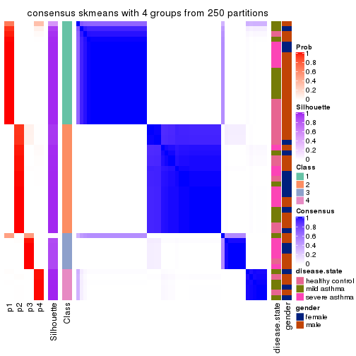
consensus_heatmap(res, k = 5)
consensus_heatmap(res, k = 6)
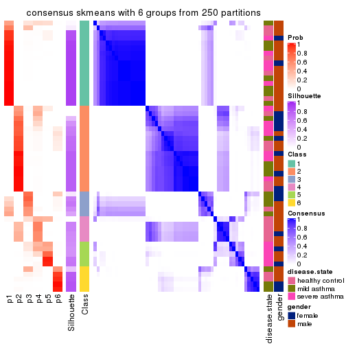
Heatmaps for the membership of samples in all partitions to see how consistent they are:
membership_heatmap(res, k = 2)
membership_heatmap(res, k = 3)
membership_heatmap(res, k = 4)
membership_heatmap(res, k = 5)
membership_heatmap(res, k = 6)
As soon as we have had the classes for columns, we can look for signatures which are significantly different between classes which can be candidate marks for certain classes. Following are the heatmaps for signatures.
Signature heatmaps where rows are scaled:
get_signatures(res, k = 2)

get_signatures(res, k = 3)
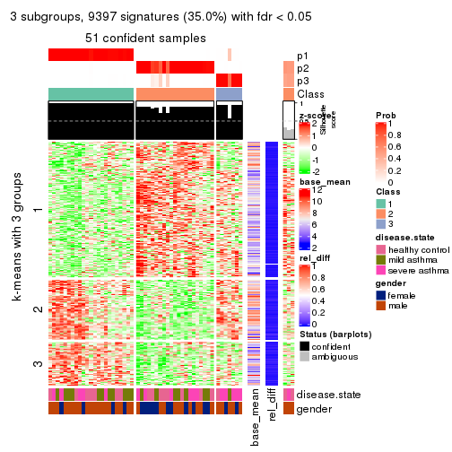
get_signatures(res, k = 4)
get_signatures(res, k = 5)
get_signatures(res, k = 6)
Signature heatmaps where rows are not scaled:
get_signatures(res, k = 2, scale_rows = FALSE)

get_signatures(res, k = 3, scale_rows = FALSE)
get_signatures(res, k = 4, scale_rows = FALSE)
get_signatures(res, k = 5, scale_rows = FALSE)
get_signatures(res, k = 6, scale_rows = FALSE)
Compare the overlap of signatures from different k:
compare_signatures(res)
get_signature() returns a data frame invisibly. TO get the list of signatures, the function
call should be assigned to a variable explicitly. In following code, if plot argument is set
to FALSE, no heatmap is plotted while only the differential analysis is performed.
# code only for demonstration
tb = get_signature(res, k = ..., plot = FALSE)
An example of the output of tb is:
#> which_row fdr mean_1 mean_2 scaled_mean_1 scaled_mean_2 km
#> 1 38 0.042760348 8.373488 9.131774 -0.5533452 0.5164555 1
#> 2 40 0.018707592 7.106213 8.469186 -0.6173731 0.5762149 1
#> 3 55 0.019134737 10.221463 11.207825 -0.6159697 0.5749050 1
#> 4 59 0.006059896 5.921854 7.869574 -0.6899429 0.6439467 1
#> 5 60 0.018055526 8.928898 10.211722 -0.6204761 0.5791110 1
#> 6 98 0.009384629 15.714769 14.887706 0.6635654 -0.6193277 2
...
The columns in tb are:
which_row: row indices corresponding to the input matrix.fdr: FDR for the differential test. mean_x: The mean value in group x.scaled_mean_x: The mean value in group x after rows are scaled.km: Row groups if k-means clustering is applied to rows.UMAP plot which shows how samples are separated.
dimension_reduction(res, k = 2, method = "UMAP")
dimension_reduction(res, k = 3, method = "UMAP")

dimension_reduction(res, k = 4, method = "UMAP")
dimension_reduction(res, k = 5, method = "UMAP")
dimension_reduction(res, k = 6, method = "UMAP")
Following heatmap shows how subgroups are split when increasing k:
collect_classes(res)
Test correlation between subgroups and known annotations. If the known annotation is numeric, one-way ANOVA test is applied, and if the known annotation is discrete, chi-squared contingency table test is applied.
test_to_known_factors(res)
#> n disease.state(p) gender(p) k
#> ATC:skmeans 54 0.4665 0.0519 2
#> ATC:skmeans 51 0.1337 0.0466 3
#> ATC:skmeans 53 0.0350 0.1963 4
#> ATC:skmeans 52 0.0425 0.2337 5
#> ATC:skmeans 45 0.0128 0.5437 6
If matrix rows can be associated to genes, consider to use functional_enrichment(res,
...) to perform function enrichment for the signature genes. See this vignette for more detailed explanations.
The object with results only for a single top-value method and a single partition method can be extracted as:
res = res_list["ATC", "pam"]
# you can also extract it by
# res = res_list["ATC:pam"]
A summary of res and all the functions that can be applied to it:
res
#> A 'ConsensusPartition' object with k = 2, 3, 4, 5, 6.
#> On a matrix with 26819 rows and 54 columns.
#> Top rows (1000, 2000, 3000, 4000, 5000) are extracted by 'ATC' method.
#> Subgroups are detected by 'pam' method.
#> Performed in total 1250 partitions by row resampling.
#> Best k for subgroups seems to be 5.
#>
#> Following methods can be applied to this 'ConsensusPartition' object:
#> [1] "cola_report" "collect_classes" "collect_plots"
#> [4] "collect_stats" "colnames" "compare_signatures"
#> [7] "consensus_heatmap" "dimension_reduction" "functional_enrichment"
#> [10] "get_anno_col" "get_anno" "get_classes"
#> [13] "get_consensus" "get_matrix" "get_membership"
#> [16] "get_param" "get_signatures" "get_stats"
#> [19] "is_best_k" "is_stable_k" "membership_heatmap"
#> [22] "ncol" "nrow" "plot_ecdf"
#> [25] "rownames" "select_partition_number" "show"
#> [28] "suggest_best_k" "test_to_known_factors"
collect_plots() function collects all the plots made from res for all k (number of partitions)
into one single page to provide an easy and fast comparison between different k.
collect_plots(res)
The plots are:
k and the heatmap of
predicted classes for each k.k.k.k.All the plots in panels can be made by individual functions and they are plotted later in this section.
select_partition_number() produces several plots showing different
statistics for choosing “optimized” k. There are following statistics:
k;k, the area increased is defined as \(A_k - A_{k-1}\).The detailed explanations of these statistics can be found in the cola vignette.
Generally speaking, lower PAC score, higher mean silhouette score or higher
concordance corresponds to better partition. Rand index and Jaccard index
measure how similar the current partition is compared to partition with k-1.
If they are too similar, we won't accept k is better than k-1.
select_partition_number(res)

The numeric values for all these statistics can be obtained by get_stats().
get_stats(res)
#> k 1-PAC mean_silhouette concordance area_increased Rand Jaccard
#> 2 2 0.817 0.831 0.941 0.5009 0.493 0.493
#> 3 3 0.653 0.701 0.873 0.2757 0.729 0.513
#> 4 4 0.849 0.860 0.935 0.1761 0.758 0.426
#> 5 5 0.951 0.931 0.970 0.0772 0.894 0.613
#> 6 6 0.895 0.838 0.915 0.0356 0.962 0.801
suggest_best_k() suggests the best \(k\) based on these statistics. The rules are as follows:
suggest_best_k(res)
#> [1] 5
Following shows the table of the partitions (You need to click the show/hide
code output link to see it). The membership matrix (columns with name p*)
is inferred by
clue::cl_consensus()
function with the SE method. Basically the value in the membership matrix
represents the probability to belong to a certain group. The finall class
label for an item is determined with the group with highest probability it
belongs to.
In get_classes() function, the entropy is calculated from the membership
matrix and the silhouette score is calculated from the consensus matrix.
cbind(get_classes(res, k = 2), get_membership(res, k = 2))
#> class entropy silhouette p1 p2
#> GSM665386 2 0.0000 0.9135 0.000 1.000
#> GSM665389 2 0.0000 0.9135 0.000 1.000
#> GSM665390 1 0.9686 0.2515 0.604 0.396
#> GSM665391 1 0.0000 0.9466 1.000 0.000
#> GSM665392 1 0.9608 0.3250 0.616 0.384
#> GSM665393 1 0.0000 0.9466 1.000 0.000
#> GSM665394 2 0.0000 0.9135 0.000 1.000
#> GSM665395 1 0.0000 0.9466 1.000 0.000
#> GSM665396 2 0.0000 0.9135 0.000 1.000
#> GSM665398 2 0.0000 0.9135 0.000 1.000
#> GSM665399 1 0.0000 0.9466 1.000 0.000
#> GSM665400 1 0.0000 0.9466 1.000 0.000
#> GSM665401 1 0.0376 0.9431 0.996 0.004
#> GSM665402 1 0.0000 0.9466 1.000 0.000
#> GSM665403 2 0.0000 0.9135 0.000 1.000
#> GSM665387 2 0.0000 0.9135 0.000 1.000
#> GSM665388 2 0.0000 0.9135 0.000 1.000
#> GSM665397 2 0.0000 0.9135 0.000 1.000
#> GSM665404 1 0.0000 0.9466 1.000 0.000
#> GSM665405 1 0.0000 0.9466 1.000 0.000
#> GSM665406 2 0.0000 0.9135 0.000 1.000
#> GSM665407 1 0.0000 0.9466 1.000 0.000
#> GSM665409 1 0.0000 0.9466 1.000 0.000
#> GSM665413 2 0.0000 0.9135 0.000 1.000
#> GSM665416 1 0.0000 0.9466 1.000 0.000
#> GSM665417 1 0.0000 0.9466 1.000 0.000
#> GSM665418 1 0.0000 0.9466 1.000 0.000
#> GSM665419 1 0.0000 0.9466 1.000 0.000
#> GSM665421 1 0.0000 0.9466 1.000 0.000
#> GSM665422 1 0.0000 0.9466 1.000 0.000
#> GSM665408 1 0.2043 0.9164 0.968 0.032
#> GSM665410 2 0.9881 0.2476 0.436 0.564
#> GSM665411 1 0.0000 0.9466 1.000 0.000
#> GSM665412 2 0.0000 0.9135 0.000 1.000
#> GSM665414 2 0.0000 0.9135 0.000 1.000
#> GSM665415 1 0.0000 0.9466 1.000 0.000
#> GSM665420 2 0.0000 0.9135 0.000 1.000
#> GSM665424 1 0.0000 0.9466 1.000 0.000
#> GSM665425 2 0.0000 0.9135 0.000 1.000
#> GSM665429 2 0.9983 0.1328 0.476 0.524
#> GSM665430 1 0.0000 0.9466 1.000 0.000
#> GSM665431 2 0.0000 0.9135 0.000 1.000
#> GSM665432 1 0.0000 0.9466 1.000 0.000
#> GSM665433 1 0.9998 -0.0904 0.508 0.492
#> GSM665434 1 0.0000 0.9466 1.000 0.000
#> GSM665435 2 0.0000 0.9135 0.000 1.000
#> GSM665436 2 0.0000 0.9135 0.000 1.000
#> GSM665423 2 0.0000 0.9135 0.000 1.000
#> GSM665426 2 0.9983 0.1328 0.476 0.524
#> GSM665427 2 0.0000 0.9135 0.000 1.000
#> GSM665428 1 0.0000 0.9466 1.000 0.000
#> GSM665437 2 0.9996 0.0932 0.488 0.512
#> GSM665438 2 0.0000 0.9135 0.000 1.000
#> GSM665439 1 0.0000 0.9466 1.000 0.000
cbind(get_classes(res, k = 3), get_membership(res, k = 3))
#> class entropy silhouette p1 p2 p3
#> GSM665386 2 0.611 0.363 0.000 0.604 0.396
#> GSM665389 2 0.000 0.904 0.000 1.000 0.000
#> GSM665390 3 0.556 0.505 0.000 0.300 0.700
#> GSM665391 1 0.623 0.407 0.564 0.000 0.436
#> GSM665392 3 0.303 0.696 0.004 0.092 0.904
#> GSM665393 1 0.623 0.407 0.564 0.000 0.436
#> GSM665394 2 0.319 0.852 0.000 0.888 0.112
#> GSM665395 3 0.196 0.747 0.056 0.000 0.944
#> GSM665396 2 0.263 0.871 0.000 0.916 0.084
#> GSM665398 2 0.000 0.904 0.000 1.000 0.000
#> GSM665399 1 0.000 0.852 1.000 0.000 0.000
#> GSM665400 3 0.254 0.728 0.080 0.000 0.920
#> GSM665401 3 0.196 0.747 0.056 0.000 0.944
#> GSM665402 3 0.296 0.707 0.100 0.000 0.900
#> GSM665403 2 0.518 0.588 0.000 0.744 0.256
#> GSM665387 2 0.000 0.904 0.000 1.000 0.000
#> GSM665388 2 0.319 0.852 0.000 0.888 0.112
#> GSM665397 2 0.000 0.904 0.000 1.000 0.000
#> GSM665404 1 0.000 0.852 1.000 0.000 0.000
#> GSM665405 3 0.288 0.712 0.096 0.000 0.904
#> GSM665406 2 0.000 0.904 0.000 1.000 0.000
#> GSM665407 3 0.196 0.747 0.056 0.000 0.944
#> GSM665409 1 0.000 0.852 1.000 0.000 0.000
#> GSM665413 2 0.000 0.904 0.000 1.000 0.000
#> GSM665416 3 0.625 -0.144 0.444 0.000 0.556
#> GSM665417 1 0.000 0.852 1.000 0.000 0.000
#> GSM665418 3 0.196 0.747 0.056 0.000 0.944
#> GSM665419 1 0.000 0.852 1.000 0.000 0.000
#> GSM665421 3 0.000 0.736 0.000 0.000 1.000
#> GSM665422 3 0.196 0.747 0.056 0.000 0.944
#> GSM665408 3 0.196 0.747 0.056 0.000 0.944
#> GSM665410 3 0.601 0.362 0.000 0.372 0.628
#> GSM665411 3 0.196 0.747 0.056 0.000 0.944
#> GSM665412 2 0.000 0.904 0.000 1.000 0.000
#> GSM665414 2 0.226 0.878 0.000 0.932 0.068
#> GSM665415 3 0.196 0.747 0.056 0.000 0.944
#> GSM665420 2 0.000 0.904 0.000 1.000 0.000
#> GSM665424 1 0.623 0.407 0.564 0.000 0.436
#> GSM665425 3 0.623 0.168 0.000 0.436 0.564
#> GSM665429 3 0.579 0.455 0.000 0.332 0.668
#> GSM665430 3 0.000 0.736 0.000 0.000 1.000
#> GSM665431 2 0.000 0.904 0.000 1.000 0.000
#> GSM665432 1 0.000 0.852 1.000 0.000 0.000
#> GSM665433 3 0.576 0.462 0.000 0.328 0.672
#> GSM665434 1 0.000 0.852 1.000 0.000 0.000
#> GSM665435 2 0.296 0.861 0.000 0.900 0.100
#> GSM665436 2 0.000 0.904 0.000 1.000 0.000
#> GSM665423 2 0.000 0.904 0.000 1.000 0.000
#> GSM665426 3 0.579 0.455 0.000 0.332 0.668
#> GSM665427 2 0.622 0.257 0.000 0.568 0.432
#> GSM665428 3 0.529 0.444 0.268 0.000 0.732
#> GSM665437 3 0.579 0.455 0.000 0.332 0.668
#> GSM665438 2 0.000 0.904 0.000 1.000 0.000
#> GSM665439 1 0.000 0.852 1.000 0.000 0.000
cbind(get_classes(res, k = 4), get_membership(res, k = 4))
#> class entropy silhouette p1 p2 p3 p4
#> GSM665386 3 0.0000 0.8792 0.000 0.000 1.000 0.000
#> GSM665389 2 0.0000 0.9941 0.000 1.000 0.000 0.000
#> GSM665390 3 0.0000 0.8792 0.000 0.000 1.000 0.000
#> GSM665391 4 0.4250 0.6587 0.276 0.000 0.000 0.724
#> GSM665392 4 0.4967 -0.0701 0.000 0.000 0.452 0.548
#> GSM665393 4 0.4250 0.6587 0.276 0.000 0.000 0.724
#> GSM665394 3 0.0000 0.8792 0.000 0.000 1.000 0.000
#> GSM665395 4 0.0000 0.8726 0.000 0.000 0.000 1.000
#> GSM665396 3 0.3400 0.7418 0.000 0.180 0.820 0.000
#> GSM665398 2 0.0000 0.9941 0.000 1.000 0.000 0.000
#> GSM665399 1 0.0000 1.0000 1.000 0.000 0.000 0.000
#> GSM665400 4 0.0000 0.8726 0.000 0.000 0.000 1.000
#> GSM665401 4 0.0000 0.8726 0.000 0.000 0.000 1.000
#> GSM665402 4 0.0000 0.8726 0.000 0.000 0.000 1.000
#> GSM665403 2 0.1022 0.9621 0.000 0.968 0.000 0.032
#> GSM665387 2 0.1022 0.9651 0.000 0.968 0.032 0.000
#> GSM665388 3 0.0000 0.8792 0.000 0.000 1.000 0.000
#> GSM665397 2 0.0000 0.9941 0.000 1.000 0.000 0.000
#> GSM665404 1 0.0000 1.0000 1.000 0.000 0.000 0.000
#> GSM665405 4 0.0000 0.8726 0.000 0.000 0.000 1.000
#> GSM665406 2 0.0000 0.9941 0.000 1.000 0.000 0.000
#> GSM665407 4 0.0000 0.8726 0.000 0.000 0.000 1.000
#> GSM665409 1 0.0000 1.0000 1.000 0.000 0.000 0.000
#> GSM665413 2 0.0000 0.9941 0.000 1.000 0.000 0.000
#> GSM665416 4 0.4008 0.6930 0.244 0.000 0.000 0.756
#> GSM665417 1 0.0000 1.0000 1.000 0.000 0.000 0.000
#> GSM665418 4 0.3400 0.7381 0.000 0.000 0.180 0.820
#> GSM665419 1 0.0000 1.0000 1.000 0.000 0.000 0.000
#> GSM665421 3 0.1716 0.8465 0.000 0.000 0.936 0.064
#> GSM665422 4 0.0000 0.8726 0.000 0.000 0.000 1.000
#> GSM665408 4 0.0188 0.8703 0.000 0.000 0.004 0.996
#> GSM665410 3 0.4567 0.6789 0.000 0.008 0.716 0.276
#> GSM665411 4 0.0000 0.8726 0.000 0.000 0.000 1.000
#> GSM665412 2 0.0000 0.9941 0.000 1.000 0.000 0.000
#> GSM665414 3 0.4888 0.3397 0.000 0.412 0.588 0.000
#> GSM665415 4 0.0000 0.8726 0.000 0.000 0.000 1.000
#> GSM665420 2 0.0000 0.9941 0.000 1.000 0.000 0.000
#> GSM665424 4 0.4250 0.6587 0.276 0.000 0.000 0.724
#> GSM665425 3 0.5573 0.6575 0.000 0.052 0.676 0.272
#> GSM665429 3 0.3172 0.7911 0.000 0.000 0.840 0.160
#> GSM665430 3 0.0336 0.8765 0.000 0.000 0.992 0.008
#> GSM665431 2 0.0000 0.9941 0.000 1.000 0.000 0.000
#> GSM665432 1 0.0000 1.0000 1.000 0.000 0.000 0.000
#> GSM665433 3 0.0000 0.8792 0.000 0.000 1.000 0.000
#> GSM665434 1 0.0000 1.0000 1.000 0.000 0.000 0.000
#> GSM665435 3 0.0000 0.8792 0.000 0.000 1.000 0.000
#> GSM665436 2 0.0000 0.9941 0.000 1.000 0.000 0.000
#> GSM665423 2 0.0000 0.9941 0.000 1.000 0.000 0.000
#> GSM665426 3 0.0000 0.8792 0.000 0.000 1.000 0.000
#> GSM665427 3 0.4420 0.7189 0.000 0.012 0.748 0.240
#> GSM665428 4 0.1557 0.8460 0.056 0.000 0.000 0.944
#> GSM665437 3 0.0000 0.8792 0.000 0.000 1.000 0.000
#> GSM665438 2 0.0000 0.9941 0.000 1.000 0.000 0.000
#> GSM665439 1 0.0000 1.0000 1.000 0.000 0.000 0.000
cbind(get_classes(res, k = 5), get_membership(res, k = 5))
#> class entropy silhouette p1 p2 p3 p4 p5
#> GSM665386 4 0.0000 0.9476 0 0.000 0.000 1.000 0.000
#> GSM665389 2 0.0000 0.9918 0 1.000 0.000 0.000 0.000
#> GSM665390 4 0.0000 0.9476 0 0.000 0.000 1.000 0.000
#> GSM665391 3 0.0000 0.9541 0 0.000 1.000 0.000 0.000
#> GSM665392 5 0.0000 0.9419 0 0.000 0.000 0.000 1.000
#> GSM665393 3 0.0000 0.9541 0 0.000 1.000 0.000 0.000
#> GSM665394 4 0.0000 0.9476 0 0.000 0.000 1.000 0.000
#> GSM665395 3 0.0000 0.9541 0 0.000 1.000 0.000 0.000
#> GSM665396 4 0.3319 0.8051 0 0.160 0.000 0.820 0.020
#> GSM665398 2 0.1671 0.9187 0 0.924 0.000 0.000 0.076
#> GSM665399 1 0.0000 1.0000 1 0.000 0.000 0.000 0.000
#> GSM665400 3 0.0000 0.9541 0 0.000 1.000 0.000 0.000
#> GSM665401 5 0.1732 0.9007 0 0.000 0.080 0.000 0.920
#> GSM665402 3 0.0000 0.9541 0 0.000 1.000 0.000 0.000
#> GSM665403 5 0.0000 0.9419 0 0.000 0.000 0.000 1.000
#> GSM665387 2 0.0162 0.9882 0 0.996 0.000 0.004 0.000
#> GSM665388 4 0.1197 0.9212 0 0.000 0.000 0.952 0.048
#> GSM665397 2 0.0000 0.9918 0 1.000 0.000 0.000 0.000
#> GSM665404 1 0.0000 1.0000 1 0.000 0.000 0.000 0.000
#> GSM665405 3 0.0000 0.9541 0 0.000 1.000 0.000 0.000
#> GSM665406 2 0.0000 0.9918 0 1.000 0.000 0.000 0.000
#> GSM665407 5 0.1671 0.9033 0 0.000 0.076 0.000 0.924
#> GSM665409 1 0.0000 1.0000 1 0.000 0.000 0.000 0.000
#> GSM665413 2 0.0000 0.9918 0 1.000 0.000 0.000 0.000
#> GSM665416 3 0.0000 0.9541 0 0.000 1.000 0.000 0.000
#> GSM665417 1 0.0000 1.0000 1 0.000 0.000 0.000 0.000
#> GSM665418 3 0.0000 0.9541 0 0.000 1.000 0.000 0.000
#> GSM665419 1 0.0000 1.0000 1 0.000 0.000 0.000 0.000
#> GSM665421 4 0.3003 0.7610 0 0.000 0.188 0.812 0.000
#> GSM665422 3 0.0000 0.9541 0 0.000 1.000 0.000 0.000
#> GSM665408 5 0.0000 0.9419 0 0.000 0.000 0.000 1.000
#> GSM665410 5 0.0000 0.9419 0 0.000 0.000 0.000 1.000
#> GSM665411 5 0.3074 0.7709 0 0.000 0.196 0.000 0.804
#> GSM665412 5 0.2230 0.8470 0 0.116 0.000 0.000 0.884
#> GSM665414 4 0.3840 0.8118 0 0.116 0.000 0.808 0.076
#> GSM665415 3 0.4287 0.0399 0 0.000 0.540 0.000 0.460
#> GSM665420 2 0.0000 0.9918 0 1.000 0.000 0.000 0.000
#> GSM665424 3 0.0000 0.9541 0 0.000 1.000 0.000 0.000
#> GSM665425 5 0.0000 0.9419 0 0.000 0.000 0.000 1.000
#> GSM665429 4 0.0000 0.9476 0 0.000 0.000 1.000 0.000
#> GSM665430 4 0.0000 0.9476 0 0.000 0.000 1.000 0.000
#> GSM665431 2 0.0000 0.9918 0 1.000 0.000 0.000 0.000
#> GSM665432 1 0.0000 1.0000 1 0.000 0.000 0.000 0.000
#> GSM665433 4 0.0000 0.9476 0 0.000 0.000 1.000 0.000
#> GSM665434 1 0.0000 1.0000 1 0.000 0.000 0.000 0.000
#> GSM665435 4 0.0290 0.9442 0 0.000 0.000 0.992 0.008
#> GSM665436 2 0.0000 0.9918 0 1.000 0.000 0.000 0.000
#> GSM665423 2 0.0000 0.9918 0 1.000 0.000 0.000 0.000
#> GSM665426 4 0.0000 0.9476 0 0.000 0.000 1.000 0.000
#> GSM665427 5 0.0000 0.9419 0 0.000 0.000 0.000 1.000
#> GSM665428 3 0.0000 0.9541 0 0.000 1.000 0.000 0.000
#> GSM665437 4 0.0000 0.9476 0 0.000 0.000 1.000 0.000
#> GSM665438 2 0.0000 0.9918 0 1.000 0.000 0.000 0.000
#> GSM665439 1 0.0000 1.0000 1 0.000 0.000 0.000 0.000
cbind(get_classes(res, k = 6), get_membership(res, k = 6))
#> class entropy silhouette p1 p2 p3 p4 p5 p6
#> GSM665386 4 0.3244 0.7912 0 0.000 0.000 0.732 0.268 0.000
#> GSM665389 2 0.0632 0.8675 0 0.976 0.000 0.024 0.000 0.000
#> GSM665390 5 0.0000 0.8615 0 0.000 0.000 0.000 1.000 0.000
#> GSM665391 3 0.0000 0.9455 0 0.000 1.000 0.000 0.000 0.000
#> GSM665392 6 0.1141 0.9169 0 0.000 0.000 0.052 0.000 0.948
#> GSM665393 3 0.0000 0.9455 0 0.000 1.000 0.000 0.000 0.000
#> GSM665394 4 0.3101 0.8047 0 0.000 0.000 0.756 0.244 0.000
#> GSM665395 3 0.0000 0.9455 0 0.000 1.000 0.000 0.000 0.000
#> GSM665396 5 0.5720 -0.2575 0 0.164 0.000 0.400 0.436 0.000
#> GSM665398 2 0.4305 0.5565 0 0.684 0.000 0.056 0.000 0.260
#> GSM665399 1 0.0000 1.0000 1 0.000 0.000 0.000 0.000 0.000
#> GSM665400 3 0.1141 0.9037 0 0.000 0.948 0.000 0.000 0.052
#> GSM665401 6 0.0547 0.9102 0 0.000 0.020 0.000 0.000 0.980
#> GSM665402 3 0.0000 0.9455 0 0.000 1.000 0.000 0.000 0.000
#> GSM665403 6 0.1204 0.9164 0 0.000 0.000 0.056 0.000 0.944
#> GSM665387 4 0.2996 0.6586 0 0.228 0.000 0.772 0.000 0.000
#> GSM665388 4 0.3329 0.8037 0 0.004 0.000 0.756 0.236 0.004
#> GSM665397 2 0.1267 0.8561 0 0.940 0.000 0.060 0.000 0.000
#> GSM665404 1 0.0000 1.0000 1 0.000 0.000 0.000 0.000 0.000
#> GSM665405 3 0.0000 0.9455 0 0.000 1.000 0.000 0.000 0.000
#> GSM665406 2 0.0000 0.8667 0 1.000 0.000 0.000 0.000 0.000
#> GSM665407 6 0.0458 0.9114 0 0.000 0.016 0.000 0.000 0.984
#> GSM665409 1 0.0000 1.0000 1 0.000 0.000 0.000 0.000 0.000
#> GSM665413 2 0.0632 0.8675 0 0.976 0.000 0.024 0.000 0.000
#> GSM665416 3 0.0000 0.9455 0 0.000 1.000 0.000 0.000 0.000
#> GSM665417 1 0.0000 1.0000 1 0.000 0.000 0.000 0.000 0.000
#> GSM665418 3 0.0000 0.9455 0 0.000 1.000 0.000 0.000 0.000
#> GSM665419 1 0.0000 1.0000 1 0.000 0.000 0.000 0.000 0.000
#> GSM665421 5 0.2697 0.6323 0 0.000 0.188 0.000 0.812 0.000
#> GSM665422 3 0.0000 0.9455 0 0.000 1.000 0.000 0.000 0.000
#> GSM665408 6 0.0000 0.9158 0 0.000 0.000 0.000 0.000 1.000
#> GSM665410 6 0.0000 0.9158 0 0.000 0.000 0.000 0.000 1.000
#> GSM665411 6 0.2562 0.7635 0 0.000 0.172 0.000 0.000 0.828
#> GSM665412 6 0.4142 0.6560 0 0.232 0.000 0.056 0.000 0.712
#> GSM665414 4 0.2595 0.6891 0 0.160 0.000 0.836 0.000 0.004
#> GSM665415 3 0.3867 0.0105 0 0.000 0.512 0.000 0.000 0.488
#> GSM665420 2 0.2491 0.8028 0 0.836 0.000 0.164 0.000 0.000
#> GSM665424 3 0.0000 0.9455 0 0.000 1.000 0.000 0.000 0.000
#> GSM665425 6 0.1204 0.9164 0 0.000 0.000 0.056 0.000 0.944
#> GSM665429 5 0.0000 0.8615 0 0.000 0.000 0.000 1.000 0.000
#> GSM665430 5 0.0000 0.8615 0 0.000 0.000 0.000 1.000 0.000
#> GSM665431 2 0.1285 0.8518 0 0.944 0.000 0.052 0.000 0.004
#> GSM665432 1 0.0000 1.0000 1 0.000 0.000 0.000 0.000 0.000
#> GSM665433 5 0.0000 0.8615 0 0.000 0.000 0.000 1.000 0.000
#> GSM665434 1 0.0000 1.0000 1 0.000 0.000 0.000 0.000 0.000
#> GSM665435 4 0.3309 0.7786 0 0.000 0.000 0.720 0.280 0.000
#> GSM665436 2 0.2491 0.8028 0 0.836 0.000 0.164 0.000 0.000
#> GSM665423 2 0.2664 0.8249 0 0.816 0.000 0.184 0.000 0.000
#> GSM665426 5 0.0000 0.8615 0 0.000 0.000 0.000 1.000 0.000
#> GSM665427 6 0.1267 0.9153 0 0.000 0.000 0.060 0.000 0.940
#> GSM665428 3 0.0000 0.9455 0 0.000 1.000 0.000 0.000 0.000
#> GSM665437 5 0.0000 0.8615 0 0.000 0.000 0.000 1.000 0.000
#> GSM665438 2 0.2562 0.7676 0 0.828 0.000 0.172 0.000 0.000
#> GSM665439 1 0.0000 1.0000 1 0.000 0.000 0.000 0.000 0.000
Heatmaps for the consensus matrix. It visualizes the probability of two samples to be in a same group.
consensus_heatmap(res, k = 2)
consensus_heatmap(res, k = 3)
consensus_heatmap(res, k = 4)
consensus_heatmap(res, k = 5)
consensus_heatmap(res, k = 6)

Heatmaps for the membership of samples in all partitions to see how consistent they are:
membership_heatmap(res, k = 2)
membership_heatmap(res, k = 3)
membership_heatmap(res, k = 4)
membership_heatmap(res, k = 5)
membership_heatmap(res, k = 6)
As soon as we have had the classes for columns, we can look for signatures which are significantly different between classes which can be candidate marks for certain classes. Following are the heatmaps for signatures.
Signature heatmaps where rows are scaled:
get_signatures(res, k = 2)
get_signatures(res, k = 3)
get_signatures(res, k = 4)
get_signatures(res, k = 5)

get_signatures(res, k = 6)
Signature heatmaps where rows are not scaled:
get_signatures(res, k = 2, scale_rows = FALSE)
get_signatures(res, k = 3, scale_rows = FALSE)
get_signatures(res, k = 4, scale_rows = FALSE)
get_signatures(res, k = 5, scale_rows = FALSE)
get_signatures(res, k = 6, scale_rows = FALSE)
Compare the overlap of signatures from different k:
compare_signatures(res)
get_signature() returns a data frame invisibly. TO get the list of signatures, the function
call should be assigned to a variable explicitly. In following code, if plot argument is set
to FALSE, no heatmap is plotted while only the differential analysis is performed.
# code only for demonstration
tb = get_signature(res, k = ..., plot = FALSE)
An example of the output of tb is:
#> which_row fdr mean_1 mean_2 scaled_mean_1 scaled_mean_2 km
#> 1 38 0.042760348 8.373488 9.131774 -0.5533452 0.5164555 1
#> 2 40 0.018707592 7.106213 8.469186 -0.6173731 0.5762149 1
#> 3 55 0.019134737 10.221463 11.207825 -0.6159697 0.5749050 1
#> 4 59 0.006059896 5.921854 7.869574 -0.6899429 0.6439467 1
#> 5 60 0.018055526 8.928898 10.211722 -0.6204761 0.5791110 1
#> 6 98 0.009384629 15.714769 14.887706 0.6635654 -0.6193277 2
...
The columns in tb are:
which_row: row indices corresponding to the input matrix.fdr: FDR for the differential test. mean_x: The mean value in group x.scaled_mean_x: The mean value in group x after rows are scaled.km: Row groups if k-means clustering is applied to rows.UMAP plot which shows how samples are separated.
dimension_reduction(res, k = 2, method = "UMAP")
dimension_reduction(res, k = 3, method = "UMAP")
dimension_reduction(res, k = 4, method = "UMAP")
dimension_reduction(res, k = 5, method = "UMAP")
dimension_reduction(res, k = 6, method = "UMAP")

Following heatmap shows how subgroups are split when increasing k:
collect_classes(res)

Test correlation between subgroups and known annotations. If the known annotation is numeric, one-way ANOVA test is applied, and if the known annotation is discrete, chi-squared contingency table test is applied.
test_to_known_factors(res)
#> n disease.state(p) gender(p) k
#> ATC:pam 47 0.184 0.150 2
#> ATC:pam 41 0.211 0.156 3
#> ATC:pam 52 0.178 0.393 4
#> ATC:pam 53 0.585 0.159 5
#> ATC:pam 52 0.270 0.230 6
If matrix rows can be associated to genes, consider to use functional_enrichment(res,
...) to perform function enrichment for the signature genes. See this vignette for more detailed explanations.
The object with results only for a single top-value method and a single partition method can be extracted as:
res = res_list["ATC", "mclust"]
# you can also extract it by
# res = res_list["ATC:mclust"]
A summary of res and all the functions that can be applied to it:
res
#> A 'ConsensusPartition' object with k = 2, 3, 4, 5, 6.
#> On a matrix with 26819 rows and 54 columns.
#> Top rows (1000, 2000, 3000, 4000, 5000) are extracted by 'ATC' method.
#> Subgroups are detected by 'mclust' method.
#> Performed in total 1250 partitions by row resampling.
#> Best k for subgroups seems to be 5.
#>
#> Following methods can be applied to this 'ConsensusPartition' object:
#> [1] "cola_report" "collect_classes" "collect_plots"
#> [4] "collect_stats" "colnames" "compare_signatures"
#> [7] "consensus_heatmap" "dimension_reduction" "functional_enrichment"
#> [10] "get_anno_col" "get_anno" "get_classes"
#> [13] "get_consensus" "get_matrix" "get_membership"
#> [16] "get_param" "get_signatures" "get_stats"
#> [19] "is_best_k" "is_stable_k" "membership_heatmap"
#> [22] "ncol" "nrow" "plot_ecdf"
#> [25] "rownames" "select_partition_number" "show"
#> [28] "suggest_best_k" "test_to_known_factors"
collect_plots() function collects all the plots made from res for all k (number of partitions)
into one single page to provide an easy and fast comparison between different k.
collect_plots(res)
The plots are:
k and the heatmap of
predicted classes for each k.k.k.k.All the plots in panels can be made by individual functions and they are plotted later in this section.
select_partition_number() produces several plots showing different
statistics for choosing “optimized” k. There are following statistics:
k;k, the area increased is defined as \(A_k - A_{k-1}\).The detailed explanations of these statistics can be found in the cola vignette.
Generally speaking, lower PAC score, higher mean silhouette score or higher
concordance corresponds to better partition. Rand index and Jaccard index
measure how similar the current partition is compared to partition with k-1.
If they are too similar, we won't accept k is better than k-1.
select_partition_number(res)
The numeric values for all these statistics can be obtained by get_stats().
get_stats(res)
#> k 1-PAC mean_silhouette concordance area_increased Rand Jaccard
#> 2 2 0.209 0.365 0.627 0.3900 0.743 0.743
#> 3 3 0.221 0.550 0.686 0.5735 0.572 0.436
#> 4 4 0.497 0.677 0.763 0.1651 0.859 0.636
#> 5 5 0.787 0.712 0.836 0.0854 0.952 0.838
#> 6 6 0.743 0.623 0.770 0.0567 0.871 0.523
suggest_best_k() suggests the best \(k\) based on these statistics. The rules are as follows:
suggest_best_k(res)
#> [1] 5
Following shows the table of the partitions (You need to click the show/hide
code output link to see it). The membership matrix (columns with name p*)
is inferred by
clue::cl_consensus()
function with the SE method. Basically the value in the membership matrix
represents the probability to belong to a certain group. The finall class
label for an item is determined with the group with highest probability it
belongs to.
In get_classes() function, the entropy is calculated from the membership
matrix and the silhouette score is calculated from the consensus matrix.
cbind(get_classes(res, k = 2), get_membership(res, k = 2))
#> class entropy silhouette p1 p2
#> GSM665386 1 0.833 0.264 0.736 0.264
#> GSM665389 2 0.714 0.866 0.196 0.804
#> GSM665390 1 0.802 0.273 0.756 0.244
#> GSM665391 1 0.204 0.411 0.968 0.032
#> GSM665392 1 0.943 0.258 0.640 0.360
#> GSM665393 1 0.987 0.201 0.568 0.432
#> GSM665394 1 0.833 0.264 0.736 0.264
#> GSM665395 1 0.563 0.401 0.868 0.132
#> GSM665396 1 0.833 0.264 0.736 0.264
#> GSM665398 1 0.990 0.181 0.560 0.440
#> GSM665399 1 0.850 0.348 0.724 0.276
#> GSM665400 1 0.987 0.201 0.568 0.432
#> GSM665401 1 0.943 0.258 0.640 0.360
#> GSM665402 1 0.722 0.374 0.800 0.200
#> GSM665403 1 0.943 0.258 0.640 0.360
#> GSM665387 1 0.833 0.264 0.736 0.264
#> GSM665388 1 0.802 0.273 0.756 0.244
#> GSM665397 2 0.814 0.838 0.252 0.748
#> GSM665404 1 0.278 0.397 0.952 0.048
#> GSM665405 1 0.671 0.388 0.824 0.176
#> GSM665406 2 0.714 0.866 0.196 0.804
#> GSM665407 1 0.987 0.201 0.568 0.432
#> GSM665409 1 0.760 0.382 0.780 0.220
#> GSM665413 2 0.722 0.869 0.200 0.800
#> GSM665416 1 0.943 0.258 0.640 0.360
#> GSM665417 1 0.850 0.348 0.724 0.276
#> GSM665418 1 0.943 0.258 0.640 0.360
#> GSM665419 1 0.482 0.364 0.896 0.104
#> GSM665421 1 0.802 0.273 0.756 0.244
#> GSM665422 1 0.943 0.258 0.640 0.360
#> GSM665408 1 0.943 0.258 0.640 0.360
#> GSM665410 1 0.987 0.201 0.568 0.432
#> GSM665411 1 0.987 0.201 0.568 0.432
#> GSM665412 1 0.987 0.201 0.568 0.432
#> GSM665414 1 0.802 0.273 0.756 0.244
#> GSM665415 1 0.943 0.258 0.640 0.360
#> GSM665420 2 0.767 0.870 0.224 0.776
#> GSM665424 1 0.662 0.390 0.828 0.172
#> GSM665425 1 0.943 0.258 0.640 0.360
#> GSM665429 1 0.802 0.273 0.756 0.244
#> GSM665430 1 0.802 0.273 0.756 0.244
#> GSM665431 2 0.814 0.846 0.252 0.748
#> GSM665432 1 0.482 0.364 0.896 0.104
#> GSM665433 1 0.833 0.264 0.736 0.264
#> GSM665434 1 0.802 0.273 0.756 0.244
#> GSM665435 1 0.833 0.264 0.736 0.264
#> GSM665436 2 0.971 0.540 0.400 0.600
#> GSM665423 1 0.844 0.219 0.728 0.272
#> GSM665426 1 0.833 0.264 0.736 0.264
#> GSM665427 1 0.943 0.258 0.640 0.360
#> GSM665428 1 0.000 0.408 1.000 0.000
#> GSM665437 1 0.833 0.264 0.736 0.264
#> GSM665438 2 0.821 0.838 0.256 0.744
#> GSM665439 1 0.343 0.389 0.936 0.064
cbind(get_classes(res, k = 3), get_membership(res, k = 3))
#> class entropy silhouette p1 p2 p3
#> GSM665386 3 0.6920 0.7473 0.164 0.104 0.732
#> GSM665389 2 0.5486 0.8026 0.196 0.780 0.024
#> GSM665390 3 0.5553 0.7292 0.272 0.004 0.724
#> GSM665391 1 0.8817 0.1761 0.568 0.160 0.272
#> GSM665392 1 0.8112 0.4006 0.648 0.160 0.192
#> GSM665393 1 0.2301 0.5865 0.936 0.060 0.004
#> GSM665394 3 0.6490 0.7222 0.076 0.172 0.752
#> GSM665395 3 0.9399 0.1545 0.372 0.176 0.452
#> GSM665396 3 0.5940 0.6842 0.036 0.204 0.760
#> GSM665398 2 0.6793 0.6405 0.452 0.536 0.012
#> GSM665399 1 0.9405 0.3513 0.484 0.192 0.324
#> GSM665400 1 0.3607 0.5276 0.880 0.112 0.008
#> GSM665401 1 0.3349 0.5735 0.888 0.004 0.108
#> GSM665402 1 0.3038 0.6202 0.896 0.000 0.104
#> GSM665403 2 0.7043 0.6271 0.448 0.532 0.020
#> GSM665387 3 0.6108 0.6569 0.028 0.240 0.732
#> GSM665388 3 0.5582 0.7252 0.088 0.100 0.812
#> GSM665397 2 0.5778 0.8068 0.200 0.768 0.032
#> GSM665404 3 0.9192 0.0731 0.308 0.176 0.516
#> GSM665405 1 0.2537 0.6280 0.920 0.000 0.080
#> GSM665406 2 0.5728 0.8058 0.196 0.772 0.032
#> GSM665407 1 0.2796 0.5570 0.908 0.092 0.000
#> GSM665409 1 0.9335 0.3502 0.492 0.184 0.324
#> GSM665413 2 0.6335 0.7979 0.240 0.724 0.036
#> GSM665416 1 0.1163 0.6224 0.972 0.000 0.028
#> GSM665417 1 0.9284 0.3911 0.512 0.192 0.296
#> GSM665418 1 0.2537 0.6255 0.920 0.000 0.080
#> GSM665419 1 0.9514 0.2758 0.444 0.192 0.364
#> GSM665421 3 0.5553 0.7292 0.272 0.004 0.724
#> GSM665422 1 0.0983 0.6162 0.980 0.004 0.016
#> GSM665408 1 0.5072 0.3624 0.792 0.196 0.012
#> GSM665410 1 0.4842 0.2984 0.776 0.224 0.000
#> GSM665411 1 0.0424 0.6116 0.992 0.008 0.000
#> GSM665412 2 0.6654 0.6336 0.456 0.536 0.008
#> GSM665414 3 0.6108 0.6569 0.028 0.240 0.732
#> GSM665415 1 0.5731 0.5541 0.804 0.108 0.088
#> GSM665420 2 0.6527 0.7956 0.188 0.744 0.068
#> GSM665424 1 0.8392 0.4757 0.624 0.176 0.200
#> GSM665425 1 0.6924 -0.2943 0.580 0.400 0.020
#> GSM665429 3 0.5147 0.7190 0.180 0.020 0.800
#> GSM665430 3 0.4805 0.7300 0.176 0.012 0.812
#> GSM665431 2 0.5951 0.8075 0.196 0.764 0.040
#> GSM665432 1 0.9558 0.2785 0.444 0.200 0.356
#> GSM665433 3 0.5517 0.7310 0.268 0.004 0.728
#> GSM665434 3 0.5588 0.7265 0.276 0.004 0.720
#> GSM665435 3 0.6920 0.7473 0.164 0.104 0.732
#> GSM665436 2 0.6339 0.3025 0.008 0.632 0.360
#> GSM665423 3 0.5291 0.6224 0.000 0.268 0.732
#> GSM665426 3 0.6882 0.7484 0.172 0.096 0.732
#> GSM665427 1 0.9408 -0.0726 0.488 0.316 0.196
#> GSM665428 3 0.9433 0.1824 0.356 0.184 0.460
#> GSM665437 3 0.5618 0.7355 0.260 0.008 0.732
#> GSM665438 2 0.7944 0.7263 0.244 0.644 0.112
#> GSM665439 3 0.4209 0.6413 0.128 0.016 0.856
cbind(get_classes(res, k = 4), get_membership(res, k = 4))
#> class entropy silhouette p1 p2 p3 p4
#> GSM665386 3 0.2593 0.7310 0.004 0.104 0.892 0.000
#> GSM665389 2 0.0779 0.9256 0.000 0.980 0.016 0.004
#> GSM665390 3 0.5546 0.6352 0.188 0.012 0.736 0.064
#> GSM665391 1 0.6731 0.4860 0.604 0.000 0.248 0.148
#> GSM665392 4 0.7468 0.6672 0.116 0.120 0.116 0.648
#> GSM665393 4 0.3827 0.7661 0.080 0.048 0.012 0.860
#> GSM665394 3 0.3427 0.7293 0.028 0.112 0.860 0.000
#> GSM665395 3 0.8385 -0.0248 0.280 0.020 0.400 0.300
#> GSM665396 3 0.5331 0.6842 0.140 0.100 0.756 0.004
#> GSM665398 4 0.5256 0.4644 0.000 0.392 0.012 0.596
#> GSM665399 1 0.3278 0.8545 0.864 0.000 0.020 0.116
#> GSM665400 4 0.2467 0.7742 0.024 0.052 0.004 0.920
#> GSM665401 4 0.3427 0.7757 0.020 0.104 0.008 0.868
#> GSM665402 4 0.3529 0.6926 0.152 0.000 0.012 0.836
#> GSM665403 4 0.5127 0.5402 0.000 0.356 0.012 0.632
#> GSM665387 3 0.3945 0.6814 0.004 0.216 0.780 0.000
#> GSM665388 3 0.5664 0.6293 0.156 0.036 0.752 0.056
#> GSM665397 2 0.0927 0.9258 0.000 0.976 0.016 0.008
#> GSM665404 1 0.5658 0.3439 0.632 0.000 0.328 0.040
#> GSM665405 4 0.3428 0.7040 0.144 0.000 0.012 0.844
#> GSM665406 2 0.0804 0.9267 0.000 0.980 0.012 0.008
#> GSM665407 4 0.2142 0.7739 0.016 0.056 0.000 0.928
#> GSM665409 1 0.3384 0.8515 0.860 0.000 0.024 0.116
#> GSM665413 2 0.3707 0.8400 0.032 0.852 0.004 0.112
#> GSM665416 4 0.3217 0.7325 0.128 0.000 0.012 0.860
#> GSM665417 1 0.3278 0.8545 0.864 0.000 0.020 0.116
#> GSM665418 4 0.3377 0.7025 0.140 0.000 0.012 0.848
#> GSM665419 1 0.3278 0.8545 0.864 0.000 0.020 0.116
#> GSM665421 3 0.5461 0.6310 0.192 0.008 0.736 0.064
#> GSM665422 4 0.2055 0.7594 0.048 0.008 0.008 0.936
#> GSM665408 4 0.3088 0.7700 0.000 0.128 0.008 0.864
#> GSM665410 4 0.3632 0.7581 0.004 0.156 0.008 0.832
#> GSM665411 4 0.1584 0.7720 0.012 0.036 0.000 0.952
#> GSM665412 4 0.5244 0.4710 0.000 0.388 0.012 0.600
#> GSM665414 3 0.3047 0.7323 0.000 0.116 0.872 0.012
#> GSM665415 4 0.4529 0.7569 0.112 0.052 0.016 0.820
#> GSM665420 2 0.1484 0.9263 0.020 0.960 0.016 0.004
#> GSM665424 4 0.7707 0.2598 0.292 0.016 0.172 0.520
#> GSM665425 4 0.4284 0.7104 0.000 0.224 0.012 0.764
#> GSM665429 3 0.5113 0.6490 0.112 0.024 0.792 0.072
#> GSM665430 3 0.3166 0.7062 0.024 0.024 0.896 0.056
#> GSM665431 2 0.1958 0.9199 0.008 0.944 0.020 0.028
#> GSM665432 1 0.3278 0.8545 0.864 0.000 0.020 0.116
#> GSM665433 3 0.5346 0.7147 0.088 0.080 0.788 0.044
#> GSM665434 3 0.6373 0.3779 0.356 0.004 0.576 0.064
#> GSM665435 3 0.2401 0.7282 0.004 0.092 0.904 0.000
#> GSM665436 2 0.3333 0.8614 0.040 0.872 0.088 0.000
#> GSM665423 3 0.4608 0.5982 0.000 0.304 0.692 0.004
#> GSM665426 3 0.3682 0.7346 0.008 0.084 0.864 0.044
#> GSM665427 4 0.9315 0.4342 0.128 0.208 0.232 0.432
#> GSM665428 3 0.8314 0.1311 0.256 0.028 0.464 0.252
#> GSM665437 3 0.5409 0.7095 0.092 0.080 0.784 0.044
#> GSM665438 2 0.4633 0.8407 0.088 0.824 0.060 0.028
#> GSM665439 3 0.5427 0.2155 0.444 0.004 0.544 0.008
cbind(get_classes(res, k = 5), get_membership(res, k = 5))
#> class entropy silhouette p1 p2 p3 p4 p5
#> GSM665386 4 0.0000 0.7644 0.000 0.000 0.000 1.000 0.000
#> GSM665389 2 0.0000 0.9813 0.000 1.000 0.000 0.000 0.000
#> GSM665390 4 0.3491 0.7602 0.004 0.000 0.000 0.768 0.228
#> GSM665391 1 0.2669 0.5545 0.876 0.000 0.000 0.104 0.020
#> GSM665392 3 0.1121 0.8576 0.000 0.000 0.956 0.000 0.044
#> GSM665393 3 0.0963 0.8640 0.000 0.000 0.964 0.000 0.036
#> GSM665394 4 0.0162 0.7636 0.000 0.000 0.000 0.996 0.004
#> GSM665395 1 0.5847 -0.1432 0.576 0.000 0.008 0.092 0.324
#> GSM665396 4 0.3684 0.5095 0.000 0.000 0.000 0.720 0.280
#> GSM665398 3 0.1121 0.8636 0.000 0.044 0.956 0.000 0.000
#> GSM665399 1 0.0000 0.7194 1.000 0.000 0.000 0.000 0.000
#> GSM665400 3 0.0404 0.8669 0.000 0.000 0.988 0.000 0.012
#> GSM665401 3 0.0162 0.8684 0.000 0.004 0.996 0.000 0.000
#> GSM665402 3 0.6080 0.4725 0.184 0.000 0.568 0.000 0.248
#> GSM665403 3 0.1043 0.8649 0.000 0.040 0.960 0.000 0.000
#> GSM665387 4 0.0703 0.7550 0.000 0.000 0.000 0.976 0.024
#> GSM665388 4 0.4219 0.2703 0.000 0.000 0.000 0.584 0.416
#> GSM665397 2 0.0000 0.9813 0.000 1.000 0.000 0.000 0.000
#> GSM665404 1 0.2574 0.5489 0.876 0.000 0.000 0.112 0.012
#> GSM665405 3 0.5312 0.6309 0.124 0.000 0.668 0.000 0.208
#> GSM665406 2 0.0000 0.9813 0.000 1.000 0.000 0.000 0.000
#> GSM665407 3 0.0162 0.8684 0.000 0.004 0.996 0.000 0.000
#> GSM665409 1 0.0000 0.7194 1.000 0.000 0.000 0.000 0.000
#> GSM665413 2 0.1282 0.9378 0.000 0.952 0.044 0.000 0.004
#> GSM665416 3 0.3420 0.7880 0.084 0.000 0.840 0.000 0.076
#> GSM665417 1 0.0000 0.7194 1.000 0.000 0.000 0.000 0.000
#> GSM665418 3 0.6405 0.3387 0.236 0.000 0.512 0.000 0.252
#> GSM665419 1 0.0000 0.7194 1.000 0.000 0.000 0.000 0.000
#> GSM665421 4 0.3521 0.7586 0.004 0.000 0.000 0.764 0.232
#> GSM665422 3 0.3074 0.7676 0.000 0.000 0.804 0.000 0.196
#> GSM665408 3 0.0671 0.8662 0.000 0.004 0.980 0.000 0.016
#> GSM665410 3 0.0290 0.8688 0.000 0.008 0.992 0.000 0.000
#> GSM665411 3 0.0162 0.8684 0.000 0.004 0.996 0.000 0.000
#> GSM665412 3 0.1121 0.8636 0.000 0.044 0.956 0.000 0.000
#> GSM665414 4 0.0404 0.7609 0.000 0.000 0.000 0.988 0.012
#> GSM665415 3 0.1410 0.8556 0.000 0.000 0.940 0.000 0.060
#> GSM665420 2 0.0609 0.9772 0.000 0.980 0.000 0.000 0.020
#> GSM665424 1 0.5785 -0.0356 0.568 0.000 0.112 0.000 0.320
#> GSM665425 3 0.1043 0.8649 0.000 0.040 0.960 0.000 0.000
#> GSM665429 4 0.4150 0.2812 0.000 0.000 0.000 0.612 0.388
#> GSM665430 4 0.3366 0.7608 0.000 0.000 0.000 0.768 0.232
#> GSM665431 2 0.0000 0.9813 0.000 1.000 0.000 0.000 0.000
#> GSM665432 1 0.0000 0.7194 1.000 0.000 0.000 0.000 0.000
#> GSM665433 4 0.3305 0.7631 0.000 0.000 0.000 0.776 0.224
#> GSM665434 4 0.4481 0.7276 0.048 0.000 0.000 0.720 0.232
#> GSM665435 4 0.3109 0.7662 0.000 0.000 0.000 0.800 0.200
#> GSM665436 2 0.0992 0.9681 0.000 0.968 0.000 0.008 0.024
#> GSM665423 4 0.0404 0.7609 0.000 0.000 0.000 0.988 0.012
#> GSM665426 4 0.0162 0.7647 0.000 0.000 0.000 0.996 0.004
#> GSM665427 3 0.6087 0.5002 0.000 0.244 0.568 0.000 0.188
#> GSM665428 5 0.5960 0.0000 0.396 0.000 0.004 0.096 0.504
#> GSM665437 4 0.3521 0.7586 0.004 0.000 0.000 0.764 0.232
#> GSM665438 2 0.0510 0.9779 0.000 0.984 0.000 0.000 0.016
#> GSM665439 4 0.6289 0.4573 0.232 0.000 0.000 0.536 0.232
cbind(get_classes(res, k = 6), get_membership(res, k = 6))
#> class entropy silhouette p1 p2 p3 p4 p5 p6
#> GSM665386 4 0.3198 0.6710 0.000 0.000 0.000 0.740 0.260 0.000
#> GSM665389 2 0.0000 0.9062 0.000 1.000 0.000 0.000 0.000 0.000
#> GSM665390 5 0.3130 0.5090 0.008 0.000 0.008 0.124 0.840 0.020
#> GSM665391 1 0.5004 0.4458 0.600 0.000 0.332 0.000 0.048 0.020
#> GSM665392 6 0.2149 0.6693 0.004 0.000 0.104 0.004 0.000 0.888
#> GSM665393 3 0.0790 0.8188 0.000 0.000 0.968 0.000 0.000 0.032
#> GSM665394 4 0.3126 0.6786 0.000 0.000 0.000 0.752 0.248 0.000
#> GSM665395 1 0.7554 0.3669 0.440 0.000 0.300 0.064 0.100 0.096
#> GSM665396 4 0.2629 0.5998 0.000 0.000 0.000 0.868 0.092 0.040
#> GSM665398 6 0.5157 0.8047 0.000 0.072 0.368 0.008 0.000 0.552
#> GSM665399 1 0.0000 0.7079 1.000 0.000 0.000 0.000 0.000 0.000
#> GSM665400 3 0.1204 0.8159 0.000 0.000 0.944 0.000 0.000 0.056
#> GSM665401 3 0.3996 0.0579 0.004 0.004 0.604 0.000 0.000 0.388
#> GSM665402 3 0.2860 0.7750 0.100 0.000 0.852 0.000 0.000 0.048
#> GSM665403 6 0.4468 0.8146 0.000 0.024 0.364 0.008 0.000 0.604
#> GSM665387 4 0.3101 0.6802 0.000 0.000 0.000 0.756 0.244 0.000
#> GSM665388 4 0.1814 0.4933 0.000 0.000 0.000 0.900 0.000 0.100
#> GSM665397 2 0.0000 0.9062 0.000 1.000 0.000 0.000 0.000 0.000
#> GSM665404 1 0.1151 0.6758 0.956 0.000 0.000 0.000 0.032 0.012
#> GSM665405 3 0.2647 0.7925 0.088 0.000 0.868 0.000 0.000 0.044
#> GSM665406 2 0.0000 0.9062 0.000 1.000 0.000 0.000 0.000 0.000
#> GSM665407 3 0.1349 0.8116 0.000 0.004 0.940 0.000 0.000 0.056
#> GSM665409 1 0.0000 0.7079 1.000 0.000 0.000 0.000 0.000 0.000
#> GSM665413 2 0.0363 0.9006 0.000 0.988 0.012 0.000 0.000 0.000
#> GSM665416 3 0.1297 0.8267 0.040 0.000 0.948 0.000 0.000 0.012
#> GSM665417 1 0.0000 0.7079 1.000 0.000 0.000 0.000 0.000 0.000
#> GSM665418 3 0.2658 0.7598 0.100 0.000 0.864 0.000 0.000 0.036
#> GSM665419 1 0.0000 0.7079 1.000 0.000 0.000 0.000 0.000 0.000
#> GSM665421 5 0.3043 0.5140 0.000 0.000 0.008 0.140 0.832 0.020
#> GSM665422 3 0.2213 0.8059 0.008 0.004 0.888 0.000 0.000 0.100
#> GSM665408 6 0.3050 0.7600 0.000 0.000 0.236 0.000 0.000 0.764
#> GSM665410 6 0.3672 0.8099 0.000 0.000 0.368 0.000 0.000 0.632
#> GSM665411 3 0.2100 0.7709 0.000 0.004 0.884 0.000 0.000 0.112
#> GSM665412 6 0.4679 0.8174 0.000 0.036 0.368 0.008 0.000 0.588
#> GSM665414 4 0.3266 0.6663 0.000 0.000 0.000 0.728 0.272 0.000
#> GSM665415 3 0.1950 0.8057 0.000 0.000 0.912 0.000 0.024 0.064
#> GSM665420 2 0.0146 0.9054 0.000 0.996 0.000 0.000 0.000 0.004
#> GSM665424 1 0.6459 0.2390 0.432 0.000 0.392 0.000 0.084 0.092
#> GSM665425 6 0.4300 0.7457 0.000 0.020 0.432 0.000 0.000 0.548
#> GSM665429 4 0.4862 0.3177 0.000 0.000 0.012 0.664 0.244 0.080
#> GSM665430 5 0.4819 0.4047 0.004 0.000 0.008 0.300 0.636 0.052
#> GSM665431 2 0.0363 0.9007 0.000 0.988 0.000 0.000 0.000 0.012
#> GSM665432 1 0.0000 0.7079 1.000 0.000 0.000 0.000 0.000 0.000
#> GSM665433 5 0.3383 0.4198 0.004 0.000 0.000 0.268 0.728 0.000
#> GSM665434 5 0.4751 0.2844 0.448 0.000 0.008 0.000 0.512 0.032
#> GSM665435 5 0.3860 -0.1230 0.000 0.000 0.000 0.472 0.528 0.000
#> GSM665436 2 0.0146 0.9054 0.000 0.996 0.000 0.000 0.000 0.004
#> GSM665423 2 0.6057 -0.3350 0.000 0.396 0.000 0.340 0.264 0.000
#> GSM665426 4 0.4565 0.2614 0.000 0.000 0.008 0.496 0.476 0.020
#> GSM665427 6 0.5075 0.7406 0.008 0.080 0.256 0.008 0.000 0.648
#> GSM665428 1 0.8543 0.2613 0.284 0.000 0.284 0.208 0.124 0.100
#> GSM665437 5 0.3052 0.4656 0.000 0.000 0.000 0.216 0.780 0.004
#> GSM665438 2 0.1461 0.8696 0.000 0.940 0.000 0.016 0.000 0.044
#> GSM665439 5 0.4185 0.2191 0.492 0.000 0.000 0.000 0.496 0.012
Heatmaps for the consensus matrix. It visualizes the probability of two samples to be in a same group.
consensus_heatmap(res, k = 2)
consensus_heatmap(res, k = 3)
consensus_heatmap(res, k = 4)
consensus_heatmap(res, k = 5)
consensus_heatmap(res, k = 6)
Heatmaps for the membership of samples in all partitions to see how consistent they are:
membership_heatmap(res, k = 2)
membership_heatmap(res, k = 3)
membership_heatmap(res, k = 4)
membership_heatmap(res, k = 5)
membership_heatmap(res, k = 6)
As soon as we have had the classes for columns, we can look for signatures which are significantly different between classes which can be candidate marks for certain classes. Following are the heatmaps for signatures.
Signature heatmaps where rows are scaled:
get_signatures(res, k = 2)

get_signatures(res, k = 3)
get_signatures(res, k = 4)
get_signatures(res, k = 5)
get_signatures(res, k = 6)
Signature heatmaps where rows are not scaled:
get_signatures(res, k = 2, scale_rows = FALSE)

get_signatures(res, k = 3, scale_rows = FALSE)
get_signatures(res, k = 4, scale_rows = FALSE)
get_signatures(res, k = 5, scale_rows = FALSE)
get_signatures(res, k = 6, scale_rows = FALSE)
Compare the overlap of signatures from different k:
compare_signatures(res)
get_signature() returns a data frame invisibly. TO get the list of signatures, the function
call should be assigned to a variable explicitly. In following code, if plot argument is set
to FALSE, no heatmap is plotted while only the differential analysis is performed.
# code only for demonstration
tb = get_signature(res, k = ..., plot = FALSE)
An example of the output of tb is:
#> which_row fdr mean_1 mean_2 scaled_mean_1 scaled_mean_2 km
#> 1 38 0.042760348 8.373488 9.131774 -0.5533452 0.5164555 1
#> 2 40 0.018707592 7.106213 8.469186 -0.6173731 0.5762149 1
#> 3 55 0.019134737 10.221463 11.207825 -0.6159697 0.5749050 1
#> 4 59 0.006059896 5.921854 7.869574 -0.6899429 0.6439467 1
#> 5 60 0.018055526 8.928898 10.211722 -0.6204761 0.5791110 1
#> 6 98 0.009384629 15.714769 14.887706 0.6635654 -0.6193277 2
...
The columns in tb are:
which_row: row indices corresponding to the input matrix.fdr: FDR for the differential test. mean_x: The mean value in group x.scaled_mean_x: The mean value in group x after rows are scaled.km: Row groups if k-means clustering is applied to rows.UMAP plot which shows how samples are separated.
dimension_reduction(res, k = 2, method = "UMAP")
dimension_reduction(res, k = 3, method = "UMAP")
dimension_reduction(res, k = 4, method = "UMAP")
dimension_reduction(res, k = 5, method = "UMAP")
dimension_reduction(res, k = 6, method = "UMAP")
Following heatmap shows how subgroups are split when increasing k:
collect_classes(res)
Test correlation between subgroups and known annotations. If the known annotation is numeric, one-way ANOVA test is applied, and if the known annotation is discrete, chi-squared contingency table test is applied.
test_to_known_factors(res)
#> n disease.state(p) gender(p) k
#> ATC:mclust 8 NA NA 2
#> ATC:mclust 38 0.0155 0.412 3
#> ATC:mclust 44 0.1196 0.350 4
#> ATC:mclust 46 0.1985 0.305 5
#> ATC:mclust 39 0.2825 0.303 6
If matrix rows can be associated to genes, consider to use functional_enrichment(res,
...) to perform function enrichment for the signature genes. See this vignette for more detailed explanations.
The object with results only for a single top-value method and a single partition method can be extracted as:
res = res_list["ATC", "NMF"]
# you can also extract it by
# res = res_list["ATC:NMF"]
A summary of res and all the functions that can be applied to it:
res
#> A 'ConsensusPartition' object with k = 2, 3, 4, 5, 6.
#> On a matrix with 26819 rows and 54 columns.
#> Top rows (1000, 2000, 3000, 4000, 5000) are extracted by 'ATC' method.
#> Subgroups are detected by 'NMF' method.
#> Performed in total 1250 partitions by row resampling.
#> Best k for subgroups seems to be 2.
#>
#> Following methods can be applied to this 'ConsensusPartition' object:
#> [1] "cola_report" "collect_classes" "collect_plots"
#> [4] "collect_stats" "colnames" "compare_signatures"
#> [7] "consensus_heatmap" "dimension_reduction" "functional_enrichment"
#> [10] "get_anno_col" "get_anno" "get_classes"
#> [13] "get_consensus" "get_matrix" "get_membership"
#> [16] "get_param" "get_signatures" "get_stats"
#> [19] "is_best_k" "is_stable_k" "membership_heatmap"
#> [22] "ncol" "nrow" "plot_ecdf"
#> [25] "rownames" "select_partition_number" "show"
#> [28] "suggest_best_k" "test_to_known_factors"
collect_plots() function collects all the plots made from res for all k (number of partitions)
into one single page to provide an easy and fast comparison between different k.
collect_plots(res)
The plots are:
k and the heatmap of
predicted classes for each k.k.k.k.All the plots in panels can be made by individual functions and they are plotted later in this section.
select_partition_number() produces several plots showing different
statistics for choosing “optimized” k. There are following statistics:
k;k, the area increased is defined as \(A_k - A_{k-1}\).The detailed explanations of these statistics can be found in the cola vignette.
Generally speaking, lower PAC score, higher mean silhouette score or higher
concordance corresponds to better partition. Rand index and Jaccard index
measure how similar the current partition is compared to partition with k-1.
If they are too similar, we won't accept k is better than k-1.
select_partition_number(res)
The numeric values for all these statistics can be obtained by get_stats().
get_stats(res)
#> k 1-PAC mean_silhouette concordance area_increased Rand Jaccard
#> 2 2 0.922 0.924 0.970 0.5075 0.491 0.491
#> 3 3 0.608 0.746 0.855 0.3130 0.784 0.585
#> 4 4 0.616 0.702 0.830 0.0982 0.818 0.532
#> 5 5 0.648 0.569 0.784 0.0615 0.970 0.890
#> 6 6 0.591 0.465 0.721 0.0441 0.932 0.741
suggest_best_k() suggests the best \(k\) based on these statistics. The rules are as follows:
suggest_best_k(res)
#> [1] 2
Following shows the table of the partitions (You need to click the show/hide
code output link to see it). The membership matrix (columns with name p*)
is inferred by
clue::cl_consensus()
function with the SE method. Basically the value in the membership matrix
represents the probability to belong to a certain group. The finall class
label for an item is determined with the group with highest probability it
belongs to.
In get_classes() function, the entropy is calculated from the membership
matrix and the silhouette score is calculated from the consensus matrix.
cbind(get_classes(res, k = 2), get_membership(res, k = 2))
#> class entropy silhouette p1 p2
#> GSM665386 2 0.000 0.980 0.000 1.000
#> GSM665389 2 0.000 0.980 0.000 1.000
#> GSM665390 1 0.118 0.943 0.984 0.016
#> GSM665391 1 0.000 0.955 1.000 0.000
#> GSM665392 2 0.000 0.980 0.000 1.000
#> GSM665393 1 0.000 0.955 1.000 0.000
#> GSM665394 2 0.000 0.980 0.000 1.000
#> GSM665395 1 0.000 0.955 1.000 0.000
#> GSM665396 2 0.000 0.980 0.000 1.000
#> GSM665398 2 0.000 0.980 0.000 1.000
#> GSM665399 1 0.000 0.955 1.000 0.000
#> GSM665400 1 0.000 0.955 1.000 0.000
#> GSM665401 1 0.900 0.545 0.684 0.316
#> GSM665402 1 0.000 0.955 1.000 0.000
#> GSM665403 2 0.000 0.980 0.000 1.000
#> GSM665387 2 0.000 0.980 0.000 1.000
#> GSM665388 2 0.000 0.980 0.000 1.000
#> GSM665397 2 0.000 0.980 0.000 1.000
#> GSM665404 1 0.000 0.955 1.000 0.000
#> GSM665405 1 0.000 0.955 1.000 0.000
#> GSM665406 2 0.000 0.980 0.000 1.000
#> GSM665407 1 0.118 0.943 0.984 0.016
#> GSM665409 1 0.000 0.955 1.000 0.000
#> GSM665413 2 0.000 0.980 0.000 1.000
#> GSM665416 1 0.000 0.955 1.000 0.000
#> GSM665417 1 0.000 0.955 1.000 0.000
#> GSM665418 1 0.000 0.955 1.000 0.000
#> GSM665419 1 0.000 0.955 1.000 0.000
#> GSM665421 1 0.000 0.955 1.000 0.000
#> GSM665422 1 0.000 0.955 1.000 0.000
#> GSM665408 2 0.000 0.980 0.000 1.000
#> GSM665410 2 0.000 0.980 0.000 1.000
#> GSM665411 1 0.000 0.955 1.000 0.000
#> GSM665412 2 0.000 0.980 0.000 1.000
#> GSM665414 2 0.000 0.980 0.000 1.000
#> GSM665415 1 0.000 0.955 1.000 0.000
#> GSM665420 2 0.000 0.980 0.000 1.000
#> GSM665424 1 0.000 0.955 1.000 0.000
#> GSM665425 2 0.000 0.980 0.000 1.000
#> GSM665429 2 0.895 0.518 0.312 0.688
#> GSM665430 1 0.000 0.955 1.000 0.000
#> GSM665431 2 0.000 0.980 0.000 1.000
#> GSM665432 1 0.000 0.955 1.000 0.000
#> GSM665433 1 0.939 0.459 0.644 0.356
#> GSM665434 1 0.000 0.955 1.000 0.000
#> GSM665435 2 0.000 0.980 0.000 1.000
#> GSM665436 2 0.000 0.980 0.000 1.000
#> GSM665423 2 0.000 0.980 0.000 1.000
#> GSM665426 2 0.615 0.805 0.152 0.848
#> GSM665427 2 0.000 0.980 0.000 1.000
#> GSM665428 1 0.000 0.955 1.000 0.000
#> GSM665437 1 0.993 0.195 0.548 0.452
#> GSM665438 2 0.000 0.980 0.000 1.000
#> GSM665439 1 0.000 0.955 1.000 0.000
cbind(get_classes(res, k = 3), get_membership(res, k = 3))
#> class entropy silhouette p1 p2 p3
#> GSM665386 2 0.4452 0.8076 0.192 0.808 0.000
#> GSM665389 2 0.0237 0.8759 0.000 0.996 0.004
#> GSM665390 1 0.1163 0.7439 0.972 0.028 0.000
#> GSM665391 1 0.4452 0.8319 0.808 0.000 0.192
#> GSM665392 3 0.4555 0.7816 0.000 0.200 0.800
#> GSM665393 3 0.1643 0.7363 0.044 0.000 0.956
#> GSM665394 2 0.4452 0.8076 0.192 0.808 0.000
#> GSM665395 1 0.4605 0.8257 0.796 0.000 0.204
#> GSM665396 2 0.4452 0.8076 0.192 0.808 0.000
#> GSM665398 3 0.4702 0.7723 0.000 0.212 0.788
#> GSM665399 1 0.4452 0.8319 0.808 0.000 0.192
#> GSM665400 3 0.0237 0.7677 0.004 0.000 0.996
#> GSM665401 3 0.1860 0.7904 0.000 0.052 0.948
#> GSM665402 1 0.6095 0.6264 0.608 0.000 0.392
#> GSM665403 3 0.4887 0.7568 0.000 0.228 0.772
#> GSM665387 2 0.1163 0.8715 0.028 0.972 0.000
#> GSM665388 2 0.4452 0.8076 0.192 0.808 0.000
#> GSM665397 2 0.0237 0.8759 0.000 0.996 0.004
#> GSM665404 1 0.4002 0.8295 0.840 0.000 0.160
#> GSM665405 1 0.6299 0.4622 0.524 0.000 0.476
#> GSM665406 2 0.0592 0.8715 0.000 0.988 0.012
#> GSM665407 3 0.0424 0.7749 0.000 0.008 0.992
#> GSM665409 1 0.4452 0.8319 0.808 0.000 0.192
#> GSM665413 2 0.1529 0.8517 0.000 0.960 0.040
#> GSM665416 3 0.4504 0.5102 0.196 0.000 0.804
#> GSM665417 1 0.4452 0.8319 0.808 0.000 0.192
#> GSM665418 1 0.4452 0.8319 0.808 0.000 0.192
#> GSM665419 1 0.4452 0.8319 0.808 0.000 0.192
#> GSM665421 1 0.0592 0.7687 0.988 0.000 0.012
#> GSM665422 1 0.5363 0.7803 0.724 0.000 0.276
#> GSM665408 3 0.4452 0.7848 0.000 0.192 0.808
#> GSM665410 3 0.4452 0.7848 0.000 0.192 0.808
#> GSM665411 3 0.0237 0.7677 0.004 0.000 0.996
#> GSM665412 3 0.4654 0.7753 0.000 0.208 0.792
#> GSM665414 2 0.0237 0.8758 0.004 0.996 0.000
#> GSM665415 3 0.6154 -0.1292 0.408 0.000 0.592
#> GSM665420 2 0.0237 0.8759 0.000 0.996 0.004
#> GSM665424 1 0.6192 0.5786 0.580 0.000 0.420
#> GSM665425 2 0.6215 0.0227 0.000 0.572 0.428
#> GSM665429 2 0.5785 0.6616 0.332 0.668 0.000
#> GSM665430 1 0.0892 0.7498 0.980 0.020 0.000
#> GSM665431 2 0.1163 0.8608 0.000 0.972 0.028
#> GSM665432 1 0.4452 0.8319 0.808 0.000 0.192
#> GSM665433 1 0.5291 0.4145 0.732 0.268 0.000
#> GSM665434 1 0.0000 0.7611 1.000 0.000 0.000
#> GSM665435 2 0.3267 0.8421 0.116 0.884 0.000
#> GSM665436 2 0.0237 0.8759 0.000 0.996 0.004
#> GSM665423 2 0.0000 0.8759 0.000 1.000 0.000
#> GSM665426 2 0.5363 0.7385 0.276 0.724 0.000
#> GSM665427 2 0.0237 0.8759 0.000 0.996 0.004
#> GSM665428 1 0.3267 0.8196 0.884 0.000 0.116
#> GSM665437 1 0.5216 0.4328 0.740 0.260 0.000
#> GSM665438 2 0.0237 0.8759 0.000 0.996 0.004
#> GSM665439 1 0.3340 0.8209 0.880 0.000 0.120
cbind(get_classes(res, k = 4), get_membership(res, k = 4))
#> class entropy silhouette p1 p2 p3 p4
#> GSM665386 2 0.1940 0.8534 0.000 0.924 0.076 0.000
#> GSM665389 2 0.1584 0.8763 0.000 0.952 0.036 0.012
#> GSM665390 1 0.5641 0.6458 0.732 0.112 0.152 0.004
#> GSM665391 1 0.3048 0.7652 0.876 0.000 0.108 0.016
#> GSM665392 3 0.5720 0.3401 0.000 0.052 0.652 0.296
#> GSM665393 4 0.4745 0.6656 0.208 0.000 0.036 0.756
#> GSM665394 2 0.3688 0.6993 0.000 0.792 0.208 0.000
#> GSM665395 1 0.4761 0.4446 0.664 0.000 0.332 0.004
#> GSM665396 3 0.4535 0.5257 0.000 0.292 0.704 0.004
#> GSM665398 4 0.2530 0.8119 0.000 0.112 0.000 0.888
#> GSM665399 1 0.0921 0.8128 0.972 0.000 0.028 0.000
#> GSM665400 4 0.3308 0.7953 0.092 0.000 0.036 0.872
#> GSM665401 4 0.4795 0.7088 0.024 0.012 0.196 0.768
#> GSM665402 1 0.2521 0.7897 0.912 0.000 0.024 0.064
#> GSM665403 4 0.2489 0.8351 0.000 0.068 0.020 0.912
#> GSM665387 2 0.1109 0.8742 0.000 0.968 0.028 0.004
#> GSM665388 3 0.4304 0.5465 0.000 0.284 0.716 0.000
#> GSM665397 2 0.1297 0.8789 0.000 0.964 0.016 0.020
#> GSM665404 1 0.1118 0.8121 0.964 0.000 0.036 0.000
#> GSM665405 3 0.7328 0.2502 0.392 0.000 0.452 0.156
#> GSM665406 2 0.1209 0.8746 0.000 0.964 0.004 0.032
#> GSM665407 4 0.2021 0.8287 0.040 0.000 0.024 0.936
#> GSM665409 1 0.0707 0.8150 0.980 0.000 0.020 0.000
#> GSM665413 2 0.1489 0.8695 0.000 0.952 0.004 0.044
#> GSM665416 1 0.5256 0.6056 0.732 0.000 0.064 0.204
#> GSM665417 1 0.1256 0.8145 0.964 0.000 0.028 0.008
#> GSM665418 1 0.0469 0.8161 0.988 0.000 0.012 0.000
#> GSM665419 1 0.0336 0.8157 0.992 0.000 0.008 0.000
#> GSM665421 1 0.1913 0.8034 0.940 0.020 0.040 0.000
#> GSM665422 3 0.5901 0.5113 0.280 0.000 0.652 0.068
#> GSM665408 4 0.2466 0.8276 0.000 0.028 0.056 0.916
#> GSM665410 4 0.2399 0.8384 0.000 0.032 0.048 0.920
#> GSM665411 4 0.3978 0.7975 0.056 0.000 0.108 0.836
#> GSM665412 4 0.2179 0.8368 0.000 0.064 0.012 0.924
#> GSM665414 2 0.0927 0.8791 0.000 0.976 0.016 0.008
#> GSM665415 1 0.6358 0.5553 0.664 0.004 0.204 0.128
#> GSM665420 2 0.1888 0.8702 0.000 0.940 0.044 0.016
#> GSM665424 1 0.5343 0.5690 0.708 0.000 0.240 0.052
#> GSM665425 4 0.5835 0.5497 0.000 0.280 0.064 0.656
#> GSM665429 3 0.7335 0.5233 0.204 0.240 0.552 0.004
#> GSM665430 1 0.5262 0.5744 0.712 0.036 0.248 0.004
#> GSM665431 2 0.3333 0.8317 0.000 0.872 0.088 0.040
#> GSM665432 1 0.1118 0.8114 0.964 0.000 0.036 0.000
#> GSM665433 1 0.6417 0.1678 0.540 0.388 0.072 0.000
#> GSM665434 1 0.1256 0.8107 0.964 0.008 0.028 0.000
#> GSM665435 2 0.2522 0.8505 0.000 0.908 0.076 0.016
#> GSM665436 2 0.0469 0.8794 0.000 0.988 0.000 0.012
#> GSM665423 2 0.0937 0.8803 0.000 0.976 0.012 0.012
#> GSM665426 2 0.5110 0.6752 0.132 0.764 0.104 0.000
#> GSM665427 3 0.5297 0.5389 0.000 0.292 0.676 0.032
#> GSM665428 3 0.4994 0.0218 0.480 0.000 0.520 0.000
#> GSM665437 2 0.7423 0.3251 0.284 0.556 0.144 0.016
#> GSM665438 2 0.3384 0.8068 0.000 0.860 0.116 0.024
#> GSM665439 1 0.0336 0.8166 0.992 0.000 0.008 0.000
cbind(get_classes(res, k = 5), get_membership(res, k = 5))
#> class entropy silhouette p1 p2 p3 p4 p5
#> GSM665386 2 0.2069 0.7765 0.000 0.912 0.012 0.000 0.076
#> GSM665389 2 0.3519 0.6271 0.000 0.776 0.008 0.000 0.216
#> GSM665390 5 0.7478 0.0000 0.232 0.152 0.072 0.012 0.532
#> GSM665391 1 0.4838 0.5488 0.768 0.004 0.052 0.040 0.136
#> GSM665392 3 0.3964 0.5855 0.000 0.016 0.788 0.176 0.020
#> GSM665393 4 0.3948 0.5360 0.196 0.000 0.016 0.776 0.012
#> GSM665394 2 0.5950 0.3244 0.000 0.592 0.188 0.000 0.220
#> GSM665395 1 0.5472 0.2013 0.552 0.000 0.396 0.036 0.016
#> GSM665396 3 0.6409 0.2049 0.000 0.192 0.528 0.004 0.276
#> GSM665398 4 0.3974 0.5852 0.000 0.228 0.004 0.752 0.016
#> GSM665399 1 0.0671 0.7231 0.980 0.000 0.016 0.000 0.004
#> GSM665400 4 0.2367 0.7069 0.020 0.000 0.004 0.904 0.072
#> GSM665401 4 0.3365 0.6660 0.000 0.008 0.180 0.808 0.004
#> GSM665402 1 0.2300 0.6982 0.908 0.000 0.040 0.052 0.000
#> GSM665403 4 0.3265 0.7087 0.000 0.068 0.036 0.868 0.028
#> GSM665387 2 0.1914 0.7624 0.000 0.924 0.016 0.000 0.060
#> GSM665388 3 0.3595 0.6448 0.000 0.140 0.816 0.000 0.044
#> GSM665397 2 0.2006 0.7558 0.000 0.916 0.012 0.000 0.072
#> GSM665404 1 0.0898 0.7235 0.972 0.000 0.020 0.000 0.008
#> GSM665405 1 0.7239 0.0355 0.540 0.000 0.160 0.084 0.216
#> GSM665406 2 0.0854 0.7833 0.000 0.976 0.012 0.004 0.008
#> GSM665407 4 0.2354 0.6991 0.012 0.000 0.008 0.904 0.076
#> GSM665409 1 0.0912 0.7247 0.972 0.000 0.016 0.000 0.012
#> GSM665413 2 0.1369 0.7777 0.000 0.956 0.008 0.028 0.008
#> GSM665416 1 0.5971 0.3738 0.668 0.000 0.044 0.120 0.168
#> GSM665417 1 0.1996 0.7018 0.928 0.000 0.036 0.004 0.032
#> GSM665418 1 0.1493 0.7152 0.948 0.000 0.024 0.000 0.028
#> GSM665419 1 0.0162 0.7237 0.996 0.000 0.004 0.000 0.000
#> GSM665421 1 0.2180 0.6970 0.924 0.032 0.024 0.000 0.020
#> GSM665422 3 0.4837 0.5628 0.096 0.000 0.772 0.048 0.084
#> GSM665408 4 0.2289 0.7103 0.000 0.004 0.080 0.904 0.012
#> GSM665410 4 0.3815 0.6266 0.000 0.004 0.012 0.764 0.220
#> GSM665411 4 0.5646 0.4864 0.028 0.000 0.060 0.640 0.272
#> GSM665412 4 0.6234 0.4772 0.000 0.156 0.016 0.596 0.232
#> GSM665414 2 0.0898 0.7840 0.000 0.972 0.008 0.000 0.020
#> GSM665415 1 0.6235 0.3256 0.640 0.004 0.040 0.108 0.208
#> GSM665420 2 0.2561 0.7478 0.000 0.856 0.000 0.000 0.144
#> GSM665424 1 0.5784 0.2899 0.568 0.000 0.352 0.064 0.016
#> GSM665425 4 0.6717 0.3673 0.000 0.256 0.012 0.508 0.224
#> GSM665429 3 0.5625 0.5862 0.172 0.076 0.704 0.004 0.044
#> GSM665430 1 0.7356 0.0956 0.472 0.056 0.180 0.000 0.292
#> GSM665431 2 0.4101 0.5627 0.000 0.628 0.000 0.000 0.372
#> GSM665432 1 0.0703 0.7215 0.976 0.000 0.024 0.000 0.000
#> GSM665433 1 0.6321 0.0627 0.576 0.304 0.060 0.000 0.060
#> GSM665434 1 0.0613 0.7239 0.984 0.004 0.008 0.000 0.004
#> GSM665435 2 0.2852 0.7366 0.000 0.828 0.000 0.000 0.172
#> GSM665436 2 0.0798 0.7847 0.000 0.976 0.008 0.000 0.016
#> GSM665423 2 0.0693 0.7808 0.000 0.980 0.008 0.000 0.012
#> GSM665426 2 0.6446 0.3535 0.076 0.616 0.084 0.000 0.224
#> GSM665427 3 0.3748 0.6419 0.000 0.164 0.804 0.012 0.020
#> GSM665428 3 0.3809 0.5207 0.256 0.000 0.736 0.000 0.008
#> GSM665437 2 0.5635 0.3818 0.076 0.496 0.000 0.000 0.428
#> GSM665438 2 0.4080 0.6678 0.000 0.728 0.020 0.000 0.252
#> GSM665439 1 0.0609 0.7252 0.980 0.000 0.000 0.000 0.020
cbind(get_classes(res, k = 6), get_membership(res, k = 6))
#> class entropy silhouette p1 p2 p3 p4 p5 p6
#> GSM665386 2 0.5286 0.4947 0.000 0.668 0.000 0.200 0.080 0.052
#> GSM665389 2 0.4259 0.4823 0.000 0.740 0.000 0.160 0.096 0.004
#> GSM665390 4 0.4023 0.3099 0.096 0.084 0.000 0.796 0.012 0.012
#> GSM665391 1 0.4886 0.5023 0.680 0.000 0.028 0.228 0.064 0.000
#> GSM665392 6 0.4833 0.4688 0.000 0.000 0.096 0.076 0.092 0.736
#> GSM665393 3 0.4399 0.4324 0.188 0.000 0.736 0.036 0.040 0.000
#> GSM665394 2 0.5665 0.4210 0.000 0.596 0.000 0.264 0.036 0.104
#> GSM665395 1 0.6818 0.2258 0.492 0.000 0.080 0.032 0.076 0.320
#> GSM665396 6 0.6039 0.2310 0.000 0.124 0.000 0.380 0.028 0.468
#> GSM665398 3 0.4688 0.2371 0.000 0.428 0.536 0.024 0.012 0.000
#> GSM665399 1 0.0520 0.7066 0.984 0.000 0.000 0.008 0.000 0.008
#> GSM665400 3 0.2597 0.5858 0.012 0.000 0.868 0.004 0.112 0.004
#> GSM665401 3 0.3507 0.5602 0.000 0.000 0.764 0.008 0.012 0.216
#> GSM665402 1 0.4589 0.5944 0.752 0.000 0.152 0.020 0.024 0.052
#> GSM665403 3 0.4433 0.5396 0.000 0.192 0.736 0.004 0.036 0.032
#> GSM665387 2 0.4322 0.5289 0.000 0.720 0.000 0.216 0.012 0.052
#> GSM665388 6 0.2944 0.5809 0.000 0.068 0.000 0.072 0.004 0.856
#> GSM665397 2 0.0993 0.6670 0.000 0.964 0.000 0.024 0.012 0.000
#> GSM665404 1 0.0692 0.7067 0.976 0.000 0.000 0.004 0.000 0.020
#> GSM665405 1 0.6694 0.3835 0.600 0.000 0.100 0.116 0.044 0.140
#> GSM665406 2 0.0458 0.6683 0.000 0.984 0.000 0.016 0.000 0.000
#> GSM665407 3 0.2595 0.5967 0.000 0.000 0.872 0.084 0.044 0.000
#> GSM665409 1 0.0881 0.7063 0.972 0.000 0.008 0.008 0.012 0.000
#> GSM665413 2 0.1167 0.6568 0.000 0.960 0.012 0.008 0.020 0.000
#> GSM665416 1 0.4937 0.5621 0.724 0.000 0.116 0.096 0.064 0.000
#> GSM665417 1 0.3293 0.6130 0.812 0.000 0.000 0.140 0.048 0.000
#> GSM665418 1 0.5200 0.3901 0.632 0.000 0.000 0.192 0.172 0.004
#> GSM665419 1 0.1434 0.7012 0.948 0.000 0.000 0.024 0.020 0.008
#> GSM665421 1 0.4861 0.4774 0.708 0.076 0.004 0.192 0.008 0.012
#> GSM665422 4 0.7311 0.0644 0.068 0.000 0.044 0.448 0.132 0.308
#> GSM665408 3 0.5150 0.5442 0.000 0.004 0.716 0.100 0.104 0.076
#> GSM665410 3 0.5919 0.3985 0.000 0.012 0.572 0.276 0.120 0.020
#> GSM665411 4 0.7003 -0.0185 0.032 0.004 0.288 0.468 0.180 0.028
#> GSM665412 3 0.7074 0.3791 0.000 0.244 0.484 0.144 0.120 0.008
#> GSM665414 2 0.1485 0.6640 0.000 0.944 0.000 0.024 0.028 0.004
#> GSM665415 4 0.6950 0.2390 0.292 0.004 0.052 0.408 0.244 0.000
#> GSM665420 2 0.2562 0.5032 0.000 0.828 0.000 0.000 0.172 0.000
#> GSM665424 1 0.5916 0.3571 0.564 0.000 0.084 0.016 0.028 0.308
#> GSM665425 5 0.6581 0.5833 0.000 0.268 0.164 0.032 0.516 0.020
#> GSM665429 6 0.5948 0.5014 0.160 0.100 0.004 0.028 0.048 0.660
#> GSM665430 1 0.7337 -0.1894 0.344 0.040 0.000 0.028 0.312 0.276
#> GSM665431 5 0.3995 0.4574 0.000 0.480 0.004 0.000 0.516 0.000
#> GSM665432 1 0.0717 0.7076 0.976 0.000 0.000 0.000 0.008 0.016
#> GSM665433 4 0.7624 0.1555 0.332 0.156 0.000 0.384 0.040 0.088
#> GSM665434 1 0.0551 0.7071 0.984 0.000 0.000 0.008 0.004 0.004
#> GSM665435 2 0.2378 0.5518 0.000 0.848 0.000 0.000 0.152 0.000
#> GSM665436 2 0.1075 0.6445 0.000 0.952 0.000 0.000 0.048 0.000
#> GSM665423 2 0.0508 0.6673 0.000 0.984 0.000 0.004 0.012 0.000
#> GSM665426 2 0.7081 0.1324 0.100 0.432 0.000 0.356 0.028 0.084
#> GSM665427 6 0.4556 0.5528 0.000 0.108 0.012 0.044 0.068 0.768
#> GSM665428 6 0.3906 0.4763 0.216 0.000 0.000 0.008 0.032 0.744
#> GSM665437 5 0.5174 0.6413 0.040 0.284 0.000 0.040 0.632 0.004
#> GSM665438 2 0.4769 -0.3378 0.000 0.576 0.000 0.000 0.364 0.060
#> GSM665439 1 0.1370 0.7012 0.948 0.000 0.000 0.036 0.012 0.004
Heatmaps for the consensus matrix. It visualizes the probability of two samples to be in a same group.
consensus_heatmap(res, k = 2)
consensus_heatmap(res, k = 3)
consensus_heatmap(res, k = 4)
consensus_heatmap(res, k = 5)
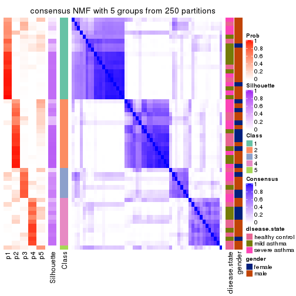
consensus_heatmap(res, k = 6)

Heatmaps for the membership of samples in all partitions to see how consistent they are:
membership_heatmap(res, k = 2)
membership_heatmap(res, k = 3)
membership_heatmap(res, k = 4)
membership_heatmap(res, k = 5)
membership_heatmap(res, k = 6)
As soon as we have had the classes for columns, we can look for signatures which are significantly different between classes which can be candidate marks for certain classes. Following are the heatmaps for signatures.
Signature heatmaps where rows are scaled:
get_signatures(res, k = 2)
get_signatures(res, k = 3)
get_signatures(res, k = 4)
get_signatures(res, k = 5)
get_signatures(res, k = 6)
Signature heatmaps where rows are not scaled:
get_signatures(res, k = 2, scale_rows = FALSE)
get_signatures(res, k = 3, scale_rows = FALSE)

get_signatures(res, k = 4, scale_rows = FALSE)
get_signatures(res, k = 5, scale_rows = FALSE)
get_signatures(res, k = 6, scale_rows = FALSE)
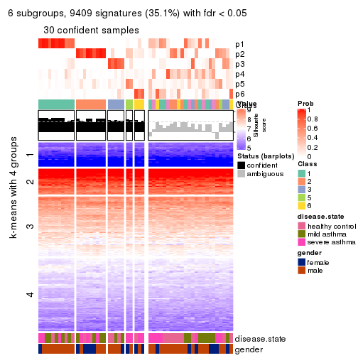
Compare the overlap of signatures from different k:
compare_signatures(res)
get_signature() returns a data frame invisibly. TO get the list of signatures, the function
call should be assigned to a variable explicitly. In following code, if plot argument is set
to FALSE, no heatmap is plotted while only the differential analysis is performed.
# code only for demonstration
tb = get_signature(res, k = ..., plot = FALSE)
An example of the output of tb is:
#> which_row fdr mean_1 mean_2 scaled_mean_1 scaled_mean_2 km
#> 1 38 0.042760348 8.373488 9.131774 -0.5533452 0.5164555 1
#> 2 40 0.018707592 7.106213 8.469186 -0.6173731 0.5762149 1
#> 3 55 0.019134737 10.221463 11.207825 -0.6159697 0.5749050 1
#> 4 59 0.006059896 5.921854 7.869574 -0.6899429 0.6439467 1
#> 5 60 0.018055526 8.928898 10.211722 -0.6204761 0.5791110 1
#> 6 98 0.009384629 15.714769 14.887706 0.6635654 -0.6193277 2
...
The columns in tb are:
which_row: row indices corresponding to the input matrix.fdr: FDR for the differential test. mean_x: The mean value in group x.scaled_mean_x: The mean value in group x after rows are scaled.km: Row groups if k-means clustering is applied to rows.UMAP plot which shows how samples are separated.
dimension_reduction(res, k = 2, method = "UMAP")
dimension_reduction(res, k = 3, method = "UMAP")
dimension_reduction(res, k = 4, method = "UMAP")

dimension_reduction(res, k = 5, method = "UMAP")
dimension_reduction(res, k = 6, method = "UMAP")
Following heatmap shows how subgroups are split when increasing k:
collect_classes(res)
Test correlation between subgroups and known annotations. If the known annotation is numeric, one-way ANOVA test is applied, and if the known annotation is discrete, chi-squared contingency table test is applied.
test_to_known_factors(res)
#> n disease.state(p) gender(p) k
#> ATC:NMF 52 0.343 0.0354 2
#> ATC:NMF 49 0.104 0.0557 3
#> ATC:NMF 48 0.564 0.1736 4
#> ATC:NMF 39 0.297 0.1419 5
#> ATC:NMF 30 0.265 0.1328 6
If matrix rows can be associated to genes, consider to use functional_enrichment(res,
...) to perform function enrichment for the signature genes. See this vignette for more detailed explanations.
sessionInfo()
#> R version 3.6.0 (2019-04-26)
#> Platform: x86_64-pc-linux-gnu (64-bit)
#> Running under: CentOS Linux 7 (Core)
#>
#> Matrix products: default
#> BLAS: /usr/lib64/libblas.so.3.4.2
#> LAPACK: /usr/lib64/liblapack.so.3.4.2
#>
#> locale:
#> [1] LC_CTYPE=en_GB.UTF-8 LC_NUMERIC=C LC_TIME=en_GB.UTF-8
#> [4] LC_COLLATE=en_GB.UTF-8 LC_MONETARY=en_GB.UTF-8 LC_MESSAGES=en_GB.UTF-8
#> [7] LC_PAPER=en_GB.UTF-8 LC_NAME=C LC_ADDRESS=C
#> [10] LC_TELEPHONE=C LC_MEASUREMENT=en_GB.UTF-8 LC_IDENTIFICATION=C
#>
#> attached base packages:
#> [1] grid stats graphics grDevices utils datasets methods base
#>
#> other attached packages:
#> [1] genefilter_1.66.0 ComplexHeatmap_2.3.1 markdown_1.1 knitr_1.26
#> [5] GetoptLong_0.1.7 cola_1.3.2
#>
#> loaded via a namespace (and not attached):
#> [1] circlize_0.4.8 shape_1.4.4 xfun_0.11 slam_0.1-46
#> [5] lattice_0.20-38 splines_3.6.0 colorspace_1.4-1 vctrs_0.2.0
#> [9] stats4_3.6.0 blob_1.2.0 XML_3.98-1.20 survival_2.44-1.1
#> [13] rlang_0.4.2 pillar_1.4.2 DBI_1.0.0 BiocGenerics_0.30.0
#> [17] bit64_0.9-7 RColorBrewer_1.1-2 matrixStats_0.55.0 stringr_1.4.0
#> [21] GlobalOptions_0.1.1 evaluate_0.14 memoise_1.1.0 Biobase_2.44.0
#> [25] IRanges_2.18.3 parallel_3.6.0 AnnotationDbi_1.46.1 highr_0.8
#> [29] Rcpp_1.0.3 xtable_1.8-4 backports_1.1.5 S4Vectors_0.22.1
#> [33] annotate_1.62.0 skmeans_0.2-11 bit_1.1-14 microbenchmark_1.4-7
#> [37] brew_1.0-6 impute_1.58.0 rjson_0.2.20 png_0.1-7
#> [41] digest_0.6.23 stringi_1.4.3 polyclip_1.10-0 clue_0.3-57
#> [45] tools_3.6.0 bitops_1.0-6 magrittr_1.5 eulerr_6.0.0
#> [49] RCurl_1.95-4.12 RSQLite_2.1.4 tibble_2.1.3 cluster_2.1.0
#> [53] crayon_1.3.4 pkgconfig_2.0.3 zeallot_0.1.0 Matrix_1.2-17
#> [57] xml2_1.2.2 httr_1.4.1 R6_2.4.1 mclust_5.4.5
#> [61] compiler_3.6.0